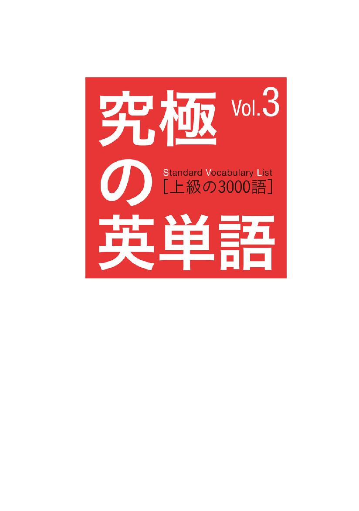
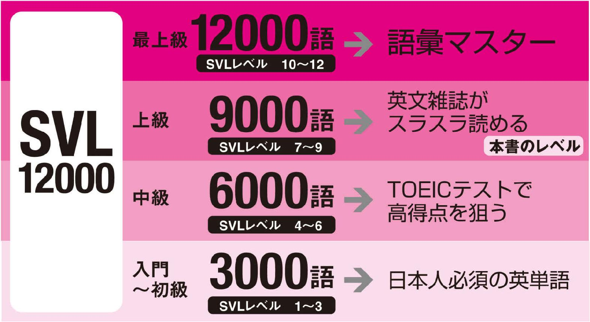
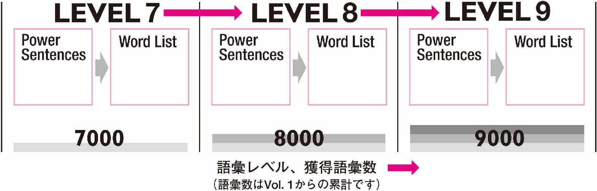
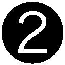
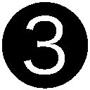
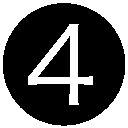
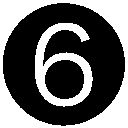
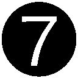

| 究極の英単語 SVL Vol.3 上級の3000語 | |
| アルク英語出版編集部 | |
| (2007) | |

参照項目から元の箇所に戻るには、お使いのビューワーの仕様に従ってください。または一旦目次を表示し、戻りたい箇所の近くの見出しをタップして戻ってください。
Foreword
は じ め に
日本人が覚えるべき「使える英単語」がここに
『究極の英単語SVL』は、アルクが編集した「標準語彙水準12000」（Standard Vocabulary List［略称SVL12000］）をベースにした、全く新しいタイプの英単語帳です。
SVL12000は、過去30年間にわたり多数の学習教材・書籍に携わってきたアルクが、これまでに蓄積した膨大な英文データや先行資料をもとに、日本人の英語学習者にとって有用な英語語彙1万2000語を選び出し、ネイティブスピーカーの使用頻度や難易度を考慮して12のレベルに区分した、これまでに類を見ない段階別学習語彙リストです。
本書はSVL12000にリストアップされた語彙を本当に使いこなせるようにするために、使い方がよく分かる例文やフレーズ、文法面や発音面での注意事項などをふんだんに盛り込みました。
本書は読者の皆様の単語学習スタイルを、単なる暗記から使える語彙の蓄積に変えます。
□
本書の特徴
1
英字新聞・雑誌を読むのがグーンと楽になる3000語！

標準語彙水準12000（略称：SVL12000）は、日本人英語学習者にとって最も有用な英単語を全12段階にレベル分けした語彙リストです。本書にはSVL12000の上級レベルに相当するLEVEL７～LEVEL９の単語3000語を完全収録しました。
この3000語で英字新聞や英文雑誌の記事などの時事英語を読むのに必要な単語を多数身に付けることができます。またTOEIC®テストに頻出する単語を数多く収録し、対策例文も掲載したので、TOEICで900点越えを狙う語彙学習が可能です。
2
「例文」と「単語リスト」をあわせて効率のよい学習！
本書は各レベルとも、Power Sentences（例文）とWord List（単語リスト）という２つのコーナーで構成されています。それぞれ、ネイティブスピーカーが実際によく使う文やフレーズなど、その単語の実際の使用例を多数掲載しました。
Power Sentences
SVL12000の単語を多数含んだ「単語の使い方がよく分かる例文」です。初めて覚える動詞１つに対しPower Sentenceが必ず１つ用意されています。動詞に密接に関係するその他の品詞も一緒に覚えていくことができます。
Word List
同レベル内でPower Sentences中に含まれなかった単語を品詞ごとにリストアップしました。動詞以外の品詞の単語を主な使い方とともに掲載しています。
3
Review Passageで、単語が実際の記事でどのように使われるかを確認！
各レベルの最後に、本書の収録単語をたくさん含む、英字新聞・雑誌スタイルの典型的な記事を掲載しました。これらを読めば、単語の実際の使われ方がよく分かります。
本書が推奨する学習方法
シンプルに「本書の最初から順に覚えていく」学習をお勧めします。Power Sentencesには、学習中のレベル以上の単語が登場しません。初めて登場する単語には必ず解説が付くので、段階的に無理なく単語を覚えることができます。また、学習を進めていくと、以前登場した重要単語がしばしばPower Sentencesに再登場します。繰り返し触れることで記憶の定着を図ることができます。
無理なく語彙数とレベルをUP！

Power Sentencesの使い方
Power Sentencesでは、動詞を中心に、ほかの品詞の単語も効率よく覚えることができます。
■動詞のタイプ
動詞をその働きや傾向から「状態・存在」「コミュニケーション」「動作」「行為」「知覚・思考」の５つのタイプに分けました。動詞をイメージで分けることで、記憶しやすくなっています。
■Power Sentences 重要動詞を含んだ例文です。3レベル合計540の例文が本書に収録されています。
１つの例文で、同じレベルの複数の単語を一度に覚えることができるので、効率的です。また、ここでは学習中のレベル以上の単語は使用していません。初めて出てきた単語には必ず解説が付きます。学習を進めていくうち、今まで解説された単語が例文中に再登場する可能性もあります。本当に覚えているかどうか、自然な流れでチェックすることができます。
■見出し語
Power Sentencesに含まれる単語と発音記号です。文の中心となる動詞は背景が灰色になっています。また、数字は見出し語の通し番号です。全3000語中、何語覚えたかの目安にしてください。
■解説
各見出し語の意味を詳しく紹介しています。同じ単語で、品詞違いの意味がある場合は、それも掲載していますので、参考にしてください。動詞に関しては文型や活用、頻出表現など、たくさんの情報を盛り込みました。（各記号の見方はこちらを参照）
■TOEIC対策例文
TOEIC®テストに頻出の単語には、対策用例文がついています。その単語がよく出るTOEICのPartと、実際どのように使われるのかをここで確かめることができます。（TOEIC対策例文には本書のレベル以上、またはSVLにない単語も使われることがあります）
■使える★フレーズ
Power Sentences中に出てきた特に覚えておきたいの熟語表現や慣用表現、複数の見出し語が組み合わさってできる表現などを取り上げました。日常的に使うフレーズが多いので、覚えておくと必ず役に立ちます。
Word Listの使い方
動詞以外の品詞で、Power Sentencesに登場しなかった単語がその主な使い方とともに、品詞ごとに掲載されています。
■品詞
単語は品詞別に分かれています。ある単語が実際に使われるとき、主にどの品詞として使われているのかを意識して覚えていきましょう。
■単語のカテゴリー
名詞と形容詞については、単語をカテゴリー別にまとめて並べました。▼マークのある個所から下は、同じカテゴリーの単語が続くことを意味します。単語が使われるシーンを想像しやすくなるので、記憶する際の助けとなります。
■見出し語
単語と発音記号です。Power Sentencesと同様、通し番号が用意されています。
■解説
見出し語の意味をそれぞれここで詳しく解説しています。メインの意味以外にも、その他の品詞としての意味をここでチェックできます。（各記号の見方はこちらを参照）
■使い方
その単語は実際どういったフレーズや文でよく使われるのかをここでできるだけ紹介しています。その単語の意味をただ暗記するだけでなく、他の単語とのつながりや関係を一緒に覚えることで「使える英単語」を身に付けることができます。
■TOEIC対策例文
Power Sentences 同様、TOEIC®テスト頻出単語にはpart表示と対策例文がついています。
本書に登場する単語と例文の音声はCD-ROMで販売されています。
『究極の英単語[12000語]音声CD-ROM』￥3,000（税抜価格）
（本シリーズVol.1～Vol.4に掲載の全12000単語・2184例文を収録）
音声ダウンロード版もあります。
iTunes Store、amisoft、MORA、楽天などのダウンロードサイトよりお求めください。
※各ダウンロードサイトにより、音声の形式、再生可能なプレイヤーが異なりますので事前にご確認ください。
□
Icons
「究極の英単語」シリーズで使用する記号の説明
品 詞 の 記 号
be...be 動詞
自...自動詞
他...他動詞
名...名詞
形...形容詞
副...副詞
代...代名詞
冠...冠詞
前...前置詞
接...接続詞
助...助動詞
...疑問代名詞
 ...疑問副詞
...疑問副詞
間...間投詞
※同じつづりでも、語源の違いにより複数の意味がある場合は、①②......という数字をふって区別できるようにしました。
品 詞 以 外 の 記 号
活...活用
特殊な変化をする動詞の活用です。
複...複数形
特殊な変化をする名詞の複数形です。また、不可算名詞（数えられない名詞）もここで記しました。ただし「不可算」という記述がなくても、使われる意味次第で不可算扱いとなる単語もあります。
型...文型
その動詞がとることのできる文型で、ネイティブの使用頻度が高いものを記述しています。
Ex...文型の例文
SVC、SVOO、SVOCの文型をとることのできる一般動詞の例文です。
Power Sentences が上記３つの文型のうちいずれかに該当している場合は、その文型の例文の記載はありません。
頻...頻出表現
その動詞を使った言い回しや熟語で、ネイティブがよく使うものを記述しました。"call ... up"（...に電話をかける）とある場合は"call up..."に置き換え可能です。ただし ... が代名詞の場合は、"call ... up"の形しかとれません。（例："call him up"は可、"call up him"は不可）
！...注意点
発音、アクセント、文型、文法等、その単語に関して注意事項がある場合はこのマークで表します。
※解説、使い方での（米）（または［米］）はアメリカ英語、（英）（または［英］）はイギリス英語での意味を表します。
Start!→
LEVEL
Power Sentences
状態・存在
Thesymposium broadened my knowledge ofecology.
そのシンポジウムは生態学に関する私の知識を広げてくれた。
□ 6001
symposium
[simpóuziəm]
名シンポジウム、討論会
□ 6002
broaden
[brɔ́ːdn]
他...を広げる、...を広くする
自広がる、広くなる
型 SV、SVO
頻 ・broaden a street（通りを広げる）
・broaden one's view [perspective] of ...（...についての視野を広げる）
□ 6003
ecology
[ikɑ́lədʒi]
名生態学（以上は通常 the ecology で）、エコロジー
複不可算
A rumor iscirculating that acorpse is buried in themarsh.
その沼地に死体が埋まっているといううわさが広まっている。
□ 6004
circulate
[sə́ːrkjulèit]
自（うわさなどが）広まる、（液体などが）循環する、（通貨などが）流通する
他（液体など）を循環させる、（通貨など）を流通させる
型 SV、SVO
頻 ・circulate through the body（体内を循環する）
・circulate among ...（...の間に流通する）
□ 6005
corpse
[kɔ́ːrps]
名死体
□ 6006
marsh
[mɑ́ːrʃ]
名沼地、低湿地
Thefingerprints left on the scenecoincided with those of theplumber arrested by the police.
現場に残っていた指紋は、警察に逮捕された配管工の指紋と一致した。
□ 6007
fingerprint
[fíŋgərprìnt]
名（通常 fingerprints で）指紋
他 ...の指紋を採取する
□ 6008
coincide
[kòuinsáid]
自一致する、ぴったり合う、同時に起こる、同一の空間を占める
型 SV
頻 ・coincide with ...（...と同時に起こる、...と一致する）
□ 6009
plumber
[plʌ́mər]
名配管工
↑TOEIC part 2,3 頻出!
How much should I expect to pay for a plumber?
配管工には幾ら払う心積もりをしておけばいいですか。
The secondary examinationcomprises dictation and an oral comprehension test.
二次試験はディクテーションと口述試験から成る。
□ 6010
comprise
[kəmpráiz]
他...から成る、...を含む、...で構成される
型 SVO
頻 ・be comprised of ...（...から構成される）
□ 6011
dictation
[diktéiʃən]
名ディクテーション（の試験）、書き取り、口述
To ouramazement, the results of the experimentcontradicted ourhypothesis.
驚いたことに、その実験の結果はわれわれの仮説と矛盾するものだった。
□ 6012
amazement
[əméizmənt]
名驚き、仰天
複不可算
□ 6013
contradict
[kɑ̀ntrədíkt]
他...と矛盾する、...と食い違う、...をきっぱりと否定する、...に反論する
自否定する、反論する
型 SV、SVO
頻 ・contradict the fact that ...（...という事実と矛盾する）
・You're contradicting yourself.（君の話は矛盾しているよ）
□ 6014
hypothesis
[haipɑ́θəsis]
名仮説、前提、仮定
複 hypotheses
使える★フレーズ to one's amazement（驚いたことには）
The war hadcrippled thelieutenant, and he has been using awheelchair since then.
戦争で中尉は手足が不自由になり、それ以来車いすを使っている。
□ 6015
cripple
[krípl]
他...の手足を不自由にする、...を駄目にする、...を損なわせる
型 SVO
頻 ・cripple the economy（経済を混乱状態に陥れる）
・The heavy snowfall crippled the railroads.（大雪で鉄道がまひした）
名 手足の不自由な人
□ 6016
lieutenant
[luːténənt]
名（陸軍の）中尉、上官代理、（海軍の）大尉
□ 6017
wheelchair
[hwíːltʃɛ̀ər]
名車いす
The sudden whistle of a steamlocomotive deafened my ears.
蒸気機関車の突然の汽笛で私は耳が聞こえなくなった。
□ 6018
locomotive
[lòukəmóutiv]
名機関車
形 機関車の
□ 6019
deafen
[défən]
他...の耳を聞こえなくする、（音など）をかき消す
型 SVO
頻 ・The explosion deafened me.（その爆発で私は耳が聞こえなくなった）
Thatoptimism doomed the company tobankruptcy.
その楽観主義が災いして、会社は倒産へと追い込まれた。
□ 6020
optimism
[ɑ́ptəmìzm]
名楽観主義、楽天主義
複不可算
□ 6021
doom
[dúːm]
他（悪い方向へ）...を運命づける、（失敗・滅亡・破滅など）を決定づける
型 SVO
頻 ・be doomed to do（...する運命にある）
・doom ... to failure [extinction]（...を失敗［滅亡］へと運命づける）
名 運命、宿命、悲運、破滅、（キリスト教で）最後の審判
□ 6022
bankruptcy
[bǽŋkrʌptsi]
名破産、倒産、（名声・名誉の）失墜
↑TOEIC part 7 頻出!
The company ran a huge deficit and filed for bankruptcy.
その会社は巨額の赤字を出し破産を申請した。
The newly designedcylinders in the engine haveenhanced its strength.
そのエンジンの新設計のシリンダーはエンジンの強度を高めている。
□ 6023
cylinder
[sílindər]
名シリンダー、円筒
□ 6024
enhance
[inhǽns]
他（品質・価値など）を高める、...を強める、...を増す、（コンピューターなど）の機能を拡張する
型 SVO
頻 ・enhance the quality [transparency] of ...（...の品質［透明性］を高める）
・enhance the security of the network（ネットワークのセキュリティーを強化する）
↑TOEIC part 4 頻出!
The approval of this drug is expected to enhance the company's overall competitive position in the market.
この薬品の認可によって、その会社の市場における全体的な競争力の優位が高まるものと予想される。
Heenriched hisexpertise in English translation through someintensive programs.
彼は集中的なプログラムによって英語翻訳の技術を向上させた。
□ 6025
enrich
[inrítʃ]
他...を質的に向上させる、...を豊かにする、...の栄養価を高める、（ウランなど）を濃縮する
型 SVO
頻 ・enrich ... with [by] 〜（〜で...を豊かにする［高める］）
・enrich the soil with fertilizer（土地を肥料で肥やす）
・enrich the standard of living（生活水準を高める）
□ 6026
expertise
[èkspərtíːz]
名専門的技術［知識］
複不可算
↑TOEIC part 4 頻出!
Construction of a database is time-consuming and requires considerable expertise.
データベースの構築は時間の掛かる作業であり、相当の専門技術を必要とする。
□ 6027
intensive
[inténsiv]
形短期集中的な、徹底的な、激しい、（文法で）強意の、強調の
■English（英語の）
Densesmog enveloped the whole city.
濃いスモッグが街全体を覆った。
□ 6028
smog
[smɑ́g]
名スモッグ、煙霧
□ 6029
envelop
[invéləp]
他...を覆う、...を包む、...をくるむ
型 SVO
頻 ・envelop ... in 〜（...を〜で包む［覆う］）
・be enveloped in ...（...に包まれる［覆われる］）
The pianosoloist was the mostexpressive among all the players and alsoexcelled in technique.
そのピアノ独奏者がすべての演奏者の中で最も表情豊かで、しかも技術でも勝っていた。
□ 6030
soloist
[sóulouist]
名独奏［独唱］者、ソリスト
□ 6031
expressive
[iksprésiv]
形表情豊かな、表現（上）の、（expressive of ... で）（...を）表現する、表す
□ 6032
excel
[iksél]
自勝る、秀でている
他...に勝る、...より秀でている
型 SV、SVO
頻 ・excel in ...（［学科など］において勝る）
・excel at ...（［スポーツ種目など］において勝る）
Plaster isflaking off the wall in thelavatory.
トイレの壁のしっくいがはがれ落ちてきている。
□ 6033
plaster
[plǽstər]
名しっくい、壁土、石こう
複不可算
他 ...にしっくいを塗る、...をべたべた塗る、（髪）をべったりとなでつける
□ 6034
flake
[fléik]
自はがれ落ちる
他...をはがす
型 SV、SVO
頻 ・flake out（しくじる、眠り込む）
名 破片、ひとひら
□ 6035
lavatory
[lǽvətɔ̀ːri]
名トイレ、洗面所
A flag wasmadly flapping in thethunderstorm.
激しい雷雨の中で旗が狂ったようにはためいていた。
□ 6036
madly
[mǽdli]
副狂ったように、激しく、気が狂ったように
□ 6037
flap
[flǽp]
自（旗などが）はためく、パタパタ動く
他（旗など）をはためかせる、パタパタ動かす
型 SV、SVO
名 羽ばたきの音、（航空機の）フラップ、（本のカバーなどの）折り返し部分
□ 6038
thunderstorm
[θʌ́ndərstɔ̀ːrm]
名激しい雷雨
His faceflushed red withindignation.
彼の顔は義憤で真っ赤になった。
□ 6039
flush
[flʌ́ʃ]
自（興奮・怒りなどで）顔が赤くなる、紅潮する、（ほおなどが）赤くなる、（水が）どっと流れる
他（ほおなど）を赤くさせる、（水）をどっと流す
型 SV、SVO
頻 ・flush red with anger（怒りで顔が赤くなる）
・Anger flushed his face.（彼は怒りで顔を真っ赤にした）
・flush ... away（...を洗い流す）
・flush ... out（...を流して洗う）
名 どっと水を流すこと、赤面
□ 6040
indignation
[ìndignéiʃən]
名義憤、憤り
複不可算
The incidentheightened people's awareness ofcontradictions in the law.
その事件がきっかけで、その法律の矛盾点についての人々の認識が高まった。
□ 6041
heighten
[háitn]
！ 発音注意
他...を高める、...を高くする
自高まる、高くなる
型 SV、SVO
頻 ・heighten cooling effect（冷却効果を高める）
・heighten the security level （セキュリティーレベルを高くする）
□ 6042
contradiction
[kɑ̀ntrədíkʃən]
名矛盾、矛盾した言動、反対の主張、反論
The audiencehushed when thelecturer began to speak.
講師が話し始めると聴衆は静かになった。
□ 6043
hush
[hʌ́ʃ]
自静かになる
他...を静かにさせる、...をなだめる、（事実など）をもみ消す
型 SV、SVO
頻 ・hush up（静まり返る）
・hush ... up（［事実・証拠など］をもみ消す）
名 沈黙、静けさ
□ 6044
lecturer
[léktʃərər]
名講師、講演者
Theyilluminate the whole street with millions of lights inwintertime.
冬の間はその通り全体が無数のライトで照らされる。
□ 6045
illuminate
[ilúːmənèit]
他...を照らす、（物・場所）を明るくする、（問題など）を明らかにする
型 SVO
頻 ・illuminate the whole ...（...全体をライトアップする）
・illuminate ... at night（...を夜間照明する）
□ 6046
wintertime
[wíntərtàim]
名（しばしば the wintertime で）冬、冬期
複不可算
Today the mostprevailing models of cell phonesincorporate camera and video features.
今日最も一般的な携帯電話にはカメラとビデオの機能が組み込まれている。
□ 6047
prevailing
[privéiliŋ]
形一般的な、行き渡った、支配的な、有力な（限定用法）
□ 6048
incorporate
[inkɔ́ːrpərèit]
！ 発音注意
他...を組み込む、...を組み入れる、...を合体させる、...を法人組織にする
自合併［合体］する
型 SV、SVO
頻 ・incorporate ... into 〜（...を〜に組み入れる）
・incorporate with ...（...と合併する）
形 合併した、法人［会社］組織の[inkɔ́ːrpərət]
使える★フレーズ a cell phone（携帯電話）
U.S. airraids onmetropolitan areas in Japanintensified in 1945.
1945年には、アメリカによる日本の主要都市地域への空襲は激しくなった。
□ 6049
raid
[réid]
名襲撃、急襲、（警察などの）手入れ、侵入
他 ...を襲撃［急襲］する、（警察が）...を手入れする
□ 6050
metropolitan
[mètrəpɑ́litən]
形主要都市の、大都市の（限定用法が多い）
□ 6051
intensify
[inténsəfài]
自激しくなる、強くなる、強まる
他...を激しくする、...を増大する、...を強める
型 SV、SVO
頻 ・as the storm intensified（嵐が激しくなるにつれて）
・intensify the attack against ...（...に対する攻撃を強める）
・ intensify one' s efforts to do（...するよう一層努力する）
使える★フレーズ an air raid（空襲）
■U.S. （合衆国の、アメリカの）
■Japan （日本）
Excessiveintake of alcohol canlengthen therehabilitation from an injury.
アルコールの過度の摂取は、けがからのリハビリを長引かせる可能性がある。
□ 6052
intake
[íntèik]
名摂取、（空気などの）取り入れ、吸い込み、（空気などの）取り入れ口
□ 6053
lengthen
[léŋkθən]
他...を長くする、...を伸ばす
自長くなる
型 SV、SVO
頻 ・have one's trousers lengthened two centimeters（ズボンの丈を２センチ長くしてもらう）
・lengthen a platform（プラットホームを延長する）
□ 6054
rehabilitation
[rìːhəbìlətéiʃən]
名リハビリテーション、社会復帰、再建
複不可算
Using acane willlessen the pain of thebruise on your knee.
つえを使えば、ひざの打撲の痛みが和らぎますよ。
□ 6055
cane
[kéin]
名つえ、ステッキ、（トウなどの）茎、サトウキビ（sugar cane）
他 ...を罰としてむちでたたく
□ 6056
lessen
[lésn]
他...を減らす、...を少なく［小さく］する
自減る、小さくなる
型 SV、SVO
頻 ・lessen one's pain（痛みを和らげる［軽くする］）
・lessen a tax burden（税負担を軽くする）
□ 6057
bruise
[brúːz]
！ 発音注意
名打撲、打撲傷、打ち身、（果物などの）傷、（心の）傷
他 ...に打撲を負わせる、（果物など）に傷をつける、（人の心）を傷つける
自 （果物・皮膚などが）傷つく
Recollections of herdebut as a jazz singertemporarily lightened her heart.
ジャズシンガーとしてデビューを飾った時の思い出が一時的に彼女の心を明るくした。
□ 6058
recollection
[rèkəlékʃən]
名思い出、記憶、回想、思い出すこと
□ 6059
debut
[deibjúː]
名デビュー、初舞台
自 （社交界などに）デビューする、初舞台を踏む
他 （製品など）を初公開する
形 処女作の（限定用法）
□ 6060
temporarily
[tèmpərérəli]
副一時的に、仮に
↑TOEIC part 5,6 頻出!
This road will be temporarily closed to traffic to allow emergency repairs to be carried out.
緊急の補修作業を行うため、この道路は一時的に通行止めになります。
□ 6061
lighten
[láitn]
他...を明るくする
自明るくなる
型 SV、SVO
頻 ・lighten up（元気を出す）
The governmentnationalized the country's biggest mine in spite of theminers' opposition.
政府は鉱山労働者たちの反対を押し切って国内最大の鉱山を国営化した。
□ 6062
nationalize
[nǽʃənəlàiz]
他...を国営化する、...を全国的に展開する
型 SVO
頻 ・nationalize a bank（銀行を国営化する）
□ 6063
miner
[máinər]
名鉱山労働者、鉱員
In many books, apreface precedes the contents page, andappendix pages will follow the contents page.
多くの本の場合、本文の前に序文が置かれ、また本文ページの後には付録が続く。
□ 6064
preface
[préfis]
！ 発音注意
名序文、きっかけ、発端
他 ...に序文を付ける
□ 6065
precede
[prisíːd]
他...の前に置く、（時間的に）...に先行する、...より先に起こる、（重要性などが）...より上である
型 SVO
頻 ・a series of earthquakes preceding the eruption（噴火に先立つ一連の地震）
□ 6066
appendix
[əpéndiks]
名（本などの）付録、補遺、（医学で）突起、虫垂
複 appendixes, appendices
Mypulse quickened as a mixture of expectation andapprehension built in my chest.
期待と不安が入り交じったものが胸の中に広がるにつれて、私の鼓動は速まった。
□ 6067
pulse
[pʌ́ls]
名鼓動、脈拍、（通信の）パルス、（音・光の）波動
自 鼓動する、脈打つ
□ 6068
quicken
[kwíkən]
自速くなる、速まる、活発になる
他...を速くする、...を活気づける
型 SV、SVO
頻 ・quicken one's pace（歩調を早める）
□ 6069
apprehension
[æ̀prihénʃən]
名不安、心配、逮捕
Thefigs in the garden have fullyripened.
庭のイチジクがすっかり熟した。
□ 6070
fig
[fíg]
名イチジク（の実）、ささいな量
□ 6071
ripen
[ráipən]
自（果物などが）熟する、実る、成熟する
他（果物など）を熟させる
型 SV、SVO
頻 ・ripen into ...（成熟して...になる）
All thegoldfish in the aquarium are dead, and they have begun torot in the water.
水槽の中の金魚は皆死んでおり、水中で腐り始めている。
□ 6072
goldfish
[góuldfiʃ]
名金魚
□ 6073
rot
[rɑ́t]
自腐る、腐敗する、朽ちる、（道徳的に）堕落する
他...を腐らせる、...を腐敗させる
型 SV、SVO
頻 ・rot off [away]（朽ちていく）
名 腐敗、堕落
Thedistributor simplified themerchandise management system.
その流通業者は商品の管理システムを単純にした。
□ 6074
distributor
[distríbjutər]
名流通業者、販売者、分配器、配電器
□ 6075
simplify
[símpləfài]
他...を単純にする、...を簡単［平易］にする、...を簡素化する
型 SVO
頻 ・be greatly simplified（大幅に簡素化される）
・simplify the process（工程を簡素化する）
・simplify a problem（問題を単純化する）
□ 6076
merchandise
[mə́ːrtʃəndàiz]
名（集合的に）商品
複不可算
他 ...を売買［取引］する、...の販売を促進する
↑TOEIC part 7 頻出!
If your merchandise arrives damaged, please contact our customer service department within 24 hours of receipt.
届いた商品に損傷があった場合は、受け取ってから24時間以内に当社の顧客サービス部に連絡してください。
Chicago is ametropolis which issituated on Lake Michigan.
シカゴはミシガン湖のほとりに位置する大都市だ。
□ 6077
metropolis
[mitrɑ́pəlis]
！ アクセント注意
名大都市、主要都市、（産業・文化の）中心地
□ 6078
situate
[sítʃuèit]
他...を位置づける、...を置く、...を据える
型 SVO
■Chicago（シカゴ）
■Lake Michigan（ミシガン湖）
Severaldoses of the medicine willsoothe yourboweldisorder.
この薬を何度か飲めば、腸の病気は軽くなるでしょう。
□ 6079
dose
[dóus]
名（１回分の）服用量、薬になるもの
□ 6080
soothe
[súːð]
他...を軽くする、（痛みなど）を和らげる、...をなだめる
自気分を落ち着かせる
型 SV、SVO
□ 6081
bowel
[báuəl]
名腸、はらわた
Subscriptions to the magazine havesurpassed 50,000.
その雑誌の定期購読数は5万を上回った。
□ 6082
subscription
[səbskrípʃən]
名定期［予約］購読（料）、（インターネット・電話などに）加入すること、寄付（金）
□ 6083
surpass
[sərpǽs]
！ アクセント注意
他...を上回る、...に勝る
型 SVO
頻 ・surpass ... in 〜（〜において...を上回る）
Thescandalous incidentsymbolizes thetelecommunications bubble of the 1990's.
その恥ずべき事件は1990年代の電気通信バブルを象徴している。
□ 6084
scandalous
[skǽndləs]
形恥ずべき、不面目な、中傷的な
□ 6085
symbolize
[símbəlàiz]
他...を象徴する、...の象徴である、...を記号で表す
型 SVO
□ 6086
telecommunications
[tèlikəmjuːnəkéiʃənz]
名電気通信、（電子機器による）遠距離通信（単数扱い）
The snow on the roof of thestorehouse began tothaw by noon.
倉庫の屋根の雪が、正午までには溶け始めた。
□ 6087
storehouse
[stɔ́ːrhàus]
名倉庫、貯蔵所
□ 6088
thaw
[θɔ́ː]
自（雪・氷などが）溶ける、（冷凍食品が）解凍される、（体のこわばりなどが）暖まってほぐれる、（人が）打ち解ける
他（雪・氷など）を溶かす、（冷凍食品）を解凍する
型 SV、SVO
頻 ・thaw out（打ち解ける）
名 解けること、打ち解けること
The fog on the seathickened, and we could see only the light of alighthouse far away.
海上の霧が濃くなり、遠くの灯台の明かりしか見えなかった。
□ 6089
thicken
[θíkən]
自（液体などが）濃くなる、密集する、厚くなる
他（液体など）を濃くする、...にとろみをつける、...を密集させる、...を厚くする
型 SV、SVO
頻 ・thicken ... up（...を濃くする）
・thicken ... with 〜（...を〜で濃くする［とろみをつける］）
□ 6090
lighthouse
[láithàus]
名灯台
Thestationery store he started five years ago isthriving.
彼が5年前に始めた文房具店は成功している。
□ 6091
stationery
[stéiʃənèri]
名文房具、便せん
複不可算
↑TOEIC part 5,6 頻出!
We offer a wide variety of office stationery as well as office furniture, equipment, and other supplies.
当店はオフィス用家具、備品、その他消耗品に加え、幅広い種類のオフィス用文房具を取り揃えています。
□ 6092
thrive
[θráiv]
自（事業などが）成功する、繁栄する、（植物などが）成長する、生きがいにする
活 （米）throve / thriven
型 SV
頻 ・thrive on ...（...を生きがいにする）
The Web site aboutgardening updated its information every day.
園芸についてのそのウェブサイトは情報を毎日最新のものに更新した。
□ 6093
gardening
[gɑ́ːrdniŋ]
名園芸、庭いじり、ガーデニング
複不可算
□ 6094
update
[ʌ̀pdéit]
！ アクセント注意
他（本・情報・ソフトウエアなど）を最新のものにする、...を更新する、...を改訂する
型 SVO
頻 ・update someone on ...（［人］に...に関する最新情報を提供する）
名 最新情報、最新版[ʌ́pdèit]
I completely forgot about the bouquet, and itwithered in the vase.
私はブーケのことをすっかり忘れていたが、それは花瓶の中でしおれていた。
□ 6095
wither
[wíðər]
自（植物などが）しおれる、（体力・気力などが）衰える、（色が）あせる、（音が）消えてなくなる
他（植物など）をしおれさせる、（体力・気力など）を衰えさせる
型 SV、SVO
頻 ・wither away（衰える、弱まる）
□
コミュニケーション
The newchancellor affirmed thecontinuation ofdrastic financial reform.
新しい首相は思い切った財政改革を継続することを主張した。
□ 6096
chancellor
[tʃǽnsələr]
名（しばしば Chancellor で）（ドイツなどの）首相、（英国の）大蔵大臣、長官、大臣
□ 6097
affirm
[əfə́ːrm]
他...を主張する、...を断言する、...を肯定する
自断言する、肯定する
型 SV、SVO
頻 ・affirm (to 〜) that ...（［〜に］...だと主張［断言］する）
・affirm the importance of ...（...の重要性を認める）
・affirm one's right to do（...する権利を主張する）
□ 6098
continuation
[kəntìnjuéiʃən]
名継続、存続、（話などの）続き
□ 6099
drastic
[drǽstik]
形思い切った、徹底的な、（薬の効果などが）強烈な
使える★フレーズ financial reform（財政改革）
Ananonymous letteralleges that thecommissioner was involved in aconspiracy.
匿名の手紙が、理事が陰謀に関与していたと断言している。
□ 6100
anonymous
[ənɑ́nəməs]
形匿名の、個性のない
□ 6101
allege
[əlédʒ]
他...を断言する、...を主張する
型 SVO
頻 ・allege that ...（...だと主張［断言］する）
□ 6102
commissioner
[kəmíʃənər]
名理事、署長、委員、長官
□ 6103
conspiracy
[kənspírəsi]
名陰謀、共謀
使える★フレーズ be involved in ...（...に関与する、...に巻き込まれる）
Hisarrogant anddeceitful attitudearoused fury amongcreditors.
彼の横柄で不正直な態度は債権者たちの激しい怒りを買った。
□ 6104
arrogant
[ǽrəgənt]
形横柄な、無礼な
□ 6105
deceitful
[disíːtfəl]
形不正直な、人をだます、人を誤らせるような
□ 6106
arouse
[əráuz]
！ 発音注意
他（感情・興味など）を呼び起こす、...を喚起する、...を誘発する、...の目を覚ます
型 SVO
頻 ・arouse envy in ...（...の心にねたみを起こさせる）
・arouse public sentiment against ...（...に対する国民の反感を呼び起こす）
□ 6107
fury
[fjúəri]
名激怒、激しさ、猛威
□ 6108
creditor
[kréditər]
名債権者、貸し主
Pedestrians shouldbeware of the many cars crossing thispathway.
歩行者はこの小道を横切るたくさんの車に注意すべきだ。
□ 6109
pedestrian
[pədéstriən]
名歩行者、徒歩旅行者
形 徒歩の、歩行の（限定用法）
↑TOEIC part 1 頻出!
Several pedestrians are waiting for the signal to change.
何人かの歩行者が信号待ちをしている。
□ 6110
beware
[biwɛ́ər]
自注意する、用心する
他...に注意する、...に用心する
型 SV、SVO
頻 ・beware of ...（...に注意する）
・beware that ...（...するように注意する）
□ 6111
pathway
[pǽθwèi]
名小道、進路
In thetram the girls werechattering about their favorite popidols.
市街電車の中で、その少女たちは好きなアイドル歌手についてペチャクチャおしゃべりしていた。
□ 6112
tram
[trǽm]
名路面［市街］電車、ケーブルカー、（鉱山の）トロッコ
□ 6113
chatter
[tʃǽtər]
自ペチャクチャおしゃべりする、ペラペラよくしゃべる、（鳥などが）けたたましく鳴く
型 SV
頻 ・chatter about [over] ...（...についてペチャクチャおしゃべりする）
名 おしゃべり、（鳥などの）鳴き声
□ 6114
idol
[áidl]
名アイドル、崇拝される人
The Administrationclarified its intent to reform theconstitutional system.
政府は憲法体系を改正する意図を明らかにした。
□ 6115
clarify
[klǽrfài]
他...を明らかにする、...をはっきりさせる
型 SVO
□ 6116
constitutional
[kɑ̀nstətjúːʃənl]
形憲法上の、立憲的な、健康によい
Thedean commended the students for theirsuperb theses.
学部長は、非常に優れた学位論文を書いたことでその学生たちを褒めた。
□ 6117
dean
[díːn]
名学部長
□ 6118
commend
[kəménd]
他...を褒める、...を推薦する
型 SVO
□ 6119
superb
[supə́ːrb]
形素晴らしい、極上の、豪華な
□ 6120
thesis
[θíːsis]
名学位論文、命題
複 theses
The official'spredecessor conceded that thestatistical data was afalsehood.
その職員の前任者は統計データがうそであったことを認めた。
□ 6121
predecessor
[prédəsèsər]
名前任者、先輩、前にあったもの
□ 6122
concede
[kənsíːd]
他...を認める、...を容認する、（権利など）を与える、...を譲渡する
自譲歩する、負けを認める
型 SV、SVO、SVOO
Ex
I
conceded
him
the point.
（私はその点について彼に譲歩した）
頻 ・concede defeat（［選挙候補者などが］敗北を認める）
・concede victory to one's rival（競争相手の勝利を認める）
・concede (to 〜) that ...（［〜に］...だと認める）
□ 6123
statistical
[stətístikəl]
形統計の、統計に基づく（限定用法が多い）
□ 6124
falsehood
[fɔ́ːlshùd]
名うそ、偽り、欺まん
Heconferred with histreasurer aboutfiscal matters.
彼は会計上の問題に関して財務担当者に相談した。
□ 6125
confer
[kənfə́ːr]
自相談する
他（学位・称号など）を与える
型 SV、SVO
頻 ・confer with ...（...と相談する）
・confer a degree on ...（...に学位を与える）
□ 6126
treasurer
[tréʒərər]
名財務担当者、会計係
□ 6127
fiscal
[fískəl]
形会計（上）の、財務の、国庫の
Heconfided to me with aweary look that he wasdissatisfied with his job.
仕事に満足していないと、彼はうんざりした表情で私に打ち明けた。
□ 6128
confide
[kənfáid]
自秘密を打ち明ける、信頼する
他（秘密など）を打ち明ける、...を任せる
型 SV、SVO
頻 ・confide (to 〜) that ...（［〜に］...と打ち明ける）
・confide in ...（...を信頼する、［信頼して］...に秘密を打ち明ける）
□ 6129
weary
[wíəri]
形うんざりしている、飽き飽きしている、（物事が）疲れさせる、退屈な、疲れ切った、へとへとの
□ 6130
dissatisfied
[dissǽtisfàid]
形満足していない、不満な
Thepastor consoled thesorrowful families.
牧師はその悲嘆に暮れる家族を慰めた。
□ 6131
pastor
[pǽstər]
名牧師、羊飼い
□ 6132
console
[kənsóul]
他...を慰める、...を元気づける
型 SVO
頻 ・console ... with 〜（...を〜で慰める）
・console ... for 〜（〜のことで...を慰める）
名 コンソール、本体、制御装置、（テレビなどの）コンソール型
□ 6133
sorrowful
[sɑ́rəfəl]
形悲嘆に暮れた、悲しんでいる、哀れな
Heformulated his ideas about theamendment of the constitution.
彼は憲法の修正案についての自分の考えを明確に述べた。
□ 6134
formulate
[fɔ́ːrmjulèit]
他...を明確に述べる［表す］、...を公式化する、...を考案する
型 SVO
頻 ・formulate one's ideas（考えを明確に述べる）
・formulate one's own position on a matter（問題に関する自分の見解をはっきりと述べる）
□ 6135
amendment
[əméndmənt]
名修正条項、改正、訂正
She wasgrumbling inannoyance about some kitchenutensils.
彼女はいらいらして何か台所用品のことをブツブツ言っていた。
□ 6136
grumble
[grʌ́mbl]
自ブツブツ言う、不平を言う
他...を文句たらたらに言う
型 SV、SVO
頻 ・grumble about ...（...のことでブツブツ言う）
・grumble at ...（...に文句を言う）
名 不平、不満
□ 6137
annoyance
[ənɔ́iəns]
名いら立たしさ、迷惑、困惑、困り事
□ 6138
utensil
[juːténsəl]
名（通常 utensils で）用具、器具
Thedisciples implored their master to teach them more about thedoctrine.
弟子たちは師匠にその教義についてもっと教えてほしいと懇願した。
□ 6139
disciple
[disáipl]
名弟子、信奉者
□ 6140
implore
[implɔ́ːr]
他...を懇願する、...を請う
型 SVO
頻 ・implore ... to do（...に〜してくれるよう懇願する）
□ 6141
doctrine
[dɑ́ktrin]
名教義、信条、政策、（外交政策上の）主義、方策
Eliot'spersuasive powersinduced me to restore my duties astrustee.
エリオットの説得力のおかげで、私は理事の職務をもう一度やる気になった。
□ 6142
persuasive
[pərswéisiv]
形説得力のある、説得できる
名 誘因
□ 6143
induce
[indjúːs]
他...を引き起こす、...を誘発する
型 SVO
頻 ・induce ... to do（...を説いて〜する気にさせる）
□ 6144
trustee
[trʌstíː]
名理事、役員、受託者、保管人
The audiencemanifested itsdissatisfaction with the actor'sunskilled performance.
観衆はその俳優の未熟な演技に不満を表した。
□ 6145
manifest
[mǽnəfèst]
他（感情など）を表す、...を明らかにする、...の証拠となる
型 SVO
頻 ・manifest one's intention to do（...する意図を明白に示す）
形 明白な、明らかな
□ 6146
dissatisfaction
[dìssætisfǽkʃən]
名不満、不平、不満の種
□ 6147
unskilled
[ʌ̀nskíld]
形（人が）未熟な、未熟練の、（仕事が）熟練を必要としない、（技術が）下手な
Sherlock Holmes'seccentric andunpredictable behavior oftenperplexed Dr. Watson.
シャーロック・ホームズの奇妙で予測不能の行動は、しばしばワトソン医師を当惑させた。
□ 6148
eccentric
[ikséntrik]
形奇妙な、一風変わった、常軌を逸した
名 変人、奇人
□ 6149
unpredictable
[ʌ̀npridíktəbl]
形予測できない、意外性のある
□ 6150
perplex
[pərpléks]
他...を当惑させる、...をまごつかせる、...を混乱させる
型 SVO
頻 ・be perplexed at [by, with] ...（...に当惑する［途方に暮れる］）
Sheprofessed to besupportive of thecivic movement.
彼女はその市民運動を支持すると明言した。
□ 6151
profess
[prəfés]
他...を明言［公言］する、...を装う、...するふりをする
自明言［公言］する
型 SV、SVO、SVOC
Ex
She
professed
herself
innocent.
（彼女は自分は無罪だと言い切った）
頻 ・profess that ...（...だと明言［公言］する）
・profess to do（...するふりをする）
□ 6152
supportive
[səpɔ́ːrtiv]
形支持する、支える、援助する、協力的な
□ 6153
civic
[sívik]
形市民の、都市の、市の（限定用法）
Wereconciled Mr. Jansen with his businessfoe.
われわれはジャンセン氏と彼の商売敵を和解させた。
□ 6154
reconcile
[rékənsàil]
！ アクセント注意
他...を和解させる、...を仲裁する、...を調和させる、...に甘んじさせる
自和解する
型 SV、SVO
頻 ・reconcile conflicts between ...（...間の紛争を仲裁する）
・reconcile oneself to ...（...に甘んじる）
・reconcile oneself to doing（...することに甘んじる）
□ 6155
foe
[fóu]
名敵、反対者
The TV programroused my interest infolklore.
そのテレビ番組は私に民間伝承への興味を起こさせた。
□ 6156
rouse
[ráuz]
他（関心・意欲など）を起こさせる、...を目覚めさせる
型 SVO
頻 ・rouse one's jealousy [curiosity]（嫉妬心［好奇心］を起こさせる）
・A big noise roused him from his sleep.（大きな物音で彼は眠りから覚めた）
□ 6157
folklore
[fóuklɔ̀ːr]
名民間伝承
■TV（テレビ、テレビ放送）
The professorslanted the data to make hisbotanical discoverysensational.
その教授は、自分の植物学上の発見が注目されるようにデータをゆがめて発表した。
□ 6158
slant
[slǽnt]
他（事実・記事など）をゆがめる、...をゆがめて書く［話す］、...を歪曲する、...を傾ける
自傾く、斜めになる
型 SV、SVO
頻 ・an article slanted in favor of [against] ...（...に対して好意的［批判的］に書かれた記事）
・be slanted toward ...（...向けに書かれている）
・slant to the left [right]（左［右］に傾く）
名 傾斜、斜面
□ 6159
botanical
[bətǽnikəl]
形植物学の、植物の（限定用法）
□ 6160
sensational
[senséiʃənl]
形世間を騒がせる、扇情的な、素晴らしい
Shetestified that she saw the suspect steal her wallet on thecommuter train that morning.
彼女は、その朝容疑者が通勤電車の中で彼女の財布を盗むのを見たと証言した。
□ 6161
testify
[téstəfài]
他...を証言する、...の証拠となる
自証言する、証拠となる
型 SV、SVO
頻 ・testify that ...（...だと証言する）
・testify for [against] ...（...に有利［不利］な証言をする）
・testify to ...（...の証拠となる）
↑TOEIC part 2,3 頻出!
Is it true that you were called to testify in court?
法廷で証言するよう召喚されたって本当？
□ 6162
commuter
[kəmjúːtər]
名通勤［通学］者
使える★フレーズ a commuter train（通勤電車）
動作
He looked at thebulletin board andblinked his eyes indisbelief.
彼は掲示板を見て、信じられないといった感じでまばたきした。
□ 6163
bulletin
[búlitən]
名掲示、広報、（テレビ・ラジオ・新聞などの）短いニュース、速報
□ 6164
blink
[blíŋk]
他（目）をまばたきする、（目）をくらます、（光など）を明滅させる
自まばたきする、（星・光などが）またたく、明滅する
型 SV、SVO
頻 ・before you could blink（一瞬のうちに）
・blink one's eyes（まばたきをする）
・blink in surprise [astonishment, amazement] at ...（...に驚いてまばたきする）
・blink in confusion at ...（...に困惑してまばたきする）
名 まばたき、またたき
□ 6165
disbelief
[dìsbilíːf]
名信じないこと、不信、疑惑
複不可算
使える★フレーズ a bulletin board（掲示板）
The doorbellchimed when I was takingbrunch.
ブランチを取っていると、玄関のベルが鳴った。
□ 6166
chime
[tʃáim]
自（鐘などが）鳴る、（意見などが）一致する
他（鐘など）を鳴らす、（時刻）を（チャイムなどで）告げる
型 SV、SVO
頻 ・chime with ...（...と一致する）
・chime 11 o'clock（［時計などが］11時を告げる）
名 （玄関・時計などの）チャイム、（教会などの１組の）鐘、チャイム［鐘］の音
□ 6167
brunch
[brʌ́ntʃ]
名ブランチ、朝食を兼ねた昼食
The bridechuckled at herbridegroom'switty jokes.
花嫁は花婿の気の利いた冗談にクスクスと笑った。
□ 6168
chuckle
[tʃʌ́kl]
自クスクスと笑う、声を出さずに笑う
型 SV
名 クスクス笑い、含み笑い
□ 6169
bridegroom
[bráidgrùːm]
名花婿、新郎
□ 6170
witty
[wíti]
形気の利いた、機知のある、しゃれのうまい
Thehooves of the horseclattered down thedesolate street at midnight.
深夜の人けのない通りを馬のひづめがカタカタと音を立てて通り過ぎていった。
□ 6171
hoof
[húf]
名ひづめ
□ 6172
clatter
[klǽtər]
自（車・人などが）ガタガタ音を立てて進む、ガタガタ音を立てる
型 SV
名 カタカタ［ガタガタ］いう音、騒々しい音
□ 6173
desolate
[désələt]
形（場所が）人けのない、荒れ果てた、わびしい、寂しい
他 ...を悲しませる、...を荒廃させる
A girl withcurly blond hair wasclutching abouquet of flowers.
ブロンドの巻き毛の少女が花束をしっかりと握っていた。
□ 6174
curly
[kə́ːrli]
形巻き毛の、カールしている
□ 6175
clutch
[klʌ́tʃ]
他...をしっかり握る［つかむ］、...を抱き締める
自つかもうとする、つかみかかる
型 SV、SVO
頻 ・A drowning man will clutch at a straw. （おぼれる者はわらをもつかむ［ことわざ］）
名 しっかりつかむこと、クラッチ、手中
□ 6176
bouquet
[boukéi]
名花束
使える★フレーズ a bouquet of flowers（花束）
Aserpent coiled itself around thebough.
ヘビが大きな枝にぐるぐると巻き付いた。
□ 6177
serpent
[sə́ːrpənt]
名ヘビ、（the Serpent で）悪魔
□ 6178
coil
[kɔ́il]
他...をぐるぐる巻き付ける、...をぐるぐる巻く
自（ヘビが）とぐろを巻く
型 SV、SVO
頻 ・coil the wire up（針金をぐるぐる巻きにする）
・The snake coiled itself.（ヘビがとぐろを巻いた）
名 とぐろ巻き、輪、コイル
□ 6179
bough
[báu]
名大きな枝
Thehound devoured the meat of ahare.
猟犬は野ウサギの肉をがつがつと食べた。
□ 6180
hound
[háund]
名猟犬
他 ...を猟犬で狩る、...を（執拗に）追跡する、...を追い回す
□ 6181
devour
[diváuər]
他...をがつがつと食べる、...をむさぼり食う、...をむさぼり読む、...を食い入るように見る
型 SVO
頻 ・devour a meal（食事をがつがつと食べる）
・devour a book [novel]（本［小説］をむさぼり読む）
□ 6182
hare
[hɛ́ər]
名野ウサギ
The president loves digitalappliances and alwaysdictates his message using a voice recorder.
社長はデジタル機器が大好きで、いつもメッセージをボイスレコーダーを使って吹き込んでいる。
□ 6183
appliance
[əpláiəns]
名器具、器械、道具
□ 6184
dictate
[díkteit]
他...を口述する、...を書き取らせる、...を命令する
自口述する、要件を書き取らせる
型 SV、SVO
頻 ・dictate that ...（...と指示する）
・dictate ... to one's secretary（...を秘書に口述する）
・dictate to a secretary（秘書に口述する）
名 （通常 dictates で）命令
The craneelevated thedome to the top of the building.
クレーンはドームをビルのてっぺんに持ち上げた。
□ 6185
elevate
[éləvèit]
他...を持ち上げる、（程度など）を上げる、（精神など）を高める、（人）を昇進させる
型 SVO
頻 ・elevate the level of ...（...の水準を高める）
・be elevated to CEO（最高経営責任者に昇任する）
□ 6186
dome
[dóum]
名ドーム、半球体
Heembraced hissweetie tightly when she visited hismansion.
彼の大邸宅を訪問した恋人を彼はしっかりと抱き締めた。
□ 6187
embrace
[imbréis]
他...を抱き締める、（提案など）を快諾する、（考え・機会など）に喜んで応じる
自抱き合う、抱擁する
型 SV、SVO
頻 ・embrace someone warmly [tenderly]（［人］を温かく［優しく］抱き締める）
・embrace the challenge of doing（...するという課題に積極的に取り組む）
名 抱擁
□ 6188
sweetie
[swíːti]
名恋人、かわいい人［物］
□ 6189
mansion
[mǽnʃən]
名大邸宅、（英）（mansions で）マンション
During thetedious speech, thecampaigner flipped handouts to the audience.
退屈な演説の間、その運動家は聴衆にビラをパタパタさせた。
□ 6190
tedious
[tíːdiəs]
形退屈な、飽き飽きする
□ 6191
campaigner
[kæmpéinər]
名（選挙などの）運動家、活動家
□ 6192
flip
[flíp]
他...をパタパタさせる、...を（指で）はじく、（ページなど）をぱっとめくる、...を裏返す
自素早くめくる、裏返しになる
型 SV、SVO
頻 ・flip through ...（...をざっと読む）
名 （指で）はじくこと、（ページを）めくること、宙返り
□ 6193
handout
[hǽndàut]
名ビラ、印刷物、（講演などの）配布用資料、（配布用の）商品サンプル、試供品
After returning from a schoolouting, hegargled withdetergent by mistake.
彼は学校の遠足から帰ってきて、間違えて合成洗剤でうがいをした。
□ 6194
outing
[áutiŋ]
名遠足、ピクニック、遠出
□ 6195
gargle
[gɑ́ːrgl]
自うがいをする、がらがら声で言う
他...をうがいして清める、...をがらがら声で言う
型 SV、SVO
名 うがい薬
□ 6196
detergent
[ditə́ːrdʒənt]
名合成洗剤、洗浄剤
形 洗浄性の（限定用法）
Shegiggled at my story, saying "It's just asuperstition."
彼女は私の話を聞いて、「そんなの迷信よ」と言いながらクックと笑った。
□ 6197
giggle
[gígl]
自クスクス笑う
型 SV
頻 ・giggle at ...（...を見て［聞いて］クスクス笑う）
名 クスクス笑い、面白い人、ジョーク
□ 6198
superstition
[sùːpərstíʃən]
名迷信、盲信
Hegrooms the horses and checks theirhorseshoes every morning.
彼は毎朝馬の手入れをし、馬ていを検査する。
□ 6199
groom
[grúːm]
他（馬など）を手入れする、（髪など）をきれいにする、（動物が）...の毛繕いをする
自（動物が）毛繕いをする
型 SV、SVO
名 新郎（bridegroom）、馬取扱人
□ 6200
horseshoe
[hɔ́ːrsʃùː]
名馬てい、てい鉄
形 馬てい形の、Ｕ字形の
Keep away from the dog. It is abrute andgrowls at anyone.
その犬に近づかないでください。獣ですから誰にでもうなりますよ。
□ 6201
brute
[brúːt]
名獣、動物
形 動物の、凶暴な、野蛮な（限定用法）
□ 6202
growl
[grául]
自うなる、がみがみ言う、とどろく
他...を怒った声で言う
型 SV、SVO
頻 ・growl at ...（...に向かってうなる）
名 うなり声、ほえ声
使える★フレーズ Keep away from ...（...に近づくな）
Severalchicks hatched.
数匹のひよこがふ化した。
□ 6203
chick
[tʃík]
名ひよこ、ひな、（俗語で）若い［魅力的な］女性
□ 6204
hatch
[hǽtʃ]
自（ひな・卵が）ふ化する、かえる
他（ひな・卵）をふ化させる、（計画・陰謀など）を企てる
型 SV、SVO
頻 ・hatch out（ひながかえる）
・hatch a conspiracy（陰謀を企む）
名 ふ化
Theyhauled thelifeboat ashore.
彼らは救命艇を岸へと引っ張った。
□ 6205
haul
[hɔ́ːl]
他...を引っ張る、...を引きずる、...をたぐる、（物）を運ぶ
自（網などを）引く
型 SV、SVO
頻 ・haul off（［相手を殴ろうとして］腕を引いて構える）
□ 6206
lifeboat
[láifbòut]
名救命艇［ボート］
□ 6207
ashore
[əʃɔ́ːr]
副岸へ、浜へ
A snake crept out from under thethicket andhissed.
やぶの下からヘビがはい出てきて、シューと音を立てた。
□ 6208
thicket
[θíkit]
名やぶ、低木の茂み
□ 6209
hiss
[hís]
自（ヘビ・水蒸気などが）シューと音を立てる、（警告などを表すため）小声でシーッと言う
他...を語気強く小声で言う、シーッと言って（警告など）を表す
型 SV、SVO
名 （ヘビ・水蒸気などの）シューという音、シーッという声
使える★フレーズ creep out from ...（...からはい出てくる）
The demonstrators builtbarricades andhurled stones at theriot police.
デモ隊はバリケードを築き、機動隊に向かって石を投げた。
□ 6210
barricade
[bǽrəkèid]
名バリケード、障害物
他 （道路など）をバリケードでふさぐ
□ 6211
hurl
[hə́ːrl]
他...を強く投げる、...を放り投げる、（ののしり・悪口など）を浴びせる
自（米）吐く
型 SV、SVO
頻 ・hurl ... at 〜（...を〜に向かって投げつける）
・hurl questions at ...（...に質問を浴びせる）
□ 6212
riot
[ráiət]
名暴動、騒動
自 暴動を起こす
使える★フレーズ riot police（機動隊）
Thejockey lashed the horse to run faster on the final stretch, but to noavail.
騎手は最後の直線コースで馬をむち打ってもっと速く走らせようとしたが、無駄だった。
□ 6213
jockey
[dʒɑ́ki]
名（競馬の）騎手、（乗り物の）運転者、（機械の）操作係
自 騎手を務める
他 （馬）に騎手として乗る
□ 6214
lash
[lǽʃ]
他...をむち打つ、...を駆り立てる、...を（ひもで）しっかり縛る、（風雨が）...に激しく打ちつける
自（風雨が）激しく打つ、激しく動く、むち打つ、非難する
型 SV、SVO
頻 ・lash ... into 〜（...を〜の状態にさせる）
・lash against ...（...に打ちつける）
・lash out at [against] ...（［むちなどで］...を打つ）
名 むちで打つこと、むち打ち、激しい非難
□ 6215
avail
[əvéil]
名（通常否定文で）利益、効用
複不可算
自 （通常否定文・疑問文で）役に立つ
他 （通常否定文・疑問文で）...に役立つ
使える★フレーズ ..., but to no avail（...だが、無駄だった）
He was fascinated by thesplendor of themaple leaves andlingered in the garden.
彼はモミジの葉の素晴らしさに見とれて、庭園を立ち去りかねていた。
□ 6216
splendor
[spléndər]
名素晴らしさ、豪華、壮観
□ 6217
maple
[méipl]
名モミジ、カエデ
□ 6218
linger
[líŋgər]
自（立ち去り難くて）ぐずぐずする、居残る、（痛み・記憶などが）なかなか消えない、（視線がいつまでも）離れない
型 SV
頻 ・linger on [about, around]（［立ち去り難くて］ぐずぐずする）
・His eyes lingered on her full breasts.（彼の視線は彼女の豊かな胸にまとわりついていた）
You had better check theusage ofbrackets because you may bemisplacing them.
ブラケットの使い方を確かめなさい。置く位置を間違えているかもしれない。
□ 6219
usage
[júːsidʒ]
名使い方、使用、語法、慣用法、慣習
□ 6220
bracket
[brǽkit]
名ブラケット、かっこ、腕木
他 ...をかっこで囲む、...に腕木をつける
□ 6221
misplace
[mispléis]
他...を置き違える、...を置き忘れる
型 SVO
使える★フレーズ had better do（...した方がよい［と思う］）
Many laborers werepaving thecoastal road.
多くの労働者がその沿岸道路を舗装していた。
□ 6222
pave
[péiv]
他...を舗装する、...を敷き詰める、...を覆う
型 SVO
頻 ・be paved with ...（...で舗装される）
□ 6223
coastal
[kóustəl]
形沿岸の
The girlplucked some weeds and did thewatering in the garden.
少女は雑草を引き抜いて庭に水をまいた。
□ 6224
pluck
[plʌ́k]
他...を引き抜く、...を引っ張る
型 SVO
頻 ・pluck ... out（...を引き抜く）
□ 6225
watering
[wɔ́ːtəriŋ]
名水まき、（織物の）波紋、波形模様
形 水を供給する、温泉の
使える★フレーズ do the watering（水まきをする）
Thewanderer reappeared inshabby clothes after alapse of three years.
その放浪者は3年が経過してからみすぼらしい服装で再び現れた。
□ 6226
wanderer
[wɑ́ndərər]
名放浪者、さすらい人、歩き回る人
□ 6227
reappear
[rìːəpíər]
自再び現れる、再現する
型 SV
□ 6228
shabby
[ʃǽbi]
形粗末な、ぼろを着た、卑しい
□ 6229
lapse
[lǽps]
名（時の）経過、ささいな誤り
自 （時が）経過する、（権利などが）失効する、（習慣が）廃れる
The studentrecited several verses from a poem aboutgulls.
学生はカモメを歌った詩から数節を暗唱した。
□ 6230
recite
[risáit]
他（詩の一節など）を暗唱する、...を朗読する、...について詳しく話す
自暗唱する、朗読する
型 SV、SVO
頻 ・recite a poem（詩を暗唱する）
・recite from John Keats（ジョン・キーツの詩の一節を暗唱する）
□ 6231
gull
[gʌ́l]
名カモメ（seagull）
Dead leaves on the groundrustled as we walked along thefootpath.
私たちが小道を歩いていくと、地面の枯れ葉がカサカサと音を立てた。
□ 6232
rustle
[rʌ́sl]
自カサカサ［サラサラ］音を立てる、（主に米）家畜を盗む
他...をカサカサ［サラサラ］と音を立てさせる、（主に米）（家畜）を盗む
型 SV、SVO
□ 6233
footpath
[fútpæ̀θ]
名小道
Peopleshrieked when the Christmasilluminations on the street came on all at once.
通りのクリスマス・イルミネーションが一斉に点灯すると、人々は金切り声を上げた。
□ 6234
shriek
[ʃríːk]
自金切り声を上げる、悲鳴を上げる、（物が）かん高い音を出す
他...を金切り声で言う
型 SV、SVO
頻 ・shriek in terror（恐怖のあまり悲鳴を上げる）
・shriek with laughter（かん高い声で笑う）
・shriek ... out（...をかん高い声で言う）
名 金切り声、悲鳴、かん高い音
□ 6235
illumination
[ilùːmənéiʃən]
名照明、明るくすること
複不可算
Heshrugged when I asked him about the suddenabandonment of the project in theAntarctic.
南極地方での計画の突然の中止について尋ねると、彼は肩をすくめた。
□ 6236
shrug
[ʃrʌ́g]
自肩をすくめる
他（肩）をすくめる
型 SV、SVO
頻 ・shrug one's shoulders（肩をすくめる）
・shrug ... off（［批判・中傷など］を無視する、...を受け流す）
名 肩をすくめること
□ 6237
abandonment
[əbǽndənmənt]
名放棄、見捨て（られ）ること、断念
複不可算
□ 6238
Antarctic
[æntɑ́ːrktik]
名（the Antarctic で）南極地方
形 南極の、南極地方の（限定用法）
We weresipping on some goodsherry and talking about what thehoroscope said about our fortune.
私たちは上等のシェリー酒をちびちび飲みながら、星占いで私たちの運勢がどうなっているかについて話していた。
□ 6239
sip
[síp]
自ちびちび飲む
他...をちびちび飲む
型 SV、SVO
名 一口、ひとすすり
□ 6240
sherry
[ʃéri]
名シェリー酒
□ 6241
horoscope
[hɔ́ːrəskòup]
名星占い、占星術、十二宮図、天宮図
Theplump baby wasslumbering in the bed.
その丸々と太った赤ん坊はベッドでうとうとしていた。
□ 6242
plump
[plʌ́mp]
形丸々と太った、ぽっちゃりした
□ 6243
slumber
[slʌ́mbər]
自うとうとする、まどろむ、休止［無活動］状態になる
型 SV
名 眠り、まどろみ、休止［無活動］状態
Thetramp wassnoring on a bench in the station.
その放浪者は駅のベンチでいびきをかいていた。
□ 6244
tramp
[trǽmp]
名放浪者
自 強く踏みつける、放浪する
□ 6245
snore
[snɔ́ːr]
自いびきをかく
型 SV
頻 ・snore loudly（大きないびきをかく）
名 いびき
Thelorry splashed water all over me as it passed.
その大型トラックは通り過ぎるときに私の全身に水をはねかけていった。
□ 6246
lorry
[lɔ́ːri]
名（英）大型トラック、運搬車
□ 6247
splash
[splǽʃ]
他（水など）をはねかける、...を飛び散らす、（写真・記事・広告など）を派手に載せる
自（水などが）はねる、飛び散る
型 SV、SVO
頻 ・splash down（［宇宙船などが］着水する）
名 しぶき、はねを飛び散らすこと、（新聞の）派手な記事
Thestout boysquashed theparsley with his foot.
その太った少年はパセリを足で踏みつぶした。
□ 6248
stout
[stáut]
形太った、どっしりした
□ 6249
squash
[skwáʃ]
他...を押しつぶす
自つぶれる
型 SV、SVO
名 押しつぶすこと、スカッシュ（テニスに似た室内ゲーム）
□ 6250
parsley
[pɑ́ːrsli]
名パセリ
The manstabbed hisspear into the trunk of the tree.
その男は木の幹にやりを突き刺した。
□ 6251
stab
[stǽb]
他...を突き刺す、...を鋭く傷つける
型 SVO
名 突き刺すこと、刺すような痛み
□ 6252
spear
[spíər]
名（戦闘用の）やり
他 ...をやりで突き刺す
Itumbled into bed and slept like a log after theexhausting work.
心身がへとへとになるような仕事の後で、私はベッドに倒れ込むと泥のように眠った。
□ 6253
tumble
[tʌ́mbl]
自倒れる、転ぶ、（株価などが）暴落［急落］する、（建物・体制などが）崩壊する
型 SV
頻 ・tumble over ...（...につまずいて転ぶ）
・tumble down ...（...を転がり落ちる）
・Oil prices tumbled.（石油価格が急落した）
名 転ぶこと、転倒、宙返り、（株価などの）暴落、急落
□ 6254
exhausting
[igzɔ́ːstiŋ]
形心身を疲れさせる、消耗的な
使える★フレーズ sleep like a log（泥のように［ぐっすり］眠る）
Thesleeper car wasvibrating so badly that he couldn't sleep well.
寝台車はひどく揺れたので彼はよく眠れなかった。
□ 6255
sleeper
[slíːpər]
名寝台車、眠る人、（線路の）枕木
□ 6256
vibrate
[váibreit]
自揺れる、振動する、震える、（声・音が）反響する
他...を振動させる、...を揺り動かす
型 SV、SVO
頻 ・vibrate with fear（［声が］恐怖で震える）
使える★フレーズ so ... that ˜（非常に...なので〜だ）
He washed his towel in thecreek andwrung it out.
彼はタオルを小川で洗い、絞った。
□ 6257
creek
[kríːk]
名小川、（主に英）入り江
□ 6258
wring
[ríŋ]
他（濡れた物）を絞る、...を堅く握る、...をぐいとひねる
活 wrung / wrung
型 SVO、SVOC
Ex
She
wrung
the washcloth
dry.
（彼女は手ぬぐいを絞って乾かした）
頻 ・wring ... out（...を絞る）
・wring ... from [out of] 〜（苦労して〜から［情報など］を引き出す）
Shezipped up her day pack after removing thetakeout sandwiches from it.
彼女はデイパックから持ち帰り用のサンドイッチを取り出して、そのチャックを閉じた。
□ 6259
zip
[zíp]
他...のチャックを閉める［開ける］
自ビュッと音を立てる、勢いよく進む
型 SV、SVO、SVOC
Ex
He
zipped
his bag
shut [open].
（彼はかばんのチャックを閉めた［開けた］）
頻 ・zip ... up（...のチャック［ジッパー］を閉める）
・zip along ...（...を勢いよく進む）
□ 6260
takeout
[téikàut]
形持ち帰り用の、テイクアウトの
名 持ち帰り用の料理（店）
□
行為
The instituteadministers ageology forum, and the theme this year is "Glaciers."
協会は地質学フォーラムを運営しており、今年のテーマは「氷河」だ。
□ 6261
administer
[ædmínistər]
他...を管理［運営］する、...を治める、（措置・試験など）を実施する、（薬）を投与する
型 SVO
頻 ・administer a country（国家を治める）
・administer a company（会社を経営する）
・administer medication to ...（...に医薬品を投与する）
□ 6262
geology
[dʒiɑ́lədʒi]
名地質学、（ある地域の）地質学的特徴
□ 6263
forum
[fɔ́ːrəm]
名フォーラム、公開討論会、公共広場
□ 6264
glacier
[gléiʃər]
名氷河
The artistadorned thealtar withexquisite carvings.
その芸術家は祭壇を非常に美しい彫刻で装飾した。
□ 6265
adorn
[ədɔ́ːrn]
他...を飾る、...を装飾する、...を魅力的にする
型 SVO
頻 ・adorn ... with 〜（...を〜で装飾する）
・adorn oneself with ...（...で着飾る）
□ 6266
altar
[ɔ́ːltər]
名祭壇、供物台、聖体拝領台
□ 6267
exquisite
[ikskwízit]
形非常に美しい、申し分のない、洗練された
□ 6268
carving
[kɑ́ːrviŋ]
名彫刻、彫刻作品、肉の切り分け
The Road Traffic Law willpresumably beamended during theforthcoming Diet session.
道路交通法は恐らく次期国会の会期中に改正されることになるだろう。
□ 6269
presumably
[prizúːməbli]
副恐らく、推定上
□ 6270
amend
[əménd]
他（法律など）を改正［修正］する、...を改良する
自行動を改める
型 SV、SVO
頻 ・amend a bill（法案を修正する）
・amend an article of the constitution（憲法の条項を改正する）
↑TOEIC part 2,3 頻出!
It looks like we need to amend some terms in the contract.
契約書の条項を幾つか修正する必要があるようですね。
□ 6271
forthcoming
[fɔ̀ːrθkʌ́miŋ]
形来るべき、用意された
The Greeksbestowed olivewreaths onvictors in the ancient Olympic Games.
古代オリンピックでは、ギリシャ人は勝利者たちにオリーブの冠を授けた。
□ 6272
bestow
[bistóu]
他（賞・名誉ある位など）を授ける、...を与える
型 SVO
頻 ・bestow ... on 〜（〜に...を与える）
□ 6273
wreath
[ríːθ]
名花冠、花輪、リース
□ 6274
victor
[víktər]
名勝利者、戦勝者、優勝者
■Greek（ギリシャ人）
■Olympic Games（オリンピック大会）
The restaurantcaters various events such as weddings, parties andluncheons.
そのレストランは結婚式、パーティー、昼食会など、様々なイベントのための料理を賄う。
□ 6275
cater
[kéitər]
他（米）（パーティーなど）の料理を（代金を取って）賄う
自（パーティーなどの）料理を賄う、（要求に）応える
型 SV、SVO
頻 ・cater for a party（パーティーの料理を賄う）
□ 6276
luncheon
[lʌ́ntʃən]
名昼食会、午餐会、昼食
使える★フレーズ such as ...（例えば...のような）
Theycertified theapplicant as apharmacist ten years ago.
彼らはその応募者に10年前薬剤師の免許を与えた。
□ 6277
certify
[sə́ːrtəfài]
他...に免許を与える、...を認定する、...を保証する、...を（正式に）証明する
型 SVO
頻 ・certify ... as 〜（...を〜と認定する）
・certify that ...（...だと証明する）
□ 6278
applicant
[ǽplikənt]
名応募者、志願者
□ 6279
pharmacist
[fɑ́ːrməsist]
名薬剤師、薬局
↑TOEIC part 2,3 頻出!
You should seek advice from a doctor or pharmacist.
医者か薬剤師に相談した方がいいですよ。
Shecherishes theluxurious shawl which she bought as asouvenir of a trip to Paris.
彼女は、パリ旅行の記念に買った上等で高価なショールを大切にしている。
□ 6280
cherish
[tʃériʃ]
他...を大事にする、...をかわいがる、（思い出など）を心に抱き続ける
型 SVO
頻 ・cherish the memory of ...（...の思い出を懐かしむ）
□ 6281
luxurious
[lʌgʒúəriəs]
！ アクセント注意
形上等で高価な、ぜいたくな
□ 6282
shawl
[ʃɔ́ːl]
名ショール、肩掛け
□ 6283
souvenir
[sùːvəníər]
名記念品、土産、形見
↑TOEIC part 2,3 頻出!
I think this necklace would make a great souvenir.
このネックレスは土産物に最高だと思うよ。
■Paris（パリ）
Jason is aninexperienced trainee, but hecompensates for it with hisinherent diligence.
ジェーソンは未熟な見習いだが、彼はそれを生来の勤勉さで補っている。
□ 6284
inexperienced
[ìnikspíəriənst]
形未熟な、経験不足の、不慣れの
□ 6285
trainee
[treiníː]
名見習い、訓練生、研修［実習］生
□ 6286
compensate
[kɑ́mpənsèit]
自埋め合わせる、補う、補償［賠償］する
他...を補う、...を埋め合わせる、...を相殺する、（損害など）を補償［賠償］する
型 SV、SVO
頻 ・compensate for ...（...に対して補償する、...を埋め合わせる）
・compensate ... with 〜（...を〜で埋め合わせる［補う］）
□ 6287
inherent
[inhíərənt]
形生まれつきの、本来備わっている、固有の（限定用法が多い）
□ 6288
diligence
[dílədʒəns]
名勤勉、不断の努力
複不可算
All restaurants mustconform tosanitary criteria.
すべてのレストランは衛生基準に従わなければならない。
□ 6289
conform
[kənfɔ́ːrm]
自従う、順応する、一致する、適合する
他...を従わせる、...を順応させる、...を一致させる
型 SV、SVO
頻 ・conform to [with] ...（［規則・習慣など］に従う、...に一致［適合］する）
□ 6290
sanitary
[sǽnətèri]
形衛生の、衛生的な
□ 6291
criterion
[kraitíəriən]
名基準、標準、尺度
複 criteria, criterions
The twosuperpowers contended for natural resources in thepeninsula.
2つの超大国はその半島の天然資源を巡って争った。
□ 6292
superpower
[súːpərpàuər]
名超大国
□ 6293
contend
[kənténd]
自争う、戦う、取り組む、論争する
他...と主張する
型 SV、SVO
頻 ・contend with ...（...と戦う、...に取り組む）
・contend for ...（...を巡って争う）
・contend over ...（...について論争する）
・contend that ...（...だと主張する）
□ 6294
peninsula
[pənínsjulə]
名半島
使える★フレーズ natural resources（天然資源）
Thecontractor contrived to avoid theconfrontation with his clients and to conceal thefraud.
請負業者は顧客との対決を避けて、詐欺を隠ぺいしようと企てた。
□ 6295
contractor
[kɑ́ntræktər]
名請負業者、契約人
□ 6296
contrive
[kəntráiv]
他...を企てる、...をもくろむ、...をどうにかやる、...を考案する
型 SVO
頻 ・contrive a plot（策略を企てる）
・contrive to do（...しようと企てる、どうにか...する）
□ 6297
confrontation
[kɑ̀nfrəntéiʃən]
名対決、直面
□ 6298
fraud
[frɔ́ːd]
名詐欺（師）、裏切り
You candetach the escapecapsule, shaped like acone, from the spaceship in case of emergency.
緊急時には、円すい形の脱出カプセルは宇宙船から分離できる。
□ 6299
detach
[ditǽtʃ]
他...を分離する、...を派遣する
自分離する
型 SV、SVO
頻 ・detach ... from 〜（...を〜から分離する）
・detach oneself from ...（...にかかわらないようにする）
□ 6300
capsule
[kǽpsəl]
！ 発音注意
名カプセル
形 小型の、簡略な（限定用法）
□ 6301
cone
[kóun]
名円すい（形）、円すい状の物、アイスクリームコーン、円すい標識
Shediscarded all of the olddusters andwashcloths at the end of the year.
彼女は古いふきんや浴用タオルを年末に全部捨てた。
□ 6302
discard
[diskɑ́ːrd]
！ アクセント注意
他（不要なもの）を捨てる、...を放棄する、（トランプで）（不要なカード）を捨てる
自不要なカードを捨てる
型 SV、SVO
頻 ・discard old ideas（古い考え方を捨てる）
・discard the habit of doing（...する習慣を捨てる）
名 放棄[dískɑːrd]
□ 6303
duster
[dʌ́stər]
名ふきん、ほこりを払う人［もの］
□ 6304
washcloth
[wɑ́ʃklɔ̀ːθ]
名（小型の）浴用タオル
The government decided todispatch threedestroyers to the Indian Ocean.
政府は3隻の護衛艦をインド洋に派遣することを決定した。
□ 6305
dispatch
[dispǽtʃ]
他...を派遣する、...を急派する、...を急送する
型 SVO
頻 ・dispatch an envoy（使節を派遣する）
・dispatch the Self-Defense Forces to ...（...に自衛隊を派遣する）
名 派遣、発送
↑TOEIC part 5,6 頻出!
If the items are in stock, your order will be dispatched immediately after payment is received.
商品の在庫があれば、お支払いを受領次第ご注文の品を発送します。
□ 6306
destroyer
[distrɔ́iər]
名護衛艦、駆逐艦、破壊者
■Indian（インドの）
DVD's are nowprevalent in many living rooms and are rapidlydisplacing VHS tapes.
DVDディスクは今や多くの家庭の居間に行き渡っており、急速にVHSテープに取って代わりつつある。
□ 6307
prevalent
[prévələnt]
形広く行き渡った、流行した、優勢な
□ 6308
displace
[displéis]
他...に取って代わる、...を強制退去させる、...を追放する、...を移し替える、...を解任する
型 SVO
頻 ・displace ... from 〜（...を〜から強制退去させる）
■DVD（ディーブイディー、デジタル多機能ディスク）
■VHS（VHS［ビデオカセットの規格の一つ］）
Thecolumnist distorted the facts in his sports columns and gotfiery criticism from readers.
そのコラムニストはスポーツコラムの中で事実をゆがめて伝えたため、読者から激しい批判を浴びた。
□ 6309
columnist
[kɑ́ləmnist]
名コラムニスト
□ 6310
distort
[distɔ́ːrt]
他（事実など）をゆがめて伝える、...を歪曲する、（顔など）をゆがめる
型 SVO
頻 ・distort the truth（真実をゆがめる）
・His face was distorted with pain.（彼の顔は苦痛にゆがんでいた）
□ 6311
fiery
[fáiəri]
形火のように激しい、激しやすい、火のような、燃えるように赤い（限定用法が多い）
Apiercing shriek from outsidediverted our attention from thetiresome sermon.
外から耳をつんざくような叫び声が聞こえてきて、退屈な説教から私たちの注意がそれた。
□ 6312
piercing
[píərsiŋ]
形（音・声が）耳をつんざくような、甲高い、（批判などが）鋭い、（寒さなどが）骨身にこたえる
□ 6313
divert
[divə́ːrt]
他...を脇へそらす、...を方向転換させる
型 SVO
頻 ・divert someone's attention away from ...（［人の］注意を...からそらす）
□ 6314
tiresome
[táiərsəm]
形退屈な、うんざりする、飽き飽きする、厄介な、いらいらさせる
□ 6315
sermon
[sə́ːrmən]
名説教、長くて退屈な話
使える★フレーズ from outside（外から［の］）
The novelistdonated theroyalties from her books to the victims of the hurricanecatastrophe.
その小説家は本から得た印税をそのハリケーンによる大惨事の被災者たちに寄付した。
□ 6316
donate
[dóuneit]
他...を寄付［寄贈］する、...を贈与する、...を提供する
型 SVO
頻 ・donate money to ...（...へ金を寄付する）
・donate one's books to a library（本を図書館に寄贈する）
□ 6317
royalty
[rɔ́iəlti]
名（通常 royalties で）印税、特許権使用料
□ 6318
catastrophe
[kətǽstrəfi]
名大惨事、大災害、災難
Thegigantic company willembark on a newundertaking next spring.
その巨大企業は来春新たな事業に着手する。
□ 6319
gigantic
[dʒaigǽntik]
形巨大な、非常に大きな、巨人のような
□ 6320
embark
[imbɑ́ːrk]
自着手する、乗船する、乗り込む
他...を乗船させる、（船荷）を積み込む、...を乗り出させる
型 SV、SVO
頻 ・embark on ...（［事業・計画など］に乗り出す、...に乗船する）
□ 6321
undertaking
[ʌ̀ndərtéikiŋ]
名事業、仕事、約束
Theharmonious choir enchanted every person in theauditorium.
調和のとれた聖歌隊は、音楽堂のすべての人をうっとりさせた。
□ 6322
harmonious
[hɑːrmóuniəs]
！ アクセント注意
形調和のとれた、平和な、仲のよい
□ 6323
choir
[kwáiər]
！ 発音注意
名聖歌隊、合唱団
□ 6324
enchant
[intʃǽnt]
他...をうっとりさせる、...を魅了する、...を大いに喜ばせる、...に魔法をかける
型 SVO
頻 ・be enchanted by [with] ...（...にうっとりする［魅せられる］）
□ 6325
auditorium
[ɔ̀ːditɔ́ːriəm]
名音楽堂、講堂、聴衆［観客］席
It's not easy toenforce every lawevenly and withprecision.
すべての法律を平等に、かつ正確に施行することは簡単ではない。
□ 6326
enforce
[infɔ́ːrs]
他...を施行［実施］する、...を強制する、...を強く主張する、（議論など）を強化する
型 SVO
頻 ・enforce a contract（契約を履行する）
・enforce regulations（規則を施行する）
□ 6327
evenly
[íːvənli]
副平等に、均等に、むらなく
□ 6328
precision
[prisíʒən]
名（時に a precision で）正確さ、的確、明確、精度
複不可算
The doctorerred in hisdiagnosis because he failed to take an x-ray.
その医者はレントゲンを撮らなかったために診断を誤った。
□ 6329
err
[ə́ːr]
！ 発音注意
自過ちを犯す、思い誤る
型 SV
頻 ・err in ...（...で過ちを犯す）
・err in doing（...するという過ちを犯す）
・To err is human, to forgive is divine.（過つは人の常、許すは神の心［ことわざ］）
□ 6330
diagnosis
[dàiəgnóusis]
名診断、判断
複 diagnoses
↑TOEIC part 2,3 頻出!
How did he react to the diagnosis of compound fracture?
複雑骨折という診断に彼はどう反応しましたか。
Several bodyguardsescorted thejeweler.
数人のボディーガードがその宝石商を護衛した。
□ 6331
escort
[iskɔ́ːrt]
他...を護衛する、（女性）をエスコートする
型 SVO
頻 ・escort a lady to the party（パーティー会場まで女性に付き添って行く）
名 護衛者［団］、護衛、付き添い、（パーティーなどへ女性を）エスコートする男性
□ 6332
jeweler
[dʒúːələr]
名宝石商、宝石職人
A leading politicianexerted decisive influence in theabolition of the law.
その法律の廃止においては、ある大物政治家が決定的な影響力を発揮した。
□ 6333
exert
[igzə́ːrt]
他（力など）を発揮する、...を使う、...を行使する、（exert oneself で）懸命に努力する
型 SVO
頻 ・exert one's pressure on ...（...に圧力をかける）
・exert one's leadership in ...（...において指導力を発揮する）
・exert oneself to do（...しようと懸命に努力する）
□ 6334
decisive
[disáisiv]
形決定的な、断固とした、果断な、明白な
□ 6335
abolition
[æ̀bəlíʃən]
名（法律・制度などの）廃止、撤廃、（時にAbolitionで）（米国の）奴隷制度廃止
複不可算
Heexpended great efforts to cutbureaucracy in themunicipal government.
市政における官僚主義をなくすために、彼は多大なる努力を払った。
□ 6336
expend
[ikspénd]
他（金・時間・労力）を費やす、...を使い果たす
型 SVO
頻 ・expend money [energy] on ...（...に金［エネルギー］を費やす）
・expend one's effort in doing（...することに努力を払う）
□ 6337
bureaucracy
[bjuərɑ́krəsi]
名官僚主義、（集合的に）官僚
□ 6338
municipal
[mjuːnísəpəl]
形市［町］の、地方自治体の、市政の、市営［町営］の（限定用法が多い）
Heforsook hisvocation to become aclergyman.
彼は聖職者になるために職業を捨てた。
□ 6339
forsake
[fərséik]
他（主義・信条など）を捨てる、（家族・友人など）を見捨てる、...を見放す
活 forsook / forsaken
型 SVO
頻 ・forsake one's principles（信念を捨てる）
・forsake one's friend（友人を見捨てる）
□ 6340
vocation
[voukéiʃən]
名（適した）職業、天職
□ 6341
clergyman
[klə́ːrdʒimən]
名聖職者、牧師
複 clergymen
His pianist'scompetence on theaccompaniment gratified the singer.
彼のピアノ伴奏の能力はその歌手を満足させた。
□ 6342
competence
[kɑ́mpətəns]
名能力、力量、適性
□ 6343
accompaniment
[əkʌ́mpənimənt]
名伴奏、付随するもの、付属物
□ 6344
gratify
[grǽtəfài]
他（願望・好奇心など）を満たす、...を満足させる、...を喜ばせる、...を楽しませる
型 SVO
頻 ・be gratified at the results（結果に喜ぶ［満足する］）
・be gratified to hear ...（...と聞いて喜ぶ）
・be quite gratified that ...（...であることに非常に満足する）
If you quit alongtime habit of smoking, you mayhalve thehazard of earlymortality.
長年にわたる喫煙の習慣をやめれば、早死にする危険性を半分にできるかもしれない。
□ 6345
longtime
[lɔ́ːŋtàim]
形長年の、昔からの（限定用法）
□ 6346
halve
[hǽv]
他...を半分にする、...を半分に減らす
自半分になる、半減する
型 SV、SVO
頻 ・halve the risk of ...（...の危険を半分にする）
・halve the cost of ...（...のコストを半分にする）
□ 6347
hazard
[hǽzərd]
名危険、危険を引き起こす原因、偶然
他 ...を思い切って言う、...を危険にさらす
□ 6348
mortality
[mɔːrtǽləti]
名死亡、死すべき運命、死を免れないこと、死亡率（mortality rate）
複不可算
Armed terroristshijacked an airliner carrying a U.N.delegation.
武装したテロリストが国連代表団を乗せた旅客機をハイジャックした。
□ 6349
hijack
[háidʒǽk]
他（飛行機など）をハイジャックする、...を乗っ取る、（アイデアなど）を奪い取る
型 SVO
頻 ・hijack a jetliner（ジェット旅客機を乗っ取る）
名 ハイジャック
□ 6350
delegation
[dèligéiʃən]
名代表団、派遣団（以上は集合的に）、（責任などの）委任
■U.N.（国連［United Nations の略］）
Tariff barriers canhinder the potential of trade between the two countries.
関税障壁はその2国間の貿易の可能性を妨げるかもしれない。
□ 6351
tariff
[tǽrif]
名関税、関税率
□ 6352
hinder
[híndər]
他...を妨げる、...を遅らせる、...の邪魔になる
型 SVO
頻 ・hinder economic development（経済発展を妨げる）
・hinder ... from doing（...が〜するのを妨げる［できないようにする］）
使える★フレーズ tariff barriers（関税障壁）
The developments interritorial negotiations are notpreferable for us, but we cannot afford toindulge inpessimism.
領土交渉の進展はわれわれにとって望ましいものではないが、われわれには悲観論にふけっている時間はない。
□ 6353
territorial
[tèrətɔ́ːriəl]
形領土に関する、地域的な、一地域の、土地の
□ 6354
preferable
[préfərəbl]
形（preferable to ... で）（...より）望ましい、選ぶに値する（叙述用法が多い）
□ 6355
indulge
[indʌ́ldʒ]
自（快楽・空想などに）ふける
他...にふける、...をほしいままにする、...を満足させる、...を甘やかす
型 SV、SVO
頻 ・indulge oneself in pleasure（快楽にふける）
・indulge one's weakness for ...（...にのめり込む）
□ 6356
pessimism
[pésəmìzm]
名悲観主義、悲観
複不可算
使える★フレーズ cannot afford to do（...する余裕がない）
Thebarbarians kept movingwestward andintruded into the empire.
その野蛮人たちは西へ向かって進み続け、帝国に侵入した。
□ 6357
barbarian
[bɑːrbɛ́əriən]
名野蛮人、未開人、無教養な人
形 未開の（限定用法が多い）
□ 6358
westward
[wéstwərd]
副西へ［に］、西方へ［に］
形 西への（限定用法が多い）
名 （the westward で）西方
□ 6359
intrude
[intrúːd]
自侵入する、押し入る、侵害する
他（意見など）を押しつける
型 SV、SVO
頻 ・intrude into ...（...に侵入する）
・intrude upon someone's privacy（［人の］プライバシーを侵害する）
・intrude oneself into ...（...に割り込む、...に介入する）
使える★フレーズ keep doing（...し続ける）
An agedmonk had difficulty reading small letters, so hemagnified them with a hand glass.
年老いた修道士は小さな文字を読むのに苦労し、拡大鏡を使ってそれらを拡大した。
□ 6360
monk
[mʌ́ŋk]
名修道士、修士
□ 6361
magnify
[mǽgnəfài]
他...を拡大する、...を大きく見せる、（事態など）を深刻化させる
型 SVO
頻 ・magnify an image（画像を拡大する）
・The tsunami following the earthquake magnified the damage.（地震の後の津波が被害を拡大した）
As the shipnavigated over theequator, some of the passengers were getting atan on the deck.
船が赤道付近を航行する間、旅行客たちの中にはデッキで肌を焼く人もいた。
□ 6362
navigate
[nǽvəgèit]
自航海［航行、飛行］する、操縦する、（ウェブサイトを）検索する、ネットサーフィンする
他...を航海［航行、飛行］する、...を操縦する、（目的のウェブサイト）へ行く
型 SV、SVO
頻 ・navigate the Web sites（ウェブサイトを検索する）
・navigate a yacht（ヨットを操縦する）
□ 6363
equator
[ikwéitər]
名（the equator または the Equator で）赤道、赤道地域
□ 6364
tan
[tǽn]
名日焼け、日焼けした肌の色、小麦色、黄褐色
他 （肌）を日に焼く
形 日焼けした、黄褐色の
使える★フレーズ get a tan（日焼けする）
Theynominated thesophomore girl for the Akutagawa Award.
彼らはその大学2年生の少女を芥川賞候補に指名した。
□ 6365
nominate
[nɑ́mənèit]
他...を指名する、...を推薦する、...を任命する
型 SVO
頻 ・nominate ... for 〜（...を〜に指名［推薦］する）
・be nominated for president [the presidency]（大統領候補に指名される）
・nominate ... as the new Minister of Foreign Affairs（...を新しい外務大臣に任命する）
□ 6366
sophomore
[sɑ́fəmɔ̀ːr]
名（四年制大学の）２年生
Many children suffer a vitamindeficiency because their parents do notnourish them properly.
親が十分な栄養を与えないため、多くの子供たちがビタミン不足に陥っている。
□ 6367
deficiency
[difíʃənsi]
名不足、欠乏
□ 6368
nourish
[nə́ːriʃ]
他...に栄養を与える、...を養う、...を育てる、（信念・思想など）を心に抱く、...を助長する
型 SVO
頻 ・nourish a baby（赤ん坊を養う）
The communistregime oppressed many people.
その共産主義政権は多くの人々を抑圧した。
□ 6369
regime
[rəʒíːm]
名政権、政体、制度
□ 6370
oppress
[əprés]
他...を抑圧する、...を虐げる、...を圧迫する、...に重くのしかかる
型 SVO
頻 ・oppress human rights（人権を抑圧する）
・feel oppressed by [with] ...（...で憂うつになる）
Thecollision overturned both of thefreight ships.
その衝突で貨物船は両方とも転覆した。
□ 6371
collision
[kəlíʒən]
名衝突、（意見などの）不一致、食い違い
□ 6372
overturn
[òuvərtə́ːrn]
他...を転覆させる、...をひっくり返す、（決定など）を覆す、（体制・政府など）を打倒する
自転覆する、横転する、ひっくり返る
型 SV、SVO
頻 ・overturn a decision（決定を覆す）
・overturn the government（政府を打倒する）
□ 6373
freight
[fréit]
！ 発音注意
名（輸送）貨物、貨物輸送
複不可算
他 ...を積む
使える★フレーズ both of ...（...の両方とも）
Thedelegates are going topartake in theceremonial meeting tonight.
代表者たちは今夜の式典に出席することになっている。
□ 6374
delegate
[déligət]
名代表者、代議員
他 ...を委任する、...を代表として派遣する
□ 6375
partake
[pɑːrtéik]
自参加する、（出された食べ物を）食べる、（性質などを）幾分帯びる
活 partook / partaken
型 SV
頻 ・partake in ...（...に参加する）
・partake of ...（...の性質［気味］を幾分帯びる）
□ 6376
ceremonial
[sèrəmóuniəl]
形儀礼上の、儀式の
名 式典、儀礼
The surgeon applied abandage to the wound on my leg andprescribed some drugs.
外科医は私の足のけがに包帯を巻き、薬を処方してくれた。
□ 6377
bandage
[bǽndidʒ]
名包帯
他 ...に包帯をする
□ 6378
prescribe
[priskráib]
他（薬）を処方する、（治療）を施す、（法律などが）...を定める、...を命じる
自処方する、処方を書く、規定する
型 SV、SVO
頻 ・prescribe medicine for ...（［病気・症状］のために薬を処方する［薬の処方を書く］）
・prescribe antibiotics [tranquilizers]（抗生物質［精神安定剤］を処方する）
Theclergy presided over the ceremony.
その聖職者が式典を主宰した。
□ 6379
clergy
[klə́ːrdʒi]
名聖職者、僧侶
□ 6380
preside
[prizáid]
自主宰する、取り仕切る、中心的な位置を占める
型 SV
頻 ・presided over ...（...を主宰する、...を取り仕切る）
Several pieces oftimber arepropping up the roof of the oldbarracks.
何本かの材木がその古い兵舎の屋根を支えている。
□ 6381
timber
[tímbər]
名材木、木材、森林
複不可算
□ 6382
prop
[prɑ́p]
他...を支える、...を支持する、...をもたせかける
型 SVO
頻 ・prop ... up（...を支える、...を支持する）
名 支え、支持者
□ 6383
barrack
[bǽrək]
名（通常 barracks で）兵舎、バラック
You had betterprune thetwigs off the trees in your garden.
庭の木の小枝を刈り込んだ方がいいよ。
□ 6384
prune
[prúːn]
他（木）を刈り込む、（木の枝）を刈り取る、...を切り取る、（余分なもの）を削る
型 SVO
頻 ・prune ... away（...を刈り取る、［余分なもの］を削る）
・prune ... down（［木の枝など］を切り落とす）
名 干しスモモ
□ 6385
twig
[twíg]
名小枝
She sometimesrationalizes drinking alcohol by saying it will save her from sinking intomelancholy.
彼女は憂うつな気分にならずに済むからと言い訳して酒を飲むことが時々ある。
□ 6386
rationalize
[rǽʃənəlàiz]
他（言動）を正当化する、...を合理的に説明する、（組織など）を合理化する
自（自分の行動を）正当化する
型 SV、SVO
頻 ・rationalize doing（...することを正当化する）
・rationalize one's actions（行動を正当化する）
・rationalize the management（経営を合理化する）
□ 6387
melancholy
[mélənkɑ̀li]
！ アクセント注意
名憂うつ、深い物思い
複不可算
形 憂うつな
I wasunsure if the damage wasintentional or not, so Irefrained from making any comments.
その損傷が故意によるものかどうか確信がなかったので、私はコメントを一切差し控えた。
□ 6388
unsure
[ʌ̀nʃúər]
形確信がない、自信がない、不確かな
□ 6389
intentional
[inténʃənl]
形故意の、意図的な、意識的な
□ 6390
refrain
[rifréin]
自差し控える、やめる、こらえる、我慢する
型 SV
頻 ・refrain from ...（...を差し控える）
・refrain from doing（...することを差し控える）
名 反復句
↑TOEIC part 4 頻出!
The group is calling on consumers to refrain from purchasing products through this website.
このウェブサイトから商品を買うのを控えるよう、その団体は消費者に呼び掛けている。
Manufacturers want toreinforce thefeedback loop between their development teams and customers.
メーカーは開発チームと顧客の間のフィードバック・ループを強化したいと望んでいる。
□ 6391
reinforce
[rìːinfɔ́ːrs]
他（理論・意見など）を強化する、...をより強固にする、（建物など）を補強する、（軍隊など）を増強する
型 SVO
頻 ・reinforce one's arguments（主張を強固にする）
・reinforce the guard around ...（...周辺の警備隊を増強する）
・reinforce ... with 〜（...を〜で補強する）
↑TOEIC part 2,3 頻出!
You need some concrete examples to reinforce your point.
論点を補強するには具体的な例が幾つか必要です。
□ 6392
feedback
[fíːdbæ̀k]
名フィードバック、反応
□ 6393
loop
[lúːp]
名（プログラム処理での）ループ、輪、環状のもの
他 ...に輪を付ける
The company hasreorganized itssubsidiaries into three divisions.
その会社は子会社を3つの部門に再編成した。
□ 6394
reorganize
[riːɔ́ːrgənàiz]
他...を再編成する、...を再建する、...を立て直す
自再編成される
型 SV、SVO
頻 ・reorganize ... into 〜（...を〜に再編成する）
□ 6395
subsidiary
[səbsídièri]
名子会社
形 従属する、補助の、助成金の
The novel was made into a film five years ago, andthereafter its publishers havereprinted it several times.
この小説は5年前に映画化され、それ以来出版社はそれを何度も増刷している。
□ 6396
thereafter
[ðɛ̀ərǽftər]
副それ以来
□ 6397
reprint
[rìːprínt]
他（本など）を増刷する
自増刷される
型 SV、SVO
名 増刷、リプリント（版）
使える★フレーズ be made into a film（映画化される）
The long wall over theresafeguarded the city againstaggression until the end of the 18th century.
あそこの長い壁は18世紀の終わりまで町を侵略から守っていた。
□ 6398
safeguard
[séifgɑ̀ːrd]
他...を守る、...を保護する
型 SVO
頻 ・safeguard ... from [against] 〜（...を〜から守る、...を〜から保護する）
名 予防手段［措置］、（契約書などの）保護規定
□ 6399
aggression
[əgréʃən]
名侵略、攻撃
Heskimmed theeditorial on the importance of citizendiplomacy.
彼は市民外交の重要性について書かれたその社説をざっと読んだ。
□ 6400
skim
[skím]
他...をざっと読む［目を通す］、（液体のあく・上澄みなど）をすくい取る、（水面など）をすれすれに飛ぶ、（クレジットカードの情報）を不正にコピーする
自（水面などを）かすめて飛ぶ、ざっと読む
型 SV、SVO
頻 ・skim through ...（...にざっと目を通す）
・skim ... from 〜（〜から...をすくい取る）
・skim the water's surface（［鳥などが］水面すれすれに飛ぶ）
□ 6401
editorial
[èdətɔ́ːriəl]
名社説、論説
形 編集の（限定用法が多い）
□ 6402
diplomacy
[diplóuməsi]
名外交、外交的手腕
複不可算
A strangerslew theranch owner when he was on his way back from thesaloon.
見知らぬ者が酒場から帰宅途中の農場所有者を殺した。
□ 6403
slay
[sléi]
他...を殺す、...を殺害する、...を虐殺する、（米）...をひどく面白がらせる
活 slew / slain
型 SVO
頻 ・be slain（殺害される）
□ 6404
ranch
[rǽntʃ]
名農場、大牧場
□ 6405
saloon
[səlúːn]
名（19世紀米国西部に見られた）酒場、大広間、社交室
使える★フレーズ on one's way back from ...（...からの帰宅途中に［で］）
Therebellious armysubdued the imperial army, and thetyrant was takencaptive.
反乱軍は皇帝軍を圧倒し、暴君は捕虜となった。
□ 6406
rebellious
[ribéljəs]
形反乱の、反体制の、反抗的な、手に負えない
□ 6407
subdue
[səbdjúː]
他（敵など）を圧倒する、（国・地域）を征服する、（暴動など）を鎮圧する、...を抑制する、（音量・色合いなど）を和らげる
型 SVO
頻 ・subdue a riot with tear gas（催涙ガスを使って暴徒を鎮圧する）
・subdue one's anger（怒りを抑える）
・subdue inflation（インフレを抑制する）
□ 6408
tyrant
[táiərənt]
名暴君、専制君主、独裁者
□ 6409
captive
[kǽptiv]
形捕虜になった
名 捕虜、囚人
I made a careless mistake on thealgebra test, and my teachersubtracted ten points from my score.
代数のテストでケアレスミスをして先生に10点減点された。
□ 6410
algebra
[ǽldʒəbrə]
名代数学
複不可算
□ 6411
subtract
[səbtrǽkt]
他（数）を減じる、...を引く、（一定の量・額）を差し引く、...を控除する
自引き算する、減じる
型 SV、SVO
頻 ・subtract ... from 〜（〜から...を減じる［差し引く］）
・Subtract 5 from 11, you get 6.（11引く５は６）
↑TOEIC part 7 頻出!
Enter your coupon number, and the value of the coupon will be subtracted from the total amount of purchase.
クーポン番号を入力していただければ、クーポンの金額がご購入の総額から差し引かれます。
Hesummarized his essay, which was titled "Verbal Communication."
彼は自分のエッセイを要約したが、それは「言語コミュニケーション」と題されていた。
□ 6412
summarize
[sʌ́məràiz]
他...を要約する、...をかいつまんで言う
型 SVO
頻 ・summarize the results of ...（...の成果を取りまとめる）
・be succinctly [neatly] summarized（簡潔に［きちんと］要約されている）
□ 6413
verbal
[və́ːrbəl]
形言語使用の、言葉の、口頭の、（文法で）動詞の（限定用法が多い）
名 （文法で）準動詞
The restaurant's chefsupervises threeapprentices.
そのレストランの料理長は3人の見習いを監督している。
□ 6414
supervise
[súːpərvàiz]
他...を監督する、...に目を光らせる
自監督する
型 SV、SVO
□ 6415
apprentice
[əpréntis]
名見習い、初心者
他 ...を弟子入りさせる、...を見習いに出す
Shesweetened thechestnuts by boiling them with ascoop of honey.
彼女はひとすくいのはちみつで煮詰めてそのクリを甘くした。
□ 6416
sweeten
[swíːtn]
他（味付けなど）を甘くする、（気分など）を和らげる
自甘くなる
型 SV、SVO
頻 ・sweeten ... up（...を甘くする）
□ 6417
chestnut
[tʃésnʌ̀t]
名クリ、クリの木
□ 6418
scoop
[skúːp]
名ひとすくいの量、ひしゃく、特ダネ、スクープ
他 ...をすくう、...をえぐる、（報道他社）を（特ダネで）出し抜く
Thetile craftsmantoiled for a week to complete the interior of the house.
そのタイル職人は、家の内装を完成させるために1週間せっせと働いた。
□ 6419
tile
[táil]
名タイル
他 ...にタイルを張る
□ 6420
toil
[tɔ́il]
自精を出して働く、苦労して移動する
型 SV
頻 ・toil at [over] one's work（仕事に精を出す）
・toil up the steep slope（険しい坂道を苦労して登る）
名 苦労、骨折り
She lost hertolerance of the manager's unreasonable ways when hetrampled on her sincerity.
経営者が彼女の誠意を踏みにじるに及んで、彼女は彼の理不尽なやり方にこらえ切れなくなった。
□ 6421
tolerance
[tɑ́lərəns]
名我慢、寛容、容認、（薬などに対する）耐性
□ 6422
trample
[trǽmpl]
自踏みにじる、踏みつける、ドシンドシンと歩く
他...を踏みにじる、...を踏みつける
型 SV、SVO
頻 ・trample on ...（［人の気持ち・権利など］を踏みにじる）
・trample about（ドシンドシンと歩き回る）
The lower court sentenced thestorekeeper to five year'simprisonment, and the high courtupheld the decision.
下級裁判所はその店主に懲役5年の刑を言い渡し、高等裁判所はその決定を支持した。
□ 6423
storekeeper
[stɔ́ːrkìːpər]
名店主、倉庫管理人
□ 6424
imprisonment
[impríznmənt]
名投獄、禁固、拘束
複不可算
□ 6425
uphold
[ʌ̀phóuld]
他（決定・行為・考え方など）を支持する、...を是認する、（物）を支える
活 upheld / upheld
型 SVO
頻 ・uphold the sentence（判決を支持する）
・uphold someone's right to ...（［人が］...する権利を認める）
Theprophet withstood insulting andscornful words from the crowd.
その予言者は群衆から投げつけられる屈辱的で軽蔑に満ちた言葉によく耐えた。
□ 6426
prophet
[prɑ́fit]
名予言者、（旧約聖書などの）預言者、（the Prophet で）イスラム教の教祖
□ 6427
withstand
[wiðstǽnd]
他...によく耐える、...に持ちこたえる、...に抵抗する
活 withstood / withstood
型 SVO
頻 ・withstand pressure [impacts]（圧力［衝撃］に耐える）
・design ... to withstand earthquakes（...を地震に耐えるように設計する）
□ 6428
insulting
[insʌ́ltiŋ]
形侮辱的な、無礼な
□ 6429
scornful
[skɔ́ːrnfəl]
形軽蔑に満ちた、さげすむ、冷笑的な
The violenttempest wrecked an oiltanker off the coast of the island.
激しい嵐のため、島の沖合で石油タンカーが難破した。
□ 6430
tempest
[témpist]
名大嵐、大騒動
□ 6431
wreck
[rék]
他...を難破させる、（建物など）を破壊する、（計画など）を台無しにする、...を駄目にする
型 SVO
頻 ・be wrecked（［船が］難破する）
・wreck someone's holidays（［人の］休暇を台無しにする）
名 破壊、難破、難破船、壊れた残骸
□ 6432
tanker
[tǽŋkər]
名タンカー、空中給油機
□
知覚・思考
He is azealous reptile enthusiast and especiallyadoreslizards.
彼は熱烈な爬虫類の愛好家で、特にトカゲが大好きである。
□ 6433
zealous
[zéləs]
形熱心な、熱狂的な
□ 6434
reptile
[réptil]
名爬虫類（の動物）、卑劣な人
□ 6435
enthusiast
[inθúːziǽst]
名ファン、熱心な人、...狂
□ 6436
adore
[ədɔ́ːr]
他...が大好きである（特に女性が好んで使う）、...を熱愛する、...を崇拝する
型 SVO
頻 ・adore sweets（甘い物に目がない）
・She adores Bruce Willis.（彼女はブルース・ウィリスを熱愛している）
□ 6437
lizard
[lízərd]
名トカゲ
She has neverbeheld such afrightful andpathetic occurrence.
彼女はこれほど恐ろしく痛ましい出来事を見たことはない。
□ 6438
behold
[bihóuld]
他（しばしば命令形で）...を見る、...を注視する、...を見守る
活 beheld / beheld
型 SVO
頻 ・Behold That Star!（あの星を見よ！）
□ 6439
frightful
[fráitfəl]
形恐ろしい、ものすごい
□ 6440
pathetic
[pəθétik]
形痛ましい、哀れな、感動的な、救いようのない、ひどい
□ 6441
occurrence
[əkə́ːrəns]
名出来事、事件、（事件などの）発生
Themarshal clung to hisdogmatic point of view.
司令官は自分の独断的な視点に固執していた。
□ 6442
marshal
[mɑ́ːrʃəl]
名司令官、元帥、（レースなどの）進行係
他 （軍隊など）を整列［集結］させる、（事実など）を整理する
□ 6443
cling
[klíŋ]
自固執する、執着する、しがみつく
活 clung / clung
型 SV
頻 ・cling to ...（...に執着する、...にしがみつく）
□ 6444
dogmatic
[dɔːgmǽtik]
形独断的な、独善的な、教義上の
使える★フレーズ point of view（視点、考え方）
Theadmiral contemplated thedisastrous defeat in the battle.
提督は戦闘での壊滅的な敗北についてじっくり考えた。
□ 6445
admiral
[ǽdmərəl]
名（しばしば Admiral で）提督、海軍将官、艦隊司令官
□ 6446
contemplate
[kɑ́ntəmplèit]
他...をじっくり考える、...を熟考する、...を意図する
型 SVO
頻 ・contemplate the present situation（現在の状況をじっくり考える）
・contemplate what to do next（次にどうすべきか慎重に考える）
・contemplate doing（...しようと意図する）
□ 6447
disastrous
[dizǽstrəs]
形大失敗の、災害を引き起こす、破滅を招く
The magnificent andpicturesque panorama from the mountain topdazzled us.
山頂からの壮大で絵のように美しいパノラマは私たちを感嘆させた。
□ 6448
picturesque
[pìktʃərésk]
！ アクセント注意
形絵のように美しい
□ 6449
panorama
[pæ̀nərǽmə]
名パノラマ、全景、回転画
□ 6450
dazzle
[dǽzl]
他...を感嘆させる、（強烈な光などが）...の目をくらませる
自（光に）目がくらむ
型 SV、SVO
頻 ・be dazzled by ...（...に目がくらむ）
The companydeemed it necessary to make somealterations to the route of thepipeline.
会社はパイプラインのコースを少し変更する必要があると考えた。
□ 6451
deem
[díːm]
他（deem that ... で）...だと考える、（deem ... [to be] 〜で）...を〜だと考える
型 SVO、SVOC
頻 ・deem it necessary to do（...することが必要だと考える）
□ 6452
alteration
[ɔ̀ːltəréiʃən]
名変更、改変、修正、寸法直し
□ 6453
pipeline
[páiplàin]
名パイプライン、輸送管路
Can youdifferentiate between theconsonants [l] and [r] in English?
英語の子音の [l]と [r]の違いをあなたは区別できますか？
□ 6454
differentiate
[dìfərénʃièit]
自（正確に）区別［差別］する
他...を（正確に）区別［識別］する
型 SV、SVO
頻 ・differentiate ... from 〜（...を〜と区別する）
・differentiate between ... and 〜（...と〜を区別する）
□ 6455
consonant
[kɑ́nsənənt]
名子音、子音字
形 一致する、調和する、協和音の
■English（英語）
Incessant noise from the factorydistracted her, so she couldn't concentrate on her work.
工場からの絶え間ない騒音で気が散って、彼女は仕事に集中できなかった。
□ 6456
incessant
[insésnt]
形絶え間のない、ひっきりなしの（限定用法が多い）
□ 6457
distract
[distrǽkt]
他（気持ち・注意など）を散らす、...をそらす、...を紛らす、...を取り乱させる
型 SVO
頻 ・distract one's mind from ...（...から気持ちをそらす）
・distract oneself by doing（...して気分を紛らす）
・be distracted by ...（...で取り乱す）
使える★フレーズ concentrate on ...（...に集中する）
Heforesaw that the discovery would mark a newepoch inarchaeology.
彼はその発見が考古学における新しい幕開けとなることを予感した。
□ 6458
foresee
[fɔːrsíː]
他...を予感する、...を見越す、...を予見［予知］する
活 foresaw / foreseen
型 SVO
頻 ・foresee the results of ...（...の結果を予想する）
・foresee impending danger（迫り来る危険を予見する）
↑TOEIC part 5,6 頻出!
We do not foresee any significant challenges for our business over the next five years.
今後5年間は私たちの事業が大きな難局を迎えるとは予想していません。
□ 6459
epoch
[épək]
名新時代、時代、時期、画期的な出来事
□ 6460
archaeology
[ɑ̀ːrkiɑ́lədʒi]
名考古学
複不可算
Thecolonel glared at theseaman with anindignant look.
大佐は怒った顔で船員をにらみつけた。
□ 6461
colonel
[kə́ːrnl]
名大佐
□ 6462
glare
[glɛ́ər]
自にらみつける、（太陽などが）ぎらぎら光る
他にらみつけて（怒りなど）をあらわにする
型 SV、SVO
頻 ・glare angrily [menacingly] at ...（...を怒ったように［威嚇するように］にらみつける）
名 ぎらぎらする光、にらみつける視線
□ 6463
seaman
[síːmən]
名船員、上等水兵
複 seamen
□ 6464
indignant
[indígnənt]
形怒った、憤った
I warned her about heralcoholism again and again, but she neverheeded my advice.
私は彼女にアルコール依存症について何度も警告したが、彼女は私の忠告に決して注意を払わなかった。
□ 6465
alcoholism
[ǽlkəhɔːlìzm]
名アルコール依存症、アルコール中毒
複不可算
□ 6466
heed
[híːd]
他...に注意を払う、...に気をつける
型 SVO
頻 ・heed someone's warning（［人の］警告に注意を払う）
名 （通常 give [pay] heed to ...［...に注意を払う］で）注意
使える★フレーズ again and again（何度も繰り返して）
Therash on my arm has beenitching since I put thislotion on it.
このローションを塗ってから、腕の発疹がかゆい。
□ 6467
rash
[rǽʃ]
名発疹、吹き出物
形 軽率な、向こう見ずな、無分別な
□ 6468
itch
[ítʃ]
自かゆい、欲しくてたまらない
他...をイライラさせる
型 SV、SVO
頻 ・itch for ...（...が欲しくてたまらない）
名 かゆみ、かゆいこと
□ 6469
lotion
[lóuʃən]
名ローション、化粧水、（皮膚病治療用の）水薬
The captainlamented the death of thesergeant who was killed in thecalamity.
分署長は、その災難で死んだ巡査部長の死を悲しんだ。
□ 6470
lament
[ləmént]
他...を悲しむ、...を嘆く、...を後悔する
自悲しむ、嘆く
型 SV、SVO
頻 ・lament the death of ...（...の死を悲しむ）
・lament for [over] ...（...を悲しむ）
・lament doing（...したことを後悔する）
名 悲しみ、悲嘆
□ 6471
sergeant
[sɑ́ːrdʒənt]
！ 発音注意
名巡査部長、軍曹
□ 6472
calamity
[kəlǽməti]
名災難、不幸、苦難、大災害
Thesociologist meditated on analternate method to study the effect ofpropaganda.
その社会学者は、宣伝の効果について研究する別の方法について熟考した。
□ 6473
sociologist
[sòusiɑ́lədʒist]
名社会学者
□ 6474
meditate
[médətèit]
自熟考する、深く考える
他...を企てる
型 SV、SVO
頻 ・meditate on [over] ...（...について熟考する）
・meditate doing（...しようと思っている）
□ 6475
alternate
[ɔ́ːltərnət]
形代わりの、交代の、（物事が）交互に起こる
名 代理人、補欠
自 交互に起こる
↑TOEIC part 2,3 頻出!
Is there an alternate way to install this application?
このアプリケーションをインストールするのに別の方法はありますか。
□ 6476
propaganda
[prɑ̀pəgǽndə]
名（主義・思想などの）組織的な宣伝、プロパガンダ、宣伝された主義
She wasmusing about acordial letter from herattorney.
彼女は弁護士からの誠意のこもった手紙について思いを巡らしていた。
□ 6477
muse
[mjúːz]
自熟考する、物思いにふける
型 SV
頻 ・muse about [over] ...（...について思いを巡らす）
□ 6478
cordial
[kɔ́ːrdʒəl]
形誠心誠意の、心のこもった
名 元気づける飲食物、（英）コーディアル（非アルコール飲料）
□ 6479
attorney
[ətə́ːrni]
名弁護士、法定代理人
Multiplesimultaneous system failuresparalyzed the bank's service for half a day.
同時に発生した複数のシステム障害のため、その銀行の業務は半日の間まひした。
□ 6480
simultaneous
[sàiməltéiniəs]
形同時に起こる、同時の
□ 6481
paralyze
[pǽrəlàiz]
他...をまひさせる、...を無力にする
型 SVO
頻 ・be paralyzed with cold（寒さでかじかむ）
・be paralyzed from the waist down（下半身不随である）
・be paralyzed on one's left [right] side（左［右］半身がまひしている）
Ipresume that tradefriction will become ahindrance to commerce between the two countries.
貿易摩擦は両国の通商にとって障害となるだろうと思う。
□ 6482
presume
[prizúːm]
他...と思う、...と考える、...を推定する、...を仮定する
自推測する、仮定する
型 SV、SVO
頻 ・presume that ...（...と考える［思う］）
・It is presumed that ...（...と考えられる［思われる］）
・be presumed innocent（無罪と推定される）
↑TOEIC part 7 頻出!
It would be unreasonable to presume that the company revenue will continue to grow at the same pace as in the past few years.
会社の収益が過去数年間と同じペースで増え続けると考えるのは理にかなっていないだろう。
□ 6483
friction
[fríkʃən]
名摩擦、衝突、不和
□ 6484
hindrance
[híndrəns]
名障害、邪魔（になるもの）、妨害、障害となる人
使える★フレーズ trade friction（貿易摩擦）
Do youreckon that hisassertion will have any influence on this case?
彼の主張がこの裁判に何かしら影響を与えると思いますか。
□ 6485
reckon
[rékən]
他...と思う、...と考える、...と推定する、...をざっと数える、...を評価する
自数える、計算する
型 SV、SVO
頻 ・reckon that ...（...と思う［考える］）
・reckon ... as [to be] 〜（...を〜と評価する［考える］）
・be reckoned as [to be] ...（...と考えられている）
・reckon on ...（...を当てにする）
・reckon on someone's doing（［人が］...するのを当てにする）
□ 6486
assertion
[əsə́ːrʃən]
名主張、断言
Herecollected his travel with acaravan movingeastward across the desert.
彼はキャラバンとともに砂漠を越えて東方へ行った旅を思い出した。
□ 6487
recollect
[rèkəlékt]
他...を思い出す
自思い出す
型 SV、SVO
頻 ・recollect doing（...したことを思い出す）
・recollect that ...（...だと思い出す）
□ 6488
caravan
[kǽrəvæ̀n]
名キャラバン、隊商、（大型の）ほろ馬車
□ 6489
eastward
[íːstwərd]
副東方へ［に］、東へ［に］
形 東への（限定用法が多い）
名 （the eastward で）東方
Thenavigator repented histhoughtless conduct.
航海士は自分の軽率な行動を悔やんだ。
□ 6490
navigator
[nǽvəgèitər]
名航海士、操縦者、ナビゲーター
□ 6491
repent
[ripént]
他...を悔やむ
自悔い改める、悔やむ、後悔する
型 SV、SVO
頻 ・repent of doing（...したことを悔やむ）
□ 6492
thoughtless
[θɔ́ːtlis]
形軽率な、不注意な、思いやりのない、不親切な
Thesteward stiffened withfright when he heard thegunshot.
銃声を聞いて、客室乗務員は恐怖で体がこわばった。
□ 6493
steward
[stjúːərd]
名客室乗務員、執事、給仕長
□ 6494
stiffen
[stífən]
自（体・態度などが）こわばる、硬直［硬化］する、（筋肉が）こる
他（体・態度など）をこわばらせる、...を硬くさせる、...を硬直［硬化］させる、...を強める
型 SV、SVO
頻 ・His body stiffened with tension.（緊張で彼の体はこわばった）
・stiffen one's body （体をこわばらせる［硬直させる］）
・stiffen one's attitude toward ...（...に対する態度を硬化させる）
□ 6495
fright
[fráit]
名（突然の）恐怖、ぞっとさせるような人［もの］
□ 6496
gunshot
[gʌ́nʃɑ̀t]
名銃声、発砲音、発砲、砲撃、射程
形 （傷などが）弾丸による
The tennis player's determinationwavered, and she lost in thesemifinal.
そのテニス選手は決意が揺らぎ、準決勝で敗れた。
□ 6497
waver
[wéivər]
自心が揺らぐ、動揺する、揺れ動く、ぐらつく
型 SV
頻 ・waver in ...（...に関して心が揺れ動く）
名 動揺
□ 6498
semifinal
[sèmifáinl]
名準決勝（戦）
形 準決勝の
□
Word List
名詞
▼生き物
▼word ／単語
□ 6499
canary
[kənɛ́əri]
！ アクセント注意
▼meaning ／意味
名カナリア、カナリア色
▼usage ／使い方
keep a canary
（カナリアを飼う）
□ 6500
crab
[krǽb]
名カニ
crab meat
（カニの肉）
□ 6501
leopard
[lépərd]
名ヒョウ、ヒョウの毛皮
a black leopard
（クロヒョウ）
□ 6502
rooster
[rúːstər]
名おんどり、うぬぼれの強い男、気取った男
the crow of a rooster
（おんどりの鳴き声）
□ 6503
slug
[slʌ́g]
名ナメクジ
他 ...を強打する
Slugs are harmful pests.
（ナメクジは害虫である）
□ 6504
snail
[snéil]
名カタツムリ
at a snail's pace
（非常にゆっくりと）
□ 6505
swarm
[swɔ́ːrm]
名（昆虫などの）群れ、大群、群衆
自 群がる、いっぱいになる
a swarm of red ants
（赤アリの大群）
▼動き・運動・スポーツ
□ 6506
avoidance
[əvɔ́idns]
名回避、避けること
複不可算
the avoidance of responsibility
（責任の回避）
□ 6507
continuity
[kɑ̀ntənjúːəti]
名連続、継続性、（連続した）一続き
historical continuity
（歴史的連続性）
□ 6508
contraction
[kəntrǽkʃən]
名収縮、短縮、不況、（文法で）短縮（形）
the contraction of muscles
（筋肉の収縮）
□ 6509
conversion
[kənvə́ːrʒən]
名変換、転換、変化、改装、改造
the conversion of a file format
（ファイルフォーマットの変換）
□ 6510
disappearance
[dìsəpíərəns]
名見えなくなること、失踪、消失、消滅
disappearance of the right of inheritance
（相続権の消失）
□ 6511
emergence
[imə́ːrdʒəns]
名出現、発生、脱出
複不可算
emergence of a superpower
（超大国の出現）
□ 6512
emission
[imíʃən]
名放出（量）、放射、排出
the emission of dioxin
（ダイオキシンの排出）
□ 6513
omission
[oumíʃən]
名脱落、遺漏、記入漏れ、省略、怠慢
There are a few omissions on her report.
（彼女の報告書には幾つかの記入漏れがある）
□ 6514
relay
[ríːlei]
名交代（要員）、リレー、中継
他 ...を中継する
by relay
（中継で、リレーで）
□ 6515
rotation
[routéiʃən]
名回転（運動）、（季節などの）循環、自転、（米）（３者以上の）交代
in rotation
（交代で）
□ 6516
wrestling
[résliŋ]
名レスリング、格闘、相撲
複不可算
a wrestling match
（レスリングの試合）
▼体・病気・薬
□ 6517
bellybutton
[bélibʌ̀tən]
名へそ
expose one's bellybutton
（へそを出す）
□ 6518
bosom
[búzəm]
！ 発音注意
名胸、胸の中、心
keep ... in one's bosom
（...を胸にしまっておく）
□ 6519
disposition
[dìspəzíʃən]
名（時に a disposition）気質、性質、傾向、性格
複不可算
have a mild disposition
（穏和な性格である）
□ 6520
eyelash
[áilæ̀ʃ]
名まつげ
wear false eyelashes
（つけまつげをしている）
□ 6521
eyelid
[áilìd]
名まぶた
a single-edged [double-edged] eyelid
（一重［二重］まぶた）
□ 6522
eyesight
[áisàit]
名視力、視覚、視界
複不可算
have good [poor] eyesight
（視力がよい［悪い］）
□ 6523
incidence
[ínsədəns]
名（通常 an [the] incidence で）発生（率、範囲）、出現（率、範囲）
the incidence of stomach cancer
（胃がんの発生率）
↑TOEIC part 2,3 頻出!
So far, there has been a low incidence of flu this year.
これまでのところ、今年のインフルエンザの発生率は低い状況です。
□ 6524
injection
[indʒékʃən]
名注射、注入、（資金の）投入
get an injection
（注射を打ってもらう）
↑TOEIC part 2,3 頻出!
Why don't you have an injection at the hospital?
病院で注射してもらえば？
□ 6525
knuckle
[nʌ́kl]
名指関節、（通常 knuckles で）げんこつ
他 ...をげんこつで殴る
crack one's knuckles
（指の関節をポキポキ鳴らす）
□ 6526
poisoning
[pɔ́izəniŋ]
名中毒
複不可算
mass food poisoning
（集団食中毒）
□ 6527
sexuality
[sèkʃuǽləti]
名性欲、性的能力、性的関心
複不可算
worries about sexuality
（性に関する悩み）
□ 6528
swelling
[swéliŋ]
名はれ、膨れ、隆起、膨張
形 増大する、はれた
the swelling of limbs
（四肢のはれ）
□ 6529
thigh
[θái]
名もも、大腿部、（鶏の）もも肉
the inner thigh
（ももの内側）
□ 6530
vein
[véin]
名静脈、血管、葉脈、鉱脈
the main vein
（大静脈）
▼感情・感覚
□ 6531
bias
[báiəs]
名偏見、偏向、先入観
他 ...に偏見を抱かせる、...を偏らせる
have a bias against ...
（...に対して偏見を抱いている）
□ 6532
bliss
[blís]
名無上の喜び、至福
sheer bliss
（この上ない喜び）
□ 6533
discomfort
[diskʌ́mfərt]
名不快、痛み、つらさ、不愉快なもの
complain of discomfort
（不快［痛み］を訴える）
□ 6534
discouragement
[diskə́ːridʒmənt]
名落胆、がっかりさせること［もの］
show discouragement
（落胆の色を見せる）
□ 6535
dismay
[disméi]
名ろうばい、仰天、落胆
複不可算
他 ...をうろたえ［落胆］させる
in dismay
（ろうばいして）
□ 6536
fascination
[fæ̀sənéiʃən]
名魅力、魅了された状態、魅了するもの
talk about the fascination for ...
（...の魅力について語る）
□ 6537
greed
[gríːd]
名強欲、貪欲、欲張り
複不可算
be blinded by greed
（欲に目がくらむ）
□ 6538
humility
[hjuːmíləti]
名謙遜、謙虚、卑下
複不可算
He needs humility.
（彼には謙虚さが必要だ）
□ 6539
indignity
[indígnəti]
名侮辱、冷遇、無礼
複不可算
suffer the indignity of doing
（...するという屈辱を味わう）
□ 6540
innocence
[ínəsəns]
名無邪気（な人）、無罪、潔白
talk in all innocence
（全く無邪気に話す）
□ 6541
malice
[mǽlis]
名悪意、敵意、恨み
複不可算
bear no malice to ...
（...に敵意を抱いていない）
□ 6542
meditation
[mèdətéiʃən]
名瞑想、黙想、熟慮
be deep in meditation
（深い瞑想にふけっている）
□ 6543
motivation
[mòutəvéiʃən]
名意欲、自発性、動機付け、刺激
lack motivation to do
（...する意欲がわかない）
□ 6544
negligence
[négliʒəns]
名怠慢、不注意、怠慢な行為
be due to a driver's negligence
（ドライバーの不注意が原因である）
↑TOEIC part 7 頻出!
According to the report, less than one-fourth of medical negligence legal suits are successful.
報告書によると、医療過誤訴訟で勝訴するのは４分の１未満である。
□ 6545
outrage
[áutreidʒ]
名激怒、（激しい）怒り、暴力、暴行
feel outrage over ...
（...に激しい怒りを覚える）
□ 6546
reluctance
[rilʌ́ktəns]
名（時に a reluctance で）気が進まないこと、嫌気
複不可算
with reluctance
（嫌々ながら）
□ 6547
reproach
[ripróutʃ]
名非難、恥辱、小言
他 ...を非難する、...のあらを探す、...の不名誉となる
above reproach
（非難しようがない、非の打ちどころがない）
□ 6548
reverence
[révərəns]
名敬意、尊敬、畏敬の念、敬礼
show reverence for ...
（...に敬意を払う）
□ 6549
ridicule
[rídikjùːl]
名嘲笑、あざけり、冷やかし
複不可算
他 ...をあざける
be exposed to ridicule
（嘲笑の的となる）
□ 6550
texture
[tékstʃər]
名質感、きめ、手触り
have smooth texture
（手触りが滑らかである）
□ 6551
zeal
[zíːl]
名熱意、熱心（さ）、熱中
複不可算
with zeal
（熱心に）
▼芸術・芸能・出版
□ 6552
adaptation
[æ̀dəptéiʃən]
名脚色、改作、適応、順応
a television adaptation
（テレビ用脚色）
□ 6553
audition
[ɔːdíʃən]
名オーディション
自 オーディションを受ける
他 ...のオーディションをする
have an audition for ...
（...のオーディションを受ける）
□ 6554
autobiography
[ɔ̀ːtəbaiɑ́grəfi]
名自伝、自叙伝
write one's autobiography
（自伝を著す）
□ 6555
caption
[kǽpʃən]
名（写真・イラストに添える短い）説明文、キャプション
a caption under a photo
（写真の下のキャプション）
□ 6556
encore
[ɑ́ːŋkɔːr]
名アンコール（曲）、再演奏、再放送
play ... as an encore
（アンコールに...を演奏する）
□ 6557
genre
[ʒɑ́ːŋrə]
名ジャンル、類型、分野
classify ... into genres
（...を分野別に分ける）
□ 6558
projection
[prədʒékʃən]
名映写、投影、発射、突出、見積もり、見通し
a projection machine
（映写機）
□ 6559
satire
[sǽtaiər]
！ アクセント注意
名風刺、皮肉、風刺劇［映画、小説］
a satire on the upper class
（上流階級の風刺）
▼言語・学問・宗教
□ 6560
abbreviation
[əbrìːviéiʃən]
名省略、短縮、略語、省略形
LA is an abbreviation of "Los Angeles."
（LAはLos Angelesの略語である）
□ 6561
advancement
[ædvǽnsmənt]
名（学問などの）促進、前進、進歩、昇進
advancement in technologies
（科学技術の進歩）
□ 6562
anthropology
[æ̀nθrəpɑ́lədʒi]
名人類学、人間学
複不可算
cultural anthropology
（文化人類学）
□ 6563
correspondence
[kɔ̀ːrəspɑ́ndəns]
名文通、通信（文）、往復書簡、一致
be in correspondence with ...
（...と文通している）
↑TOEIC part 2,3 頻出!
Our services include translations of business correspondence and technical, financial, and legal documents in English and French.
当社の事業は、英語とフランス語での、商業通信や技術・財務・法律文書の翻訳などです。
□ 6564
dialect
[dáiəlèkt]
名方言、なまり、地方語
the Tohoku dialect
（東北方言）
□ 6565
diploma
[diplóumə]
名卒業［修了］証書、学位、公文書
複 diplomas, diplomata
present a diploma to ...
（...に卒業証書を授与する）
□ 6566
domain
[douméin]
名（活動・思想・知識などの）分野、領域、（コンピューターで）ドメイン
the domain of natural science
（自然科学の領域）
□ 6567
exclamation
[èkskləméiʃən]
名感嘆、感嘆の声、感嘆文、感嘆詞
an exclamation point [（英）mark]
（感嘆符）
□ 6568
gospel
[gɑ́spəl]
名（the gospel で）福音、（the Gospel で）福音書、（音楽の）ゴスペル
a gospel singer
（ゴスペルシンガー）
□ 6569
handwriting
[hǽndràitiŋ]
名手書き（の文字）、筆跡、肉筆
複不可算
have beautiful handwriting
（字がきれいである）
□ 6570
overview
[óuvərvjùː]
名（通常単数形で）概観、通覧
an overview of the French Revolution
（フランス革命の概観）
□ 6571
pronoun
[próunàun]
名（文法で）代名詞
a relative pronoun
（関係代名詞）
□ 6572
quotation
[kwoutéiʃən]
名引用（文）、見積もり、相場（表）
quotation marks
（引用符）
□ 6573
rationality
[rǽʃənǽləti]
名合理性、良識
複不可算
lack rationality
（合理性を欠いている）
□ 6574
realization
[rìːəlizéiʃən]
名理解、認識、実現、成就
come to the realization that ...
（...ということを理解する）
□ 6575
rhetoric
[rétərik]
名修辞法、修辞学、レトリック、美辞麗句
full of rhetoric
（美辞麗句に満ちた）
□ 6576
slang
[slǽŋ]
名俗語、スラング
複不可算
use slang
（俗語を使う）
□ 6577
utterance
[ʌ́tərəns]
名（言葉を）発すること、発声、（口から発した）言葉
give utterance to one's thoughts in public
（人前で自分の考えを述べる）
▼時間
□ 6578
duration
[djuréiʃən]
名（the duration で）継続、継続時間
複不可算
the duration of a contract
（契約の存続期間）
□ 6579
punctuality
[pʌ̀ŋktʃuǽləti]
名時間厳守、時間に遅れないこと
複不可算
be strict about punctuality
（時間にうるさい）
□ 6580
timing
[táimiŋ]
名タイミング、好機の選択、時間調整、計時
His timing was perfect when he called me up.
（彼が電話をしてきたタイミングは完ぺきだった）
▼自然・植物
□ 6581
calcium
[kǽlsiəm]
名カルシウム
複不可算
be short of calcium
（カルシウムが不足している）
□ 6582
dusk
[dʌ́sk]
名夕暮れ、たそがれ
複不可算
at dusk
（夕暮れに、たそがれ時に）
□ 6583
hydrogen
[háidrədʒən]
名水素
複不可算
hydrogen gas
（水素ガス）
□ 6584
latitude
[lǽtətjùːd]
名緯度、（緯度から見た）地方、自由（裁量）
south [north] latitudes
（南緯［北緯］）
□ 6585
mercury
[mə́ːrkjuri]
名水銀
複不可算
mercury contamination [poisoning]
（水銀汚染［中毒］）
□ 6586
reed
[ríːd]
名アシ、ヨシ、（楽器の）リード
bend like a reed
（アシのようにたわむ）
□ 6587
shrub
[ʃrʌ́b]
名（庭の生け垣用）低木
plant shrubs
（低木を植える）
□ 6588
skyline
[skáilàin]
名スカイライン（空を背景とした輪郭）
the skyline of skyscrapers in New York
（ニューヨークの摩天楼が作るスカイライン）
□ 6589
sunbeam
[sʌ́nbìːm]
名日光、太陽光線
A sunbeam streamed through the window.
（窓から日光が差し込んだ）
□ 6590
vapor
[véipər]
名蒸気
water vapor
（水蒸気）
□ 6591
willow
[wílou]
名ヤナギ、柳細工
willow wood
（ヤナギ材）
▼生活
□ 6592
chore
[tʃɔ́ːr]
名（chores で）雑用、日課、毎日の仕事
do the chores
（雑用をする）
□ 6593
clockwork
[klɑ́kwə̀ːrk]
名時計仕掛け、ぜんまい仕掛け
複不可算
a clockwork toy
（ぜんまい仕掛けのおもちゃ）
□ 6594
confirmation
[kɑ̀nfərméiʃən]
名確認、確信、立証、確認書［状］
a confirmation of a reservation
（予約の確認）
□ 6595
cultivation
[kʌ̀ltəvéiʃən]
名耕作、栽培、教養
複不可算
greenhouse cultivation
（ハウス栽培）
□ 6596
dependency
[dipéndənsi]
名依存状態、依存症、従属関係、属国
alcohol dependency
（アルコール依存症）
□ 6597
dining
[dáiniŋ]
名ディナーを食べること、食事
複不可算
a dining car
（食堂車）
□ 6598
fasting
[fǽstiŋ]
名断食、絶食
複不可算
a day of fasting
（断食日）
□ 6599
flattery
[flǽtəri]
名お世辞、へつらい、追従、ごますり
複不可算
fall for flattery
（お世辞を言われていい気分になる）
□ 6600
handshake
[hǽndʃèik]
名握手、（通信で）ハンドシェイク
have a firm handshake
（固い握手を交わす）
□ 6601
homecoming
[hóumkʌ̀miŋ]
名同窓会、帰郷、帰宅
a college homecoming
（大学の同窓会）
□ 6602
inclusion
[inklúːʒən]
名含有、算入、加入、含まれるもの
with the inclusion of ...
（...を含めて）
□ 6603
inconvenience
[ìnkənvíːnjəns]
名不便、不自由、迷惑、面倒な人［もの］
他 ...に迷惑をかける
cause inconvenience to ...
（...に迷惑をかける）
□ 6604
installation
[ìnstəléiʃən]
名取り付け、（取り付けた）装置、設備、（コンピューターで）インストール
installation cost
（取り付け費用）
□ 6605
interaction
[ìntərǽkʃən]
名相互作用、交流、言葉のやりとり
the interaction between human beings and environment
（人間と環境の相互作用）
□ 6606
livelihood
[láivlihùd]
名（通常 a [one's] livelihood で）生計（の手段）、暮らし
複不可算
make one's livelihood
（生計を立てる）
□ 6607
mentality
[mentǽləti]
名（物の）考え方（以上は通常単数形で）、知能、知力、精神
the mentality of general public
（一般大衆の考え方）
□ 6608
modification
[mɑ̀dəfikéiʃən]
名変更、修正、制限、限定
make modifications on ...
（...に変更を加える）
□ 6609
refinement
[rifáinmənt]
名改良、改善、精製、洗練、上品
make refinements to ...
（...に改良を加える）
□ 6610
revelation
[rèvəléiʃən]
名意外な新事実、暴露、啓示、黙示
It came as a revelation (to me) that ...
（...ということは［私にとって］意外な新事実だった）
□ 6611
seam
[síːm]
名縫い目、閉じ目
他 ...を縫い合わす、...にしわをつける
The seam came apart.
（縫い目がほどけた）
□ 6612
stance
[stǽns]
名（通常 a [one's] stance で）立場、姿勢、（ゴルフ・野球などでの）スタンス
take a neutral stance toward ...
（...に対して中立的な態度を取る）
□ 6613
tribute
[tríbjuːt]
名賛辞、感謝［賞賛］の印、貢ぎ物
pay tribute to ...
（...に賛辞を呈する）
▼政治・経済・法律
□ 6614
accordance
[əkɔ́ːrdns]
名（法律・習慣などの）一致、合致、調和
複不可算
in accordance with instructions
（指示に従って）
□ 6615
adoption
[ədɑ́ptʃən]
名採用、選択、養子縁組
adoption of a resolution
（決議の採択）
□ 6616
agenda
[ədʒéndə]
名（通常単数扱い）協議事項、議事（日程）、議題
複 （単数形）agendum
put ... on the agenda
（...を議題に載せる）
↑TOEIC part 4 頻出!
It was agreed that this item remain on the agenda for further discussion at the next meeting.
この項目は次の会議でさらに議論することとし、議題に残すことで合意が成立した。
□ 6617
attachment
[ətǽtʃmənt]
名付属物［品］、（コンピューターで）添付ファイル、愛着、愛情
open an attachment
（添付ファイルを開く）
□ 6618
auction
[ɔ́ːkʃən]
名競売、オークション
他 ...を競売にかける
sell [buy] at online auction
（ネットオークションで売る［買う］）
□ 6619
backing
[bǽkiŋ]
名援助、後援、支援、裏張り
ask for backing
（支援を求める）
□ 6620
ballot
[bǽlət]
名無記名投票、投票用紙
自 投票する
count the ballots
（開票する）
□ 6621
bid
[bíd]
名付け値、入札、試み
自 値を付ける
他 （値）を付ける
make a bid for ...
（...に値を付ける）
↑TOEIC part 2,3 頻出!
I put an item up for auction online, but there were no bids.
ネットオークションに品物を出したけど、誰も入札しなかった。
□ 6622
census
[sénsəs]
名人口調査、国勢調査、一斉調査
take a census
（国勢調査を行う）
↑TOEIC part 7 頻出!
Statistics from the census show that nearly half of men and one-third of women in their early 30's are unmarried.
国勢調査の統計によると、30代前半の男性の半数近く、女性の３分の１近くは未婚である。
□ 6623
citizenship
[sítəzənʃìp]
名市民としての身分、市民権、公民権
複不可算
acquire Japanese citizenship
（日本の市民権を取得する）
□ 6624
commonwealth
[kɑ́mənwèlθ]
名連邦、（the Commonwealth で）英連邦
the Commonwealth of Nations
（英連邦）
□ 6625
communism
[kɑ́mjunìzm]
名共産主義体制、共産主義
複不可算
communism system
（共産主義体制）
□ 6626
concession
[kənséʃən]
名譲歩、容認、承認
make a concession to ...
（...に譲歩する）
□ 6627
corps
[kɔ́ːr]
！ 発音注意
名（集合的に）軍団、兵団、（複合語で）...団
複 corps
the press corps
（記者団）
□ 6628
directive
[diréktiv]
名（公式の）指示、指令、命令
形 指示的な、指導的な
issue a directive to ...
（...に指示［指令］を出す）
□ 6629
disarmament
[disɑ́ːrməmənt]
名軍備縮小、武装解除
複不可算
nuclear disarmament
（核軍縮）
□ 6630
dishonor
[disɑ́nər]
名不名誉、侮辱、不名誉となること［物、人］
他 ...の名誉を汚す
bring dishonor on ...
（...にとって不名誉となる）
□ 6631
dismissal
[dismísəl]
名解雇、解散、放棄
a dismissal notice
（解雇通知）
□ 6632
disposal
[dispóuzəl]
名処分、処理、除去、売却
複不可算
a garbage disposal plant
（ごみ処理場）
□ 6633
dividend
[dívədènd]
名（株の）配当（金）、被除数
pay a dividend
（配当を支払う）
↑TOEIC part 4 頻出!
Norton & Johnson announced today that it will boost its annual dividend 10 percent, to 85 cents per share.
ノートン＆ジョンソン社は、年間配当を10パーセント引き上げて1株当たり85セントにすると今日発表した。
□ 6634
enforcement
[infɔ́ːrsmənt]
名（法律などの）施行、実施、強制、主張
複不可算
the enforcement of the law
（法の執行）
□ 6635
exclusion
[iksklúːʒən]
名排除、排斥、除外（者）
without exclusion
（排除されることなく）
□ 6636
execution
[èksikjúːʃən]
名死刑執行、遂行、実行、出来栄え
put ... into execution
（...を実行する）
□ 6637
exile
[égzail]
名（時に an exile で）国外追放、亡命
複不可算
動 （通常受身で）...を追放する
go into exile
（追放の身になる、亡命する）
□ 6638
expenditure
[ikspénditʃər]
名支出、経費、費用、支払い
income and expenditure
（収入と支出、収支）
□ 6639
inability
[ìnəbíləti]
名（時に an inability で）無能、できないこと、無力
複不可算
inability to pay
（支払い不能）
□ 6640
incentive
[inséntiv]
名動機、刺激、誘因
形 刺激的な、奨励する
act as an incentive for someone to do
（［人］が...するための刺激となる）
↑TOEIC part 2,3 頻出!
What could be the most powerful incentive for people to buy our products?
人々が当社の製品を買うための最も強い刺激はいったい何だろうか。
□ 6641
injustice
[indʒʌ́stis]
名不当、不公平、不正（行為）、不法
do ... an injustice
（...を不当に扱う）
□ 6642
interference
[ìntərfíərəns]
名妨害、邪魔、干渉
meet with interference
（妨害に遭う）
□ 6643
kernel
[kə́ːrnl]
名中心部、核心、（外皮の中の）種子、実、（コンピューターでOS中の）カーネル
the kernel of a case
（事件の核心）
□ 6644
lease
[líːs]
名賃貸借契約、賃貸期間
他 ...を賃貸する
a lease contract
（リース契約）
□ 6645
liability
[làiəbíləti]
名（法的）責任、（liabilitiesで；複数扱い）負債、（通常a liability）不利となるもの
criminal liability
（刑事責任）
□ 6646
lottery
[lɑ́təri]
名くじ引き、宝くじ、抽選、（a lottery で）運次第で決まるもの
win a lottery
（宝くじに当たる）
□ 6647
mainstream
[méinstrìːm]
名（the mainstream で）主流、本流
複不可算
形 主流の（限定用法が多い）
the mainstream of the IT industry
（IT産業の主流）
□ 6648
mantle
[mǽntl]
名責任、（権威の象徴としての）マント、覆い、（地球内部の）マントル
wear [take] the mantle of ...
（［職務など］の責任を引き受ける）
□ 6649
memorandum
[mèmərǽndəm]
名覚書、備忘録、メモ
複 memorandums, memoranda
sign a memorandum of agreement
（協定書に署名する）
□ 6650
menace
[ménis]
名危険、脅迫、脅威、（通常 a menace で）厄介者
他 ...を脅迫する
be a serious menace to ...
（...にとって重大な脅威となる）
□ 6651
monarchy
[mɑ́nərki]
名君主制、君主政治（以上は通常 the monarchy で）、君主国
a constitutional monarchy
（立憲君主制）
□ 6652
mortgage
[mɔ́ːrgidʒ]
！ 発音注意
名抵当（権）、住宅ローン、融資
place a mortgage on land
（土地を抵当に入れる）
□ 6653
nationalism
[nǽʃənəlìzm]
名国家主義、国民意識、愛国心、民族主義
複不可算
a rise in nationalism
（国家意識の高まり）
□ 6654
oath
[óuθ]
名誓い、誓約、宣誓、断言
take the oath of office as the U.S. president
（米国大統領就任の宣誓を行う）
□ 6655
oppression
[əpréʃən]
名圧政、抑圧、圧迫
suffer oppression from ...
（...による圧政［抑圧］に苦しむ）
□ 6656
persuasion
[pərswéiʒən]
名説得（力）、納得、確信、信念
複不可算
the art of persuasion
（説得術）
□ 6657
petition
[pətíʃən]
名請願（書）、嘆願（書）
他 ...に請願する
make a petition to ...
（...に請願をする）
↑TOEIC part 2,3 頻出!
How many people signed the petition?
何名が請願書に署名しましたか。
□ 6658
prestige
[prestíːʒ]
名名声、威信、威厳
複不可算
形 名のある、一流の（限定用法）
raise prestige
（威信を高める）
□ 6659
reconciliation
[rèkənsìliéiʃən]
名和解すること、（単数形で）和解、調停、一致
複不可算
seek a reconciliation with ...
（...との和解を求める）
□ 6660
renewal
[rinjúːəl]
名更新、再開、再生、復活
renewal of a contract
（契約更新）
↑TOEIC part 2,3 頻出!
When is my membership up for renewal?
私の会員資格の更新はいつですか。
□ 6661
setup
[sétʌ̀p]
名（コンピューターで）セットアップ、わな、機構、配置
a setup program
（セットアッププログラム）
□ 6662
snare
[snɛ́ər]
名わな、誘惑
他 ...をわなにかける、...を誘惑する
fall into the snares of ...
（...のわなにはまる）
□ 6663
socialism
[sóuʃəlìzm]
名（時に Socialism で）社会主義、社会主義運動［政策］
複不可算
socialism system
（社会主義体制）
□ 6664
sponsorship
[spɑ́nsərʃìp]
名財政［資金］援助、後援、名付け
複不可算
under the sponsorship of ...
（...の後援で）
□ 6665
submission
[səbmíʃən]
名降伏、屈服、服従、提出、提案
submission to the power
（権力への服従）
□ 6666
subsidy
[sʌ́bsədi]
名助成金、補助金、報酬金
education subsidy
（教育補助金）
□ 6667
suppression
[səpréʃən]
名抑圧、鎮圧、弾圧、抑制、禁止
複不可算
the suppression of human rights
（人権の抑圧）
□ 6668
suspension
[səspénʃən]
名保留、差し止め、停職、停学、ぶら下げること
suspension of a project
（計画の一時中止）
□ 6669
toll
[tóul]
名通行料、使用料、（通常 the [a] toll で）被害、犠牲（者）
他（鐘）を鳴らす
自（鐘が）鳴る
a toll road
（有料道路）
□ 6670
turnover
[tə́ːrnòuvər]
名売上高、（商品の）回転率、（従業員の）入れ替え、離職率
形 折り返された
a high [low] turnover of workers
（高い［低い］労働者の離職率）
□ 6671
tyranny
[tírəni]
名専制政治、暴政、圧制
people under tyranny
（圧制下の人々）
□ 6672
uniformity
[jùːnəfɔ́ːrməti]
名均一性、画一性、一様、不変性
複不可算
uniformity of education
（教育の画一性）
□ 6673
warfare
[wɔ́ːrfɛ̀ər]
名（しばしば複合語で）戦争、戦争状態、交戦、武力衝突
複不可算
guerrilla warfare
（ゲリラ戦）
▼食べ物
□ 6674
appetizer
[ǽpətàizər]
名（主に米）アペタイザー、前菜、食前酒、食欲をそそるもの
serve ... as an appetizer
（...を前菜として出す）
□ 6675
bait
[béit]
名（釣り針などに付ける）餌、おとり
複不可算
他 ...に餌を付ける
bite at the bait
（［魚などが］餌に食いつく）
□ 6676
barley
[bɑ́ːrli]
名オオムギ
複不可算
a barley field
（オオムギの畑）
□ 6677
beverage
[bévəridʒ]
名（しばしば beverages で）（水以外の）飲み物
cooling beverages
（清涼飲料）
↑TOEIC part 2,3 頻出!
Are we allowed to bring alcoholic beverages into the stadium?
スタジアムへのアルコール飲料の持ち込みは許可されていますか。
□ 6678
crust
[krʌ́st]
名パンの皮［耳］、パイの皮、地殻
他 ...を外皮で覆う
the crust of a pie
（パイの皮）
□ 6679
leftover
[léftòuvər]
名（通常 leftovers で）料理の残り物、余り
形 食べ［売れ］残りの（限定用法）
leftovers in the refrigerator
（冷蔵庫の中の残り物）
□ 6680
potluck
[pɑ́tlʌ̀k]
名有り合わせの食べ物［料理］
複不可算
形 みんながごちそうを持ち寄る
take potluck
（有り合わせの食べ物で食事をする、出たとこ勝負で行く）
□ 6681
seasoning
[síːzəniŋ]
名調味料、味付け、興趣
add some seasoning to ...
（...に調味料を加える）
▼程度・度合い・単位
□ 6682
altitude
[ǽltətjùːd]
名（通常 an [the] altitude で）高度、高さ、海抜、標高
fly at an altitude of 10,000 meters
（高度１万メートルで飛行する）
↑TOEIC part 4 頻出!
We are now flying at an altitude of 30,000 feet toward Sydney.
当機は現在高度３万フィートをシドニーに向けて飛行中です。
□ 6683
density
[dénsəti]
名密度、密集（状態）
population density
（人口密度）
□ 6684
diameter
[daiǽmətər]
！ アクセント注意
名直径、差し渡し、倍率
a pipe with a diameter of 30 cm
（直径30センチのパイプ）
□ 6685
magnitude
[mǽgnətjùːd]
名規模、大きさ、マグニチュード
an earthquake with a magnitude of 9.0 on the Richter scale （マグニチュード9.0の地震）
□ 6686
maturity
[mətʃúərəti]
名成熟、円熟、完成（期）
複不可算
reach maturity
（成熟する）
□ 6687
mileage
[máilidʒ]
名（時に a mileage で）総マイル数、燃費
複不可算
have good gas mileage
（燃費がよい）
□ 6688
quart
[kwɔ́ːrt]
名クオート（液量・乾量の単位）
liquid [dry] quart
（液量［乾量］クオート）
□ 6689
sublime
[səbláim]
名（the sublime で）崇高、荘厳、極致
複不可算
形 崇高な（限定用法が多い）
the sublime of folly
（愚の骨頂）
□ 6690
trifle
[tráifl]
名つまらないもの、（a trifle で）少量、少し
自 粗末に扱う、冗談を言う
be a trifle surprised
（ちょっぴり驚く）
▼場所・位置
□ 6691
airway
[ɛ́ərwèi]
名航空路、気道、気管
British Airways
（英国航空［航空会社名］）
□ 6692
axis
[ǽksis]
名軸、軸線、（the Axis で）（第二次世界大戦での）枢軸国
複 axes
the earth's axis
（地軸）
□ 6693
birthplace
[bə́ːrθplèis]
名（通常 one's [the] birthplace で）出生地、生まれ故郷、発祥地
the birthplaces of ancient civilizations
（古代文明の発祥地）
□ 6694
buffet
[bəféi]
名（列車などの）ビュッフェ、ビュッフェスタイルの食事、（米）食器棚
have a meal at a buffet
（ビュッフェで食事を取る）
□ 6695
bypass
[báipæ̀s]
名バイパス、迂回路
他 ...を迂回する、...にバイパスを付ける
bypass surgery
（バイパス手術）
□ 6696
cellar
[sélər]
名地下貯蔵室、ワイン貯蔵室
a wine cellar
（ワインセラー）
□ 6697
churchyard
[tʃə́ːrtʃjɑ̀ːrd]
名教会付属の墓地、教会に隣接する敷地
in a churchyard
（教会の墓地に）
□ 6698
cloakroom
[klóukrùːm]
名（劇場などの）クローク、携帯品預かり所、議員控え室
check one's coat at the cloakroom
（コートをクロークに預ける）
□ 6699
compartment
[kəmpɑ́ːrtmənt]
名区画、分室、仕切り客室、コンパートメント、（自動車の）小物入れ
in a compartment
（コンパートメントで）
□ 6700
den
[dén]
名（獣の）巣穴、（身を隠す）洞穴、（悪人などの）巣、巣くつ
a den of thieves
（盗人の巣くつ）
□ 6701
dormitory
[dɔ́ːrmətɔ̀ːri]
名（大学などの）寄宿舎、寮
live in a dormitory
（寮で生活する）
□ 6702
enclosure
[inklóuʒər]
名囲い地、包囲、同封
keep ... in an enclosure
（...を囲い地で飼う）
□ 6703
hostel
[hɑ́stl]
名ホステル、簡易宿泊所
a youth hostel
（ユースホステル）
□ 6704
intersection
[íntərsekʃən]
名交差点、交差すること
at an intersection
（交差点で）
□ 6705
junction
[dʒʌ́ŋkʃən]
名連絡点［駅］、合流点、連結、接合
the junction of two roads
（２つの道路の合流点）
□ 6706
rim
[rím]
名（通常 the rim で）縁、枠、へり
他 ...を縁取る
the rim of a bowl
（ボウルの縁）
□ 6707
slot
[slɑ́t]
名細長い穴［すき間］、狭い区画、時間枠
put a coin into a slot
（スロットに硬貨を入れる）
□ 6708
threshold
[θréʃhould]
名入り口、敷居、始め、出発点、基準点
cross the threshold
（敷居をまたぐ）
□ 6709
vacancy
[véikənsi]
名空き室、空き地、空位、欠員、放心
fill a vacancy
（欠員を補充する）
↑TOEIC part 2,3 頻出!
Sorry, we have no vacancies at present.
あいにく今のところ部屋の空きはございません。
▼人
□ 6710
aide
[éid]
名（政府高官などの）補佐官、側近、（主に米；通常複合語で）助手
a presidential aide
（大統領補佐官）
□ 6711
ancestry
[ǽnsestri]
名（集合的に）先祖、祖先
trace one's ancestry back to ...
（先祖を...までさかのぼる）
□ 6712
bachelor
[bǽtʃələr]
名独身者、未婚男子、（通常 Bachelor で）学士（号）
an eligible bachelor
（結婚相手にふさわしい独身男性）
□ 6713
chap
[tʃǽp]
名①やつ、男、（呼び掛けで）やあ
②亀裂
Hi, old chap!
（やあ［親しい男の友人同士の呼び掛け］）
□ 6714
clown
[kláun]
名道化役者、ピエロ、おどけ者
自 道化を務める、おどける
be dressed like a clown
（道化役者の格好をする）
□ 6715
comrade
[kɑ́mræd]
名同志、同僚、組合員、党員
gather comrades
（同志を募る）
□ 6716
controller
[kəntróulər]
名（会計）検査官、監査官、制御装置
a controller of audit
（監査責任者）
□ 6717
feeder
[fíːdər]
名飼育者、餌入れ、食べる人、供給装置
a heavy feeder
（大食家）
□ 6718
forefather
[fɔ́ːrfɑ̀ːðər]
名（通常 forefathers で）先祖、祖先
pay respect to one's forefathers
（先祖に敬意を払う）
□ 6719
guardian
[gɑ́ːrdiən]
名保護者、守護者、保管者、管理者
a guardian angel
（守護天使）
□ 6720
householder
[háushòuldər]
名家屋所有者、戸主、世帯主
become a householder
（１軒の家を構える）
□ 6721
kin
[kín]
名（集合的に；複数扱い）親族、親類、血縁
複不可算
形 親族の、同類の
a kin group
（血縁集団）
□ 6722
landlord
[lǽndlɔ̀ːrd]
名家主、主人、地主
the landlord of an apartment building
（アパートの家主）
□ 6723
mediator
[míːdièitər]
名仲介者、媒介者、調停者
act as a mediator
（仲介役となる）
□ 6724
mover
[múːvər]
名動かす［動く］人［物］、引っ越し業者
a household mover
（引っ越し運送会社）
□ 6725
optimist
[ɑ́ptəmist]
名楽天家、のんき者
an innate optimist
（生来の楽天家）
□ 6726
patriot
[péitriət]
名愛国者、憂国の士
praise patriots
（愛国者たちを賛美する）
□ 6727
payer
[péiər]
名（手形などの）支払人、払い渡し人
a good [bad] payer
（金払いのよい［悪い］人）
□ 6728
pessimist
[pésəmist]
名悲観的な人、厭世主義者
He is rather a pessimist.
（彼は悲観的な考え方をする方だ）
□ 6729
referee
[rèfəríː]
名審判員、主審、調停者
自 調停者を務める
make an appeal to the referee
（審判にアピールする）
□ 6730
seeker
[síːkər]
名探求者、探し求める人、捜索装置
a job seeker
（求職者）
□ 6731
striker
[stráikər]
名ストライキ参加者、（サッカーの）ストライカー、（時計の）打器
play as a striker
（［サッカーで］ストライカーとしてプレーする）
□ 6732
supplier
[səpláiər]
名供給者［会社］、原料供給国
a supplier vendor
（仕入れ先）
□ 6733
teller
[télər]
名（銀行の）窓口係、金銭出納係、現金自動預入支払機、語り手
work as a teller
（銀行の窓口係として働く）
□ 6734
tradesman
[tréidzmən]
名職人、熟練工、（小売）商人、御用聞き
a tradesman's entrance
（勝手口）
□ 6735
traitor
[tréitər]
名裏切り者、反逆者
be called a traitor
（裏切り者呼ばわりされる）
▼物
□ 6736
bedding
[bédiŋ]
名寝具、下地
複不可算
wash the bedding
（寝具を洗濯する）
□ 6737
brochure
[brouʃúər]
名パンフレット、小冊子
send a brochure
（パンフレットを送る）
↑TOEIC part 2,3 頻出!
How can I get a free brochure?
無料のパンフレットはどうやって手に入れられますか。
□ 6738
cardboard
[kɑ́ːrdbɔ̀ːrd]
名ボール紙、厚紙、段ボール
複不可算
a cardboard box
（段ボール箱）
□ 6739
cartridge
[kɑ́ːrtridʒ]
名カートリッジ、爆薬筒
an ink cartridge
（インクカートリッジ）
□ 6740
chariot
[tʃǽriət]
名（一人乗り）二輪戦車、荷馬車
a chariot race
（戦車のレース）
□ 6741
coffin
[kɔ́ːfin]
名棺、ひつぎ
lay a body into a coffin
（遺体を棺に納める）
□ 6742
complement
[kɑ́mpləmənt]
！ 発音注意
名補完物、（文法で）補語
他 ...のよさを引き立てる、...を補足する[kɑ́mpləmènt]
serve as a complement to ...
（...を補う役割を果たす）
□ 6743
crumb
[krʌ́m]
！ 発音注意
名（通常 crumbs で）かけら、くず
bread crumbs
（パンくず）
□ 6744
crutch
[krʌ́tʃ]
名松葉づえ（以上は通常 crutches で）、支え、支柱
walk on crutches
（松葉づえを突いて歩く）
□ 6745
fabric
[fǽbrik]
名織物、布地、構造
silk fabrics
（絹織物）
□ 6746
fringe
[fríndʒ]
名房飾り、（通常 fringes で）（場所の）周辺、二次的なもの
形 二次的な
a fringe around the edge of a tablecloth
（テーブルクロスの縁の房飾り）
□ 6747
furnace
[fə́ːrnis]
名炉、かまど、ひどく暑い場所
feed wood into the furnace
（炉にまきをくべる）
□ 6748
grease
[gríːs]
名グリース、潤滑油、油脂
複不可算
他 ...にグリースを塗る
wipe grease off one's hands
（手についたグリースをふき取る）
□ 6749
handicraft
[hǽndikræ̀ft]
名手工芸品（以上は handicrafts で）、手先の熟練［器用さ］
handicraft industry
（手工業）
□ 6750
hearth
[hɑ́ːrθ]
名暖炉、いろり、炉辺
on the hearth
（炉辺で）
□ 6751
hive
[háiv]
名ハチの巣（beehive）、群衆
他 （hive off で）...を分離独立させる
go out of a hive
（［ハチが］巣から出る）
□ 6752
hurdle
[hə́ːrdl]
名障害物、ハードル
他 （障害など）を飛び越す、...を乗り越える
clear a hurdle
（ハードルを越える）
□ 6753
indicator
[índikèitər]
名表示器、指し示す人［もの］、指標、（英）方向指示器
a direction indicator
（方向指示器）
□ 6754
jug
[dʒʌ́g]
名水差し、つぼ、ジョッキ
a jug of beer
（ジョッキ１杯のビール）
□ 6755
knob
[nɑ́b]
名（ドアなどの）ノブ、（ラジオなどの）つまみ、スイッチ
turn a knob
（ノブを回す）
□ 6756
leaflet
[líːflit]
名（広告の）ちらし、リーフレット、小冊子
hand out leaflets on the street
（通りでちらしを配る）
↑TOEIC part 2,3 頻出!
Further details are given in a leaflet available at the information desk.
さらに詳しい情報は案内所で手に入る小冊子に載っています。
□ 6757
outfit
[áutfìt]
名服装の一そろい、一団
他 （服装・用具など）を提供する、（旅行など）の支度を整える
outfits for cold weather
（防寒具）
□ 6758
pail
[péil]
名バケツ、手おけ
fill a pail with water
（バケツを水で満たす）
□ 6759
pebble
[pébl]
名（丸い）小石
small pebbles
（小石）
□ 6760
peg
[pég]
名くぎ、くい、掛けくぎ、フック、（英）洗濯ばさみ
他 ...にくぎを打つ
put one's overcoat on the peg
（オーバーをフックに掛ける）
□ 6761
pottery
[pɑ́təri]
名陶器、陶磁器類、陶芸、製陶
複不可算
make pottery
（陶器を作る）
□ 6762
pouch
[páutʃ]
名小物入れ、ポーチ、（動物の体にある）袋
a waist pouch
（ウエストポーチ）
□ 6763
rake
[réik]
名くま手、レーキ、草かき
他 ...をくま手で集める、...を除く
with a rake
（くま手で）
□ 6764
rein
[réin]
名（馬などの）手綱、（the reins で）制御、統御（力）
他 ...を抑制する
pull on the reins
（手綱を引く）
□ 6765
roller
[róulər]
名ローラー、キャスター、足車
paint the wall with a roller
（壁にローラーでペンキを塗る）
□ 6766
rug
[rʌ́g]
名（床の一部を覆う）敷物、じゅうたん、（英）ひざ掛け用
lay a rug on the floor
（床に敷物を敷く）
□ 6767
shaft
[ʃǽft]
名（エレベーターの）シャフト、柄、軸、矢、（一条の）光線
a drive shaft
（駆動軸）
□ 6768
specimen
[spésəmən]
名標本、実例、見本、（形容詞を伴って）...なやつ
a plant specimen
（植物標本）
↑TOEIC part 1 頻出!
Butterfly specimens are on display in the room.
チョウの標本はその部屋で展示されている。
□ 6769
spike
[spáik]
名大くぎ、（spikes で）スパイク、（価格などの）急上昇
他 ...を大くぎで止める
drive a spike in a wall
（壁に大くぎを打ち込む）
□ 6770
spoke
[spóuk]
名（車輪の）スポーク、輪止め、はしごの段
a wheel spoke
（車輪のスポーク）
□ 6771
spur
[spə́ːr]
名拍車、刺激、激励
他 ...に拍車を掛ける、...を刺激する
set spurs to a horse
（馬に拍車を掛ける）
□ 6772
staple
[stéipl]
名ホチキスの針、ステープル
他 ...をホチキスで留める
形 基本的な、主要な（限定用法）
refill staples
（詰め替え用のホチキスの針）
□ 6773
stapler
[stéiplər]
名ホチキス
attach ... with a stapler
（...をホチキスで留める）
□ 6774
stopper
[stɑ́pər]
名栓、詰め、止める人、（野球の）リリーフ投手
他 ...に栓をする
the stopper of a bottle
（瓶の栓）
□ 6775
strand
[strǽnd]
名より糸、編んだ髪の毛、ひもに通したもの
他 ...を座礁させる
a strand of beads
（ひもに通したビーズ）
□ 6776
submarine
[sʌ̀bməríːn]
名潜水艦
形 海底の、海中の（限定用法）
a nuclear submarine
（原子力潜水艦）
□ 6777
textile
[tékstail]
名布地、織物
textile fabrics
（織物）
□ 6778
timer
[táimər]
名タイマー、計時装置、ストップウォッチ、時計係
set a timer for ten minutes
（タイマーを10分にセットする）
□ 6779
valve
[vǽlv]
名弁、バルブ、（心臓などの）弁膜
a safety valve
（安全弁）
□ 6780
wallpaper
[wɔ́ːlpèipər]
名壁紙、壁新聞
他 ...に壁紙を張る
change wallpapers on a desktop
（デスクトップ上の壁紙を変える）
□ 6781
ware
[wɛ́ər]
名（複合語で）...用品、...商品、（産地名の後で）...陶器、...焼き
tableware
（食卓用食器類）
□ 6782
yarn
[jɑ́ːrn]
名（編み物用の）糸、紡ぎ糸、（誇張のある）作り話
a ball of yarn
（毛糸玉）
□
形容詞
▼位置関係・相対関係
□ 6783
advantageous
[æ̀dvəntéidʒəs]
形有利な、利益のある、都合のよい
an advantageous situation
（有利な状況）
□ 6784
centered
[séntərd]
形中心をもつ、中央にある、（複合語で）...中心の
customer-centered services
（顧客中心のサービス）
□ 6785
hind
[háind]
形後ろの（限定用法）
the hind legs of a horse
（馬の後ろ足）
□ 6786
identical
[aidéntikəl]
形（the identical で）全く同じ、同一の（以上は限定用法）、一致する
have identical DNA
（DNAが同一である）
□ 6787
lofty
[lɔ́ːfti]
形非常に高い、高位の、高貴な、威厳のある
lofty mountains
（非常に高い山々）
□ 6788
premier
[primjíər]
形第１位の、最初の（限定用法）
名 総理大臣、首相
the premier issue
（創刊号）
□ 6789
respective
[rispéktiv]
形それぞれの、各自の（限定用法）
in their respective countries
（彼らのそれぞれの国で）
□ 6790
roundabout
[ráundəbàut]
形回り道の、遠回りの、間接の（限定用法が多い）
名 メリーゴーランド、ロータリー
a roundabout route
（迂回路）
□ 6791
uphill
[ʌ́phíl]
！ 発音注意
形（道が）上りの、（限定用法が多い）（仕事などが）困難な
副 上の方へ
名 上り坂[ʌ́phìl]
an uphill slope
（上り坂）
□ 6792
vertical
[və́ːrtikəl]
形垂直の、直立した
名 垂直線［面］
vertical thinking
（垂直思考）
▼学問・文化・宗教
□ 6793
conceptual
[kənséptʃuəl]
形概念の、考え方の
a conceptual diagram
（概念図）
□ 6794
cultivated
[kʌ́ltəvèitid]
形教養のある、洗練された、耕作された
a cultivated person
（教養のある人）
□ 6795
knowledgeable
[nɑ́lidʒəbl]
形博識な、精通している、理解力のある
be knowledgeable about ...
（...に精通している）
□ 6796
linguistic
[liŋgwístik]
形言語（学）の（限定用法が多い）
linguistic ability
（言語能力）
□ 6797
papal
[péipəl]
形ローマ教皇の、ローマカトリック教会の（限定用法）
papal authority
（教皇権）
□ 6798
stylistic
[stailístik]
形文体（論）の（限定用法が多い）
a stylistic rule
（文体上のルール）
□ 6799
theoretical
[θìːərétikəl]
形理論上の、理論好きな、架空の（限定用法が多い）
a theoretical explanation
（理論的な説明）
▼体・体力・健康
□ 6800
barefoot
[bɛ́ərfùt]
形はだしの、素足の
副 はだしで、素足で
a barefoot boy
（はだしの少年）
□ 6801
breathless
[bréθlis]
形息切れした、息もつけない
in a breathless haste
（急いで息を切らして）
□ 6802
brisk
[brísk]
形元気のよい、きびきびした、活発な、（風などが）心地よく冷たい
take a brisk walk
（元気よく歩く）
□ 6803
challenged
[tʃǽləndʒd]
形（主に米；副詞を伴って）ハンディを負った、身体に障害のある
aurally challenged
（聴覚障害のある）
□ 6804
clinical
[klínikəl]
形臨床の、病床の（限定用法が多い）
clinical medicine
（臨床医学）
□ 6805
developmental
[divèləpméntl]
形発達上の、発育上の、開発的な
developmental psychology
（発達心理学）
□ 6806
feverish
[fíːvəriʃ]
形熱のある、熱っぽい、（限定用法）興奮した、大急ぎの
be a little feverish
（少し熱っぽい）
□ 6807
husky
[hʌ́ski]
形①しゃがれ声の、ハスキーな
②大柄で強い、たくましい
名 大柄で強い人、エスキモー犬
in a husky voice
（しゃがれ声で）
□ 6808
invalid
[ínvəlid]
形①病弱な
②無効な[invǽlid]
名 病弱者
one's invalid wife
（病弱な妻）
□ 6809
limp
[límp]
形力のない、弱々しい
自 足を引きずる、のろのろ進む
名 足を引きずること
look limp
（弱々しく見える）
□ 6810
skinny
[skíni]
形骨と皮ばかりの、皮質の、けちな
a skinny model
（がりがりにやせたモデル）
□ 6811
unhealthy
[ʌ̀nhélθi]
形健康的でない、病身の、健康によくない、不健全な
an unhealthy idea
（不健全な考え）
□ 6812
wholesome
[hóulsəm]
形健康によい、ためになる、健全な
wholesome books
（健全な本）
▼感情・感覚
□ 6813
alarming
[əlɑ́ːrmiŋ]
形人を驚かせる、急を知らせる、憂慮すべき
at an alarming pace
（驚くべき速さで）
□ 6814
amazed
[əméizd]
形驚いた、びっくりした
with an amazed look on one's face
（驚いた表情を浮かべて）
□ 6815
appetizing
[ǽpətàiziŋ]
形食欲をそそる、人の気をそそる
smell appetizing
（おいしそうなにおいがする）
□ 6816
comforting
[kʌ́mfərtiŋ]
形気分が安らぐ、（言葉などが）慰めとなる、元気づける
a comforting call
（励ましの電話）
□ 6817
disagreeable
[dìsəgríːəbl]
形嫌な、好みに合わない、不愉快な
a disagreeable person
（不愉快な人）
□ 6818
disgusted
[disgʌ́stid]
形むかついた、うんざりした
look disgusted at ...
（...にうんざりした様子である）
□ 6819
dismal
[dízməl]
形陰気な、憂うつな、見るに耐えない
名 憂うつ
make someone feel dismal
（［人］を憂うつな気分にさせる）
□ 6820
dreamy
[dríːmi]
形夢のような、夢を見る、素晴らしい
with a dreamy gaze
（夢見るようなまなざしで）
□ 6821
drowsy
[dráuzi]
形眠たい、鈍い
feel drowsy
（眠くなる）
□ 6822
furious
[fjúəriəs]
形激怒した（叙述用法）、猛烈な（限定用法）
get furious
（激怒する）
□ 6823
hearty
[hɑ́ːrti]
形心からの、心の温かい、豊富な
receive a hearty welcome
（心のこもった歓迎を受ける）
□ 6824
insane
[inséin]
形正気でない、狂気の（叙述用法が多い）
go insane
（頭がおかしくなる）
□ 6825
ironical
[airɑ́nikəl]
形皮肉な、当てこすりの、反語の
in an ironical way
（皮肉な形で）
□ 6826
lonesome
[lóunsəm]
形（主に米）独りで寂しい、孤独の、心細い、（場所が）孤立した、人里離れた
feel lonesome
（孤独に感じる）
□ 6827
pitiful
[pítifəl]
形かわいそうな、哀れを催す、痛ましい、情けない
a pitiful sight
（哀れな光景）
□ 6828
playful
[pléifəl]
形遊び戯れる、はしゃぐ、陽気な、こっけいな
a playful puppy
（じゃれている子犬）
□ 6829
regrettable
[rigrétəbl]
形悲しむべき、残念な、痛ましい
It is deeply regrettable that ...
（...であるのは実に残念である）
□ 6830
sane
[séin]
形正気の、分別ある
be perfectly sane
（全く正気である）
□ 6831
senseless
[sénslis]
形意識を失った、感覚のない（以上は叙述用法が多い）、無分別な、非常識な
knock someone senseless
（［人］を殴って意識を失わせる）
□ 6832
sentimental
[sèntəméntl]
形感傷的な、感傷をそそる、感情的な、心情的な
a sentimental melody
（感傷的な旋律）
□ 6833
subjective
[səbdʒéktiv]
形主観的な、個人的な、本来備わっている
a subjective interpretation
（主観的解釈）
□ 6834
tearful
[tíərfəl]
形涙を誘う、涙でいっぱいの、泣いている
a tearful story
（涙を誘う話）
□ 6835
wretched
[rétʃid]
！ 発音注意
形不幸な、悲惨な、（限定用法）嫌な、むかつく
feel wretched
（惨めな気持ちになる）
▼形状・性質・外見・状態
□ 6836
burnt
[bə́ːrnt]
形焼けた、焦げた、（色が）普通より濃い、ネズミ色がかった
a burnt wall
（焼け焦げた壁）
□ 6837
chaotic
[keiɑ́tik]
形大混乱の、混沌とした、雑然とした
in a chaotic situation
（混沌とした状態で）
□ 6838
cracked
[krǽkt]
形ひびの入った、砕いた、砕けた
a cracked cup
（ひびの入ったカップ）
□ 6839
distorted
[distɔ́ːrtid]
形ゆがんだ、曲げた、ひずんだ
distorted facts
（ゆがめられた事実）
□ 6840
edible
[édəbl]
形食べられる、食用の
名 食料品
an edible flower
（食用花）
□ 6841
erotic
[irɑ́tik]
形（作品などが）性愛を扱った、官能的な
an erotic novel
（官能小説）
□ 6842
existent
[igzístənt]
形現存する、既存の
名 存在するもの
the existent difference
（実際に存在する違い）
□ 6843
forbidding
[fərbídiŋ]
形不気味な、怖い、危険な
a forbidding look
（怖い顔つき）
□ 6844
formidable
[fɔ́ːrmidəbl]
形恐るべき、ぞっとするような、手ごわい
a formidable enemy
（手ごわい敵）
□ 6845
functional
[fʌ́ŋkʃənl]
形機能の、職務の、作動する
a functional disorder
（機能障害）
□ 6846
furnished
[fə́ːrniʃt]
形家具付きの、（店などが）在庫のある
a furnished apartment
（家具付きアパート）
□ 6847
hairy
[hɛ́əri]
形毛深い、毛で覆われた、困難な
a hairy chest
（毛深い胸）
□ 6848
identifiable
[aidéntəfàiəbl]
形同一であると証明できる、（身体上の特徴などが）身元を確認できる
identifiable fingerprints
（身元を確認できる指紋）
□ 6849
imposing
[impóuziŋ]
形（風ぼう・建物の造りなどが）堂々とした、（大きくて）印象的な、壮大な
an imposing cathedral
（堂々とした大聖堂）
□ 6850
ingenious
[indʒíːnjəs]
形独創的な、創意工夫に満ちた、巧妙な、器用な
an ingenious scheme
（独創的な計画）
□ 6851
intact
[intǽkt]
形損なわれていない、完全な、変わっていない（叙述用法が多い）
remain intact
（無傷のままである）
□ 6852
linear
[líniər]
形直線状の、長さの（限定用法が多い）
a linear motor train
（リニアモーターカー）
□ 6853
messy
[mési]
形乱雑な、汚い、（状況が）面倒な、混乱を起こす
a messy kitchen
（散らかったキッチン）
□ 6854
monstrous
[mɑ́nstrəs]
形奇怪な、恐ろしい、巨大な（限定用法が多い）
a monstrous beast
（怪獣）
□ 6855
motionless
[móuʃənlis]
形動かない、じっとしている（叙述用法が多い）
sit motionless
（じっと座っている）
□ 6856
mute
[mjúːt]
形沈黙した、無言の
他 ...の音を消す、（色調など）を弱める
keep mute
（沈黙を守る）
□ 6857
operating
[ɑ́pərèitiŋ]
形手術の、動いている、作用する、経営上の（限定用法）
an operating room
（手術室）
□ 6858
quaint
[kwéint]
形古風な趣がある、風変わりで面白い
a quaint cottage
（古風な別荘）
□ 6859
queer
[kwíər]
形奇妙な、（主に男性が）同性愛の
名 （男性の）同性愛者、変人
a queer noise
（奇妙な音）
□ 6860
resistant
[rizístənt]
形（しばしば複合語で）抵抗力のある、耐...
名 抵抗者
fire-resistant
（耐火性の）
□ 6861
restrictive
[ristríktiv]
形制限［限定］する、制限的な
a restrictive clause
（［文法で］制限節）
□ 6862
rotten
[rɑ́tn]
形腐った、不快な、ひどい
rotten meat
（腐った肉）
□ 6863
rugged
[rʌ́gid]
形ごつごつした、しわの寄った、厳しい、無骨な
a rugged mountain slope
（ごつごつした山の斜面）
□ 6864
scarlet
[skɑ́ːrlit]
形緋色の、深紅色の、（顔が）赤い
名 緋色、深紅色、緋色の服
scarlet fever
（しょうこう熱）
□ 6865
shadowy
[ʃǽdoui]
形謎に包まれた、陰になった、あいまいな、幻の
a vague and shadowy figure
（謎の多い人物）
□ 6866
shining
[ʃáiniŋ]
形光る、きらめく、明るい、（限定用法）目立つ、優れた
with shining eyes
（目を輝かせて）
□ 6867
silky
[sílki]
形絹のような、光沢のある、柔らかな
silky hair
（光沢のある髪）
□ 6868
sown
[sóun]
形植え付けられた、（宝石などを）ちりばめた
sown with diamonds
（ダイヤをちりばめた）
□ 6869
sparkling
[spɑ́ːrkliŋ]
形輝く、火花を出す、発泡性の（限定用法）
sparkling wine
（スパークリングワイン）
□ 6870
spotted
[spɑ́tid]
形斑点のある、まだらの、ぶちの、染みの付いた（限定用法が多い）
a spotted dog
（ぶちの犬）
□ 6871
sprung
[sprʌ́ŋ]
形ばね付きの、ばねの入った
a sprung saddle
（ばね付きのサドル）
□ 6872
static
[stǽtik]
形静的な、静電気の、静止した
名 静電気
static electricity
（静電気）
□ 6873
tasteful
[téistfəl]
形上品な、趣味のよい
tasteful furniture
（趣味のよい家具）
□ 6874
tranquil
[trǽŋkwil]
形静かな、落ち着いた、平静な
the tranquil surface of a lake
（静かな湖面）
□ 6875
traveling
[trǽvəliŋ]
形旅行の、巡回の、移動する（限定用法）
名 巡業
a traveling bag
（旅行かばん）
□ 6876
tricky
[tríki]
形手の込んだ、ずるい、油断のならない
a tricky question
（ひねった問題）
□ 6877
unchanged
[ʌ̀ntʃéindʒd]
形変化していない、元のままの
remain unchanged
（変わらないままである）
□ 6878
variable
[vɛ́əriəbl]
形変わりやすい、移り気な、（数学で）変数の
名 変化するもの、（数学で）変数
a variable wing airplane
（可変翼飛行機）
□ 6879
weird
[wíərd]
形風変わりな、奇妙な、超自然的な
a weird dress
（奇妙なドレス）
▼数関連・時間・頻度
□ 6880
belated
[biléitid]
形遅れた、時期遅れの（限定用法が多い）
belated payment
（滞納金）
□ 6881
bimonthly
[baimʌ́nθli]
形ひと月おきの、隔月の
副 ひと月おきに、隔月に
名 隔月刊行物
a bimonthly magazine
（隔月刊の雑誌）
□ 6882
consequent
[kɑ́nsəkwènt]
形引き続いて起こる、結果として起こる
the earthquake and consequent tsunami
（地震とその後に起こった津波）
□ 6883
descendent
[diséndənt]
形先祖伝来の、降下する、派生した
be descendent from ...
（...から派生している）
□ 6884
eventual
[ivéntʃuəl]
形結果として生ずる、究極的な（限定用法）
the eventual outcome
（最終的な結果）
□ 6885
hourly
[áuərli]
形１時間ごとの（限定用法）
副 １時間ごとに
on an hourly basis
（１時間ごとに）
□ 6886
innumerable
[injúːmərəbl]
形数え切れないほどの、無数の（限定用法が多い）
innumerable memories
（数え切れないほどの思い出）
□ 6887
perpetual
[pərpétʃuəl]
形永久の、果てしない（限定用法が多い）
perpetual snow
（万年雪）
□ 6888
prior
[práiər]
形（時間・順序が）前の、（prior to ... で）...に優先する
He did some stretching prior to playing tennis.
（彼はテニスをする前にストレッチをした）
↑TOEIC part 5,6 頻出!
Prior to the release of her latest book, the author was interviewed by several newspapers and magazines.
最新作の発売に先立って、著者は幾つかの新聞と雑誌のインタビューを受けた。
□ 6889
subsequent
[sʌ́bsikwənt]
形後の、次の、続いて起こる（限定用法）
subsequent progress reports
（その後の経過報告）
▼性格・傾向
□ 6890
abusive
[əbjúːsiv]
形口汚い、悪口を言う
use abusive language
（口汚い言葉を使う）
□ 6891
affectionate
[əfékʃənət]
形情愛の深い、愛情のこもった、優しい
be affectionate to children
（子供に優しい）
□ 6892
aimless
[éimlis]
形目的のない（限定用法が多い）
live an aimless life
（目的のない人生を送る）
□ 6893
applicable
[ǽplikəbl]
形適用できる、適切な（叙述用法）
be applicable to this case
（この場合に適用できる）
□ 6894
blunt
[blʌ́nt]
形（口調が）ぶっきらぼうな、そっけない、（刃などが）鈍い
他 ...を鈍らせる
give a blunt reply
（そっけない返事をする）
□ 6895
boastful
[bóustfəl]
形自慢する、自慢好きの
be boastful of one's achievements
（業績を自慢する）
□ 6896
clumsy
[klʌ́mzi]
形ぎこちない、扱いが下手な、不器用な
be clumsy with one's hands
（手先が不器用である）
□ 6897
communicative
[kəmjúːnəkèitiv]
形話好きな、隠し立てのない（以上叙述用法が多い）、（限定用法が多い）伝達の、通信の
communicative competence
（コミュニケーション能力）
□ 6898
courteous
[kə́ːrtiəs]
形礼儀正しい、丁寧［いんぎん］な
a courteous greeting
（礼儀正しいあいさつ）
□ 6899
crude
[krúːd]
形粗野な、下卑な、未完成の、天然の
crude behavior
（下品な行為）
□ 6900
destined
[déstind]
形運命にある、...行きの
be destined to do
（...する運命にある）
□ 6901
dutiful
[djúːtifəl]
形忠実な、本分を尽くす、義務を果たす、礼儀正しい
be dutiful to one's parents
（親孝行である）
□ 6902
easygoing
[íːzigóuiŋ]
形のんきな、のんびりした、安易な
an easygoing way of life
（のんびりした生き方）
□ 6903
elastic
[ilǽstik]
形ゴムの、弾性のある、しなやかな、伸縮自在の
名 ゴムひも
an elastic band
（輪ゴム）
□ 6904
eloquent
[éləkwənt]
形雄弁な、能弁な、（目などが）表情豊かな、よく表している
be an eloquent speaker
（弁が立つ）
□ 6905
engaging
[ingéidʒiŋ]
形魅力のある、人を引き付ける
have an engaging personality
（人を引き付ける性格である）
□ 6906
feminine
[fémənin]
形女性の、女性らしい、優しい（限定用法が多い）
名 （文法で）女性、女性形
feminine clothing
（女性らしい服）
□ 6907
gracious
[gréiʃəs]
形親切な、優しい、上品な
with a gracious smile on one's face
（顔に上品なほほ笑みをたたえて）
□ 6908
instinctive
[instíŋktiv]
形天性の、本能的な、本能から起こる
an instinctive fear of fire
（火に対する本能的な恐怖）
□ 6909
liable
[láiəbl]
形（通常好ましくない事柄について）...しがちで、法的に責任がある（叙述用法）
be liable to do
（...しやすい）
□ 6910
masculine
[mǽskjulin]
形男性の、男性らしい、力強い（限定用法が多い）
名 （文法で）男性、男性形
a masculine voice
（男性的な声）
□ 6911
merciful
[mə́ːrsifəl]
形慈悲深い、情け深い
a merciful person
（慈悲深い人）
□ 6912
obstinate
[ɑ́bstənət]
形頑固な、意固地な、（英；限定用法）執拗な、（病気などが）しつこい
obstinate resistance
（頑強な抵抗）
□ 6913
outgoing
[áutgòuiŋ]
形外向的な、社交的な
名 （通常 outgoings で）費用、出費
an outgoing personality
（外向的な性格）
□ 6914
pious
[páiəs]
形信心深い、敬虔な、偽善的な
a pious Hindu
（敬虔なヒンズー教徒）
□ 6915
responsive
[rispɑ́nsiv]
形すぐ反応する（叙述用法が多い）、敏感な
be responsive to ...
（...に反応しやすい、...に敏感である）
□ 6916
sly
[slái]
形ずるい、意味ありげな、こそこそした
a sly plot
（悪巧み）
□ 6917
spontaneous
[spɑntéiniəs]
形自発的な、任意の、自然に起こる、無意識の
a spontaneous action
（自発的な行動）
□ 6918
straightforward
[strèitfɔ́ːrwərd]
形（発言・姿勢などが）率直な、単刀直入な、正直な、（仕事が）分かりやすい、容易な
Let's be straightforward.
（単刀直入に話そう）
□ 6919
sullen
[sʌ́lən]
形不機嫌な、むっつりした、黙り込んだ、（空の色・天候が）暗い、うっとうしい
get sullen
（不機嫌になる）
□ 6920
talkative
[tɔ́ːkətiv]
形話好きな、口数の多い
a talkative person
（口数の多い人、おしゃべり）
□ 6921
tireless
[táiərlis]
形根気強い、疲れない、不断の、衰えない
make tireless efforts
（不断の努力をする）
□ 6922
tolerant
[tɑ́lərənt]
形寛容な、耐える、耐性がある
be tolerant of ...
（...を大目に見る）
□ 6923
virtuous
[və́ːrtʃuəs]
形高潔な、徳の高い、高徳者ぶった、独り善がりな
virtuous conduct
（徳行）
□ 6924
vulgar
[vʌ́lgər]
形卑猥な、粗野な、育ちのよくない
a vulgar comment
（粗野なコメント）
▼政治・経済
□ 6925
advisory
[ædváizəri]
形顧問の、忠告の、助言的な（限定用法が多い）
an advisory council
（諮問機関）
□ 6926
allied
[əláid]
形同盟している、協同の、結び付いた（限定用法）
an allied power
（同盟国）
□ 6927
armored
[ɑ́ːrmərd]
形武装した、よろいを着た（限定用法）
an armored car
（装甲車）
□ 6928
binding
[báindiŋ]
形（契約などが）拘束力のある、結合する
名 結合、束縛
a binding decision
（拘束力のある決定）
□ 6929
comprehensive
[kɑ̀mprihénsiv]
形広範囲な、包括的な、理解力のある
a comprehensive conference
（包括的協議）
□ 6930
factual
[fǽktʃuəl]
形事実の、事実に基づく［関する］
factual statement
（事実に基づく陳述）
□ 6931
idealistic
[aidìːəlístik]
形理想主義の、理想家の
have an idealistic view of ...
（...に関して理想主義的な見方をする）
□ 6932
inactive
[inǽktiv]
形活動していない、（市場などが）不活発な
The market is inactive.
（市場は不活発である）
□ 6933
lawful
[lɔ́ːfəl]
形法の認めた［定めた］、合法の、正当な（限定用法が多い）
a lawful act
（合法的な行為）
□ 6934
legislative
[lédʒislèitiv]
形立法上の、立法権のある、立法府の（限定用法）
a legislative body
（立法機関）
□ 6935
legitimate
[lidʒítəmət]
形合法の、適法の、正当の
by legitimate means
（合法的な手段によって）
□ 6936
patriotic
[pèitriɑ́tik]
形愛国的な、愛国心の強い
a patriotic movement
（愛国的運動）
□ 6937
payable
[péiəbl]
形支払い可能な、支払い満期の（叙述用法が多い）
be payable by credit card
（クレジットカードで支払い可能である）
□ 6938
qualified
[kwɑ́ləfàid]
形資格のある、有能な、適任の
a qualified instructor
（有資格指導員）
□ 6939
revealing
[rivíːliŋ]
形啓蒙的な、（服などが）露出度の高い、明らかにする
a revealing book
（啓蒙的な本）
□ 6940
unanimous
[juːnǽnəməs]
形満場一致の、同意見の
by a unanimous vote
（満場一致の採決で）
□ 6941
unofficial
[ʌ̀nəfíʃəl]
形正式でない、非公式な、非公認の
an unofficial comment
（非公式の意見）
□ 6942
warring
[wɔ́ːriŋ]
形交戦中の、いがみ合う、戦っている（限定用法）
warring countries
（交戦国）
□ 6943
wholesale
[hóulsèil]
形卸売りの、卸の、大量の（限定用法）
名 卸売り
副 卸売りで
a wholesale price
（卸値）
▼天候・自然
□ 6944
arctic
[ɑ́ːrktik]
形（Arctic で）北極（地方）の、（arctic で）ひどく寒い
名 （the Arctic で）北極地方
the Arctic Circle
（北極圏）
□ 6945
atmospheric
[æ̀tməsférik]
形大気の（限定用法が多い）、雰囲気のある
a high [low] atmospheric pressure
（高［低］気圧）
□ 6946
foggy
[fɔ́ːgi]
形霧の深い、（しばしば foggiest で）ぼんやりした、はっきりしない
on a foggy night
（霧の深い夜に）
□ 6947
geographical
[dʒìːəgrə́fikəl]
形地理的な、地理学上の（限定用法が多い）
geographical features
（地理的な特徴、地形）
□ 6948
humid
[hjúːmid]
形（不快に感じるほど）湿った、むしむしする
a hot and humid day
（蒸し暑い日）
↑TOEIC part 4 頻出!
This bath fan is quiet and powerful, and can quickly exhaust humid air that contributes to mold growth.
この浴室換気扇は静かですが強力で、かびが生える一因となる湿った空気を素早く排出することができます。
□ 6949
inland
[ínlənd]
形内陸の、内地の（限定用法）
副 内陸に［へ］
名 内陸
the inland area
（内陸部）
□ 6950
planetary
[plǽnətèri]
形惑星の、惑星に関する（限定用法が多い）
a planetary exploration spacecraft
（惑星探査機）
□ 6951
polar
[póulər]
形極地（方）の、南極［北極］の（以上は通常 the polar で）、（電気で）極の
the polar star
（北極星）
□ 6952
seasonal
[síːzənl]
形季節の、ある季節に限った（限定用法）
a seasonal wind
（季節風）
□ 6953
supernatural
[sùːpərnǽtʃərəl]
形超自然の、信じられないほどの、神業の
a supernatural phenomenon
（超自然現象）
□ 6954
temperate
[témpərət]
形（気候が）温暖な（限定用法が多い）、（性格が）温和な、控えめな
a temperate climate
（温帯気候）
□ 6955
tidal
[táidl]
形潮の、干満の、周期的な
a tidal wave
（津波）
▼程度・度合い・単位
□ 6956
abnormal
[æbnɔ́ːrməl]
形異常な、基準から外れた
abnormal weather
（異常気象）
□ 6957
approximate
[əprɑ́ksəmət]
！ 発音注意
形おおよその、近似の
他 おおよそ...になる、...を概算する[əprɑ́ksəmèit]
approximate number
（概数）
□ 6958
commonplace
[kɑ́mənplèis]
形ごく普通の、ありふれた、平凡な、つまらない
名 ありふれたもの、平凡なこと
a commonplace occurrence
（ありふれた出来事）
□ 6959
concise
[kənsáis]
形（言葉などが）簡潔な、簡明な
a concise explanation
（簡潔な説明）
□ 6960
confidential
[kɑ̀nfədénʃəl]
形秘密の、極秘の、親展の
a confidential document
（極秘文書）
□ 6961
eminent
[émənənt]
形著名な、高名な、地位の高い
an eminent scientist
（著名な科学者）
□ 6962
Fahrenheit
[fǽrənhàit]
形カ氏の（限定用法）
名 カ氏
a Fahrenheit thermometer
（カ氏温度計）
□ 6963
faultless
[fɔ́ːltlis]
形申し分のない、欠点がない、無傷の
faultless beauty
（完ぺきな美しさ）
□ 6964
forceful
[fɔ́ːrsfəl]
形力にあふれた、強力な、有力な
a forceful speech
（力強い演説）
□ 6965
given
[gívən]
形定められた、一定の、特定の（限定用法）
within a given period
（定められた期間内に）
□ 6966
improper
[imprɑ́pər]
形適切でない、不作法な、（使用法などが）妥当でない、間違った
be improper for the occasion
（その場にふさわしくない）
□ 6967
inclusive
[inklúːsiv]
形含めた、すべてを含んだ、包括的な
inclusive of charges
（手数料込みで）
□ 6968
inconvenient
[ìnkənvíːnjənt]
形不便な、不自由な、都合の悪い
Monday is inconvenient for me.
（月曜日は都合が悪い）
□ 6969
indispensable
[ìndispénsəbl]
形必須の、不可欠の、無視できない
be indispensable for learning English
（英語の学習には必須である）
↑TOEIC part 7 頻出!
We provide a fast, reliable, and secure Internet connection, which has become an indispensable part of doing business.
当社は、ビジネスを行う上で欠かせない要素になっている、高速で、信頼が置け、安全なインターネット接続を提供します。
□ 6970
insignificant
[ìnsignífikənt]
形重要でない、わずかばかりの、取るに足らない、ささいな
an insignificant event
（ささいな出来事）
□ 6971
intelligible
[intélədʒəbl]
！ アクセント注意
形分かりやすい、理解しやすい、明瞭な
an intelligible lecture
（分かりやすい講義）
□ 6972
miraculous
[mirǽkjuləs]
形奇跡の、超自然的な、驚くべき
a miraculous recovery
（奇跡的な回復）
□ 6973
monotonous
[mənɑ́tənəs]
形単調な、変化のない、つまらない
a monotonous job
（単調な仕事）
□ 6974
notable
[nóutəbl]
形注目に値する、著しい、有名な、重要な
名 （通常 notables で）著名人
a notable politician
（著名な政治家）
□ 6975
orderly
[ɔ́ːrdərli]
形規則正しい、整頓された、整然とした
名 病棟勤務員
an orderly life
（規則正しい生活）
□ 6976
prospective
[prəspéktiv]
形見込みのある、未来の、期待される（限定用法が多い）
a prospective winner
（勝利［優勝］候補）
□ 6977
scanty
[skǽnti]
形乏しい、わずかな、露出度の高い
a scanty income
（わずかな収入）
□ 6978
selective
[siléktiv]
形慎重に選択する、えり好みする、えり抜きの、選択の
be selective about ...
（...の選択に慎重である）
□ 6979
steadfast
[stédfæ̀st]
形確固とした、不変の、しっかりした
a steadfast belief
（確固とした信念）
□ 6980
sunk
[sʌ́nk]
形救いようがない、すっかり駄目な（叙述用法）
We're sunk.
（もう駄目だ）
□ 6981
surplus
[sə́ːrplʌs]
形余った、残りの、余分の
名 残り、余り、黒字
surplus workers
（余剰人員）
□ 6982
tolerable
[tɑ́lərəbl]
形耐えられる、（演奏・料理・収入などが）悪くない、まあまあの
The show was barely tolerable to watch.
（そのショーはかろうじて見ていられる程度のものだった）
□ 6983
understandable
[ʌ̀ndərstǽndəbl]
形理解できる、予想された、分かりやすい、無理からぬ
understandable English
（分かりやすい英語）
□ 6984
undesirable
[ʌ̀ndizáiərəbl]
形望ましくない、不快な、厄介な
名 好ましくない人
an undesirable effect
（望ましくない効果）
□ 6985
unpopular
[ʌ̀npɑ́pjulər]
形人気がない、はやらない、嫌われる
an unpopular actress
（不人気な女優）
□
副詞
▼時間・頻度
□ 6986
hereafter
[hìərǽftər]
副今後は、これから先
名 （通常 the hereafter で）今後、将来
Burnable garbage hereafter will be collected every Thursday.
（今後可燃ごみは毎週木曜日に回収される）
□ 6987
invariably
[invɛ́əriəbli]
副いつも、例外なく決まって、変わることなく
Rita invariably complains about her boss.
（リタはいつも上司のことで不平を言う）
□ 6988
ordinarily
[ɔ̀ːrdənɛ́ərəli]
副通常、通例、普通は、たいてい
Ordinarily I go to work by car.
（私は通常車で通勤している）
□ 6989
subsequently
[sʌ́bsikwəntli]
副その後に、その次に、続いて
He will hold a recital subsequently in Nagoya.
（彼はこの後名古屋でリサイタルを開くことになっている）
▼程度
□ 6990
broadly
[brɔ́ːdli]
副概して、幅広く、広範囲に
be broadly known
（広く知られている）
□ 6991
decidedly
[disáididli]
副明らかに、断然
She looked decidedly uncomfortable.
（彼女は明らかに居心地が悪そうだった）
□ 6992
heartily
[hɑ́ːrtili]
副心から、誠実に、思う存分
heartily wish that ...
（心から...であればいいと願う）
□ 6993
oddly
[ɑ́dli]
副奇妙に、妙に、余分に
Oddly enough, he wasn't surprised at the news at all.
（奇妙なことだが彼はその知らせに全く驚かなかった）
□ 6994
vaguely
[véigli]
副漠然と、あいまいに、おぼろげに
I vaguely remember the picture book.
（私はその絵本のことをおぼろげに覚えている）
↑TOEIC part 5,6 頻出!
The company introduced a new model, the shape of which vaguely resembled that of ours.
その会社は新製品を発表したが、その形はどことなくわが社の製品と似ている。
▼その他
□ 6995
hopefully
[hóupfəli]
副うまくいけば、願わくは、できれば
Hopefully it will settle the problem.
（これで問題が解決するといいのですが）
□ 6996
incidentally
[ìnsədéntəli]
副ちなみに、ところで（以上は通常文頭で）、付随的に、偶然に
Incidentally my blood type is B.
（ちなみに私の血液型は B 型です）
□ 6997
respectively
[rispéktivli]
副（通常文末で）それぞれ、めいめいに、各自
Sarah and Daniela drank a coffee and cocoa respectively.
（サラとダニエラはそれぞれコーヒーとココアを飲んだ）
□ 6998
virtually
[və́ːrtʃuəli]
副実質的には、事実上、ほぼ、（コンピューターで）仮想的に
It's virtually impossible for us to find any more trace of the suspects.
（これ以上容疑者の足取りを追うのは事実上不可能だ）
□
前置詞
□ 6999
notwithstanding[nɑ̀twiðstǽndiŋ]
前...にもかかわらず
副 それにもかかわらず
Notwithstanding bad weather, the voter turnout reached 70 percent.
（悪天候にもかかわらず、投票率は70パーセントに達した）
□
間投詞
□ 7000
amen[èimén]
間アーメン（キリスト教で祈りの最後に唱える言葉）
In Jesus' name, amen.
（キリストの御名において、アーメン）
□
Review Passage
下の英文は、レベル７の単語を含む新聞・雑誌スタイルの記事です。学習した単語（太文字）が記事の中でどのように使われているのかを確認できます。
学習した単語が頭に入っているかどうか、文脈の中でチェックしてみましょう。
ReviewPassage
1
Ecology Report Calls for Action
Environmental groups expresseddissatisfaction（6146） with government policies, after adismal（6819） report onecology（6003） showed that a number of animals are suffering the effects of climate change due to harmfulemissions（6512）. The report suggested thatdrastic（6099） action would be necessary toelevate（6185） America's efforts to the same level as other developed nations.
 A group ofeminent（6961） scientists welcomed the report. Professor John R. Ivanovich, a strongcampaigner（6191） for the Kyoto agreement, called it "thedose（6079） of truth that this country has been waiting for," and added that "if something is not done toenforce（6326） theagenda（6616） this government has already promised to follow, theeventual（6884）expenditures（6638） will far exceed the ones they are avoiding making today."
Environmental Protection Agency spokesman Frank King called the report "subjective（6833）" and asked the media not to "distort（6310） the facts," and said that the agency would have a response ready later in the week.
エコロジー報告書が行動を呼び掛ける
エコロジーに関する気のめいる報告書で、多数の動物が有害な排出物による気候変動の影響を被っていると示されたことを受け、複数の環境保護団体が政府の政策に対し不満を表明した。 その報告書は、アメリカの努力をほかの先進国並みのレベルに引き上げるには思い切った行動が必要だろうと示唆している。
著名な科学者で構成されたある団体は、報告書を歓迎した。 京都議定書批准を強く求める活動家のジョン・R・イワノビチ教授は、この報告書を、「この国が待ち望んでいた一服の真実」と表現し、「この政府が従うと既に約束している政策議題を実施に移すために何かが行われなければ、その結果として生じる出費は、彼らが今日払わずに済まそうとしている額をはるかに超えるだろう」と付け加えた。
環境保護庁のフランク・キング報道官はこの報告書が「主観的である」とし、メディアに「事実を歪曲する」ことがないよう求めた上で、当庁は週の後半には対応コメントを用意すると述べた。
□
ReviewPassage
2
Fisk Challenges School Pledge
A recentlynominated（6365） member of themunicipal（6338） board of education inspiredoutrage（6545） last week with his comments that he believed in decreasing what he called an "exaggerated sense ofnationalism（6653） in our schools." In a comment made to a school boardadvisory（6925） group, Brett Fiskalleged（6101） that when children are forced torecite（6230）oaths（6654） such as the Pledge of Allegiance in schools it did little or nothing tonourish（6368） students academically, and could lead children to believe thatoppression（6655） of immigrants was acceptable.
While Fisk called for an openforum（6263） on the issue, parent groups put upobstinate（6912） opposition, andimplored（6140） Fisk to resign. They claimed thatomission（6513） of the pledge would be anti-American, and expressed theirindignation（6040） by holding a protest at city hall.
フィスクが学校の宣誓に異議を表明
最近任命された市の教育委員会のメンバーが、先週、彼が言うところの「わが市の学校における誇張された愛国心感覚」を減らすことが正しいと信じていると述べて、激しい怒りを買った。 教育委員会の顧問団に向けたコメントの中でブレット・フィスクは、学校で子供たちが忠誠の誓いなどの宣誓を暗唱することを強制されても、生徒の学力を育成する上でほとんどもしくは全く役に立たず、子供たちに移民の抑圧を容認してもいいと思わせることにつながる可能性もある、と主張した。
フィスクがこの問題について公開討論会を求めたのに対して、保護者団体はかたくなな反対を示し、フィスクの辞任を嘆願した。 彼らは、宣誓の省略は反アメリカ的だと主張し、市庁舎で抗議集会を開いて憤りを表明した。
□
ReviewPassage
3
Sudden Purchase Bid Worries Investors
Investors showedapprehension（6069） when strugglingairway（6691） Frankish Air made an unexpectedbid（6621） to purchase newly established air-freight company Alternative Airlines. While the two airlines were once allied in their local struggle against big-name carriers, Frankishdeemed（6451） the plan an "advantageous（6783） move," and that it wouldbroaden（6002） their place in the market.
Ananonymous（6100） companyaide（6710） called the decision an "abandonment（6237） of company ethics," and said that the company, whose CEO resigned last month over accusations ofimproper（6966） use of funds, was struggling andaimless（6892）.
Industry experts claim the results will beunpredictable（6149）, but investors clearly found the situationundesirable（6984）. Stocks for both companiestumbled（6253） overnight in an almostunanimous（6940） sell-off, leaving the future of the two firmsunsure（6388）.
突然の買収の試みに投資家が懸念
経営難の航空会社、フランキッシュ航空が、新設の航空貨物会社、オルタナティブ航空を買収するという予想外の試みに出た時、投資家たちは不安を示した。 この２つの航空会社は、大手航空会社を相手取った地元での戦いで提携していたこともあるが、フランキッシュ側はその計画は「有利な一手」であり、市場でのシェアを広げることになるだろうと考えた。
ある匿名の企業（重役）側近は、この決定を「企業倫理の放棄」と呼び、CEOが資金の不正使用を告発されて先月辞任したこの会社が四苦八苦して目的を失っている、と語った。
業界の専門家たちは結末は予測できないと言うが、投資家たちは明らかにこの状況を望ましくないと感じた。 両社の株式はほぼ全面売りとなって即座に急落し、両社の先行きは不確かな状態となった。
□
ReviewPassage
4
New Reptile House Revealed
Ken Firthchuckles（6168） where most people would scream, and seems amazinglyeasygoing（6902） for a man surrounded byserpents（6177） andlizards（6437）. In fact he almost seems tocherish（6280） them.
"Look at this lovely girl right here," he says, holding up amonstrous（6854）spotted（6870） lizard to theamazement（6012） of several schoolchildren. "She has these easilyidentifiable（6848） markings. Isn't she beautiful?"
Firth is theeccentric（6148） yeteloquent（6904） head of the newreptile（6434） house at the Brockton Zoo. The complex is a full two acres of cold-bloodedspecimens（6768） in all theirsplendor（6216）, including lizards, snakes, frogs, and even a fewslugs（6503） andsnails（6504） thrown in for good measure.
 Firth'sexpertise（6026） in the creatures comes from a lifelongfascination（6536） with all thingsweird（6879）. As a reptileenthusiast（6435）, he hopes that the newly openedinstallation（6604） will helparouse（6106） interest in theseunpopular（6985） animals among children and adults.
As a reptileenthusiast（6435）, he hopes that the newly openedinstallation（6604） will helparouse（6106） interest in theseunpopular（6985） animals among children and adults.
新しい爬虫類館がお目見え
ケン・ファースはたいていの人なら叫び声を上げるところでクスクス笑い、ヘビやトカゲに囲まれた人にしては驚くほどのんきに見える。 それどころか、ファースはそれらをほとんどかわいがっているようなのだ。
「ここにいるかわいい女の子を見てください」と言って、彼は幾人かの生徒の驚きをしり目に、恐ろしいまだら模様のトカゲを持ち上げる。 「この子にはこういう簡単に見分けがつく模様があります。きれいでしょう？」
ファースは、ブロックトン動物園の新しい爬虫類館の、一風変わっているが雄弁な館長だ。 施設は、２エーカーは優にある敷地が見事な冷血動物たちの見本で埋め尽くされており、トカゲ、ヘビ、カエルをはじめ、数種のナメクジやカタツムリまでおまけに投入されている。
ファースの爬虫類に関する専門知識は、生まれてこのかたずっと、気味の悪いものなら何にでも魅了されてきたことから来ている。 彼は、爬虫類愛好家として、この新しくオープンした施設が、子供や大人の間にこれらの嫌われ者の動物たちへの興味を喚起する助けになることを望んでいる。
□
ReviewPassage
5
More Hurricanes This Year
Authorities are hoping to stop more seasonalcatastrophes（6318）, as the summer storm season approaches. Last year, severalgigantic（6319） hurricanes caused damage to homes and buildings, over a wide range ofgeographical（6947） areas. Many of the storms came furtherinland（6949） than usual, and weather expertsforesee（6458） more of the same this year.
Some scientists believe that thechaotic（6837） weather may be due to the large amounts of ice which havethawed（6088） inArctic（6944） regions. "If this melted iceexerts（6333） an influence on ocean temperatures, even changes of only a few degreesFahrenheit（6962） may cause significantatmospheric（6945） disturbances," said one researcher.
Whilecoastal（6223） regions are most at risk, authorities hope tobroaden（6002） the areas covered by emergency weather services, and will issue early warningbulletins（6163） for any storms which seemeddestined（6900） tointensify（6051）.
今年はハリケーンが増加
夏の暴風雨シーズンが近づく中、当局は季節的な大災害の増加を食い止めたいと願っている。 昨年は複数の巨大なハリケーンが、広い地理的領域一帯で家屋やビルに損害をもたらした。 暴風雨の多くは例年よりも内陸の奥深くまで到達しており、気象専門家は今年もほぼ同様であろうと予測している。
一部の科学者は、この無秩序な気象が北極地帯で融解した大量の氷山によるものかもしれないと見ている。 「この解けた氷が海水温に影響を及ぼすとすれば、わずかカ氏数度の変化でさえも、重大な大気のかく乱を起こすかもしれない」と一人の研究者は述べている。
最も危険が大きいのは沿岸地域であるが、当局は緊急気象予報がカバーする地域を広げたいと考えており、勢力を増すことになると見られる暴風雨については早期警戒速報を出す予定だ。
□
Start!→
LEVEL
Power Sentences
状態・存在
Buffalos abound on thisprairie.
この大草原地帯にはバッファローがたくさんいる。
□ 7001
buffalo
[bʌ́fəlòu]
名バッファロー
複 buffalo(e)s、（集合的に）buffalo
□ 7002
abound
[əbáund]
自たくさんいる［ある］
型 SV
頻 ・abound in [on] ...（...にたくさんいる［ある］）
□ 7003
prairie
[prɛ́əri]
名（しばしば prairies で）（特に米国ミシシッピ川流域の）大草原（地帯）
Aconspicuous sticker adhered to the rearbumper of the car.
人目を引くステッカーが車の後部バンパーに張り付いていた。
□ 7004
conspicuous
[kənspíkjuəs]
形人目を引く、よく見える、目につきやすい
□ 7005
sticker
[stíkər]
名ステッカー
□ 7006
adhere
[ædhíər]
自張り付く、付着する、忠実である、固執する
型 SV
頻 ・adhere to ...（...に張り付く、...に固執する）
□ 7007
bumper
[bʌ́mpər]
名（自動車の）バンパー、（列車の）緩衝装置
形 ばかでかい、豊作の（限定用法）
The cause ofdispleasure in aworkplace is oftenascribed togender inequality.
職場における不満の原因は、しばしば男女間の不平等に帰せられることが多い。
□ 7008
displeasure
[displéʒər]
名不満、不機嫌、立腹、不安
□ 7009
workplace
[wə́ːrkplèis]
名職場
↑TOEIC part 5,6 頻出!
Creating a workplace where all employees are treated fairly and feel a sense of belonging is of the utmost importance.
すべての社員が公平に扱われ帰属意識を感じる職場を作ることは極めて重要である。
□ 7010
ascribe
[əskráib]
他（ascribe ... to 〜 で）...（の原因）を〜に帰する、（性質など）が〜に備わっていると考える、（作品など）を〜の作とする
型 SVO
□ 7011
gender
[dʒéndər]
名性、性別
□ 7012
inequality
[ìnikwɑ́ləti]
名不平等、不均衡、不公平
Theycolonized the entire easternshoreline of the continent and droveaboriginal people away.
彼らはその大陸の東側の海岸線一帯を植民地にして、先住民を追い出した。
□ 7013
colonize
[kɑ́lənàiz]
他...を植民地にする、...を新しい地域に移植する
型 SVO
□ 7014
shoreline
[ʃɔ́ːrlàin]
名海岸線
□ 7015
aboriginal
[æ̀bərídʒənl]
形先住（民）の、土着の、（通常 Aboriginal で）オーストラリア先住民の、アボリジニの
名 （通常 Aboriginal で）オーストラリア先住民、アボリジニ
The companycomputerized the tracking ofshipments fromwarehouse to consumers.
その会社は、倉庫から消費者までの出荷品の追跡をコンピューター化した。
□ 7016
computerize
[kəmpjúːtəràiz]
他...をコンピューターで処理する、...をコンピューター化する
自コンピューターを使用する
型 SV、SVO
頻 ・computerize the voting process（投票処理をコンピューター化する）
□ 7017
shipment
[ʃípmənt]
名出荷品、（船の）積み荷、船積み、積み込み、出荷、発送
↑TOEIC part 7 頻出!
We will send you a confirmation e-mail at the time of shipment.
出荷の際に確認のメールをお送りします。
□ 7018
warehouse
[wɛ́ərhàus]
名倉庫
↑TOEIC part 1 頻出!
A lot of boxes are piled up in a warehouse.
たくさんの箱が倉庫で山積みになっている。
We're going toconsolidate our securitysensor system by the end of this month.
わが社はセキュリティー感知システムを、今月末までに強化する予定だ。
□ 7019
consolidate
[kənsɑ́lədèit]
他...を強化する、...を合併する、...を整理統合する
型 SVO
頻 ・consolidate branches（支店を整理統合する）
□ 7020
sensor
[sénsɔːr]
名感知装置、センサー
使える★フレーズ be going to do（...するつもりである）
Thebishop's presencedignified the ceremony.
司教の出席によりその式典は威厳あるものとなった。
□ 7021
bishop
[bíʃəp]
名（しばしば Bishop で）司教、主教、（チェスで）ビショップ
□ 7022
dignify
[dígnəfài]
他...に威厳を与える、...をおごそかにする、...を高貴にする、...にもったいをつける
型 SVO
The judgediscredited theeyewitness testimony because it lackedconsistency.
裁判官は、一貫性に欠けるという理由でその目撃者の証言を信頼できないとした。
□ 7023
discredit
[diskrédit]
他...を信頼できないものとする、...の信用を落とす
型 SVO
名 不信、疑惑
□ 7024
eyewitness
[áiwìtnis]
名目撃者
□ 7025
testimony
[téstəmòuni]
名宣誓証言、証拠、公式の発表
□ 7026
consistency
[kənsístənsi]
名一貫性、堅さ、一致、調和
They havedramatized some of the popularonline novels.
彼らは人気のあるオンライン小説の幾つかを劇にした。
□ 7027
dramatize
[drǽmətàiz]
他...を劇にする、...を脚色する
型 SVO
頻 ・dramatize the story of ...（...の話を脚色する）
□ 7028
online
[ɑ́nláin]
形オンラインの
副 オンラインで
Excessive intake ofprotein canendanger your health.
タンパク質の過剰摂取は健康を損なう危険がある。
□ 7029
protein
[próutiːn]
名タンパク質
□ 7030
endanger
[indéindʒər]
他...を危険にさらす、...を危うくする
型 SVO
頻 ・endanger the natural environment（自然環境を危険にさらす）
A fight betweenbullies escalated into anassault onpassersby.
ごろつき同士のけんかは、通行人を襲撃するところまでエスカレートした。
□ 7031
bully
[búli]
名ごろつき、いばり散らす人、いじめっ子
他 ...をいじめる、...を脅す、（bully ... into doing で）...を脅して〜させる
□ 7032
escalate
[éskəlèit]
自エスカレートする、段階的に拡大［増大］する
他...をエスカレートさせる、...を段階的に拡大［増大］させる
型 SV、SVO
頻 ・escalate into a riot（暴動へとエスカレートする）
・escalate into a war（戦争へと徐々に拡大する）
□ 7033
assault
[əsɔ́ːlt]
名襲撃、猛攻撃、激しい非難、暴行、婦女暴行（rape の婉曲表現として用いられる）
他 ...を激しく攻撃する、（婦女）を暴行する
□ 7034
passerby
[pǽsərbái]
名通行人
複 passersby
Thewasher's guaranteeexpires at the end of next month.
この洗濯機の保証期間は来月末で切れる。
□ 7035
washer
[wɑ́ʃər]
名洗濯機、（ボルトの）座金、ワッシャ
□ 7036
expire
[ikspáiər]
自期限が切れる、終了する、満期になる
型 SV
↑TOEIC part 2,3 頻出!
Bonus points of my card will expire next month.
私のカードのボーナスポイントは来月、有効期限が切れます。
使える★フレーズ at the end of next month（来月末で）
This system willfacilitate coordination betweendonors andrecipients.
このシステムによって臓器提供者と被移植者との調整が容易になる。
□ 7037
facilitate
[fəsílətèit]
他...を容易にする、...を促進する、...を手助けする
型 SVO
□ 7038
coordination
[kouɔ̀ːrdənéiʃən]
名調整、一致、対等、同格
複不可算
□ 7039
donor
[dóunər]
名（臓器などの）提供者、ドナー、寄贈者
□ 7040
recipient
[risípiənt]
名（臓器などの）提供を受ける人、被提供者、受領者、容器
↑TOEIC part 7 頻出!
Scholarship recipients must maintain a minimum grade point average of 2.5 throughout their college career.
奨学金受給者は、大学在学期間中最低でも平均2.5ポイントの学業成績を保たなければならない。
We cannotgeneralize about theoperational safety of nuclearreactors from this fact alone.
原子炉の運転の安全性について、この事実だけから一般化することはできない。
□ 7041
generalize
[dʒénərəlàiz]
自一般化する、一般論を言う
他...を一般化する、...を総合する、...を普及させる
型 SV、SVO
頻 ・generalize about ...（...について一般化する）
□ 7042
operational
[ɑ̀pəréiʃənl]
形操作［使用］上の、操作［使用］できる、作戦上の
□ 7043
reactor
[riǽktər]
名原子炉（nuclear reactor）、反応体質
使える★フレーズ a nuclear reactor（原子炉）
Thisnecktie willharmonize with your blue shirt.
このネクタイはあなたの青いシャツと合うでしょう。
□ 7044
necktie
[néktài]
名ネクタイ、タイ
□ 7045
harmonize
[hɑ́ːrmənàiz]
自調和する、一致する
他...を調和させる、...を一致させる、（曲など）に和音を付ける
型 SV、SVO
頻 ・harmonize well with the surrounding environment（周囲の環境とよく調和する）
As the modern ageindustrializes the country, more animalhabitats will be destroyed.
今の時代がその国を工業化するにつれて、さらに多くの動物の生息地が破壊されるだろう。
□ 7046
industrialize
[indʌ́striəlàiz]
他...を工業化する、...を工業主義に転換する
型 SVO
頻 ・become industrialized（工業化される）
□ 7047
habitat
[hǽbitæ̀t]
名（動物たちの）生息地、生育環境
Her dream of marrying anaristocrat and living in aspacious mansion finallymaterialized.
貴族と結婚して広々とした大邸宅で暮らすという彼女の夢はついに実現した。
□ 7048
aristocrat
[ərístəkræ̀t]
名貴族、特権階級の人、貴族政治主義者、最高級品
□ 7049
spacious
[spéiʃəs]
形（場所などが）広々とした、広範な
□ 7050
materialize
[mətíəriəlàiz]
自実現する、現れる
他...を実現する、...に形を与える、...を体現させる
型 SV、SVO
Everyfilmmaker iskeenly trying tominimize production costs.
どの映画会社も制作費をできるだけ少なくしようと必死だ。
□ 7051
filmmaker
[fílmmèikər]
名映画会社、映画製作者
□ 7052
keenly
[kíːnli]
副熱心に、鋭く、激しく、抜け目なく
□ 7053
minimize
[mínəmàiz]
他...をできるだけ少なくする、...を最小限に評価する、（パソコンの画面など）を最小化する
型 SVO
頻 ・minimize the risk of infection（感染の危険を最小限にとどめる）
・minimize a window（ウインドウを最小化する）
使える★フレーズ production costs（制作費）
The study of thesubconscious overlaps with that of human memory, and these two areinseparable.
潜在意識の研究は人間の記憶の研究と重なり、この2つは切り離せないものだ。
□ 7054
subconscious
[sʌ̀bkɑ́nʃəs]
名潜在意識
形 潜在意識の（限定用法）
□ 7055
overlap
[òuvərlǽp]
！ アクセント注意
自重なる、一部を覆う、部分的に一致する
型 SV
頻 ・overlap with ...（...と重複する）
名 重複部分[óuvərlæ̀p]
□ 7056
inseparable
[insépərəbl]
形切り離せない、分離できない、不可分の
The federal governmentprivatized thefishery.
連邦政府は漁業を民営化した。
□ 7057
privatize
[práivətàiz]
他...を民営化する
型 SVO
頻 ・privatize the nation's postal services（国の郵政事業を民営化する）
□ 7058
fishery
[fíʃəri]
名漁業、水産業、（通常 fisheries で）水産学、漁場
As the economyreceded, the number ofjobless persons increased.
景気が後退するにつれて、失業者の数は増加した。
□ 7059
recede
[risíːd]
自後退する、退く、薄れる、（髪の毛の生え際が）後退する
型 SV
頻 ・My hairline has receded.（髪の生え際が後退した）
□ 7060
jobless
[dʒɑ́blis]
形失業中の、仕事のない、失業者の
名 （the joblessで；複数扱い）失業者
使える★フレーズ a jobless person（失業者）
Theyshelved the project for cutting awaterway between the two lakes.
彼らは2つの湖を結ぶ水路を切り開く計画を棚上げにした。
□ 7061
shelve
[ʃélv]
他...を棚上げにする、...を棚に載せる
型 SVO
頻 ・shelve a bill（法案を棚上げにする）
□ 7062
waterway
[wɔ́ːtərwèi]
名水路、航路、運河
The number of tourists hasnotably slumped since thecontagious disease broke out.
伝染病が発生してから観光客の数は目に見えて落ち込んでいる。
□ 7063
notably
[nóutəbli]
副目に見えて、顕著に、明白に、特に
□ 7064
slump
[slʌ́mp]
自（価格などが）落ち込む、暴落［急落］する、（気力などが）急に衰える、倒れ込む
型 SV
頻 ・slump into a chair（いすに倒れ込むように座る）
名 暴落、急落、不景気、不調、スランプ
□ 7065
contagious
[kəntéidʒəs]
形（病気が）（接触）伝染性の、（感情・態度などが）人に移りやすい
使える★フレーズ break out（［火事・戦争・病気などが］急に発生する）
Exotic pavilions sprawl across the main street.
異国風のパビリオンがメインストリートの向こう側に広がっている。
□ 7066
exotic
[igzɑ́tik]
形異国風の、風変わりな
□ 7067
pavilion
[pəvíljən]
名パビリオン、（展覧会などの）展示館、（イベントなどの）大型テント
□ 7068
sprawl
[sprɔ́ːl]
自（町などが）不規則に広がる、四方に広がる、手足を広げる
型 SV
頻 ・sprawl out on the bed（ベッドに大の字になる）
・sprawl over more than 500 square kilometers（500平方キロ以上にわたって広がる）
名 不規則な広がり
Theecological system of this forest had beenstabilized until theexploitation began.
その開発が始まるまで、この森の生態系は安定していた。
□ 7069
ecological
[èkəlɑ́dʒikəl]
形生態上の、環境保護の、生態学の
□ 7070
stabilize
[stéibəlàiz]
他...を安定させる、...を一定に保つ
自安定する
型 SV、SVO
頻 ・stabilize the economy（経済を安定させる）
・stabilize prices（物価を安定させる）
□ 7071
exploitation
[èksplɔitéiʃən]
名（営利のための）開発、開拓、売り込み、搾取
使える★フレーズ ecological system（生態系）
We shouldstandardize the graphicinterface for users' convenience.
ユーザーの利便性のためにグラフィック・インターフェースを規格化するべきだ。
□ 7072
standardize
[stǽndərdàiz]
他...を規格化［標準化］する、...を基準に照らし合わせる
型 SVO
頻 ・standardize the format of ...（...のフォーマットを標準化する）
□ 7073
interface
[íntərfèis]
名（コンピューターで）インターフェース、接触面
他 ...をインターフェースで接続する
The civil disturbance finallysubsided a month after thecoup.
クーデターから１カ月が経過して、市民の混乱もようやく鎮まった。
□ 7074
subside
[səbsáid]
自（暴動などが）鎮まる、（嵐などが）静まる、収まる、（洪水などが）引く、（船が）沈む
型 SV
頻 ・The winds [storm] subsided.（風［嵐］が収まった）
□ 7075
coup
[kúː]
！ 発音注意
名クーデター、大当たり、大成功
Aplank of wood will notsuffice forreinforcement of the door.
1枚の厚板ではドアの補強に十分ではない。
□ 7076
plank
[plǽŋk]
名厚板、支持物
□ 7077
suffice
[səfáis]
自十分である、足りる
型 SV
頻 ・suffice for ...（...に十分である）
・suffice to do（...するのに十分である）
・Suffice it to say that ...（...と言えば十分である、...と言うにとどめておこう）
□ 7078
reinforcement
[rìːinfɔ́ːrsmənt]
名補強、強化（剤）、援軍
Someintricate psychological mechanismsunderlie uncontrollable human behaviors.
抑制できない人間の行動の根底には、複雑な心理的メカニズムが働いている。
□ 7079
intricate
[íntrikət]
形複雑な、難解な、入り組んだ（限定用法が多い）
□ 7080
underlie
[ʌ̀ndərlái]
他...の根底［基礎］にある、...の根拠を成す
活 underlay / underlain
型 SVO
頻 ・The assumption underlying this argument is that ...（この主張の根底にある前提とは...ということだ）
□ 7081
uncontrollable
[ʌ̀nkəntróuləbl]
形抑制できない、手に負えない、取り扱いにくい
Thelikelihood of waterscarcity in the area willworsen.
その地域の水不足の可能性は悪化するだろう。
□ 7082
likelihood
[láiklihùd]
名可能性、見込み、ありそうな状態
□ 7083
scarcity
[skɛ́ərsəti]
名不足、欠乏、食糧難
□ 7084
worsen
[wə́ːrsn]
自悪化する、さらに悪くなる
他...を悪化させる、...をさらに悪くする
型 SV、SVO
頻 ・The situation is worsening.（事態は悪化している）
・worsen the economic situation（経済状態を悪化させる）
□
コミュニケーション
Sheadvocated anexhaustive reformation of thechildcare system.
彼女は保育制度の徹底的な改革を主張した。
□ 7085
advocate
[ǽdvəkèit]
他...を主張する、...を支持する、...を弁護する
型 SVO
頻 ・advocate higher taxes（増税を主張する）
名 主張者、支持者
□ 7086
exhaustive
[igzɔ́ːstiv]
形徹底的な、包括的な
□ 7087
reformation
[rèfərméiʃən]
名改革、改良、矯正、感化、（the Reformation で）宗教改革
□ 7088
childcare
[tʃáildkɛ̀ər]
名保育、児童保護
The baby wasbabbling in the arms of itsgodfather.
その赤ん坊は名付け親の腕の中で片言を言っていた。
□ 7089
babble
[bǽbl]
自片言を言う、おしゃべりをする
他（無意味な音・言葉）を発する、（秘密など）を漏らす
型 SV、SVO
名 はっきり聞き取れない言葉
□ 7090
godfather
[gɑ́dfɑ̀ːðər]
名名付け親、後見人、教父
Thehysterical reaction of thelandowners bewildered the developer.
地主たちのヒステリックな反応はその開発業者を当惑させた。
□ 7091
hysterical
[histérikəl]
形ヒステリックな、狂乱の、ヒステリー症の
□ 7092
landowner
[lǽndòunər]
名地主、土地所有者
□ 7093
bewilder
[biwíldər]
他...を当惑させる、...をうろたえさせる
型 SVO
頻 ・be bewildered by ...（...に当惑する）
A manconned me into buying apirate edition of some software.
ある男にだまされて海賊版のソフトウエアを買わされてしまった。
□ 7094
con
[kɑ́n]
他...をだまして（金品を）巻き上げる
型 SVO
頻 ・con someone into doing（［人］をだまして...させる）
・con someone out of a million dollars（［人］から100万ドルを巻き上げる）
名 反対論、反対票
副 反対で
前 ...に反対して
□ 7095
pirate
[páiərət]
名海賊、著作権侵害者
他 ...に海賊行為をする、...の著作権を侵害する
The managerconspired with hissubordinates in the carrying out of manywrongdoings.
その部長は数多くの悪事の実行に当たり部下と共謀していた。
□ 7096
conspire
[kənspáiər]
自共謀する、陰謀をたくらむ［図る］
型 SV
頻 ・conspire with someone（［人］と共謀する）
・conspire against ...（...に対して陰謀をたくらむ）
□ 7097
subordinate
[səbɔ́ːrdənət]
！ 発音注意
名部下、（地位が）下級の人、従属物
形 （地位などが）下の、下級の、副次的な、従属した
他 ...を下位に置く、...を従属させる[səbɔ́ːrdənèit]
□ 7098
wrongdoing
[rɔ́ːŋdùːiŋ]
名悪事を働くこと、非行、犯罪
使える★フレーズ the carrying out of ...（...を実行すること）
Shedisregarded my warnings that that physicaltherapist wasunreliable.
その理学療法士は信頼できないという私の警告を、彼女は無視した。
□ 7099
disregard
[dìsrigɑ́ːrd]
他...を無視する、...に注意を払わない、...を軽視する
型 SVO
頻 ・disregard a warning（警告を無視する）
名 無関心、軽視
□ 7100
therapist
[θérəpist]
名治療専門家、セラピスト
□ 7101
unreliable
[ʌ̀nriláiəbl]
形信頼できない、当てにならない
The committee officiallyendorsed Mr. Wordsworth as chairman of thePostwar Reconstruction Conference.
委員会はワーズワース氏を戦後復興会議の議長として正式に認めた。
□ 7102
endorse
[indɔ́ːrs]
他...を正式に認める、...を支持する、（手形など）に裏書きする
型 SVO
頻 ・endorse a product（製品を推奨する）
↑TOEIC part 2,3 頻出!
Do you know how and where to endorse a check?
小切手はどこへどのように裏書きするのか知っていますか。
□ 7103
postwar
[póustwɔ́ːr]
形戦後の（限定用法が多い）
□ 7104
reconstruction
[rìːkənstrʌ́kʃən]
名復興、再建、改築、再建［復元］されたもの
I had toenlist the help of thenovice to finish my work.
私は仕事を終わらせるためにその新人の助けを求めなければならなかった。
□ 7105
enlist
[inlíst]
他...の助け［協力］を求める、...を軍隊に入れる
自協力する、入隊する
型 SV、SVO
頻 ・enlist someone to do（...してくれるように［人］に協力を求める）
・enlist in the army（軍隊に入隊する）
□ 7106
novice
[nɑ́vis]
名新参者、新人、初心者、未熟者
Veterans haveinteracted with each other through club activities.
退役軍人たちはサークル活動を通して互いに交流を続けてきた。
□ 7107
veteran
[vétərən]
名退役軍人、古参兵、（仕事などで）経験が豊富な人
形 ベテランの、歴戦の（限定用法）
□ 7108
interact
[ìntərǽkt]
自交流する、相互に作用する
型 SV
頻 ・interact with each other（交流し合う、相互に作用し合う）
使える★フレーズ each other（お互いに）
The owner of thetavern intervened and stopped the fight.
居酒屋の店主はけんかの仲裁に入ってやめさせた。
□ 7109
tavern
[tǽvərn]
名居酒屋、宿屋
□ 7110
intervene
[ìntərvíːn]
自仲裁に入る、調停する、干渉する、（２つの物事の間に）起こる、介在する
型 SV
頻 ・intervene in the internal affairs of another country（他国の内政に干渉する）
・intervene between two conflicting groups（対立する２つのグループの仲裁に入る）
Adolescent boys are easilylured intoobscene pornography Web sites.
思春期の少年たちはわいせつなポルノサイトに誘い込まれやすい。
□ 7111
adolescent
[æ̀dəlésnt]
形思春期の、青年期の、青春期の、若々しい、青臭い（限定用法が多い）
名 青年期［思春期］の人
□ 7112
lure
[lúər]
他...を誘い込む、...を誘惑する、...をおびき出す
型 SVO
頻 ・lure ... into 〜（...を〜へ誘い込む［おびき寄せる］）
名 引き付けるもの、魅力、おとり、（釣りの）ルアー、疑似餌
□ 7113
obscene
[əbsíːn]
形わいせつな、いやらしい、（道徳的に）我慢できない
□ 7114
pornography
[pɔːrnɑ́grəfi]
名ポルノ（本・映画・画像など）、わいせつ文書
Thesupervisor mumbled something about thevoucher.
監督はその領収書について何かをつぶやいた。
□ 7115
supervisor
[súːpərvàizər]
名監督、管理者
↑TOEIC part 2,3 頻出!
They are in need of an accounting supervisor to manage the accounting and financial operations of the company.
その会社は会社の経理と財務業務を管理する経理責任者を必要としています。
□ 7116
mumble
[mʌ́mbl]
他...をつぶやく、...をぶつぶつ言う、...をもぐもぐかむ
型 SVO
名 つぶやき
□ 7117
voucher
[váutʃər]
名領収書、商品引換券、割引券、保証人
↑TOEIC part 4 頻出!
Customers who purchase two or more of our products will receive a voucher worth 10% of the purchase value.
当社の製品を2つ以上お買い上げいただいたお客様には、お買い上げ価格の10パーセント相当の割引券を差し上げます。
The makernotified customers that the shipping of newprocessors would begin soon.
そのメーカーは新しいプロセッサーの出荷が間もなく始まる旨、顧客に通知した。
□ 7118
notify
[nóutəfài]
他...に知らせる、...に報告する
型 SVO、SVOO
頻 ・notify someone of [about] .... ＝ notify ... to someone（［人］に...のことを知らせる）
・notify someone that ...（［人］に...ということを知らせる）
↑TOEIC part 7 頻出!
This is to notify you that you have won the Excellence in Organic Agriculture Award.
本状はあなたが優良有機農業賞を受賞されたことをお知らせするものです。
□ 7119
processor
[prɑ́sesər]
名（コンピューターの）プロセッサー、演算処理装置、処理プログラム、加工業者
Thecommentator paraphrased somemisleading words for viewers.
解説者は誤解を招く恐れのある言葉を視聴者のために言い換えた。
□ 7120
commentator
[kɑ́məntèitər]
名（実況などの）解説者、注釈者、評論家、コメンテーター
□ 7121
paraphrase
[pǽrəfrèiz]
他...を言い換える
自言い換える
型 SV、SVO
名 言い換え
□ 7122
misleading
[mislíːdiŋ]
形誤解を招く恐れのある、人を誤らせる
Thecelebrity raved about thecruiser he had just bought.
その有名人は買ったばかりのクルーザーを絶賛した。
□ 7123
celebrity
[səlébrəti]
名有名人、名声
□ 7124
rave
[réiv]
自絶賛する、褒める、うわ言を言う、わめきたてる
型 SV
頻 ・rave about ...（...を絶賛する、...を褒めまくる）
名 夢中
□ 7125
cruiser
[krúːzər]
名クルーザー、巡洋艦、遊覧用モーターボート、（米）巡回パトカー
Themissionary recounted stories from the OldTestament.
宣教師は旧約聖書の物語を詳しく話した。
□ 7126
missionary
[míʃənèri]
名宣教師、使節
形 伝道の、布教の
□ 7127
recount
[rikáunt]
他...を詳しく話す、...を物語る
型 SVO
□ 7128
testament
[téstəmənt]
名（the Testament で）聖書、証拠、遺言、契約
使える★フレーズ the Old Testament（旧約聖書）
Heretorted in aresentful tone, "That's only acoincidence."
「それはただの偶然の一致だ」と彼は憤慨した調子で言い返した。
□ 7129
retort
[ritɔ́ːrt]
他...と言い返す、...と逆襲する
自言い返す
型 SV、SVO
頻 ・retort that ...（...だと言い返す）
名 口答え、しっぺ返し
□ 7130
resentful
[rizéntfəl]
形憤慨している、ひどく嫌がる、怒りっぽい
□ 7131
coincidence
[kouínsidəns]
名（偶然の）一致、合致、同時発生
My parents belong to awaltz club andsocialize with other members once a month.
私の両親はワルツ同好会に入っていて、毎月1回他のメンバーたちと会って親交を深めている。
□ 7132
waltz
[wɔ́ːlts]
名ワルツ、ワルツの曲、円舞曲
自 ワルツを踊る
□ 7133
socialize
[sóuʃəlàiz]
自打ち解けて交際する、社会的活動に参加する
他...を社交的にする、...を社会生活に順応させる、...を社会主義化する
型 SV、SVO
頻 ・socialize with ...（...と打ち解けて交際［おしゃべり］する）
使える★フレーズ belong to ...（...に所属する）
The manstammered badly, but hisprophecy impressed us deeply.
その男はひどくどもりながら話したが、彼の予言はわれわれに深い印象を与えた。
□ 7134
stammer
[stǽmər]
自どもる、口ごもる
他...をどもりながら言う
型 SV、SVO
名 どもり
□ 7135
prophecy
[prɑ́fəsi]
名予言、お告げ
You must notunderestimate that young architect; he isenterprising and has a lot ofstamina.
あの若い建築家を過小評価してはいけない。彼は進取の気性に富んでいるし、スタミナも十分にある。
□ 7136
underestimate
[ʌ̀ndəréstəmèit]
他...を過小評価する、...を軽んじる、...を軽視する、...を見くびる
型 SVO
頻 ・underestimate a problem（問題を軽視する）
・underestimate one's opponent（敵を甘く見る）
・underestimate the impact of ...（...の影響を軽視する）
名 過小評価
□ 7137
enterprising
[éntərpràiziŋ]
形進取的な、積極的な
□ 7138
stamina
[stǽmənə]
名スタミナ、体力
複不可算
□
動作
Thefrantic mob battered two citizens.
半狂乱になった暴徒たちは市民2人をめった打ちにした。
□ 7139
frantic
[frǽntik]
形半狂乱の、取り乱した、逆上した、すごい
□ 7140
mob
[mɑ́b]
名暴徒、群衆
他 ...の周りに群がって押し寄せる、...に群がって襲う
□ 7141
batter
[bǽtər]
他...をめった打ちにする、...を打ち壊す、...に激しく当たる
型 SVO
頻 ・batter someone to death（［人］を撲殺する）
The pilotbuckled on hisparachute and climbed into thecockpit.
パイロットはパラシュートを留め金で留めると、操縦席に乗り込んだ。
□ 7142
buckle
[bʌ́kl]
自留め金で留める、曲がる
他...を留め金で留める、...を曲げる
型 SV、SVO
名 バックル、ゆがみ
□ 7143
parachute
[pǽrəʃùːt]
名パラシュート、落下傘
自 パラシュートで降下する、天下りする
他 ...をパラシュートで降下させる、...を天下りさせる
□ 7144
cockpit
[kɑ́kpìt]
名（航空機の）操縦席、コックピット、（レーシングカーなどの）運転席、（ヨットなどの）操舵席
Sparrows arechirping pleasantly in thefarmyard.
スズメが農家の庭で楽しそうにチュンチュンと鳴いている。
□ 7145
chirp
[tʃə́ːrp]
自チュンチュンと鳴く、にぎやかに話す
型 SV
名 （小鳥の鳴き声などの）甲高い音
□ 7146
pleasantly
[plézəntli]
副楽しく、愉快に、愛想よく
□ 7147
farmyard
[fɑ́ːrmjɑ̀ːrd]
名農家の庭
Theprosecutor clenched his fist and glared at the accused.
検事はこぶしを堅く握って被告をにらみつけた。
□ 7148
prosecutor
[prɑ́sikjùːtər]
名検事、検察官
□ 7149
clench
[kléntʃ]
他（こぶし・手など）を堅く締める、...をしっかりつかむ
型 SVO
頻 ・clench one's teeth（歯を食いしばる）
名 堅く締めること
使える★フレーズ the accused（被告）
Shedonned astriped sweater and went out.
彼女はしま模様のセーターを着て、外へ出掛けた。
□ 7150
don
[dɑ́n]
他...を着る、...を着用する
型 SVO
名 首領、貴族、スペインで男性につける敬称
□ 7151
striped
[stráipt]
形しまのある、しま模様の
使える★フレーズ go out（外出する）
Thecrater is constantlyemitting toxic volcanic gas.
噴火口は絶え間なく有毒な火山ガスを出している。
□ 7152
crater
[kréitər]
名（火山の）噴火口、（爆発などで地面がえぐれてできた）穴、（月面などの）クレーター
□ 7153
emit
[imít]
他...を出す、...を放つ、...を発令する、...を口に出す
型 SVO
頻 ・emit carbon dioxide（二酸化炭素を排出する）
□ 7154
toxic
[tɑ́ksik]
形有毒の、中毒性の
□ 7155
volcanic
[vɑlkǽnik]
形火山の、火山性の、火山の多い
使える★フレーズ volcanic gas（火山ガス）
Hegulped down a glass oftonic water.
彼はトニックウオーターを1杯ぐっと飲み干した。
□ 7156
gulp
[gʌ́lp]
他...をぐっと飲む［飲み込む］
自息が詰まる、むせる
型 SV、SVO
頻 ・gulp ... down（...をぐっと飲み干す）
名 ゴクゴク飲むこと
□ 7157
tonic
[tɑ́nik]
名トニックウオーター（tonic water）、強壮剤、元気づけるもの
形 元気づける、（薬などが）強壮にする
Theinnkeeper opened the valve and watergushed from thehose.
宿屋の主人がバルブを開けると、ホースから水が勢いよく流れ出た。
□ 7158
innkeeper
[ínkìːpər]
名宿屋［居酒屋］の主人
□ 7159
gush
[gʌ́ʃ]
自勢いよく流れ出る、わき出る
型 SV
頻 ・gush from ...（...から勢いよく流れ出る［わき出る］）
名 ほとばしり、噴出
□ 7160
hose
[hóuz]
名ホース、長靴下
他 ホースで水をかける
The farmerhitched a horse to a cart, humming aballad to himself.
農夫は一人バラードを口ずさみながら、馬を荷車につないだ。
□ 7161
hitch
[hítʃ]
他...をつなぐ、...を引っかける、...をヒッチハイクする
型 SVO
名 支障、障害
□ 7162
ballad
[bǽləd]
名バラード（民間伝承の物語詩）、バラード形式の詩［曲］
The doorbelljingled, and a boy withreddish cheeks came into the shop.
ドアベルがチリンチリンと鳴って、赤みがかったほおをした少年が店に入ってきた。
□ 7163
jingle
[dʒíŋgl]
自チリンチリンと鳴る、調子よく響く
型 SV
名 チリンチリンと鳴る音
□ 7164
reddish
[rédiʃ]
形赤みを帯びた、やや赤い、赤らんだ（限定用法が多い）
Jackmowed the grass in the garden last weekend, and it proved to be a gooddiversion.
ジャックは先週末に庭の草を刈り取ったが、結果的によい気晴らしとなった。
□ 7165
mow
[móu]
他...を刈り取る、...を手当たり次第になぎ倒す
活 （過去分詞）mowed, mown
型 SVO
□ 7166
diversion
[divə́ːrʒən]
名気晴らし、娯楽、脇へそらすこと、転換、（軍事で）けん制、（主に英）回り道
使える★フレーズ prove (to be) ...（...であると分かる）
The rescued boy wasquaking, with ahorrified look on his face.
救出された少年は顔に恐怖の表情を浮かべて震えていた。
□ 7167
quake
[kwéik]
自震える、おののく、揺れる
型 SV
名 地震（earthquake）
□ 7168
horrified
[hɔ́ːrəfàid]
形恐怖に襲われた、怖がっている、恐怖を表す
Her voicequivered as she spoke about theshooting incident.
その発砲事件のことを話しながら、彼女の声は震えた。
□ 7169
quiver
[kwívər]
自（ブルブルと）震える、揺れる
他...を震わせる
型 SV、SVO
頻 ・quiver with fear（恐怖に震える）
名 震え、振動
□ 7170
shooting
[ʃúːtiŋ]
名発砲、射撃、銃撃、（写真・映画の）撮影
Windmills placed in anarc wererotating at a slow pace.
弧状に配置された風車がゆっくりした速度で回っていた。
□ 7171
windmill
[wíndmìl]
名風車、風力タービン
□ 7172
arc
[ɑ́ːrk]
名弧、円弧、弓形、アーク
自 弧状を描く
□ 7173
rotate
[róuteit]
自回転する、交代する
他...を回転させる、...を交代でする
型 SV、SVO
頻 ・rotate on an axis（軸を中心に回転する）
・rotate the cleaning duties（掃除当番を交代でする）
Atrailer truck wasrumbling across the bridge atnightfall.
夕暮れ時に1台のトレーラートラックが橋をゴロゴロ音を立てて渡っていた。
□ 7174
trailer
[tréilər]
名トレーラー、トレーラーハウス、移動住宅（trailer house）、（映画などの）予告編
□ 7175
rumble
[rʌ́mbl]
自ゴロゴロ音を立てる、とどろく
型 SV
頻 ・The thunder is rumbling.（雷が鳴っている）
名 ゴロゴロ［ガラガラ］いう音、騒音
□ 7176
nightfall
[náitfɔ̀ːl]
名夕暮れ、日暮れ
Shescrubbed the stickydough off the dish with a brush.
彼女は皿にこびりついたパン生地をブラシでこすり落とした。
□ 7177
scrub
[skrʌ́b]
他...を（ごしごしと）こすり落とす、...を取りやめる
型 SVO
頻 ・scrub ... off（...をこすり落とす）
名 磨くこと
□ 7178
dough
[dóu]
名パン生地、生パン
Heshoved thehonorary platinum badge into his pocket.
彼はその名誉あるプラチナのバッジをポケットに押し込んだ。
□ 7179
shove
[ʃʌ́v]
他...を（無造作に）押し込む、...を押しのける、...を（乱暴に）突く
型 SVO
頻 ・shove ... into 〜（...を〜に押し込む）
□ 7180
honorary
[ɑ́nərèri]
形名誉の、名誉を記念する、肩書きだけの
□ 7181
platinum
[plǽtənəm]
名プラチナ、白金
複不可算
形 プラチナ色の、プラチナ製の
□ 7182
badge
[bǽdʒ]
名バッジ、記章、印
She is a completevegetarian, andshudders at the thought of eatingfillets.
彼女は徹底した菜食主義者で、ヒレ肉を食べることを考えただけで身震いする。
□ 7183
vegetarian
[vèdʒətɛ́əriən]
名菜食主義者
形 菜食主義の
□ 7184
shudder
[ʃʌ́dər]
自身震いする、震える、激しく震動する
型 SV
頻 ・shudder with cold [fear]（寒さ［恐怖］で震える）
名 身震い、激しい震動
□ 7185
fillet
[fílit]
名骨のない切り身［開き身］、ヒレ（肉）
他 （肉）を切り身にする
使える★フレーズ at the thought of doing（...することを考えただけで）
A carskidded around the curve andnarrowly missed crashing into other cars.
1台の車がそのカーブで横滑りをし、ほかの車と衝突することをかろうじてまぬがれた。
□ 7186
skid
[skíd]
自横滑りする
型 SV
頻 ・skid on the frozen road（凍結した道路で横滑りする）
名 横滑り、（飛行機などの着陸用）そり
□ 7187
narrowly
[nǽrouli]
副危うく、かろうじて、間一髪で、偏狭に、綿密に、心狭く
Hesneered at themelodrama withdisdain.
彼はそのメロドラマを軽蔑を込めてあざ笑った。
□ 7188
sneer
[sníər]
自あざ笑う、冷笑する
他...とあざけって言う
型 SV、SVO
頻 ・sneer at ...（...をあざ笑う）
名 冷笑、軽蔑
□ 7189
melodrama
[mélədrɑ̀ːmə]
名メロドラマ、メロドラマのような出来事
□ 7190
disdain
[disdéin]
名軽蔑、侮蔑
他 ...を軽蔑する、（disdain to do で）...する価値がないと考える
The police dogsniffed at therusty dagger found in the garden.
その警察犬は庭で発見されたさびた短刀のにおいをかいだ。
□ 7191
sniff
[sníf]
自においをかぐ、鼻であしらう
他...のにおいをかぐ、（麻薬など）を鼻から吸い込む
型 SV、SVO
頻 ・sniff at ...（...のにおいをかぐ、...を鼻であしらう）
・sniff out（［危険など］をかぎつける）
名 鼻をクンクン鳴らすこと
□ 7192
rusty
[rʌ́sti]
形さびた、さびで覆われた、さびから生じた
□ 7193
dagger
[dǽgər]
名短刀、短剣、（活字の）ダガー、剣標（†）
Hesnorted withdiscontent and removed thedummies from the show window.
彼は不満そうに鼻を鳴らすと、ショーウインドーのマネキンを片付けた。
□ 7194
snort
[snɔ́ːrt]
自鼻を鳴らす
他...を鼻を鳴らして言う、（麻薬）を吸う
型 SV、SVO
頻 ・snort at ...（...に対して鼻をふんと鳴らして不満・軽蔑を示す）
・snort with laughter（［軽蔑したように］大声で笑う）
□ 7195
discontent
[dìskəntént]
名不満、不平
他 ...に不満を抱かせる、...を不機嫌にさせる
□ 7196
dummy
[dʌ́mi]
名マネキン、模型、模造品、ダミー
形 模型の、模造の、名義だけの（限定用法）
Westrolled along the path and enjoyed thepastoral landscape.
私たちは小道を散歩して、田園風景を楽しんだ。
□ 7197
stroll
[stróul]
自散歩する、ぶらつく
型 SV
名 ぶらぶら歩き、散歩
□ 7198
pastoral
[pǽstərəl]
形田園の、のどかな、羊飼いの、牧師の（限定用法が多い）
名 田園詩［画］
Luminous smoke wasswirling around theguru's room where theinitiation was held.
儀式が行われている導師の部屋中に、発光する煙が渦を巻いていた。
□ 7199
luminous
[lúːmənəs]
形発光する、光を出す、明るい、（表現などが）明快な（限定用法が多い）
□ 7200
swirl
[swə́ːrl]
自渦巻く、ぐるぐる回る、飛び跳ねる
他...に渦巻きを起こす
型 SV、SVO
頻 ・swirl around [about] ...（...中に渦巻く）
名 回転、渦巻き
□ 7201
guru
[gúəruː]
名導師、グル、教祖的存在
□ 7202
initiation
[inìʃiéiʃən]
名（加入・入会などの）儀式、加入、入会、入社
The little girl in thesnapshot wastilting her head slightly and smiling.
スナップ写真に写っている少女は首をわずかにかしげてほほ笑んでいた。
□ 7203
snapshot
[snǽpʃɑ̀t]
名スナップ写真、寸評
□ 7204
tilt
[tílt]
他（首など）をかしげる、...を傾ける、（意見・論調など）をある方向へ向ける
自傾く、（文書などで）非難する
型 SV、SVO
頻 ・tilt one's head（首をかしげる）
・tilt back one's head（首を後ろへそらす）
名 傾き、傾斜、攻撃
Wetowed theraft back to shore.
私たちはいかだを岸に引っ張り上げた。
□ 7205
tow
[tóu]
他...を（鎖［綱］で）引っ張る、（車）をレッカー移動する
型 SVO
頻 ・tow a car away（車をレッカー移動する）
・be towed into port（港まで［タグボートで］えい航される）
名 （鎖・綱で）引く［引かれる］こと、引き船、けん引車
↑TOEIC part 1 頻出!
A truck is towing another truck.
トラックが別のトラックをけん引している。
□ 7206
raft
[rǽft]
名いかだ、救命ゴムボート、（水泳者用の）浮き台
他 ...をいかだで輸送する
The boy suddenly began totrot downhill.
その少年は突然坂を速足で駆け下り始めた。
□ 7207
trot
[trɑ́t]
自速足で駆ける、急ぐ
型 SV
□ 7208
downhill
[dáunhíl]
副下方へ、一層悪く
形 下り坂の
名 下り坂、衰退
The cattugged at the fish caught in themesh.
そのネコは網にかかった魚を引っ張った。
□ 7209
tug
[tʌ́g]
自強く引く、ぐいと引っ張る
他...を強く引く、...をぐいと引っ張る
型 SV、SVO
頻 ・tug (at) someone's sleeve（［人の］袖を引っ張る）
・tug at someone's heartstrings（［人の］琴線に触れる）
名 強く引くこと、努力、引き船（tugboat）
□ 7210
mesh
[méʃ]
名網の目（をかがった糸）、メッシュ
The priest took thescroll out of the box anduntied it.
神父は箱から巻物を取り出すと、それをほどいた。
□ 7211
scroll
[skróul]
名巻物、渦巻き模様
自 スクロールする
他 （画面）をスクロールする
□ 7212
untie
[ʌntái]
他（結んだ物）をほどく、...を解く、（困難など）を解決する
型 SVO
頻 ・untie a dog（犬を放す）
・untie one's shoelaces（靴ひもをほどく）
Thegale uprooted some of the trees in the park.
その強風で公園の樹木の何本かが根こそぎにされた。
□ 7213
gale
[géil]
名強風
□ 7214
uproot
[ʌ̀prúːt]
他...を根こそぎにする、...を引っこ抜く、...を立ち退かせる
型 SVO
頻 ・uproot terrorism（テロを根絶する）
・uproot ... from 〜（...を〜から強制的に退去させる）
She had stomachcramps andvomited.
彼女は胃けいれんを起こして吐いた。
□ 7215
cramp
[krǽmp]
名けいれん、引きつり、激しい腹痛
□ 7216
vomit
[vɑ́mit]
自食物を吐く、嘔吐する
他（食べ物など）を吐く
型 SV、SVO
頻 ・feel like vomiting（吐き気がある）
・make someone vomit（［人］に吐き気を催させる）
名 吐くこと、噴出
使える★フレーズ stomach cramps（胃けいれん）
Thedisciplined dogwagged his tail when he saw his master.
そのよく訓練された犬は主人を見るとしっぽを振った。
□ 7217
disciplined
[dísəplind]
形よく訓練された、厳しくしつけられた
□ 7218
wag
[wǽg]
他...を振る、...を揺する
自しきりに動く
型 SV、SVO
□
行為
Thelimousine entered onto theexpressway andaccelerated to 120 miles per hour.
そのリムジンは高速道路に入ると時速120マイルに速度を上げた。
□ 7219
limousine
[líməzìːn]
名リムジン、大型高級乗用車、（空港・バスターミナルなどから発着する）リムジンバス
□ 7220
expressway
[ikspréswèi]
名（主に米）高速道路
□ 7221
accelerate
[æksélərèit]
自速度を上げる、加速する、促進される
他...の速度を上げる、...を加速する、...を促進する、...の時期を早める
型 SV、SVO
頻 ・accelerate a car（車の速度を上げる）
・accelerate the pace of reform（改革を加速する）
The government willallocate more than $35 billion for measures againstterrorism.
政府はテロ対策のために350億ドル以上を割り当てるだろう。
□ 7222
allocate
[ǽləkèit]
他...を割り当てる、...を計上する、...の位置を定める
型 SVO、SVOO
Ex
They
allocated
me
a new job.
（彼らは私に新しい仕事を割り当てた）
頻 ・allocate ... to 〜（...を〜に割り当てる）
・allocate enough budget for ...（...に十分な予算を割り当てる）
□ 7223
terrorism
[térərìzm]
名テロリズム、テロ行為［計画］、（テロによる）恐怖状態
複不可算
Turmoil arose during thesolemn rite.
厳粛な儀式の真っ最中に騒動が起こった。
□ 7224
turmoil
[tə́ːrmɔil]
名騒動、混乱、不安
□ 7225
arise
[əráiz]
自起こる、生じる
活 arose / arisen
型 SV
頻 ・arise from ...（...が原因で起こる）
↑TOEIC part 5,6 頻出!
A strong opposition movement arose to protest the privatization scheme offered by the local government.
自治体が出した民営化計画に異議を唱えて、大きな反対運動が起こった。
□ 7226
solemn
[sɑ́ləm]
形厳粛な、儀式ばった、宗教上の
□ 7227
rite
[ráit]
名（通常 rites で；単数扱い）儀式、典礼、習慣
Theinvestigator ascertained whether or not there had been abreach of contract.
調査官は契約違反があったかどうかを確かめた。
□ 7228
investigator
[invéstigèitər]
名調査官［者］、捜査官、取調官
□ 7229
ascertain
[æ̀sərtéin]
！ アクセント注意
他...を確かめる、...を確定する、...を突き止める
型 SVO
頻 ・ascertain the current [present] situation of ...（...の現在の状況を確認する）
□ 7230
breach
[bríːtʃ]
名違反、破棄、切り目、突破口
他 （契約・約束など）を破る
A group ofreformers assassinated themerciless dictator.
改革論者の一味がその無慈悲な独裁者を暗殺した。
□ 7231
reformer
[rifɔ́ːrmər]
名改革論者、改良者
□ 7232
assassinate
[əsǽsənèit]
他...を暗殺する、（名誉など）を傷つける
型 SVO
頻 ・a conspiracy to assassinate ...（...の暗殺計画）
□ 7233
merciless
[mə́ːrsilis]
形無慈悲な、残酷な、無情な、（天候などが）過酷な
□ 7234
dictator
[díkteitər]
名独裁者、（横暴な）指令者、（ローマ帝国の）執政官、口述者
使える★フレーズ a group of ...（...の一味）
Theyaudited the financial report of thatpharmacy.
彼らはその薬局の財務報告書を検査した。
□ 7235
audit
[ɔ́ːdit]
他...を検査［監査］する、（米）...を聴講する
型 SVO
名 会計監査、監査報告書
↑TOEIC part 4 頻出!
We are required to audit annual financial statements for the last fiscal year by the end of this month.
私たちは前会計年度の財務報告書を今月末までに監査するように求められた。
□ 7236
pharmacy
[fɑ́ːrməsi]
名薬局、薬学、調剤術
使える★フレーズ a financial report（財務報告書）
The villagersbraced the oldwicket gate.
村人たちはその古いくぐり戸を補強した。
□ 7237
brace
[bréis]
他...を補強する、...を支える、...を奮い立たせる、（brace oneself で）身構える
型 SVO
頻 ・brace oneself for an attack（攻撃に備える）
名 締め金、補強材
□ 7238
wicket
[wíkit]
名くぐり戸、小門、（駅などの）改札口、（クリケットの）三柱門
Shebrewed a pot of tea to cure herhangover.
彼女は二日酔いを治すためにポット1杯の紅茶を入れた。
□ 7239
brew
[brúː]
他（コーヒー・紅茶など）を入れる、...を醸造する、（陰謀など）をたくらむ
自（コーヒー・紅茶などが）入る、（好ましくない事態が）起こりかけている
型 SV、SVO
頻 ・brew tea（お茶を入れる）
名 醸造酒
□ 7240
hangover
[hǽŋòuvər]
名二日酔い、副作用、残存物
Theshellfish wascleansed by a special chemical.
貝は特殊な薬品で洗浄された。
□ 7241
shellfish
[ʃélfìʃ]
名貝、甲殻類
□ 7242
cleanse
[klénz]
！ 発音注意
他...を洗浄する、（人・心）を清める、...を浄化する
型 SVO
The two airlinersreportedly collided on therunway, and it seems there are manycasualties.
伝えられるところによると、2機の旅客機は滑走路で衝突し、多数の死傷者が出ている模様だ。
□ 7243
reportedly
[ripɔ́ːrtidli]
副伝えられるところによると
□ 7244
collide
[kəláid]
自衝突する、ぶつかる、（意見などが）一致しない
型 SV
頻 ・collide with an oncoming car（対向車と衝突する）
・collide head-on with ...（...と正面衝突する）
□ 7245
runway
[rʌ́nwèi]
名滑走路、通路、水路、通り道
□ 7246
casualty
[kǽʒuəlti]
名（事故・災害の）死傷者、被害者、（casualties で）死傷者数、大事故、惨事
Mybuddy commutes to work on abulky motorcycle.
私の仲間は大きなバイクに乗って通勤する。
□ 7247
buddy
[bʌ́di]
名（男の）仲間、相棒
□ 7248
commute
[kəmjúːt]
自通勤［通学］する
他...を代える、...を変化させる、...を取り換える
型 SV、SVO
頻 ・commute by train（電車通勤［通学］する）
↑TOEIC part 2,3 頻出!
Do you commute by public transport or by car?
通勤は公共交通機関を利用しますか、マイカーですか。
□ 7249
bulky
[bʌ́lki]
形持て余すほど大きい、かさばった
Each districtcompiles telephonedirectories every year.
それぞれの地区は毎年電話帳を編集する。
□ 7250
compile
[kəmpáil]
他...を編集する、...を一冊にまとめる、...を集める
型 SVO
頻 ・compile a dictionary（辞典を編集する）
□ 7251
directory
[diréktəri]
名人名簿、住所氏名録、指導書、規則書、（コンピューターの）ディレクトリ
形 指揮の、管理の
Retailers mustcomply with thecustomary regulations.
小売商人たちは習慣的な規則に従わなければならない。
□ 7252
retailer
[ríːteilər]
名小売商人［業者］、小売店、受け売りする人
↑TOEIC part 2,3 頻出!
Are you sure this tax reform will reduce burden on small retailers?
この税制改革が小規模な小売業者の負担を減らすと本当に思いますか。
□ 7253
comply
[kəmplái]
自従う、応じる
型 SV
頻 ・comply with ...（...に従う、...に応じる）
□ 7254
customary
[kʌ́stəmèri]
形習慣的な、しきたりの、慣例の、（行為が）常習的な
Wecompressed the contents of a 20-volumeencyclopedia into this single DVD.
われわれは全20巻の百科事典の内容を圧縮してこの1枚のDVDにした。
□ 7255
compress
[kəmprés]
他...を圧縮する、...を押しつける、...を詰め込む
型 SVO
頻 ・compress ... into 〜（...を圧縮して〜にする）
□ 7256
encyclopedia
[insàikləpíːdiə]
名百科事典、百科全書、専門事典［辞典］、（the Encyclopedia で）フランス百科全書
■DVD（ディーブイディー、デジタル多機能ディスク）
The real estate agentcomputed the cost of building acondominium on thewaterfront.
その不動産業者は海岸の土地にコンドミニアムを建設する費用を計算した。
□ 7257
compute
[kəmpjúːt]
他...を計算する、...を算定する、...をコンピューターで計算する
型 SVO
頻 ・compute the cost at ...（コストを...と算定する）
□ 7258
condominium
[kɑ̀ndəmíniəm]
名コンドミニアム、分譲マンション
□ 7259
waterfront
[wɔ́ːtərfrʌ̀nt]
名（通常 a [the] waterfront で）海岸の土地、海岸沿いの通り
使える★フレーズ a real estate agent（不動産業者）
The virgin forests of the mountain have beenconserved under the observation ofrangers.
その山の原生林は森林保護官の監視の下で保存されている。
□ 7260
conserve
[kənsə́ːrv]
！ 発音注意
他...を保存する、...を節約する
型 SVO
頻 ・conserve energy（エネルギーを節約する）
名 ジャム [kɑ́nsəːrv]
□ 7261
ranger
[réindʒər]
名（森林・国立公園などの）保護官、警備官、監視員、（米）騎馬警察官
使える★フレーズ
a virgin forest（原生林）
under the observation of ...（...の監視の下に）
Extravagant use offertilizer maycontaminate soil and crops.
度を越した肥料の使用は土壌や農作物を汚染する可能性がある。
□ 7262
extravagant
[ikstrǽvəgənt]
形度を越した、浪費する、途方もなく高い
□ 7263
fertilizer
[fə́ːrtəlàizər]
名肥料、化学肥料、受精媒介者［物］
□ 7264
contaminate
[kəntǽmənèit]
他...を汚染する、...を不純にする
型 SVO
頻 ・be contaminated with ...（...で汚染される）
・contaminate food（食物を汚染する）
↑TOEIC part 7 頻出!
The soil around the waste processing plant was found contaminated with poisonous chemicals.
廃棄物処理場の周辺の土壌が有毒な化学物質で汚染されているのが分かった。
He hascrammed a 20-yearaccumulation of junk into theattic.
彼は20年の間にたまったがらくたを屋根裏部屋に詰め込んでいる。
□ 7265
cram
[krǽm]
他...を詰め込む
型 SVO
頻 ・be crammed with ...（...でいっぱいである）
・cram ... into 〜（...を〜に詰め込む）
名 詰め込み式の受験勉強、超満員
□ 7266
accumulation
[əkjùːmjuléiʃən]
名蓄積、蓄積したもの
□ 7267
attic
[ǽtik]
名屋根裏部屋
Hedeleted someunwanted files from hisdesktop computer.
彼はデスクトップコンピューターから幾つかの不要なファイルを削除した。
□ 7268
delete
[dilíːt]
他...を削除する、...を消す
型 SVO
頻 ・delete a sentence（１文を削除する）
□ 7269
unwanted
[ʌ̀nwɑ́ntid]
形不要な、無用の、望まれていない
□ 7270
desktop
[désktɑ̀p]
形（コンピューターが）デスクトップの（限定用法）、机上［卓上］用の
名 机の作業面、デスクトップコンピューター、デスクトップ画面
Thebiographer depicted the life of an Italiansculptor.
その伝記作家はあるイタリア人彫刻家の生涯を描いた。
□ 7271
biographer
[baiɑ́grəfər]
名伝記作家
□ 7272
depict
[dipíkt]
他...を描く、...を描写する、...を表現する
型 SVO
頻 ・vividly depict the lives of ordinary people（庶民の暮らしを活写する）
・depict ... as 〜（...を〜として描く）
□ 7273
sculptor
[skʌ́lptər]
名彫刻家
■Italian（イタリアの、イタリア人の）
The governmentdesignated theprehistoric mound as a National HistoricLandmark.
政府はその先史時代の塚を国の史跡に指定した。
□ 7274
designate
[dézignèit]
他...を指定する、...を指摘する、...を指名する、...を任命する
型 SV、SVOC
頻 ・designate ... for 〜（...を〜に指名する）
形 指名［任命］された
↑TOEIC part 2,3 頻出!
We started a campaign to have this area designated a World Heritage site.
私たちはこの地域を世界遺産に指定してもらうための運動を始めました。
□ 7275
prehistoric
[prìːhistɔ́rik]
形先史時代の、有史以前の（以上は限定用法で）、全く時代遅れの
□ 7276
mound
[máund]
名塚、古墳、小山、盛り土
□ 7277
landmark
[lǽndmɑ̀ːrk]
名歴史的建造物、（旅行者のための）陸標、画期的な出来事［発見］、目印
A bigtornado devastated the northernlocality of the town.
大きな竜巻がその町の北部地方を壊滅させた。
□ 7278
tornado
[tɔːrnéidou]
名竜巻、暴風雨、（感情の）爆発
□ 7279
devastate
[dévəstèit]
他...を壊滅させる、...を荒廃させる、...を圧倒する、...をくじけさせる
型 SVO
頻 ・devastate a city（都市を壊滅させる）
・devastate an ecosystem（生態系を破壊する）
□ 7280
locality
[loukǽləti]
名地方、場所、付近、現場、土地勘
The policedisarmed thesmuggler and took him intocustody.
警察はその密輸業者の武器を取り上げて拘留した。
□ 7281
disarm
[disɑ́ːrm]
他...の武器を取り上げる、...の武装を解除する
自武装解除する
型 SV、SVO
頻 ・disarm troops（軍隊を武装解除する）
□ 7282
smuggler
[smʌ́glər]
名密輸業者、密輸船
□ 7283
custody
[kʌ́stədi]
名拘留、監禁、保管、管理、保護
使える★フレーズ take someone into custody（［人］を拘留する）
Theecologist discerned someconflicting statements in the document.
その生態学者はその文書の中に幾つかの矛盾する記述を見つけた。
□ 7284
ecologist
[ikɑ́lədʒst]
名生態学者、環境保護活動家
□ 7285
discern
[disə́ːrn]
他...を見つける、...を明確に理解する、...の差異を認識する
型 SV、SVO
頻 ・discern good from evil（善悪を区別する）
□ 7286
conflicting
[kənflíktiŋ]
形矛盾する、相反する
The societydiscontinued the publication of itsaviation periodicals.
協会は航空機産業に関する定期刊行物の発行をやめた。
□ 7287
discontinue
[dìskəntínjuː]
他...をやめる、...を中止する、（訴訟）を取り下げる
型 SVO
頻 ・discontinue a development project（開発計画を中止する）
□ 7288
aviation
[èiviéiʃən]
名航空機産業、飛行（術）、航空学
□ 7289
periodical
[pìəriɑ́dikəl]
名定期刊行物、雑誌
形 定期刊行の（periodic）（限定用法）
The boss oftendiscriminates against his employees onbiased grounds.
その上司は偏った理由から従業員を差別することがよくある。
□ 7290
discriminate
[diskrímənèit]
！ 発音注意
自差別する、正しく区別する
他...を区別する
型 SV、SVO
頻 ・discriminate against ...（...に対して差別をする）
・discriminate ... from 〜（...を〜と区別する）
形 差別的な [diskrímənət]
□ 7291
biased
[báiəst]
形偏った、偏見を抱いた
The boy is emotionallyunstable and oftendisobeys his parents.
その少年は情緒不安定で、しばしば親に従わないことがある。
□ 7292
unstable
[ʌ̀nstéibl]
形情緒不安定な、じっとしていない、（状況・状態などが）不安定な、ぐらついている
□ 7293
disobey
[dìsəbéi]
他...に服従しない、...に違反する、...に背く、...に従順でない
型 SVO
頻 ・disobey the order（命令に背く）
・disobey the regulation（規則に違反する）
The U.N.dispensed humanitarian aid to the war victims.
国連は戦争被害者たちに人道援助を施した。
□ 7294
dispense
[dispéns]
他...を施す、...を分配する、（法律）を施行する、（義務などから）...を免ずる
型 SVO
頻 ・dispense ... to 〜（...を〜に与える）
・dispense with ...（...なしで済ます）
□ 7295
humanitarian
[hjuːmæ̀nətɛ́əriən]
形人道主義の
名 人道主義者
使える★フレーズ a war victim（戦争犠牲者［被害者］）
A small fire in the halldisrupted the pianorecital.
ホールのぼや騒ぎでピアノリサイタルは中断された。
□ 7296
disrupt
[disrʌ́pt]
他...を中断させる、...を台無しにする、...を混乱させる、...を崩壊させる
型 SVO
□ 7297
recital
[risáitl]
名リサイタル、独奏［独唱］会、（詩などの）朗読、長くて退屈な話
使える★フレーズ a small fire（ぼや）
Theliberation leaderdodged aquery about her identity.
その解放運動の指導者は、自身の身元についての質問を巧みに逃れた。
□ 7298
liberation
[lìbəréiʃən]
名解放、釈放、解放運動
複不可算
□ 7299
dodge
[dɑ́dʒ]
他...を巧みに逃れる、...をごまかす、...から素早く身をかわす
型 SVO
頻 ・dodge the attack（攻撃をかわす）
名 身をかわすこと、巧妙な方策
□ 7300
query
[kwíəri]
名質問、疑問、（コンピューターで）クエリー、問い合わせ
他 ...を尋ねる、...を質問する
Sheembroidered decorative designs on the handkerchief.
彼女はそのハンカチに装飾的な刺しゅうを施した。
□ 7301
embroider
[imbrɔ́idər]
他...に刺しゅうを施す、（物語など）を潤色する
型 SVO
頻 ・embroider one's initials on a handkerchief（ハンカチにイニシャルを刺しゅうする）
□ 7302
decorative
[dékərətiv]
形装飾的な、装飾本位の
Heemigrated to South America early in his life and succeeded as aplanter.
彼は若いころに南米に移住し、農園主として成功した。
□ 7303
emigrate
[émigrèit]
自移住する
他...を移住させる
型 SV、SVO
頻 ・emigrate from [to] ...（...から［へ］移住する）
□ 7304
planter
[plǽntər]
名農園主、植民者、植え付ける人、栽培者、
■South America（南米）
Nature hasendowed her with a sophisticatedaesthetic sensibility.
創造主は彼女に洗練された美的感覚を授けた。
□ 7305
endow
[indáu]
！ 発音注意
他...に授ける、...を寄付する
型 SVO
頻 ・endow ... with 〜（...に〜を授ける）
・be endowed with ...（...を授けられている）
□ 7306
aesthetic
[esθétik]
形美的な、美の、美学の、審美眼のある、感覚的な
名 美学
□ 7307
sensibility
[sènsəbíləti]
名感覚、感性、感受性、敏感さ
About five hundred studentsenrolled in theprestigious school.
その有名校に約500人の学生が入学した。
□ 7308
enroll
[inróul]
自登録する、入学する、加入する
他...を登録する、...を入会させる
型 SV、SVO
頻 ・be enrolled in [at] ...（...に入学する）
・enroll in [at] ...（...に入学［加入、登録］する）
↑TOEIC part 5,6 頻出!
A recommendation by the director must be attached to your application to enroll in this training seminar.
この研修セミナーに登録するには、申込書に部長の推薦状を添付する必要がある。
□ 7309
prestigious
[prestídʒiəs]
形有名な、名声のある、一流の
Themagistrate's moral weakness hasallegedly entangled him in abribery scandal.
伝えられるところによると、その判事の道徳的な弱さが彼を収賄事件に巻き込んだ。
□ 7310
magistrate
[mǽdʒəstrèit]
名判事、行政官、執政官
□ 7311
allegedly
[əlédʒidli]
副伝えられるところによると、申し立てによると
↑TOEIC part 7 頻出!
The incident allegedly occurred shortly before daybreak on August 9.
その事件は8月9日の未明に起きた模様です。
□ 7312
entangle
[intǽŋgl]
他...を巻き込む、...をもつれさせる、...を引っ掛ける
型 SVO
頻 ・be entangled in ...（...に巻き込まれる、...に絡まる）
□ 7313
bribery
[bráibəri]
名贈賄［収賄］行為
複不可算
↑TOEIC part 2,3 頻出!
I heard the food company around the corner was investigated for bribery.
その角の近くの食品会社は贈収賄の疑いで捜索を受けたんですって。
The review in the paperexalted thedramatist.
新聞の批評でその劇作家は有頂天になった。
□ 7314
exalt
[igzɔ́ːlt]
他...を得意にさせる、...を高める、...を高尚にする、...を褒める
型 SVO
□ 7315
dramatist
[drǽmətist]
名劇作家、戯曲作家
Theyexpelled the former president from hishomeland.
彼らは元大統領を母国から追放した。
□ 7316
expel
[ikspél]
他...を追い出す、...を除名する、...を免職にする
型 SVO
頻 ・expel ... from 〜（...を〜から追放する）
□ 7317
homeland
[hóumlæ̀nd]
名母国、自国、故国
A fire broke out in abungalow, but firefighters soonextinguished it.
平屋で火事があったが、消防士がすぐに消し止めた。
□ 7318
bungalow
[bʌ́ŋgəlòu]
名（小さな）平屋
□ 7319
extinguish
[ikstíŋgwiʃ]
他...を消す、...を失わせる、...を絶滅させる、...を圧倒する
型 SVO
頻 ・extinguish a fire（火事を消し止める）
使える★フレーズ break out（［火事・戦争・病気などが］急に発生する）
Could youfertilize theturnips in the vegetable garden?
菜園のカブに肥料をやってくれますか。
□ 7320
fertilize
[fə́ːrtəlàiz]
他...に肥料をやる、...を豊かにする、...を受精させる
型 SVO
頻 ・fertilize a field（畑に肥料をやる）
□ 7321
turnip
[tə́ːrnip]
名カブ
Theserial killing ofprostitutes horrified people in Britain.
売春婦の連続殺人はイギリスの人々をぞっとさせた。
□ 7322
serial
[síəriəl]
形連続した、連続的に起こる、（番号が）通しの、（小説などが）連載の、逐次刊行の
名 （小説・テレビ番組などの）続き物、連載物
□ 7323
prostitute
[prɑ́stətjùːt]
名売春婦
他 （才能・能力など）を金のために使う、（prostitute oneself で）売春する
□ 7324
horrify
[hɔ́ːrəfài]
他...をぞっとさせる、...を怖がらせる、...をあきれさせる
型 SVO
頻 ・be horrified by [at] ...（...にぞっとする）
・be horrified to do（...してぞっとする）
■Britain（イギリス）
Awasp sting on the facehospitalized him for a few days.
彼はスズメバチに顔を刺されて数日間入院した。
□ 7325
wasp
[wɑ́sp]
名スズメバチ、ジガバチ
□ 7326
hospitalize
[hɑ́spitəlàiz]
他...を入院させる
型 SVO
頻 ・be hospitalized with a stomach ulcer（胃かいようで入院する）
Theguerrillas took himhostage andhumiliated him.
ゲリラは彼を人質に取り、屈辱を与えた。
□ 7327
guerrilla
[gərílə]
名ゲリラ兵
□ 7328
hostage
[hɑ́stidʒ]
名人質、人質になった状態
□ 7329
humiliate
[hjuːmílièit]
他...に屈辱を与える、...に恥をかかせる
型 SVO
頻 ・feel humiliated by ...（...に屈辱を味わう）
使える★フレーズ take someone hostage（［人］を人質に取る）
Immerse the slices ofavocado in lemon juice.
アボカドのスライスをレモン汁に浸しなさい。
□ 7330
immerse
[imə́ːrs]
他...を浸す、...を沈める
型 SVO
頻 ・be immersed in ... ＝ immerse oneself in ...（...に没頭する）
□ 7331
avocado
[æ̀vəkɑ́ːdou]
名アボカド
The familyimmigrated to the United States to escapepersecution.
一家は迫害を逃れるためにアメリカへ移住した。
□ 7332
immigrate
[íməgrèit]
自移住する
型 SV
頻 ・immigrate from [to] ...（...から［へ］移住する）
□ 7333
persecution
[pə̀ːrsikjúːʃən]
名迫害、虐待
Hispretentious personalityinhibited him from making friends.
彼のうぬぼれた性格は友人を作る妨げとなった。
□ 7334
pretentious
[priténʃəs]
形うぬぼれた、もったいぶった、大げさな
□ 7335
inhibit
[inhíbit]
他...を妨げる、...を抑制する
型 SVO
頻 ・inhibit ... from doing（［人］に〜させないようにする、［物・事］が〜しないようにする）
使える★フレーズ make friends（友達になる）
He had toinject themedication himself.
彼はその薬を自分で注射しなければならなかった。
□ 7336
inject
[indʒékt]
他...を注射する、（人など）に注射をする、...を注入する、...を差しはさむ
型 SVO
頻 ・inject ... into 〜（...を〜に注入する）
・inject someone with ...（［人］に...を注射する）
□ 7337
medication
[mèdəkéiʃən]
名薬、薬剤、薬物
The millionaireintegrated twocasinos into onemammoth center.
その億万長者は2つのカジノを1つの巨大なセンターに統合した。
□ 7338
integrate
[íntəgrèit]
！ 発音注意
他...を統合する、...をまとめる、...を完全なものにする
型 SVO
頻 ・integrate ... into 〜（...を〜に統合する）
形 複合体の [íntigrət]
□ 7339
casino
[kəsíːnou]
名カジノ、賭博場
□ 7340
mammoth
[mǽməθ]
形巨大な（限定用法）
名 マンモス
The policeintercepted a car carryingheroin before it arrived at thepier.
警察はヘロインを運んでいる車を桟橋に着く前に取り押さえた。
□ 7341
intercept
[ìntərsépt]
他...を途中で取り押さえる、...を封じる、（敵機・ミサイルなど）を迎撃する
型 SVO
頻 ・intercept ballistic missiles（弾道ミサイルを迎撃する）
□ 7342
heroin
[hérouin]
名ヘロイン
複不可算
□ 7343
pier
[píər]
名桟橋、防波堤、橋脚
使える★フレーズ arrive at ...（...に到着する）
Thebroker wasliberated onbail set at $60,000.
その仲介業者は保釈金6万ドルで保釈された。
□ 7344
broker
[bróukər]
名仲介業者、株式仲買人
□ 7345
liberate
[líbərèit]
他...を釈放する、...を解放する、...を自由にする
型 SVO
頻 ・liberate ... from 〜（...を〜から解放する）
□ 7346
bail
[béil]
名保釈、保釈金、保釈保証人
他 ...の保釈を認める、...を委託する
Thefilthy bum waslurking in theslum.
その汚い放浪者はスラム街に潜んでいた。
□ 7347
filthy
[fílθi]
形汚い、汚れた、不潔な、下品な
副 非常に
□ 7348
bum
[bʌ́m]
名放浪者、怠け者
自 放浪生活をする
他 ...をせびる
□ 7349
lurk
[lə́ːrk]
自潜む、こそこそ歩き回る、潜在する
型 SV
頻 ・lurk in the shadows（物陰に潜む）
□ 7350
slum
[slʌ́m]
名スラム街、汚い部屋
Shemarred the surface of thesideboard with ascrewdriver.
彼女は食器棚の表面をねじ回しで傷つけてしまった。
□ 7351
mar
[mɑ́ːr]
他...を傷つける、...を台無しにする、...の完全さを損なう
型 SVO
頻 ・mar the beauty of ...（...の美観を損ねる）
□ 7352
sideboard
[sáidbɔ̀ːrd]
名食器棚、サイドボード、側面板
□ 7353
screwdriver
[skrúːdràivər]
名ねじ回し、（カクテルの）スクリュードライバー
Certainly she ishardworking andsociable, but shemeddles with other people's business too much.
彼女は確かに勤勉で社交的だが、人のことに干渉し過ぎる。
□ 7354
hardworking
[hɑ́ːrdwə́ːrkiŋ]
形勤勉な、よく働く［勉強する］
□ 7355
sociable
[sóuʃəbl]
形社交的な、社交好きな、（集まりなどが）和やかな
□ 7356
meddle
[médl]
自干渉する、余計な世話を焼く、いじくり回す
型 SV
頻 ・meddle with ...（...に干渉する、...に口を挟む）
・meddle in someone's private affairs（［人の］私生活に干渉する）
Hemediated a dispute between opposingcongressional factions.
彼は対立する議会の派閥間の論争を調停した。
□ 7357
mediate
[míːdièit]
！ 発音注意
他（争いなど）を調停する、（協定など）を調停で成立させる
自調停する、仲介する
型 SV、SVO
頻 ・mediate in a conflict（紛争を調停する）
・mediate between the two parties（両者の間に入って仲介する）
形 調停の [míːdiət]
□ 7358
congressional
[kəngréʃənl]
形（Congressional で）米国議会の、（一般に）国会［議会］の、会議の、集会の
□ 7359
faction
[fǽkʃən]
名（政治の）派閥、党派、派閥争い
The twoapparel makers willmerge forstrategic reasons next spring.
そのアパレル・メーカー2社は戦略上の理由から来春合併する。
□ 7360
apparel
[əpǽrəl]
名アパレル、衣料品、衣服、服装
他 （人）を（衣装で）飾る
□ 7361
merge
[mə́ːrdʒ]
自合併する、吸収される、溶け込む
他...を合併する、...を溶け込ませる
型 SV、SVO
頻 ・merge with ...（...と合併する）
・merge into ...（...に吸収される）
□ 7362
strategic
[strətíːdʒik]
形戦略（上）の、戦略的な、戦略上重要な、戦争遂行上不可欠の
Some of thesettlers abandoned thebarren land andmigrated southward.
開拓者の中には不毛な土地を捨てて南へ移住する者もいた。
□ 7363
settler
[sétlər]
名開拓者、移住者
□ 7364
barren
[bǽrən]
形（土地などが）不毛の、（女性・動物が）不妊の、内容のない、退屈な
名 やせ地
□ 7365
migrate
[máigreit]
自移住する、移民する、移動する
型 SV
頻 ・migrate from [to] ...（...から［へ］移住する）
□ 7366
southward
[sáuθwərd]
副南へ向かって
形 南へ向かう、南向きの
My father isnurturing some flowers in thecourtyard.
私の父は中庭で花を育てている。
□ 7367
nurture
[nə́ːrtʃər]
他...を育てる、...を養育する、...を助長する
型 SVO
頻 ・nurture friendship（友情を育てる）
名 滋養物
□ 7368
courtyard
[kɔ́ːrtjɑ̀ːrd]
名（特に四方を建物・塀で囲まれた）中庭
An increase inimmigration mayoffset thereduced birthrate.
移民の増加は減少した出生率を相殺する可能性がある。
□ 7369
immigration
[ìməgréiʃən]
名移民、移住、入植、出入国管理（immigration control）
□ 7370
offset
[ɔ̀ːfsét]
！ アクセント注意
他...を相殺する、...を埋め合わせる、...をオフセット印刷にする
活 offset / offset
型 SVO
頻 ・the advantages offset the disadvantages（メリットがデメリットを相殺する）
名 相殺するもの、オフセット印刷 [ɔ́ːfsèt]
形 （印刷が）オフセットの（限定用法）[ɔ́ːfsèt]
□ 7371
reduced
[ridjúːst]
形（数量・割合が）減少した、縮小した
□ 7372
birthrate
[bə́ːrθrèit]
名出生率
Thegovernmental agencies are trying tooutlaw juvenile crime gangs.
政府機関は青少年の犯罪グループを追放しようと努めている。
□ 7373
governmental
[gʌ̀vərnméntl]
形政府の、政治の、統治の、行政機関の、国営の（限定用法）
□ 7374
outlaw
[áutlɔ̀ː]
他...を追放する、...を不法とする、...を禁止する
型 SVO
名 無法者、お尋ね者
形 非合法の（限定用法）
□ 7375
juvenile
[dʒúːvənl]
名青少年、未成年者
形 青少年の、未成年者の、少年少女向きの
In the drama they put sexualharassment in thespotlight, but theyoverdid it.
彼らはそのドラマでセクハラにスポットライトを当てたが、やり過ぎだった。
□ 7376
harassment
[hərǽsmənt]
名悩ます［悩まされる］こと、悩みの種
複不可算
□ 7377
spotlight
[spɑ́tlàit]
名スポットライト、（通常 the spotlight で）世間の注目
他 ...にスポットライトを当てる
□ 7378
overdo
[òuvərdúː]
他...をやり過ぎる、...を誇張する
活 overdid / overdone
型 SVO
頻 ・overdo it（働き過ぎる、頑張り過ぎる）
使える★フレーズ sexual harassment（性的嫌がらせ、セクハラ）
The defending champion teamoverpowered us, and we suffered acrushing defeat.
昨年の優勝チームはわれわれを圧倒し、われわれは惨敗を喫した。
□ 7379
overpower
[òuvərpáuər]
他...を圧倒する、...を征服する、...に過度の力を加える
型 SVO
頻 ・be overpowered by ...（...に圧倒されている）
□ 7380
crushing
[krʌ́ʃiŋ]
形圧倒的な、痛烈な、決定的な（限定用法が多い）
使える★フレーズ defending champion（前回の優勝者［チーム］）
Followers offascism severelypersecuted many people during World War II.
第二次世界大戦中はファシズムの信奉者が多くの人々を激しく迫害した。
□ 7381
fascism
[fǽʃizm]
名（しばしば Fascism で）ファシズム
複不可算
□ 7382
persecute
[pə́ːrsikjùːt]
他...を迫害する、...をうるさく悩ます、...にしつこくせがむ
型 SVO
頻 ・be persecuted for one's beliefs（信仰［信念］のために迫害を受ける）
使える★フレーズ World War II（第二次世界大戦［the Second World Warとも言う］）
The men werepoaching ostriches when they were caught.
その男たちはダチョウを密猟しているところを捕まった。
□ 7383
poach
[póutʃ]
他...を密猟する、...に侵入する
型 SVO
□ 7384
ostrich
[ɔ́ːstritʃ]
名ダチョウ
There are no longer anytrout in this river, because it has been seriouslypolluted.
この川はひどく汚染されているので、もうマスはすんでいない。
□ 7385
trout
[tráut]
名マス
□ 7386
pollute
[pəlúːt]
他...を汚染する、...を汚す、...を堕落させる
型 SVO
頻 ・be polluted with chemicals（化学物質で汚染されている）
Many of thetribal memberspopulated the Mideast and made a living asblacksmiths orartisans.
その部族の人々の多くは中東に住みついて、かじ屋や職人として生計を立てた。
□ 7387
tribal
[tráibəl]
形部族の、種族の（限定用法が多い）
□ 7388
populate
[pɑ́pjulèit]
他...に住む、...に住みつく、...の住民である、...に人を居住させる
型 SVO
頻 ・be populated with ...（...が住んでいる）
・be densely populated（人口が密集している）
□ 7389
blacksmith
[blǽksmìθ]
名かじ屋
□ 7390
artisan
[ɑ́ːrtəzən]
名職人、熟練工
使える★フレーズ
make a living as ...（...として生計を立てる）
■the Mideast（中東）
The successful launching of a large rocket willpropel ouraerospace industry into a leading position in the world.
大型ロケットの打ち上げに成功したことで、わが国の航空宇宙産業は世界でトップクラスへと前進するだろう。
□ 7391
propel
[prəpél]
他...を前進させる、...を推進する、...を駆り立てる
型 SVO
□ 7392
aerospace
[ɛ́ərəspèis]
名航空宇宙産業［学］、大気圏および宇宙空間
複不可算
使える★フレーズ leading position（トップクラス、指導的地位）
The stateprosecuted the man forburglary.
州はその男を住居侵入窃盗罪で起訴した。
□ 7393
prosecute
[prɑ́sikjùːt]
他...を起訴する、（事業など）を遂行する
型 SVO
頻 ・prosecute someone for ...（［人を］...の罪状で起訴する）
□ 7394
burglary
[bə́ːrgləri]
名住居侵入窃盗（事件）、強盗
Theyreconstructed an ancientwarship with surprisingrapidity.
彼らは古代の軍艦を驚くべき早さで復元した。
□ 7395
reconstruct
[rìːkənstrʌ́kt]
他（建物など）を再建する、（資料などに基づいて）...全体を復元［推測、再現］する
型 SVO
頻 ・reconstruct a building（ビルを再建する）
・reconstruct the economy（経済を立て直す）
□ 7396
warship
[wɔ́ːrʃìp]
名軍艦
□ 7397
rapidity
[rəpídəti]
名素早さ、急速、敏速、速度
複不可算
Theyrecreated by playing volleyball in thegymnasium.
彼らは体育館でバレーボールをして気晴らしをした。
□ 7398
recreate
[rékrièit]
自気晴らしをする
他...に気晴らしをさせる
型 SV、SVO
□ 7399
gymnasium
[dʒimnéiziəm]
名体育館、屋内競技場
↑TOEIC part 1 頻出!
Students are standing in line in the gymnasium.
生徒たちが体育館で整列している。
Some Diet members think they shouldredefine thearchaic electoral system.
国会議員の中には旧態依然とした選挙制度を見直すべきだと考えている者もいる。
□ 7400
redefine
[rìdifáin]
他...を見直す、...を再検討する、...を再定義する
型 SVO
頻 ・redefine the goal of ...（...の目標を見直す）
・redefine a term（用語を再定義する）
□ 7401
archaic
[ɑːrkéiik]
形旧態依然とした、古風な、古代の、初期の
□ 7402
electoral
[iléktərəl]
形選挙（人）の、選挙人から成る（限定用法）
Somemodules of thetrigger system turned out to bedefective, so they were totallyredesigned.
その起爆システムのモジュールの一部に欠点があると分かったため、それらは一から設計し直された。
□ 7403
module
[mɑ́dʒuːl]
名（機械・装置・ソフトウエアなどの）モジュール、交換可能な構成部分
□ 7404
trigger
[trígər]
名起爆装置、（銃の）引き金、（物事の）誘因、きっかけ
□ 7405
defective
[diféktiv]
形欠点のある、不備な、不完全な
↑TOEIC part 2,3 頻出!
My computer was damaged by defective software.
私のコンピューターは欠陥ソフトのせいで調子がおかしくなった。
□ 7406
redesign
[rìdizáin]
他...を設計し直す
型 SVO
頻 ・redesign the prototype（プロトタイプを設計し直す）
名 再設計
使える★フレーズ turn out to be ...（...であることが分かる）
Could yourefill thecleanser bottle?
クレンザーの瓶を詰め替えてくれますか。
□ 7407
refill
[rìːfíl]
！ アクセント注意
他...を詰め替える、...を再び満たす、...を補充する
型 SVO
頻 ・refill a cartridge（カートリッジを詰め替える）
名 リフィル、補給[ríːfìl]
□ 7408
cleanser
[klénzər]
名クレンザー、洗剤、清掃係
Thefragrance of the dried flowersrepels moths if you put them in yourwardrobe or closet.
そのドライフラワーを洋服だんすやクロゼットに入れると、その香りが虫よけになる。
□ 7409
fragrance
[fréigrəns]
名香り、芳香、香水
□ 7410
repel
[ripél]
他...を撃退する、...を防ぐ
型 SVO
□ 7411
moth
[mɔ́ːθ]
名ガ、（衣服を食う）ガの幼虫
□ 7412
wardrobe
[wɔ́ːrdroub]
名洋服だんす、（劇団などの）持ち衣装
The breezerippled theserene surface of the water.
そよ風が静かな水面にさざ波を立てた。
□ 7413
ripple
[rípl]
他...にさざ波を立てる
自さざ波が立つ、さざ波のように広がる
型 SV、SVO
名 さざ波
□ 7414
serene
[səríːn]
形静かな、穏やかな、晴れた
使える★フレーズ the surface of the water（水面）
The cosmetic shopslashed prices onrouges.
その化粧品店はほお紅の値段を大幅に下げた。
□ 7415
slash
[slǽʃ]
他（予算・値段など）を大幅に下げる［削減する］、...に深く切りつける
型 SVO
頻 ・slash the military budget（軍事予算を大幅に削減する）
・slash someone on the arm（［人］の腕に深く切りつける）
名 切りつけること、（予算などの）切り下げ、削減
□ 7416
rouge
[rúːʒ]
名ほお紅、口紅
他 ...に紅をつける
The militaryslaughtered over 2,000 citizens in oneterrifying week, according to the mostauthentic accounts.
最も信頼のおける記述によれば、軍はその恐ろしい1週間のうちに2千人以上の市民を虐殺した。
□ 7417
slaughter
[slɔ́ːtər]
他...を虐殺する、...を解体処理する、...を完敗させる
型 SVO
頻 ・slaughter cattle（牛を解体処理する）
名 残酷な殺人、食肉解体処理、完敗
□ 7418
terrifying
[térəfàiiŋ]
形非常に恐ろしい
□ 7419
authentic
[ɔːθéntik]
形信頼のおける、本物の、心からの
使える★フレーズ according to ...（...によれば、...に従って）
Thetrio tried tosmuggle somerestricted items out of the U.S.
その3人組は幾つかの制限品目をアメリカから国外へ密輸しようとした。
□ 7420
trio
[tríːou]
名３人組、３個組、三重唱［奏］団、三重唱［奏］曲
□ 7421
smuggle
[smʌ́gl]
他...を密輸する、...を密輸入［密輸出］する、...をこっそり持ち込む［持ち去る］
型 SVO
頻 ・smuggle ... in [out]（...を密輸入［密輸出］する）
・smuggle drugs into ...（麻薬を...に密輸入する）
□ 7422
restricted
[ristríktid]
形（法律などで）制限された、限られた、（書類などが）部外秘の、機密の
↑TOEIC part 4 頻出!
Access to this facility is restricted to authorized personnel.
この施設への立ち入りは、権限を与えられた職員に制限されている。
Thelodger sneaked some money from the master's room.
その下宿人は主人の部屋から金をくすねた。
□ 7423
lodger
[lɑ́dʒər]
名下宿人、間借り人、宿泊者
□ 7424
sneak
[sníːk]
他...をくすねる、...をこっそり連れて行く［連れて来る］
自こそこそ歩く、こっそり入る
型 SV、SVO
頻 ・sneak into ...（こっそり...に入り込む）
・sneak out of ....（こっそり...から抜け出す）
・sneak around（こそこそ歩き回る、うろうろする）
形 予告なしの（限定用法）
Supposedly, anintruder cruelly strangled thelandlady to death.
恐らくは侵入者がその女主人をむごたらしく絞め殺した。
□ 7425
supposedly
[səpóuzidli]
！ 発音注意
副恐らく、多分
□ 7426
intruder
[intrúːdər]
名侵入者、乱入者、強盗
□ 7427
cruelly
[krúːəli]
副むごく、残酷に、ひどく
□ 7428
strangle
[strǽŋgl]
他...を絞め殺す、...を絞めつける、...を抑圧する
型 SVO
頻 ・strangle ... to death（...を絞め殺す）
□ 7429
landlady
[lǽndlèidi]
名女主人、女地主
By creating a dam theysubmerged ourancestral land in the lake.
彼らはダムを作って、われわれの先祖代々の土地を湖に沈めた。
□ 7430
submerge
[səbmə́ːrdʒ]
他...を沈める、...を水中に入れる、...に水をかぶせる、...を覆い隠す
自潜水する
型 SV、SVO
頻 ・submerge oneself in ...（...に没頭する）
□ 7431
ancestral
[ænséstrəl]
形先祖代々の、先駆をなす
Hisfanciful storiestickled us.
彼の非現実的な話は私たちを面白がらせた。
□ 7432
fanciful
[fǽnsifəl]
形非現実的な、架空の、空想にふける、気まぐれな、風変わりな
□ 7433
tickle
[tíkl]
他...を面白がらせる、...を楽しませる、...を満足させる、...をくすぐる
型 SVO
頻 ・be tickled by [at] ...（...を面白がる）
・be tickled pink [to death]（抱腹絶倒する、大いに喜ぶ）
名 くすぐったいこと、くすぐること
You cannottransplant aging trees; it may shorten their lives.
年老いた木を移植することはできません。寿命を縮めるかもしれません。
□ 7434
transplant
[trænsplǽnt]
他...を移植する、...を移住させる
型 SVO
頻 ・have one's liver transplanted＝have a liver transplant operation（肝臓移植手術を受ける）
名 移植（手術）
□ 7435
aging
[éidʒiŋ]
形年老いた、高齢の、古ぼけた、老朽化した（限定用法）
名 老化、高齢化、熟成
使える★フレーズ shorten one's life（寿命を縮める）
Many traders and explorers from the Westtraversed themarginal region to enter China.
西方からやって来た多くの商人や冒険家が、その辺境地帯を横切り中国に入った。
□ 7436
traverse
[trǽvəːrs]
他...を横切る、...を越える、...をあちこち歩く、（山の斜面）をジグザグに登る
自横切る、横断する、ジグザグに登る
型 SV、SVO
頻 ・traverse a minefield（地雷地帯を横切る）
・traverse a steep hillside（急な斜面をジグザグに登る）
名 縦走、横断、（登山で）トラバース
□ 7437
marginal
[mɑ́ːrdʒinl]
形辺境の、境界の、欄外の、ぎりぎり採算が取れる
■China（中国）
The city willunify the twojurisdictions within three years.
市はその2つの管轄区域を3年以内に統合する。
□ 7438
unify
[júːnəfài]
他...を統合［統一］する、...を１つにする、...を一体化する
自１つになる、一体化する
型 SV、SVO
頻 ・unify a nation（国家を統一する）
・unify ... into 〜（...を〜に統合［統一］する）
□ 7439
jurisdiction
[dʒùərisdíkʃən]
名管轄区域、司法［裁判］権、権限
After sixfrustrating months, sheupgraded herlaptop PC.
欲求不満のたまる日が半年続いた後で、彼女はノートパソコンをアップグレードした。
□ 7440
frustrating
[frʌ́streitiŋ]
形いらいらする、がっかりするような、失望させるような
□ 7441
upgrade
[ʌ̀pgréid]
！ アクセント注意
他...をアップグレード［グレードアップ］する、...の等級を上げる
自アップグレードする
型 SV、SVO
頻 ・upgrade ... to 〜（...を〜にアップグレードする）
・consider upgrading to ...（...へのアップグレードを検討する）
名 アップグレード、（米）上り坂
□ 7442
laptop
[lǽptɑ̀p]
形（コンピューターが）ラップトップの、ひざ乗せ型の
名 ラップトップコンピューター、ノートパソコン
■PC（パソコン［personal computer］）
His family wasvictimized byirrational discrimination.
彼の家族は不合理な差別の犠牲者となった。
□ 7443
victimize
[víktəmàiz]
他...を犠牲（者）にする、...に被害［損害］を与える、...をだます、...をいけにえとして殺す
型 SVO
頻 ・be victimized by the war（その戦争の犠牲者となる）
□ 7444
irrational
[irǽʃənl]
形不合理な、分別のない
Watching too many violent orunethical movies maywarp children's minds.
暴力的な、あるいは非倫理的な映画の見過ぎは、子供の心をゆがめてしまうかもしれない。
□ 7445
unethical
[ʌ̀néθikəl]
形非倫理的な
□ 7446
warp
[wɔ́ːrp]
他...をゆがめる、...をねじ曲げる、...をそらせる
自ゆがむ、曲がる
型 SV、SVO
頻 ・warp someone's personality [mind]（［人の］性格［心］をゆがめる）
・warp one's judgment（判断をゆがめる）
名 縦糸、ゆがみ、ワープ
Theywithheld judgment about the matter because the experimental results were stillambiguous.
実験の結果はまだあいまいなものだったので、彼らはその件に関する判断を保留した。
□ 7447
withhold
[wiðhóuld]
他...を保留する、...を差し控える、（感情）を抑える
活 withheld / withheld
型 SVO
頻 ・withhold announcement of ...（...の発表を差し控える）
・withhold one's anger（怒りをこらえる）
↑TOEIC part 7 頻出!
We will have to withhold funds from the project if they cannot meet the performance standards set out in the contract.
契約書に記された達成基準を彼らが満たすことができないのであれば、われわれとしてはプロジェクトへの資金提供を差し控えざるを得ない。
□ 7448
ambiguous
[æmbígjuəs]
形あいまいな、紛らわしい
The photographerzoomed in on thejellyfish with anunderwater camera.
その写真家は水中カメラでクラゲを拡大撮影した。
□ 7449
zoom
[zúːm]
自ズームレンズで拡大［縮小］撮影する、（カメラで）ズームイン［アウト］する
他...にズームレンズを調節する
型 SV、SVO
頻 ・zoom in [out]（ズームイン［アウト］する）
・zoom in on ...（...にズームインする、...に関心が集中する）
□ 7450
jellyfish
[dʒélifiʃ]
名クラゲ、煮え切らない人
□ 7451
underwater
[ʌ̀ndərwɔ́ːtər]
形水中用の、水面下の（限定用法）
副 水中で
□
知覚・思考
Alcoholaddiction afflicted thepreacher in his youth.
その牧師は若いころアルコール依存症でひどく苦しんだ。
□ 7452
addiction
[ədíkʃən]
名依存症、中毒
□ 7453
afflict
[əflíkt]
他...をひどく苦しめる、...を悩ませる
型 SVO
頻 ・be afflicted by [with] ...（...に苦しむ［悩む］）
□ 7454
preacher
[príːtʃər]
名（プロテスタントの）牧師、説教師、教え諭す人
Thebaron agonized for days over how he could be true to hiscreed.
どのようにしたら自分の信条を守り通すことができるか、男爵は何日もひどく苦しんだ。
□ 7455
baron
[bǽrən]
名男爵
□ 7456
agonize
[ǽgənàiz]
自ひどく苦しむ、必死に努力する
型 SV
頻 ・agonize over making a decision（決定を下すことに苦悩する）
・agonize about ...（...のことで苦悶する）
□ 7457
creed
[kríːd]
名信条、信念、教義、宗教
使える★フレーズ
for days（何日間も）
be true to ...（...に忠実［誠実］である）
Boosted bynationwide popularity, this candidateaspires to win thepresidency.
全国的な人気を武器に、この候補者は大統領の地位を勝ち取りたいと熱望している。
□ 7458
nationwide
[néiʃənwáid]
形全国的な（限定用法）
副 全国的に
□ 7459
aspire
[əspáiər]
自熱望する
型 SV
頻 ・aspire to do（...することを熱望する）
□ 7460
presidency
[prézədənsi]
名（しばしば the Presidency で）米国大統領の地位［任期］、（通常 the presidency で）大統領［社長、会長］の地位［任期］
使える★フレーズ boosted by ...（...に力を得て）
The president wasbrooding over how to avoidimpeachment.
大統領はどうやって弾劾を免れるかじっと考えていた。
□ 7461
brood
[brúːd]
！ 発音注意
自じっと考える、卵を抱く
他（卵）を抱く
型 SV
頻 ・brood over ...（...をじっと［くよくよ］考える）
名 ひとかえりのひな、同族
□ 7462
impeachment
[impíːtʃmənt]
名弾劾、非難
The young politician aimed at acleanup of the political world, but he wasprofoundly disillusioned.
その若い政治家は政界の浄化を目指したが、大いに幻滅を味わった。
□ 7463
cleanup
[klíːnʌ̀p]
名掃除、一掃、浄化、（野球の）４番打者
□ 7464
profoundly
[prəfáundli]
副大いに、深く、切に、心から
↑TOEIC part 5,6 頻出!
Rapid advances in information and communications technology has profoundly changed the world we live in.
情報通信技術の急速な進歩は、私たちの住む世界を大きく変えた。
□ 7465
disillusion
[dìsilúːʒən]
他幻滅を味わう（以上は be disillusioned で）、...に幻想を捨てさせる、...の迷いを覚ます
型 SVO
頻 ・be disillusioned by ...（...に幻滅する）
使える★フレーズ
aim at ...（...をもくろむ）
the political world（政界）
Her determination to cut down on sweetsfaltered when she saw thecustard pie.
カスタードパイを見たとたん、甘いものを控えようという彼女の決心はくじけた。
□ 7466
falter
[fɔ́ːltər]
自くじける、よろめく、口ごもる
型 SV
頻 ・falter at ...（...にくじける）
□ 7467
custard
[kʌ́stərd]
名カスタード、カスタードソース
使える★フレーズ cut down on ...（...を控える）
His lecture onbotany had nonovelty, and the audience's eyesglazed over during the second half of it.
植物学に関する彼の講義には新鮮味がなく、講義の後半は聴衆の目がうつろになった。
□ 7468
botany
[bɑ́təni]
名植物学、一地方の植物、一植物の生態
□ 7469
novelty
[nɑ́vəlti]
名目新しさ、斬新さ、目先の変わったこと
□ 7470
glaze
[gléiz]
自（目が）どんよりする、かすむ
他...に板ガラスをはめる、...のつやを出す
型 SV、SVO
頻 ・glaze over (with ...)（［疲労・退屈などで］［目が］どんよりする）
名 表面のつや、雨氷
He isobsessed with themystical idea that ademon would take his soul at hisdeathbed.
彼は、悪魔が死の床で彼の魂を奪うという神秘的な考えに取りつかれていた。
□ 7471
obsess
[əbsés]
他...に取りつく、...を支配する
自 くよくよ心配する
型 SV、SVO
頻 ・be obsessed with ...（...に取りつかれている）
□ 7472
mystical
[místikəl]
形神秘的な、神秘主義の、神秘主義的な、霊感の
□ 7473
demon
[díːmən]
名悪魔、悪霊、悪の権化、超人的精力家、名人
□ 7474
deathbed
[déθbèd]
名死の床、臨終
Authoritative documentation has become available, so the committee is nowreconsidering the matter.
信頼できる文書が利用できるようになったので、委員会はその問題を再考しているところだ。
□ 7475
authoritative
[əθɔ́ːrətèitiv]
形信頼できる、権威ある、（決定などが）当局の、（態度などが）有無を言わせぬ調子の、横柄な
□ 7476
documentation
[dɑ̀kjumentéiʃən]
名文書の利用［収集、添付］、証拠書類提示
□ 7477
reconsider
[rìːkənsídər]
他...を再考する、...を考え直す、...を再審議する
型 SVO
頻 ・reconsider a plan（計画を考え直す）
使える★フレーズ become available（利用できるようになる、入手可能になる）
We canrelish thelegendary,scenic beauty of the lake, especially on amisty day.
特に霧が立ち込めた日には、その湖の伝説的な景色の美しさを味わうことができる。
□ 7478
relish
[réliʃ]
他...を（心行くまで）味わう、...を楽しむ
型 SVO
頻 ・relish a joke（ジョークを楽しむ）
名 味わうこと、楽しむこと、風味
□ 7479
legendary
[lédʒəndèri]
形伝説的な、伝説上の、伝説に残るような、有名な
□ 7480
scenic
[síːnik]
形風景［景色］の、景色のよい、舞台の（限定用法が多い）
□ 7481
misty
[místi]
形霧が立ち込めた、霧状の、はっきりしない
Theshareholder habitually scans the stock quotes in the newspaper every morning.
その株主は毎朝の習慣として新聞の株価情報にざっと目を通す。
□ 7482
shareholder
[ʃɛ́ərhòuldər]
名（主に英）株主（［主に米］stockholder）
□ 7483
habitually
[həbítʃuəli]
副習慣的に、いつも
□ 7484
scan
[skǽn]
他...にざっと目を通す、...を入念に調べる、...をスキャナーで読み取る
自ざっと目を通す、走査する
型 SV、SVO
頻 ・scan a photo（写真をスキャナーで読み取る）
・scan a drive for errors（ドライブにエラーがないかスキャンする）
・scan through ...（...にざっと目を通す）
名 綿密検査、スキャン
使える★フレーズ a stock quote（株価情報、株価）
The smell of coaltar sickens me.
私はコールタールのにおいをかぐと吐き気を催す。
□ 7485
tar
[tɑ́ːr]
名（舗装用の）タール、（たばこの）タール、やに
複不可算
□ 7486
sicken
[síkən]
他...を吐き気を催させる、...をむかつかせる
自吐き気を催す、病気になる
型 SV、SVO
頻 ・sicken at ...（...に気分が悪くなる）
I admit he is a goodtheorist, but his attitudesmacks ofarrogance.
彼が優れた理論家であることは認めるが、彼の態度にはおごりが感じられる。
□ 7487
theorist
[θíːərist]
名理論家
□ 7488
smack
[smǽk]
自...の気味がある、...の味がする
型 SV
頻 ・smack of ...（...のような味［香り］がする、...の気味がある）
名 味、風味、香り
□ 7489
arrogance
[ǽrəgəns]
名おごり、横柄さ、尊大さ
複不可算
The policespeculate that theinvaders had known thelayout of the facilities.
警察は侵入者がその施設の配置をあらかじめ知っていたと推測している。
□ 7490
speculate
[spékjulèit]
他...と推測する、...という見当をつける
自熟考する、投機する
型 SV、SVO
頻 ・speculate that ...（...だと推測する）
□ 7491
invader
[invéidər]
名侵入者、侵略国、移住者
□ 7492
layout
[léiàut]
名配置、レイアウト、広げる［並べる］こと
Heyearns to succeed as anentrepreneur.
彼は起業家として成功したいと切望している。
□ 7493
yearn
[jə́ːrn]
他（yearn to do で）...することを切望する
自あこがれる、慕う、切望する
型 SV、SVO
□ 7494
entrepreneur
[ɑ̀ːntrəprənə́ːr]
名起業家、請負人
□
Word List
名詞
▼生き物
▼word ／単語
□ 7495
eel
[íːl]
▼meaning ／意味
名ウナギ、捕らえどころのない人
複 eels, eel
▼usage ／使い方
an electric eel
（デンキウナギ）
□ 7496
pest
[pést]
名有害な動物［虫］、厄介もの、疫病
pest control
（害虫駆除）
▼動き
□ 7497
bearing
[bɛ́əriŋ]
名身のこなし、態度（以上は時に a bearing で）、結実、我慢、方向
have a dignified bearing
（威厳のある振る舞いをする）
□ 7498
displacement
[displéismənt]
名移動、転置、置き換え、解雇、解任
複不可算
displacement activity
（［心理学・動物学で］転位行動）
□ 7499
expanse
[ikspǽns]
名広がり（以上はしばしば an expanse で）、膨張、拡大
a vast expanse of tropical rainforest
（果てしなく広がる熱帯雨林）
□ 7500
rap
[rǽp]
名軽くたたくこと
他 ...を（コツコツと）軽くたたく
自 （コツコツと）軽くたたく
There was a rap on the door.
（ドアをコツコツとたたく音がした）
□ 7501
uplift
[ʌ́plìft]
名持ち上げる［上げられる］こと、精神的高揚、知的向上
他 ...を（持ち）上げる
an uplift bra
（［胸を］上げるブラジャー）
□ 7502
vibration
[vaibréiʃən]
名振動（すること）、（通常 vibrations で）（人・場所などの）感じ、雰囲気
on vibration mode
（［携帯電話が］マナーモードで）
▼体・病気・薬
□ 7503
antibody
[ǽntibɑ̀di]
名（通常 antibodies で）抗毒素、抗体
produce antibodies
（抗体を作り出す）
□ 7504
countenance
[káuntənəns]
名顔つき、容ぼう、落ち着き、（精神的な）支持
without changing one's countenance
（顔色を変えずに）
□ 7505
deodorant
[diːóudərənt]
名デオドラント、体臭防止剤、脱臭剤
deodorant shampoo
（デオドラントシャンプー）
□ 7506
disability
[dìsəbíləti]
名能力を欠くこと、無力、身体障害
learning disability
（学習障害［略語LD］）
□ 7507
eyeball
[áibɔ̀ːl]
名眼球、目玉
move one's eyeballs
（眼球を動かす）
□ 7508
fingernail
[fíŋgərnèil]
名指のつめ
file one's fingernails
（つめをやすりで磨く）
□ 7509
immortality
[ìmɔːrtǽləti]
名不死、不滅、不朽（の名声）
複不可算
believe in the immortality of the soul
（霊魂の不滅を信じる）
□ 7510
posture
[pɑ́stʃər]
名姿勢、気取った態度、（通常 a [the] posture で）考え方、心構え
take a defensive posture
（防御姿勢を取る）
□ 7511
skeleton
[skélətn]
名骨格、がい骨、やせこけた人、概要
the skeleton of a bear
（クマの骨格）
□ 7512
spine
[spáin]
名脊柱、背骨、とげ、気骨、尾根
Chills ran up my spine.
（背筋に寒気が走った）
▼感情・感覚
□ 7513
agitation
[æ̀dʒitéiʃən]
名（人心の）動揺、興奮、扇動、アジ
hide [conceal] one's agitation
（動揺を隠す）
□ 7514
anguish
[ǽŋgwiʃ]
名激しい苦痛、苦悩
複不可算
groan in anguish
（苦痛のあまりうめき声を上げる）
□ 7515
aspiration
[æ̀spəréiʃən]
名（通常 aspirations で）強い願望、切望、呼吸
have aspirations for ...
（...を熱望する）
□ 7516
bewilderment
[biwíldərmənt]
名当惑、うろたえた様子、困惑
複不可算
to one's bewilderment
（困惑したことには）
□ 7517
compassion
[kəmpǽʃən]
名思いやり、あわれみ、深い同情
複不可算
feel compassion for ...
（...にあわれみを覚える）
□ 7518
conceit
[kənsíːt]
名うぬぼれ、自尊心、過大評価、気まぐれ
複不可算
be full of conceit
（うぬぼれが強い）
□ 7519
dilemma
[dilémə]
名ジレンマ、板ばさみ、窮地
be caught in a dilemma
（ジレンマに陥る、板ばさみになる）
□ 7520
discretion
[diskréʃən]
名自由（裁量）、分別、慎重さ、決定権、判断、
複不可算
at one's discretion
（自分の裁量で）
□ 7521
distraction
[distrǽkʃən]
名気を散らすこと、放心状態、注意散漫、動転
without distraction
（気を散らすことなく、一心不乱に）
□ 7522
ecstasy
[ékstəsi]
名無我夢中、有頂天、恍惚、大喜び
in ecstasy
（恍惚として）
□ 7523
estimation
[èstəméiʃən]
名判断、見方、概算、見積もり、尊重
in his estimation
（彼の見るところでは）
□ 7524
gut
[gʌ́t]
名根性、勇気、消化管、（guts で）内臓
have a lot of guts
（根性がある）
□ 7525
humiliation
[hjuːmìliéiʃən]
名辱められること、屈辱、不面目
stand humiliation
（屈辱に耐える）
□ 7526
hypocrisy
[hipɑ́krəsi]
名偽善、見せかけ、猫かぶり
複不可算
full of hypocrisy
（偽善に満ちた）
□ 7527
indulgence
[indʌ́ldʒəns]
名ふけること、耽溺、道楽、気まま、甘やかし
... is someone's only indulgence
（...が［人の］唯一の道楽である）
□ 7528
integrity
[intégrəti]
名正直さ、誠実さ、完全（な状態）
複不可算
a person of integrity
（清廉潔白な人）
□ 7529
intuition
[ìntjuːíʃən]
名直感、直覚、直観的真実
My intuition told me that ...
（直感で...と分かった）
□ 7530
longing
[lɔ́ːŋiŋ]
名あこがれ、熱望
形 あこがれに満ちた、切望する（限定用法）
have a longing for ...
（...にあこがれている）
□ 7531
lust
[lʌ́st]
名（通例好ましくない）情欲、欲望、熱意
自 （権力・名声などを）切望する
arouse lust
（情欲をそそる）
□ 7532
mockery
[mɑ́kəri]
名あざけり、なぶりもの、模倣、ごまかし
make a mockery of someone
（［人］をあざ笑う）
□ 7533
mourning
[mɔ́ːrniŋ]
名哀悼の意を表すこと、喪、悲嘆
複不可算
形 嘆く、哀悼の
in mourning
（喪に服して）
□ 7534
perseverance
[pə̀ːrsəvíərəns]
名忍耐、粘り強さ
複不可算
require a lot of perseverance
（忍耐を要する）
□ 7535
pretension
[priténʃən]
名うぬぼれ、自負、見せ掛け、（しばしば pretensions で）要求
don't have pretensions about ...
（...のことを鼻にかけていない）
□ 7536
rapture
[rǽptʃər]
名（時に raptures で）有頂天、狂喜、歓喜
複不可算
go into raptures
（有頂天になる）
□ 7537
sanity
[sǽnəti]
名正気、（思想などの）健全さ
複不可算
lose one's sanity
（正気を失う、気が狂う）
□ 7538
stimulation
[stìmjuléiʃən]
名刺激、興奮、鼓舞
複不可算
full of intellectual stimulation
（知的刺激に満ちた）
□ 7539
temperament
[témpərəmənt]
名気性、気質、性分
a perfect temperament for ...
（...にぴったりの性格）
▼芸術・芸能・出版
□ 7540
chord
[kɔ́ːrd]
名①和音、コード
②（楽器・数学の）弦
a D-minor chord
（Ｄマイナーのコード）
□ 7541
comma
[kɑ́mə]
名（句読点の）コンマ
place a comma
（コンマを打つ）
□ 7542
commentary
[kɑ́məntèri]
名解説（書）、注釈、実況放送、時事解説
a news commentary
（ニュース解説）
□ 7543
lyric
[lírik]
名歌詞（以上は the lyrics で）、叙情詩
形 叙情的な（限定用法）
the lyrics of a song
（歌詞）
□ 7544
revision
[rivíʒən]
名改訂、修正、補正、改訂版
made some revisions to ...
（...に修正を加える）
□ 7545
screening
[skríːniŋ]
名審査、選抜、ふるい分け、（映画の）上映
a screening test
（選抜試験）
↑TOEIC part 7 頻出!
The preliminary screening will be based on written applications submitted by job applicants.
予備選考は求職者が提出した筆記による申込書に基づいて行われます。
▼言語・学問・宗教
□ 7546
alpha
[ǽlfə]
名アルファ（ギリシャアルファベットの第1字）、第１（のもの）
from alpha to omega
（始めから終わりまで）
□ 7547
anatomy
[ənǽtəmi]
名解剖（学）、（通常単数形で）解剖学的構造、（一般に）構造
study human anatomy
（人体の構造を調べる）
□ 7548
carnival
[kɑ́ːrnəvəl]
名謝肉祭、カーニバル、（一般に）どんちゃん騒ぎ
a carnival parade
（カーニバルの行列）
□ 7549
clone
[klóun]
名クローン、複製生物、そっくりなもの［人］
他 ...の複製を作る
a Madonna clone
（マドンナのそっくりさん）
□ 7550
communion
[kəmjúːnjən]
名（Communion で）聖餐式、交際、交流、霊的交感
複不可算
Holy Communion
（［キリスト教の］聖餐式）
□ 7551
critique
[kritíːk]
名評論、批評（法）
a critique of a movie
（映画評論）
□ 7552
dedication
[dèdikéiʃən]
名献身、専念、献納、奉納
複不可算
show dedication to ...
（...に献身的努力を示す）
□ 7553
delta
[déltə]
名デルタ（ギリシャアルファベットの第４字）、三角州、デルタ地帯、三角形のもの
a delta area
（デルタ地帯）
□ 7554
divinity
[divínəti]
名神性、神々しさ、神学、（the Divinity で）神
a divinity school
（神学校）
□ 7555
dynamics
[dainǽmiks]
名（通常単数扱い）力学、（複数扱い）原動力、エネルギー
dynamics of population
（人口動態）
□ 7556
enlightenment
[inláitnmənt]
名教化、啓発、啓蒙、（仏教などでの）悟り
複不可算
enlightenment activity
（啓蒙活動）
□ 7557
festivity
[festívəti]
名祝祭、祝い事の催し（以上は通常 festivities で）、祝いの喜び、にぎわい
organize festivities
（祝いの行事を計画する）
□ 7558
formulation
[fɔ̀ːrmjuléiʃən]
名公式化、系統立てて述べること、明確な語句［記述、表現］
formulation of policies
（政策の策定）
□ 7559
imagery
[ímidʒəri]
名心像、像、画像、比喩的描写
imagery analysis
（画像解析）
□ 7560
implication
[ìmplikéiʃən]
名含み、言外の意味、密接な関係、（通常 implications で）影響
implication of a word
（言葉の言外の意味）
□ 7561
literacy
[lítərəsi]
名読み書きの能力、教養があること、活用能力
複不可算
the literacy rate
（識字率）
□ 7562
materialism
[mətíəriəlìzm]
名唯物論、唯物主義、物質主義
複不可算
historical materialism
（史的唯物論）
□ 7563
motto
[mɑ́tou]
名モットー、座右の銘、標語、題辞
a family motto
（家訓）
□ 7564
multiplication
[mʌ̀ltəplikéiʃən]
名掛け算、増加、増大、増量、増殖
multiplication and division
（掛け算と割り算）
□ 7565
numeral
[njúːmərəl]
名数字、（文法で）数詞
形 数の
Arabic numerals
（アラビア数字）
□ 7566
parable
[pǽrəbl]
名寓話、比喩
tell a parable
（寓話を話して聞かせる）
▼自然・植物
□ 7567
dandelion
[dǽndəlàiən]
名（セイヨウ）タンポポ
the fluff of a dandelion
（タンポポの綿毛）
□ 7568
eruption
[irʌ́pʃən]
名発生、爆発、噴火、発疹
a volcanic eruption
（火山の噴火）
□ 7569
fertility
[fərtíləti]
名土地が肥えていること、多産、生産力（のあること）
複不可算
the fertility of the soil
（土壌が肥えていること）
□ 7570
galaxy
[gǽləksi]
名銀河、星雲、（the Galaxy で）銀河系、（a galaxy で）華やかな集まり
a spiral galaxy
（渦状銀河）
□ 7571
humidity
[hjuːmídəti]
名湿気、湿度
複不可算
avoid high temperatures and humidity
（高温多湿を避ける）
□ 7572
ivy
[áivi]
名ツタ、（一般に）つる植物
be covered with ivy
（ツタに覆われている）
□ 7573
ozone
[óuzoun]
名オゾン、新鮮でさわやかな空気
複不可算
the destruction of the ozone layer
（オゾン層の破壊）
□ 7574
radium
[réidiəm]
名ラジウム
複不可算
radium therapy
（ラジウム療法）
□ 7575
spa
[spɑ́ː]
名鉱泉、温泉
a spa resort
（温泉保養地）
□ 7576
starlight
[stɑ́ːrlàit]
名星の光、星明かり
複不可算
by starlight
（星明かりを頼りに）
▼生活
□ 7577
absorption
[æbsɔ́ːrpʃən]
名吸収（作用）、統合、没頭、熱中
複不可算
absorption of vitamins
（ビタミンの吸収）
□ 7578
adolescence
[æ̀dəlésns]
名青年期（通常12〜18歳前後）、思春期
複不可算
reach the age of adolescence
（思春期に達する）
□ 7579
array
[əréi]
名配置、（an array of ... で）...の列挙
複不可算
他 ...を配置する、...を盛装させる
set the troops in array
（軍隊を配置する）
□ 7580
blackmail
[blǽkmèil]
名ゆすり、恐喝、恐喝［ゆすり］で得た金品
複不可算
他 ...を恐喝する、...に強要する
That's blackmail!
（それじゃまるで恐喝だ）
□ 7581
blur
[blə́ːr]
名不鮮明、（霧などの）かすみ（以上は a blur で）、汚れ
他 ...を曇らせる、...を汚す
in a blur
（ぼやけて）
□ 7582
buttonhole
[bʌ́tənhòul]
名ボタン穴
sew buttonholes
（ボタン穴を縫う）
□ 7583
calling
[kɔ́ːliŋ]
名呼び声、招集、訪問、強い衝動［希望］、天職
feel a calling to ...
（...への強い衝動を感じる）
□ 7584
coeducation
[kòuedʒukéiʃən]
名男女共学
複不可算
the coeducation system
（男女共学制度）
□ 7585
confinement
[kənfáinmənt]
名幽閉、監禁、（時にa confinement）出産
複不可算
in confinement
（幽閉されて）
□ 7586
congregation
[kɑ̀ŋgrigéiʃən]
名集まり、集会、集まった人々、信徒団
speak to the congregation
（集まった人々に対して語りかける）
□ 7587
cookery
[kúkəri]
名料理術、料理業
a cookery school
（料理学校）
□ 7588
craze
[kréiz]
名熱狂的大流行、熱狂
be the craze
（大流行している）
□ 7589
decency
[díːsnsi]
名（言葉遣いなどが）上品なこと、良識、（the decenciesで）礼儀作法
have common decency
（一般常識がある）
□ 7590
detachment
[ditǽtʃmənt]
名距離を置くこと、分離、孤立、公平、（軍隊の）派遣
複不可算
detachment from reality
（現実からの逃避）
□ 7591
drawback
[drɔ́ːbæ̀k]
名障害、故障、不利な点、欠点
suffer from a drawback
（障害に悩まされる）
□ 7592
eccentricity
[èksentrísəti]
名風変わり、奇抜、（eccentricities で）奇行
an act of eccentricity
（奇行）
□ 7593
epidemic
[èpədémik]
名流行、まん延、伝染病
形 流行性の、広まっている（限定用法）
an epidemic of flu
（インフルエンザの流行）
□ 7594
etiquette
[étikit]
名礼儀、作法、エチケット、（宮廷などの）儀式
複不可算
be against etiquette
（エチケットに反する）
□ 7595
fad
[fǽd]
名一時的流行、...熱、気まぐれ、（食べ物の好みなどの）気難しさ
become a big fad among kids
（子供たちの間で大いにはやる）
□ 7596
fatality
[feitǽləti]
名死亡者（数）、不慮の死、災害、災難、宿命
fatality rate
（死亡率）
□ 7597
fellowship
[félouʃìp]
名仲間同士、友情、分かち合うこと、共同体
offer someone the hand of fellowship
（［人］に友情の手を差し伸べる）
□ 7598
footlight
[fútlàit]
名（footlights で）フットライト、脚光
be illuminated by footlights
（フットライトに照らされる）
□ 7599
gloom
[glúːm]
名暗闇、薄暗さ、憂うつ
in the gloom of a cave
（洞窟の暗闇の中で）
□ 7600
goodwill
[gúdwíl]
名親切、善意、信用、（店などの）お得意、ひいき
show one's goodwill
（善意を示す）
□ 7601
hybrid
[háibrid]
名雑種、混血、合成物
形 雑種の、混血の、複合型の
a hybrid between a donkey and a horse
（ロバと馬の交配種）
□ 7602
ignition
[ìgníʃən]
名発火、点火（装置）、燃焼
switch on the ignition
（点火装置を作動させる）
□ 7603
imprint
[ímprint]
名印、跡、印象
他 ...を刻み込む、...に押す、（考えなど）をすり込む
imprint of a foot
（足跡）
□ 7604
individuality
[ìndəvìdʒuǽləti]
名（時に an individuality で）個性、人格、個性的な人
複不可算
show one's individuality
（個性を発揮する）
□ 7605
infancy
[ínfənsi]
名幼少、幼児、（its [the] infancy で）（発達の）初期
複不可算
in one's infancy
（幼児期に、初期に）
□ 7606
intercourse
[íntərkɔ̀ːrs]
名性交（sexual intercourse）
複不可算
have sexual intercourse with ...
（...と性交する）
□ 7607
intimacy
[íntəməsi]
名親密なこと、親交、詳細な知識、性的な関係
have an intimacy with ...
（...と親交がある）
□ 7608
kinship
[kínʃip]
名親族関係、血族関係（以上は時に a kinship で）、関連
複不可算
the ties of kinship
（親族のきずな）
□ 7609
parting
[pɑ́ːrtiŋ]
名別れ、告別、出発、いとまごい
形 別れの、最後の（限定用法）
meeting and parting
（出会いと別れ）
□ 7610
permanence
[pə́ːrmənəns]
名恒久不変、永続（性）、耐久（性）
複不可算
permanence of love
（愛の不変性）
□ 7611
placement
[pléismənt]
名置くこと、配置、職業紹介
the placement of staff
（スタッフの配置）
□ 7612
potentiality
[pətènʃiǽləti]
名可能性、潜在力、潜在状態、（通常 potentialities で）潜在的なもの
a potentiality for change
（変化の可能性）
□ 7613
proficiency
[prəfíʃənsi]
名習熟していること、熟練
複不可算
have proficiency with ...
（...に熟達している）
□ 7614
progression
[prəgréʃən]
名進歩、発達、前進、進行、連続
a steady progression in quality
（確実な品質の向上）
□ 7615
readiness
[rédinis]
名準備ができていること、迅速、（時に a readiness で）快諾
複不可算
in readiness for...
（...の準備ができて）
□ 7616
relevance
[réləvəns]
名（時に a relevance で）関連性、妥当性、社会性
複不可算
have no relevance to ...
（...と関連性がない）
□ 7617
secrecy
[síːkrəsi]
名秘密にしておくこと、秘密であること、内密、口堅さ
複不可算
in secrecy
（秘密に、こっそり）
□ 7618
siren
[sáiərən]
名サイレン、警笛、魅惑的な美女
sound a siren
（サイレンを鳴らす）
□ 7619
sophistication
[səfìstəkéiʃən]
名洗練、精巧（化）、複雑（化）、知識、素養
sophistication of computer systems
（コンピューターシステムの高度化）
□ 7620
specialty
[spéʃəlti]
名特技、専門、専攻、特殊性、特徴
That figure skater's specialty is a jumping.
（そのフィギュアスケート選手の得意技はジャンプだ）
□ 7621
starter
[stɑ́ːrtər]
名皮切り、初心者、（コースの）最初に出る料理
for starters
（まず第一に）
□ 7622
stature
[stǽtʃər]
！ 発音注意
名名声、身長、発達
複不可算
international stature
（国際的な名声）
□ 7623
streak
[stríːk]
名筋、しま、（脂肪などの）層
他 ...に筋［しま］をつける
自 筋［しま］がつく
like a streak of lightning
（電光石火のごとく）
□ 7624
symbolism
[símbəlìzm]
名象徴性、象徴的表現、（しばしば Symbolism で）象徴主義
複不可算
symbolism of a color
（色の象徴性）
□ 7625
trait
[tréit]
名特徴、特色、特性
the most interesting trait of ...
（...の最も興味深い特徴）
▼政治・経済・法律
□ 7626
acknowledgment
[æknɑ́lidʒmənt]
名自認、承認、認識、感謝、（金銭などの）受領通知（書）
get acknowledgment
（承認を得る）
□ 7627
allegation
[æ̀ligéiʃən]
名（証拠のない）申し立て、主張、陳述
make allegations
（申し立てをする）
□ 7628
aristocracy
[æ̀rəstɑ́krəsi]
名（通常 the aristocracyで；集合的に）貴族（階級）、貴族政治
come from the aristocracy
（貴族階級の出身である）
□ 7629
attainment
[ətéinmənt]
名到達、達成、獲得、（しばしば attainments で）偉業、功績
the attainment of one's goal
（目標の達成）
□ 7630
autonomy
[ɔːtɑ́nəmi]
名自治（権）、自主性、自治国家、自律性
grant autonomy to ...
（...に自治権を認める）
□ 7631
breakthrough
[bréikθrùː]
名（交渉などの）打開、突破、前進
achieve a breakthrough in ...
（...において突破口を開く）
↑TOEIC part 7 頻出!
Our paper-thin flexible screen technology is a remarkable breakthrough in electronics manufacturing.
わが社の極薄で柔軟性のあるスクリーンの技術は、電子機器製造における画期的な進歩です。
□ 7632
breakup
[bréikʌ̀p]
名（国家・組織などの）解体、分裂、（関係の）崩壊、別離
lead to the breakup of ...
（...の分裂を招く）
□ 7633
cancellation
[kæ̀nsəléiʃən]
名取り消し、キャンセル
pay a cancellation fee
（キャンセル料を支払う）
□ 7634
captivity
[kæptívəti]
名捕らわれの身、監禁状態
複不可算
be in captivity
（捕らわれの身である）
□ 7635
closure
[klóuʒər]
名閉めること、閉鎖、締切、閉店、終了
announce the closure of a factory
（工場の閉鎖を発表する）
□ 7636
coalition
[kòuəlíʃən]
名連合、連携、合同、一体化
form a political coalition
（政治連合を組む）
□ 7637
consolidation
[kənsɑ̀lədéiʃən]
名合同、合併、整理統合、合同体、強化すること
複不可算
consolidation of banks
（銀行の合併）
□ 7638
constraint
[kənstréint]
名強制、制約、（感情などの）抑制、遠慮、気兼ね、強制するもの
place severe constraints on the budget
（予算を厳しく抑制する）
□ 7639
contributor
[kəntríbjutər]
名寄付者、貢献者、寄稿者、（好ましくない状況の）誘因
a major contributor to global warming
（地球温暖化の主な誘因）
□ 7640
crusade
[kruːséid]
名十字軍（以上は the Crusades で）、改革［撲滅］運動
自 十字軍［反対運動］に加わる
crusade against terrorism
（テロ撲滅運動）
□ 7641
degradation
[dègrədéiʃən]
名不名誉、体面を傷つけること、左遷、（品質などの）低下、劣化
cause environmental degradation
（自然環境の悪化を引き起こす）
□ 7642
demo
[démou]
名（商品の）宣伝、実演、（ソフトウエアの）デモ版
try a demo version
（デモ版を試す）
□ 7643
deprivation
[dèprəvéiʃən]
名（権利などの）はく奪、貧困、欠乏、喪失
deprivation of liberty
（自由のはく奪）
□ 7644
disobedience
[dìsəbíːdiəns]
名不服従、反抗、違反
複不可算
be punished for disobedience
（不服従のため罰せられる）
□ 7645
disruption
[disrʌ́pʃən]
名混乱、分裂、（国家などの）崩壊
suffer a disruption
（混乱に陥る）
□ 7646
dissolution
[dìsəlúːʃən]
名分解、（議会などの）解散、（契約などの）解除、解約
dissolution of a party
（解党）
□ 7647
dominance
[dɑ́mənəns]
名支配、優勢、（遺伝子の）優性
複不可算
achieve dominance in ...
（...における支配を成し遂げる）
□ 7648
domination
[dɑ̀mənéiʃən]
名支配（すること）、統治、優位（を占めること）
複不可算
seek world domination
（世界制覇を目指す）
□ 7649
dumping
[dʌ́mpiŋ]
名ダンピング、（ごみなどの）投げ捨て
複不可算
the illegal dumping of waste
（ごみの不法投棄）
□ 7650
elimination
[ilìmənéiʃən]
名除外、排出、廃絶、（競技の）予選
the elimination of nuclear weapons
（核兵器の廃絶）
□ 7651
emigration
[èmigréiʃən]
名移住、出稼ぎ、移民（団）
emigration from Ireland to America
（アイルランドからアメリカへの移民）
□ 7652
endowment
[indáumənt]
名寄付（をすること）、才能、素質、基金、基本財産
receive an endowment
（寄付を受ける）
□ 7653
entity
[éntəti]
名（実在する）もの、本質、実体
a legal entity
（法人組織）
□ 7654
equity
[ékwəti]
名公平さ、正当、公明正大、無私無欲
a sense of equity
（正義感）
□ 7655
feminism
[fémənìzm]
名男女同権主義、フェミニズム
support feminism
（男女同権主義を支持する）
□ 7656
forestry
[fɔ́ːrəstri]
名林業、林学、森林管理、森林地
複不可算
be engaged in forestry
（林業に従事する）
□ 7657
friendliness
[fréndlinis]
名（または a friendliness で）友好的であること、友情
複不可算
promote the friendliness between the two countries
（２国間の友好を促進する）
□ 7658
groundwork
[gráundwə̀ːrk]
名下地、（the groundwork で）基礎（工事）、土台
lay the groundwork for running for mayor
（市長選への地固めをする）
□ 7659
hierarchy
[háiərɑ̀ːrki]
名階層制、階級制、ヒエラルキー
a hierarchy structure
（階層構造）
□ 7660
humanism
[hjúːmənìzm]
名人文主義、人間主義
複不可算
based on humanism
（人文主義に基づいた）
□ 7661
idealism
[aidíːəlìzm]
名理想主義、理想化されたもの、観念論、唯心論
複不可算
seek idealism
（理想主義を追い求める）
□ 7662
integration
[ìntəgréiʃən]
名統合、統一、集大成、融和、人種差別の撤廃
integration of the world's economies
（世界経済の統合）
□ 7663
intrusion
[intrúːʒən]
名侵入、不法占有、割り込み、（意見などの）押しつけ
an unwarranted intrusion
（不法侵入）
□ 7664
lawsuit
[lɔ́ːsùːt]
名訴訟、告訴
win [lose] a lawsuit
（訴訟に勝つ［負ける］）
↑TOEIC part 2,3 頻出!
Some families have filed a lawsuit against the toy manufacturer.
何家族かがその玩具メーカーに対して訴訟を起こした。
□ 7665
legacy
[légəsi]
名遺産、遺物、遺贈
the negative legacy of the bubble era
（バブル時代の負の遺産）
□ 7666
lookout
[lúkàut]
名(a [the] lookout で）用心、見張り（人）、見晴らし、展望台
be on the lookout for ...
（...を警戒している）
□ 7667
manifestation
[mæ̀nəfistéiʃən]
名明示、表明、（霊魂の）現れ、示威運動
a manifestation of one's patriotism
（愛国心の現れ）
□ 7668
manpower
[mǽnpàuər]
名人的資源
複不可算
make the best use of manpower
（人的資源を最大限に活用する）
□ 7669
merger
[mə́ːrdʒər]
名（吸収）合併、合同
mergers and acquisitions
（合併買収［略語M & A］）
↑TOEIC part 4 頻出!
We proudly announce that RRS Electric Power agreed to the merger with QR Supply Corporation yesterday.
RRSエレクトリック・パワーは昨日QRサプライ・コーポレーションとの合併に合意したことをここに発表いたします。
□ 7670
migration
[maigréiʃən]
名移住、移動、（鳥の）渡り、移住者
migration of a population
（人口の移動）
□ 7671
mobility
[moubíləti]
名（社会階級などの）流動性、動きやすさ、移動性
複不可算
social mobility
（社会的流動性）
□ 7672
observance
[əbzə́ːrvəns]
名（規則などに）従うこと、守ること、祝賀、（しばしば observances で）式典
observance of laws
（法律の遵守）
□ 7673
orientation
[ɔ̀ːriəntéiʃən]
名方向性、志向、入門指導、オリエンテーション
our company's orientation
（わが社の方針）
□ 7674
par
[pɑ́ːr]
名等価、等位、平均、（ゴルフの）パー
他 （ゴルフコース）をパーで回る
above [under] par
（平均以上［以下］で）
□ 7675
plea
[plíː]
名弁解、口実（以上は the [one's] plea で）、申し立て
on the plea of ...
（...を口実に）
□ 7676
premium
[príːmiəm]
名保険料、賞品、ハイオクガソリン
複 premiums, premia形 上等な、割増の
insurance premium
（保険料）
↑TOEIC part 7 頻出!
Your monthly premium will be only $85 in total if you take out this additional insurance by the end of July.
７月末までに追加の保険にご加入いただくと、月額の保険料は合計でわずか85ドルです。
□ 7677
pro
[próu]
名①賛成論
②プロ、専門家
前 ...に賛成して
副 賛成して
one's pros and cons
（良い点と悪い点、賛否）
□ 7678
prologue
[próulɔːg]
名（詩の）序の部分、序文（以上は時に Prologue で）、（事件などの）前触れ
a prologue to World War II
（第二次世界大戦の前触れ）
□ 7679
prosecution
[prɑ̀sikjúːʃən]
名訴訟、検察側、（義務などの）実行、遂行、
a prosecution witness
（検察側の証人）
□ 7680
quota
[kwóutə]
名割り当て（数量）、ノルマ、持ち分、取り分
an export quota
（輸出割り当て）
□ 7681
realism
[ríːəlìzm]
名現実主義、現実性、（しばしば Realism で）写実主義、リアリズム
複不可算
value realism
（現実性を重視する）
□ 7682
recruitment
[rikrúːtmənt]
名新兵［新会員］の募集、採用、補充、リクルート
recruitment of new employees
（新入社員の採用）
□ 7683
reliance
[riláiəns]
名当てにすること、依存、信用
複不可算
increase reliance on natural gas
（天然ガスへの依存度を増す）
□ 7684
resignation
[rèzignéiʃən]
名辞職、辞任、辞表、あきらめ
hand in one's resignation
（辞表を提出する）
□ 7685
rivalry
[ráivəlri]
名競争、対抗、対立関係［意識、行為］
There is intense rivalry between the two schools.
（その２校の間には激しい競争がある）
□ 7686
server
[sə́ːrvər]
名（コンピューターの）サーバー、給仕人、サーブをする人、盆
access a server
（サーバーにアクセスする）
□ 7687
statute
[stǽtʃuːt]
名法令、制定法、規則
a statute book
（法令集）
□ 7688
superiority
[səpìəriɔ́ːrəti]
名上位、優越、優勢
複不可算
have superiority over ...
（...に対して優位に立っている）
□ 7689
syndicate
[síndikət]
名シンジケート、企業連合
他 ...をシンジケートに組織する
自 シンジケートを組織する
a syndicate of banks
（銀行のシンジケート）
□ 7690
takeover
[téikòuvər]
名買収、乗っ取り、引き継ぎ
a takeover bid
（株式公開買い付け［略語TOB］）
□ 7691
thrift
[θríft]
名質素、倹約、繁茂
複不可算
a thrift shop
（［米］［慈善事業用］中古品店）
□ 7692
trademark
[tréidmɑ̀ːrk]
名（登録）商標、トレードマーク、商標権
register a trademark
（商標を登録する）
▼食べ物
□ 7693
brownie
[bráuni]
名（米）ブラウニー（ナッツの入ったチョコレートケーキ）、ガールスカウトの幼年団員
chocolate brownies
（チョコレートブラウニー）
□ 7694
hazelnut
[héizəlnʌ̀t]
名ハシバミの実、ヘーゼルナッツ
hazelnut ice cream
（ヘーゼルナッツのアイスクリーム）
□ 7695
marmalade
[mɑ́ːrməlèid]
名マーマレード
複不可算
spread marmalade on toast
（トーストにマーマレードを塗る）
□ 7696
mint
[mínt]
名ハッカ、ミント
複不可算
mint candy
（ミントキャンデー）
□ 7697
nourishment
[nə́ːriʃmənt]
名（栄養のある）食物、栄養、養育
複不可算
be full of nourishment
（栄養満点である）
□ 7698
rye
[rái]
名ライムギ
a rye field
（ライムギ畑）
▼程度・度合い・単位
□ 7699
abnormality
[æ̀bnɔːrmǽləti]
名ふつうではないこと［もの］、異常（なもの）
gene abnormality
（遺伝子異常）
□ 7700
ambiguity
[æ̀mbigjúːəti]
名あいまいさ、不明確さ、多義性、あいまいな語句［表現］
avoid ambiguity
（あいまいさを回避する）
□ 7701
analogy
[ənǽlədʒi]
名類似、似かより、共通点、類推、推論
There is an analogy between ... and 〜
（...と〜は類似点がある）
□ 7702
batch
[bǽtʃ]
名（a batch で）一束、一団、１回分
bake a batch of cookies
（クッキーを一焼き分焼く）
□ 7703
clarity
[klǽrəti]
名明快さ、明瞭、透明、清澄
複不可算
clarity of logic
（論理の明快さ）
□ 7704
delicacy
[délikəsi]
名繊細さ、思いやり、ごちそう、美味
require delicacy
（繊細さを要求する）
□ 7705
desperation
[dèspəréiʃən]
名自暴自棄、死にもの狂い
複不可算
in desperation
（自暴自棄になって）
□ 7706
elegance
[éligəns]
名優雅、上品（以上は時に an elegance で）、正確さ
複不可算
give elegance to ...
（...に上品さを与える）
□ 7707
eloquence
[éləkwəns]
名雄弁、能弁、力強さ、巧みさ、力強い言葉
複不可算
eloquence of a speech
（演説の雄弁さ）
□ 7708
equilibrium
[ìːkwəlíbriəm]
名つり合い、平静、落ち着き
複不可算
a sense of equilibrium
（平衡感覚）
□ 7709
eternity
[itə́ːrnəti]
名永遠、無限、不滅
複不可算
for eternity
（永遠に）
□ 7710
fullness
[fúlnis]
名満ちていること、充満、充足、十分、ふくよかさ
複不可算
uncomfortable feeling of fullness after meals
（食後の不快な膨満感）
□ 7711
generalization
[dʒènərəlizéiʃən]
名一般化、総合、概括、一般概念
the generalization of a result
（結果を一般化すること）
□ 7712
imbalance
[imbǽləns]
名不安定、不均衡、平衡失調、アンバランス
an imbalance between imports and exports
（輸出入の不均衡）
□ 7713
inadequacy
[inǽdikwəsi]
名不適切、不十分、無力さ
inadequacy of one's teaching skills
（教授技術の不足）
□ 7714
inferiority
[infìəriɔ́ːrəti]
名劣っていること、下級、下位
複不可算
have a sense of inferiority toward ...
（...に対して劣等感を抱いている）
□ 7715
likeness
[láiknis]
名似ていること、類似点、外観、似顔絵
There is a strong likeness between ... and 〜.
（...と〜はよく似ている）
□ 7716
mastery
[mǽstəri]
名熟達、精通、専門的技能、勝利、支配
複不可算
have mastery of ...
（...に熟達している）
□ 7717
millennium
[miléniəm]
名1000年間、千年祭
複 millenniums, millennia
millennium celebration
（千年祭）
□ 7718
obscurity
[əbskjúərəti]
名無名（の人）、不明なもの、あいまいな状態
複不可算
live in obscurity
（ひっそりと暮らす、不遇な生活を送る）
□ 7719
persistence
[pərsístəns]
名固執、しつこさ、粘り強さ、永続
複不可算
with persistence
（しつこく）
□ 7720
rarity
[rɛ́ərəti]
名希少価値、珍品、珍しさ
have rarity value
（希少価値がある）
□ 7721
transparency
[trænspɛ́ərənsi]
名透明（度）、透明性、オープン度
複不可算
enhance financial transparency
（会計の透明性を上げる）
□ 7722
urgency
[ə́ːrdʒənsi]
名緊急、切迫、（要求などの）しつこさ
複不可算
an issue of urgency
（緊急を要する問題）
□ 7723
velocity
[vəlɑ́səti]
名速さ、速度
the maximum instantaneous wind velocity
（最大瞬間風速）
▼場所・位置
□ 7724
brink
[bríŋk]
名（絶壁などの）縁（以上は the brink で）、瀬戸際、危機
be at the brink of extinction
（絶滅の危機にひんしている）
□ 7725
correlation
[kɔ̀ːrəléiʃən]
名相互関係、相関関係、相関作用
a correlation diagram
（相関図）
□ 7726
forefront
[fɔ́ːrfrʌ̀nt]
名（the forefront で）最前部、（戦場などの）最前線
the forefront of a bus
（バスの最前部）
□ 7727
hemisphere
[hémisfiər]
名（地球などの）半球、（活動・知識の）範囲、領域
the southern [northern] hemisphere
（南［北］半球）
□ 7728
interchange
[íntərtʃèindʒ]
！ アクセント注意
名（高速道路の）インターチェンジ
他 ...を入れ替える[ìntərtʃéindʒ]
Mito Interchange
（水戸インターチェンジ）
□ 7729
manor
[mǽnər]
名荘園、領地、領主の邸宅
manor house
（領主宅）
□ 7730
maze
[méiz]
名迷路、迷宮、（a maze で）当惑
be lost in a maze of streets
（迷路のように入り組んだ通りで迷う）
□ 7731
segment
[ségmənt]
名部分、区分、セグメント、文節、円の弧
他 ...を分割する
a segment of a body
（体の一部）
□ 7732
tech
[ték]
名（工業）専門学校、テクニカルカレッジ
study at tech
（専門学校で勉強する）
□ 7733
trench
[tréntʃ]
名深い溝、（しばしば trenches で）塹壕
dig trenches
（塹壕を掘る）
□ 7734
vent
[vént]
名穴、通気孔、（感情などの）はけ口
a gas vent
（ガス通気孔）
▼人
□ 7735
addict
[ǽdikt]
名（麻薬などの）依存症の人、中毒者
a drug addict
（麻薬中毒患者）
□ 7736
bearer
[bɛ́ərər]
名（手紙などを）運ぶ人、運搬人、（小切手・手形の）持参人
the bearer of freedom
（自由の担い手）
□ 7737
dweller
[dwélər]
名住人、居住者
a city dweller
（都会人）
□ 7738
gourmet
[guərméi]
名食通、美食家
She's a gourmet.
（彼女は食通である［舌が肥えている］）
□ 7739
grader
[gréidər]
名...年生、採点者（以上は［米］）、地ならし機、グレーダー
an eighth grader
（中学校２年生）
□ 7740
lender
[léndər]
名貸す人、貸し主、金貸し
lender and borrower
（貸し手と借り手）
□ 7741
lunatic
[lúːnətik]
！ アクセント注意
名大ばか者、変人、精神障害者
形 常軌を逸した（限定用法）
be considered a lunatic
（ばか者扱いされる）
□ 7742
narrator
[nǽreitər]
名（放送などの）語り手、ナレーター
serve as a narrator
（ナレーターを務める）
□ 7743
pickpocket
[píkpɑ̀kit]
名すり
catch a pickpocket in the act
（すりを現行犯で逮捕する）
□ 7744
pilgrim
[pílgrim]
名巡礼者、旅人、放浪者
pilgrims to Mecca
（メッカへの巡礼者）
□ 7745
plaintiff
[pléintif]
名原告、申立人
The plaintiff won [lost] the case.
（原告側が勝訴［敗訴］した）
□ 7746
practitioner
[præktíʃənər]
名開業者（特に開業医、弁護士）、専門家（以上は通常複合語で）、実践している人
a general practitioner
（一般開業医）
□ 7747
presenter
[prizéntər]
名司会者、発表者、贈呈者、提出者
a presenter of a news bulletin
（ニュース番組の司会者）
□ 7748
realist
[ríːəlist]
名現実主義者、（芸術・文学などの）写実主義者、リアリスト
a thorough realist
（徹底した現実主義者）
□ 7749
sovereign
[sɑ́vərən]
！ 発音注意
名君主、主権者、統治者
形 自治［主権］を有する、（権力が）最高の
the Sovereign of the United Kingdom
（連合王国の国王）
□ 7750
spouse
[spáus]
名配偶者
He left his property to his spouse.
（彼は財産を配偶者に遺した）
□ 7751
weaver
[wíːvər]
名織り手、編む人
a weaver of cloth
（布の織り手）
□ 7752
workaholic
[wə̀ːrkəhɔ́ːlik]
名仕事中毒の人、仕事の虫
He is a workaholic.
（彼は仕事中毒だ）
▼物
□ 7753
adapter
[ədǽptər]
名アダプター、調節器
plug an AC adapter into a jack
（AC アダプターをジャックに差し込む）
□ 7754
charcoal
[tʃɑ́ːrkòul]
名炭、木炭、濃い灰色（charcoal gray）
複不可算
charcoal drawing
（木炭画）
□ 7755
checklist
[tʃéklìst]
名確認リスト、一覧表
run through a checklist
（確認リストに目を通す）
□ 7756
clasp
[klǽsp]
名（かばんなどの）留め金、（通常 a clasp で）握ること
他 ...を握り［抱き］締める
a clasp of a bag
（バッグの留め金）
□ 7757
claw
[klɔ́ː]
名（通常 claws で）（鳥獣の）かぎつめ、（カニの）はさみ
他 ...をつめで裂く［つかむ］
claws of a crab
（カニのはさみ）
□ 7758
dice
[dáis]
名さいころ
複 dice
他 （野菜など）をさいの目に切る
自 ばくちをする
throw the dice
（さいころを振る）
□ 7759
dynamite
[dáinəmàit]
名ダイナマイト、強烈な効果を与える人［もの］
複不可算
他 ...をダイナマイトで爆破する
blow up a bridge with dynamite
（ダイナマイトで橋を爆破する）
□ 7760
filling
[fíliŋ]
名（歯の）詰め物、（サンドイッチ・パイなどの）中身
形 （食べ物が）満腹にする
a tooth filling
（歯の詰め物）
□ 7761
foil
[fɔ́il]
名金属の薄片、金属裏張り、（料理用の）ホイル
他 ...を失敗させる、...をくじく
aluminum foil
（アルミ箔）
□ 7762
gauge
[géidʒ]
！ 発音注意
名計測器、ゲージ、メーター
他 ...を正確に測る、（損害など）を評価する
a blood pressure gauge
（血圧計）
□ 7763
hinge
[híndʒ]
名ちょうつがい
自 ちょうつがいで動く
他 ...にちょうつがいを付ける
off the hinge
（ちょうつがいが外れて、調子が狂って）
□ 7764
hoop
[húːp]
名（金属・木などの）輪、たが
The hoop has gotten loose.
（たががゆるんでいる）
□ 7765
inscription
[inskrípʃən]
名記されたもの、銘、碑銘、題辞
carve an inscription on ...
（...に銘を刻む）
□ 7766
invoice
[ínvɔis]
名送り状、請求明細書、仕入れ書
receive an invoice
（送り状を受け取る）
↑TOEIC part 7 頻出!
Check the enclosed invoice to ensure that all the items are included in the package.
同封の送り状をご覧になり、すべての商品がパッケージに含まれていることをご確認ください。
□ 7767
litter
[lítər]
名ごみ、（a litter で）混乱
他 （ごみなど）を散らかす
自 ごみを散らかす
No litter.
（ごみを捨てるな［掲示］）
□ 7768
mop
[mɑ́p]
名モップ
他 ...をモップでふく、（涙・汗など）をぬぐう
Could you bring me a mop?
（モップを持ってきてもらえますか）
□ 7769
paddle
[pǽdl]
名櫂、パドル形のもの
自 こぐ、へらで打つ
他 ...を櫂でこぐ
the paddles of a boat
（ボートの櫂）
□ 7770
portfolio
[pɔːrtfóuliòu]
名書類かばん、紙ばさみ、ポートフォリオ（金融資産の一覧）、（製品などの）品揃え
put ... into a portfolio
（...を書類かばんに入れる）
□ 7771
questionnaire
[kwèstʃənɛ́ər]
名アンケート、アンケート事項［用紙］
answer a questionnaire
（アンケートに答える）
↑TOEIC part 7 頻出!
We would be most grateful if you could fill out the enclosed questionnaire and send it back to us by October 15.
同封のアンケートにご回答いただき、10月15日までにご返送いただけると幸いに存じます。
□ 7772
quilt
[kwílt]
名キルト、キルトの掛け布団
quilt cover
（布団カバー）
□ 7773
radiation
[rèidiéiʃən]
名放射（エネルギー）、放射線、放射物
a radiation detector
（放射線検出器）
□ 7774
radiator
[réidièitər]
名放熱体、発光体、（エンジンなどの）冷却器、ラジエーター
a radiator hose
（ラジエーターホース）
□ 7775
relic
[rélik]
名遺物、遺品、（relics で）遺跡
the relics of an ancient civilization
（古代文明の遺跡）
□ 7776
socket
[sɑ́kit]
名（電球の）ソケット
a light bulb socket
（電球用のソケット）
□ 7777
substitution
[sʌ̀bstətjúːʃən]
名代用品、代理人、代用、置換
a substitution for sugar
（砂糖の代用品）
□ 7778
tack
[tǽk]
名留めびょう（以上は［米］）、仮縫い、方針
他 ...をびょうで留める
a tie tack
（タイタック、ネクタイピン）
□ 7779
transcript
[trǽnskript]
名（タイプ・手書きによる）写し、（米）学業成績証明書
a transcript of a speech
（講演の写し）
□ 7780
wrapper
[rǽpər]
名包むもの、包装紙、包装係、本のカバー、長くゆったりした部屋着
a book wrapper
（本のカバー）
□
形容詞
▼位置関係・相対関係
□ 7781
adverse
[ædvə́ːrs]
形反対する、敵意に満ちた、（天候が）不都合な、不運な（限定用法が多い）
adverse criticism
（酷評）
□ 7782
anti
[ǽntai]
形反対の、異議のある
名 反対者
前 反対して
receive a lot of anti letters about ...
（...について反対の手紙をたくさん受け取る）
□ 7783
borderline
[bɔ́ːrdərlàin]
形国境線上の、どっちつかずの、不明確な（限定用法）
名 境界、国境
a borderline candidate
（当落線上の立候補者）
□ 7784
coherent
[kouhíərənt]
形密着した、結束した、首尾一貫した、筋の通った
Her story is coherent.
（彼女の話は首尾一貫している）
□ 7785
compatible
[kəmpǽtəbl]
形（コンピューターで）互換性のある、共存できる、矛盾のない（叙述用法が多い）
be compatible with ...
（...と互換性がある）
□ 7786
corresponding
[kɔ̀ːrəspɑ́ndiŋ]
形一致［対応］する、類似の、付随する（限定用法が多い）
the corresponding quarter of last year
（昨年の同四半期）
□ 7787
incoming
[ínkʌ̀miŋ]
形やってくる、（潮などが）満ちてくる、（米）新入りの（限定用法）
the incoming tide
（上げ潮）
□ 7788
inconsistent
[ìnkənsístənt]
形一致しない、調和の欠けている、矛盾する、一貫性のない（叙述用法が多い）
be inconsistent with the testimony of ...
（...の証言と一致しない）
□ 7789
interactive
[ìntərǽktiv]
形相互に作用する、（コンピューターで）対話方式の、双方向の、インタラクティブな
interactive communications
（双方向通信）
□ 7790
irrelevant
[iréləvənt]
形関係のない、不適切な、見当違いの（叙述用法が多い）
be irrelevant to ...
（...とは関係がない）
□ 7791
lesser
[lésər]
形（動物などが）より小型の、より劣った、より重要でない（限定用法）
a lesser panda
（レッサーパンダ）
□ 7792
northward
[nɔ́ːrθwərd]
形北へ向かう、北向きの（限定用法が多い）
副 北へ
a northward train
（北へ向かう列車）
□ 7793
parental
[pəréntl]
形親の（ような）、親にふさわしい、母体となっている（限定用法が多い）
parental affection
（親の愛情）
□ 7794
proportional
[prəpɔ́ːrʃənl]
形比例する、釣り合う、比例に基づく（叙述用法が多い）
名 比例数［量］
be paid proportional to ...
（...に応じて支払われる）
□ 7795
removed
[rimúːvd]
形（距離・関係・時間などが）離れた、隔たった（叙述用法）、取り去られた
be far removed from ...
（...から遠く離れている）
□ 7796
spatial
[spéiʃəl]
形空間の、空間に存在する、空間的広がりのある（限定用法）
spatial arrangement
（空間的配置）
□ 7797
suburban
[səbə́ːrbən]
形郊外の、郊外に住む、退屈な、偏狭な
in suburban areas
（郊外に）
□ 7798
unborn
[ʌ̀nbɔ́ːrn]
形まだ生まれていない、これから現れる、未来の、後世の
an unborn baby
（胎児）
□ 7799
unequal
[ʌ̀níːkwəl]
形同等でない、等しくない、異なる、不釣り合いな、（叙述用法）適さない
be unequal in size
（サイズが異なっている）
□ 7800
unrelated
[ʌ̀nriléitid]
形関係のない、親族でない
be unrelated to the context
（文脈とは関係ない）
□ 7801
wandering
[wɑ́ndəriŋ]
形歩き回る、さすらう、さまよう、（考えなどが）取りとめのない（限定用法）
live a wandering life
（遊牧生活を送る）
▼学問・科学・文化・宗教・芸術
□ 7802
bass
[béis]
！ 発音注意
形低音の、最低音部の、バス［ベース］（用）の
名 低音、バス、ベース
a bass unit
（低音用スピーカーユニット）
□ 7803
biographical
[bàiəgrǽfikəl]
形伝記の、伝記風の
a biographical novel
（伝記小説）
□ 7804
descriptive
[diskríptiv]
形記述的な、説明的な、叙述的な
the descriptive passages in the novel
（その小説の説明的な部分）
□ 7805
festive
[féstiv]
形祝祭の、お祭り気分の、華やいだ（限定用法が多い）
in a festive mood
（お祭り気分で）
□ 7806
hereditary
[hərédətèri]
形遺伝性の、親譲りの、先祖代々の
a hereditary disease
（遺伝性の病気）
□ 7807
illiterate
[ilítərət]
形読み書きのできない、無学の、教養のない
the number of illiterate people
（読み書きのできない人の数）
□ 7808
introductory
[ìntrədʌ́ktəri]
形紹介の、前置きの、導入の（限定用法が多い）
an introductory chapter
（序章）
□ 7809
literal
[lítərəl]
形文字通りの、逐語的な（限定用法が多い）
a literal meaning
（文字通りの意味）
□ 7810
literate
[lítərət]
形読み書きができる、学識［教養］のある、洗練された
名 読み書きのできる人
be computer literate
（コンピューターに通じている）
□ 7811
paradoxical
[pæ̀rədɑ́ksikəl]
形逆説的な、矛盾した、奇妙な
a paradoxical result
（逆説的な結果）
□ 7812
philosophical
[fìləsɑ́fikəl]
形哲学の、哲学を研究する、理性的な、冷静な
a philosophical belief
（哲学的信念）
□ 7813
postgraduate
[pòustgrǽdʒuət]
形（主に英）大学卒業後の、大学院の（限定用法が多い）
名 （主に英）大学院生、研究科生
a postgraduate student
（大学院生）
□ 7814
superstitious
[sùːpərstíʃəs]
形迷信的な、迷信を信じる
a superstitious man
（迷信にとらわれる人）
▼感情・感覚
□ 7815
amused
[əmjúːzd]
形面白がっている、愉快になった、面白そうな（限定用法）
with an amused look
（面白そうに）
□ 7816
annoyed
[ənɔ́id]
形困っている、悩んでいる、いらいらした、腹を立てた
be annoyed by the noise from the street
（通りの騒音に悩まされる）
□ 7817
appreciative
[əpríːʃətiv]
形好意的な、真価が分かる、共感できる、感謝している
be appreciative of the importance of ...
（...の重要性をよく理解している）
□ 7818
conceivable
[kənsíːvəbl]
形考えられる、想像できる
It's just conceivable that ...
（...ということは十分考えられる）
□ 7819
contented
[kənténtid]
形満足した、甘んじた
with a contented look on one's face
（満足した表情を浮かべて）
□ 7820
credible
[krédəbl]
形信じられる、信用できる
a credible source of information
（信頼できる情報源）
□ 7821
detached
[ditǽtʃt]
形公平な、私心のない、分離した、一戸建ての
keep a detached attitude toward ...
（...に対して公平な態度を取り続ける）
□ 7822
encouraging
[inkə́ːridʒiŋ]
形激励の、勇気づける、励みになる
send encouraging words to ...
（...に励ましの言葉を送る）
□ 7823
estimated
[éstəmèitid]
形推定の、見積もりの、大体の
an estimated 2,000 students
（推定2,000人の学生）
□ 7824
favored
[féivərd]
形好意を持たれている（以上は限定用法で）、恵まれた
give ... the most favored nation status
（...に最恵国待遇を与える）
□ 7825
hesitant
[hézətənt]
形ためらって、ちゅうちょする
be hesitant about ...
（...をためらう）
□ 7826
imaginable
[imǽdʒənəbl]
形（all、every、最上級の形容詞などを強調して）想像できる、考えられる限りの
take every imaginable means
（考えられる限りの手段を取る）
□ 7827
impulsive
[impʌ́lsiv]
形衝動的な、一時の感情による
I'm an impulsive buyer.
（私は衝動的に買い物をしてしまう）
□ 7828
incomprehensible
[ìnkɑmprihénsəbl]
形理解し難い、不可解な、無限の
an incomprehensible rule
（理解し難いルール）
□ 7829
involuntary
[invɑ́ləntèri]
形無意識の、何気なしの、不本意の
an involuntary cry of pain
（痛みのために思わず上げる叫び）
□ 7830
ironic
[airɑ́nik]
形皮肉な、風刺的な、皮肉好きの
wear an ironic smile
（皮肉な笑みを浮かべる）
□ 7831
joyous
[dʒɔ́iəs]
形うれしい、喜びに満ちた
an joyous occasion
（喜ばしい出来事）
□ 7832
memorable
[mémərəbl]
形記憶すべき、（印象的で）記憶に残る、記憶しやすい
a memorable journey
（心に残る旅行）
□ 7833
prickly
[príkli]
形ちくちくする、（問題などが）厄介な
in a prickly situation
（厄介な状況にある）
□ 7834
reminiscent
[rèmənísnt]
形思い出させる、連想させる、しのばせる（叙述用法）
be reminiscent of ...
（...を思い出させる）
□ 7835
sarcastic
[sɑːrkǽstik]
形あざけりの、嫌みな、皮肉な
be sarcastic about ...
（...のことをあざける）
□ 7836
sensuous
[sénʃuəs]
形感覚の、感覚を喜ばせる、官能的な
her sensuous lips
（彼女の官能的な口元）
□ 7837
stressful
[strésfəl]
形ストレスの多い、緊張を引き起こす
a stressful life
（ストレスの多い生活）
□ 7838
tempting
[témptiŋ]
形誘惑する、魅力的な
with a tempting smile
（誘惑するようにほほ笑みながら）
□ 7839
unforgettable
[ʌ̀nfərgétəbl]
形忘れられない、いつまでも記憶に残る
an unforgettable scene
（忘れられない光景）
□ 7840
unsuspecting
[ʌ̀nsəspéktiŋ]
形疑わない、信用している（限定用法が多い）
an unsuspecting child
（疑うことを知らない子供）
▼形状・性質・外見・状態
□ 7841
adaptable
[ədǽptəbl]
形順応できる、順応性のある、融通の利く、柔軟な（叙述用法が多い）
be highly adaptable to ...
（...に対して順応性が高い）
↑TOEIC part 7 頻出!
This lid is adaptable to various size containers, and comes in different colors.
このふたはさまざまな大きさの容器に合わせることができ、色違いもご用意してあります。
□ 7842
adjustable
[ədʒʌ́stəbl]
形調節［調整］できる、順応できる
an adjustable chair
（［高さなどが］調節可能ないす）
□ 7843
analog
[ǽnəlɔ̀ːg]
形アナログの
an analog watch
（アナログ式時計）
□ 7844
analytic
[æ̀nəlítik]
形分析的な、分析に基づく（限定用法）
an analytic method
（分析的な手法）
□ 7845
analytical
[æ̀nəlítikəl]
形分析的な、分析に基づく、分析癖のある（限定用法）
an analytical test
（分析試験）
□ 7846
assorted
[əsɔ́ːrtid]
形各種取りそろえた、種種雑多の、調和の取れた
a can of assorted cookies
（詰め合わせクッキーの缶）
□ 7847
composite
[kəmpɑ́zit]
形各種の要素から成る、（米）合成の（限定用法が多い）
名 合成物、複合物
a composite photograph
（合成写真）
□ 7848
crooked
[krúkid]
形湾曲した、ねじれた、不正な、心の曲がった
a crooked path
（曲がった小道）
□ 7849
curved
[kə́ːrvd]
形曲線状の、湾曲した
a curved line
（曲線）
□ 7850
disabled
[diséibld]
形身体障害のある、（限定用法）身体障害者用の
名 （the disabled で）身体障害者
disabled people
（身体障害者）
□ 7851
disposable
[dispóuzəbl]
形使い捨ての、簡単に処分できる（限定用法が多い）
a disposable lighter
（使い捨てのライター）
□ 7852
divided
[diváidid]
形分けられた、分かれた、分裂した
a divided nation
（分裂した国家）
□ 7853
driven
[drívən]
形追い詰められた、（複合語で）...で動く、...駆動の、...に駆られた
a battery-driven toy car
（電池で動くおもちゃの自動車）
□ 7854
explanatory
[iksplǽnətɔ̀ːri]
形（注釈などが）説明的な、説明のための（限定用法が多い）
an explanatory note
（注釈）
□ 7855
extinct
[ikstíŋkt]
形死に絶えた、絶滅した、廃止された、廃れた
extinct animals
（絶滅した動物）
↑TOEIC part 5,6 頻出!
This butterfly was presumed extinct until several years ago, when it was found breeding in the Amazon.
数年前にアマゾンで繁殖しているのを発見されるまで、このチョウは絶滅したものと推定されていた。
□ 7856
fading
[féidiŋ]
形徐々に色あせる、薄れる
fading memory
（薄れゆく記憶）
□ 7857
finished
[fíniʃt]
形完成した、仕上がった、見事な、完全な
a finished product
（完成品）
□ 7858
fragile
[frǽdʒəl]
形壊れやすい、もろい、つかの間の
a fragile article
（壊れもの）
□ 7859
illustrated
[íləstrèitid]
形図解入りの、挿し絵［写真］がたくさん入った
an illustrated dictionary
（図解辞典）
□ 7860
implicit
[implísit]
形暗黙の、暗に含まれた、潜在する、絶対の
apply implicit pressure to ...
（...に無言の圧力をかける）
□ 7861
implied
[impláid]
形暗黙の、言外の
implied consent
（暗黙の同意）
□ 7862
impractical
[imprǽktikəl]
形実用的でない、非現実的な、実践力のない、（主に米）実行不可能な
an impractical solution
（非現実的な解決策）
□ 7863
inaccessible
[ìnəksésəbl]
形（場所などが）近づき難い、得難い、アクセスできない
be inaccessible by car
（車ではアクセスできない）
□ 7864
inflexible
[infléksəbl]
形柔軟性がない、融通の利かない、頑固な
He is an inflexible man.
（彼は融通の利かない男だ）
□ 7865
majestic
[mədʒéstik]
形威厳のある、堂々とした、（木・山などが）雄大な
a majestic castle
（堂々とした城）
□ 7866
mobile
[móubəl]
形移動しやすい、可動性の（限定用法が多い）
名 携帯電話、モビール（動く彫刻）
a mobile phone
（携帯電話）
□ 7867
movable
[múːvəbl]
形動かせる、移動できる、（祝日などが）年によって日が変わる
a movable bridge
（可動橋）
□ 7868
mum
[mʌ́m]
形黙っている（叙述用法）
keep mum about ...
（...のことを黙っている）
□ 7869
ongoing
[ɑ́ngòuiŋ]
形継続している、進行中の（限定用法が多い）
an ongoing project
（進行中のプロジェクト）
□ 7870
raised
[reizd]
形高くなった、酵母で膨らませた
raised letters
（点字）
□ 7871
recognizable
[rékəgnàizəbl]
形見分けのつく、認識［承認］できる
be barely recognizable
（かろうじて見分けがつく）
□ 7872
settled
[sétld]
形固定［定着］した、（天気などが）落ち着いた、（問題などが）決着済みの
a settled problem
（決着済みの問題）
□ 7873
stationary
[stéiʃənèri]
形静止した、止まっている、固定された
a stationary satellite
（静止衛星）
□ 7874
superficial
[sùːpərfíʃəl]
形表面的な、外見上の、浅薄な、実体のない
a superficial relationship
（見掛けだけの関係）
□ 7875
unbroken
[ʌ̀nbróukən]
形壊れていない、完全な、連続した、（動物が）慣らされていない
unbroken tradition
（脈々と続いてきた伝統）
□ 7876
underlying
[ʌ́ndərlàiiŋ]
形表面下にある、内在する、基礎を成す、基本的な（限定用法）
an underlying cause
（根底にある原因）
□ 7877
undisturbed
[ʌ̀ndistə́ːrbd]
形乱されない、邪魔されない、平穏な、そのままにしてある
an undisturbed forest
（人の手が入っていない森林）
□ 7878
uneven
[ʌ̀níːvən]
形平らでない、でこぼこの、真っすぐでない、不規則な、奇数の
an uneven road
（でこぼこの道）
□ 7879
unfinished
[ʌ̀nfíniʃt]
形終わっていない、未完成の、塗装していない
an unfinished painting
（未完成の絵画）
□ 7880
unsettled
[ʌ̀nsétld]
形（政情などが）不安定な、不穏な、（土地が）住民のいない、未解決の、未払いの
an unsettled debt
（未払いの債権）
□ 7881
vulnerable
[vʌ́lnərəbl]
形傷つきやすい、攻撃を受けやすい
vulnerable to attack
（攻撃を受けやすい）
▼数関連・時間・頻度
□ 7882
decimal
[désəməl]
形小数の、十進法の
名 小数
a decimal point
（小数点）
□ 7883
enduring
[indjúəriŋ]
形不朽の、永続的な、我慢強い（限定用法が多い）
gain enduring fame
（不朽の名声を得る）
□ 7884
quarterly
[kwɔ́ːrtərli]
形年４回の（限定用法）、４分の１の
the first quarterly period
（第１四半期）
□ 7885
unending
[ʌ̀néndiŋ]
形（よくないことが）いつまでも続く、果てしのない
an unending streak of errors
（果てしなく続く過ちの数々）
▼性格・傾向
□ 7886
advisable
[ædváizəbl]
形望ましい、賢明な、勧められる
It is advisable to do
（...するのが望ましい）
□ 7887
affirmative
[əfə́ːrmətiv]
形肯定的な、賛成の、（米）積極的な（限定用法）
make an affirmative answer
（肯定的な返事をする）
□ 7888
compelling
[kəmpéliŋ]
形説得力のある、強制的な、やむにやまれぬ
There is a compelling reason to do
（...するやむにやまれぬ理由がある）
□ 7889
conscientious
[kɑ̀nʃiénʃəs]
！ アクセント注意
形良心的な、実直な
conscientious support
（良心的なサポート）
□ 7890
considerate
[kənsídərət]
形思いやりのある、理解のある、察しのよい
be considerate of others
（人に対して思いやりがある）
□ 7891
cursed
[kə́ːrsid]
形のろわれた（以上は叙述用法が多い）、いまいましい（限定用法）
This cursed TV doesn't work.
（くそっ、このテレビは映らないぜ）
□ 7892
designing
[dizáiniŋ]
形腹黒い、ずるい、計画性のある、先見の明のある
名 設計（図）、意匠図案
a designing man
（腹黒い男）
□ 7893
disinterested
[disíntərèstid]
形公平無私な、関心を持たない、冷淡な
make a disinterested decision
（公平な決定を下す）
□ 7894
homosexual
[hòuməsékʃuəl]
形同性愛の、ゲイの
名 同性愛者、ゲイ
a homosexual marriage
（同性愛者の結婚）
□ 7895
immoral
[imɔ́ːrəl]
形不道徳な、ふしだらな
immoral conduct
（不道徳な行為）
□ 7896
impersonal
[impə́ːrsənl]
形人間味のない、人格を持たない、個人的に関係ない、（文法で）非人称の
an impersonal stare
（人間味の感じられないまなざし）
□ 7897
improbable
[imprɑ́bəbl]
形ありそう［起こりそう］もない、本当らしくない
an improbable story
（あり得ない話）
□ 7898
indulgent
[indʌ́ldʒənt]
形甘い、寛大な、大目に見る
be indulgent to one's children
（子供に甘い）
□ 7899
innate
[inéit]
形生まれながらの、生来の、固有の、本質的な（限定用法が多い）
innate kindness
（生来の優しさ）
□ 7900
inventive
[invéntiv]
形発明の才のある、創意に富んだ
have an inventive mind
（創意工夫に富んでいる）
□ 7901
mischievous
[místʃəvəs]
形いたずら好きな、茶目っ気のある、人に害を及ぼす
a mischievous child
（いたずらっ子）
□ 7902
moody
[múːdi]
形気まぐれな、不機嫌な、憂うつな、ふさぎ込んだ
a moody person
（移り気な人）
□ 7903
negligent
[néglidʒənt]
形怠慢な、不注意な、無関心な、飾らない、自然のままの
a negligent parent
（怠慢な親）
□ 7904
predictable
[pridíktəbl]
形予想［予言］できる、先の見えた
predictable results
（予測可能な結果）
↑TOEIC part 5,6 頻出!
The results of the coming municipal election are highly predictable.
今度の市議選の結果は容易に予想がつく。
□ 7905
resolute
[rézəlùːt]
形意志が固い、固く決心している、断固たる
a man of resolute will
（意志の強固な人）
□ 7906
shameless
[ʃéimlis]
形恥知らずな、慎みのない、厚かましい
shameless behavior
（恥知らずな態度）
□ 7907
shrewd
[ʃrúːd]
形抜け目のない、そつがない、鋭い
a shrewd calculation
（抜け目ない計画）
□ 7908
treacherous
[trétʃərəs]
形不誠実な、裏切りをする、（記憶・天気などが）当てにならない、（水流などが）危険な
a treacherous act
（裏切り行為）
□ 7909
unfavorable
[ʌ̀nféivərəbl]
形好ましくない、不利な、不運な
unfavorable evidence
（不利な証拠）
□ 7910
unfriendly
[ʌ̀nfréndli]
形友好的でない、敵意のある
副 非友好的に、不親切に
in an unfriendly manner
（無愛想に、よそよそしく）
□ 7911
untrue
[ʌ̀ntrúː]
形事実に反する、虚偽の、忠実でない、不正な、標準に合わない
an untrue claim
（虚偽の主張）
▼政治・経済
□ 7912
alleged
[əlédʒd]
形申し立てられた、疑いを掛けられた、疑わしい（限定用法）
alleged involvement in conspiracy
（陰謀への関与の疑惑）
□ 7913
aristocratic
[ərìstəkrǽtik]
形貴族の、貴族的な、貴族政治の
aristocratic culture
（貴族文化）
□ 7914
charitable
[tʃǽrətəbl]
形慈善（事業）の（以上は限定用法で）、寛大な、慈悲深い、情け深い
a charitable organization
（慈善団体）
□ 7915
clerical
[klérikəl]
形事務員の、書記の、（限定用法）聖職者の
名 聖職者、牧師
a clerical worker
（事務員）
□ 7916
confirmed
[kənfə́ːrmd]
形確認された、立証された、承認された（限定用法）
a confirmed fact
（確認された事実）
□ 7917
cosmopolitan
[kɑ̀zməpɑ́lətn]
！ 発音注意
形国際的な、多くの国の人から成る
名 国際人、コスモポリタン
a cosmopolitan city
（国際都市）
□ 7918
disciplinary
[dísəplinèri]
形訓練の、規律上の、懲戒の、学問の（限定用法が多い）
disciplinary dismissal
（懲戒免職）
□ 7919
freelance
[fríːlæ̀ns]
形自由契約［フリーランス］の
名 自由契約の作家［俳優など］
副 自由契約で、フリーランスで
a freelance writer
（フリーライター）
□ 7920
governing
[gʌ́vərniŋ]
形支配する、管理する、運営する（限定用法）
the governing body of a hospital
（病院の理事会）
□ 7921
ideological
[àidiəlɑ́dʒikəl]
形イデオロギーに関する、観念的な
an ideological conflict
（イデオロギーの対立）
□ 7922
incorporated
[inkɔ́ːrpərèitid]
形法人［会社］組織の、（米）有限責任の、合併した
an incorporated company
（会社）
□ 7923
informative
[infɔ́ːrmətiv]
形情報を提供する、知識を与える、有益な
an informative website on environmental problems
（環境問題に関する有益なウェブサイト）
□ 7924
integrated
[íntəgrèitid]
形統合された、完全な、差別をしない、平等の
an integrated circuit
（集積回路［略語IC］）
□ 7925
judicial
[dʒuːdíʃəl]
形裁判の、司法の、（選択などが）公正な（限定用法が多い）
judicial power
（司法権）
□ 7926
licensed
[láisənst]
形認可された、免許を受けた、世間の認める
a licensed veterinarian
（認可を受けた獣医）
□ 7927
marketable
[mɑ́ːrkitəbl]
形市場向きの、よく売れる、売買上の、取引の
highly marketable skills
（需要の高い技能）
□ 7928
nationalistic
[næ̀ʃənəlístik]
形国家主義的な、国粋主義的な
a nationalistic view
（国家主義的な考え方）
□ 7929
occupational
[ɑ̀kjupéiʃənl]
形職業の、職業に関係のある、占領の（限定用法）
an occupational disease
（職業病）
□ 7930
oppressive
[əprésiv]
形圧制的な、不当に厳しい、（天候などが）不快な
oppressive taxes
（重税）
□ 7931
organizational
[ɔ̀ːrgənizéiʃənəl]
形組織に関する、組織的な、組織化する（限定用法が多い）
an organizational chart
（組織図）
□ 7932
pending
[péndiŋ]
形未解決の、未決定の、懸案の
前 ...まで、...の間
a pending issue
（懸案事項）
□ 7933
pragmatic
[prægmǽtik]
形実践的な、実利的な、実用主義の
a pragmatic approach
（実践的な方法）
□ 7934
preventive
[privéntiv]
形予防の、防止に役立つ、妨害の（限定用法）
名 予防薬、予防手段
take preventive measures against ...
（...に対する予防策を取る）
□ 7935
problematic
[prɑ̀bləmǽtik]
形問題のある、問題をはらむ、疑わしい
a problematic remark
（問題のある発言）
□ 7936
triumphant
[traiʌ́mfənt]
！ アクセント注意
形勝利を収めた、成功した、勝ち誇った、意気揚々とした
a young man triumphant in business
（ビジネスで成功した青年）
▼天候・自然
□ 7937
aerial
[ɛ́əriəl]
形空気の、大気の、航空機の［による］（限定用法）
an aerial photograph
（航空写真）
□ 7938
bleak
[blíːk]
形荒涼とした、吹きさらしの、（見通しなどが）暗い
a bleak landscape
（荒涼とした景色）
□ 7939
cloudless
[kláudlis]
形一点の雲もない、晴れわたった、影のない（限定用法が多い）
in a cloudless sky
（雲一つない空に）
□ 7940
leafy
[líːfi]
形葉の多い、葉で覆われた、葉状の
a leafy tree
（葉の生い茂った木）
□ 7941
lunar
[lúːnər]
形月の、月の運行で測った、（月のように）青白い、月に似た
a lunar eclipse
（月食）
□ 7942
sterile
[stéril]
形（土地が）やせた、不毛の、不妊の、実のならない、無菌の
sterile land
（やせた土地）
▼程度・度合い・単位
□ 7943
absorbing
[æbsɔ́ːrbiŋ]
形（本などが）非常に面白い、夢中にさせる
an absorbing novel
（非常に面白い小説）
□ 7944
arbitrary
[ɑ́ːrbətrèri]
形任意の、独断的な、気ままな、（限定用法）専制的な
make an arbitrary selection
（任意に選択する）
□ 7945
balanced
[bǽlənst]
形バランス［釣り合い］の取れた、安定した、公正な（限定用法が多い）
have a balanced diet
（バランスの取れた食事を取る）
□ 7946
categorical
[kæ̀təgɔ́ːrikəl]
形断定的な、絶対的な、無条件の、分類別の（限定用法が多い）
a categorical answer
（断定的な返事）
□ 7947
centigrade
[séntəgrèid]
形（しばしば Centigrade で）セ氏の、百分度の
名 セ氏
a centigrade thermometer
（セ氏温度計）
□ 7948
conclusive
[kənklúːsiv]
形（証拠などが）決定的な、確実な、終結的な、終了させる
find conclusive evidence
（決定的な証拠をつかむ）
□ 7949
cubic
[kjúːbik]
形立方体の、体積の、立体の、三次元の、３乗の
200 cubic centimeters
（200立方センチメートル）
□ 7950
deserved
[dizə́ːrvd]
形受けて当然の、功罪に応じた、それだけの価値がある
get deserved praise
（当然の賛辞を受ける）
□ 7951
durable
[djúərəbl]
形耐久力のある、長持ちする、丈夫な
名 （durables で）耐久消費財
durable goods
（耐久消費財）
□ 7952
emphatic
[imfǽtik]
形強調された、強勢のある、（人が）強調して
be emphatic that ...
（...ということを強調する）
□ 7953
explicit
[iksplísit]
形明快な、（限定用法が多い）あからさまの、露骨な
an explicit statement
（明快な説明）
□ 7954
finite
[fáinait]
形限定された、限界のある、有限の
名 有限のもの
a finite amount of ...
（限られた量の...）
□ 7955
frail
[fréil]
形虚弱な、ひ弱な、もろい、はかない
have a frail constitution
（虚弱体質である）
□ 7956
heavyweight
[héviwèit]
形ヘビー級の、（目方が）普通以上に重い（限定用法）
名 ヘビー級のボクサー、有力者
become the world heavyweight champion
（ヘビー級の世界チャンピオンになる）
□ 7957
inaccurate
[inǽkjərit]
形不正確な、不確かな、精密でない、ずさんな
an inaccurate description
（不正確な記述）
□ 7958
incomplete
[ìnkəmplíːt]
形不完全な、不十分な、未完成の
be left incomplete
（不完全なまま放置される）
□ 7959
ineffective
[ìniféktiv]
形効果のない、無効な、無力な、役に立たない
an ineffective strategy
（効果のない戦略）
□ 7960
inefficient
[ìnifíʃənt]
形能率［効率］的でない、無能な、役に立たない
be an inefficient means of doing
（...するには非効率的な方法である）
□ 7961
integral
[íntigrəl]
形不可欠の、肝要な、完全な、（数学で）積分の、整数の
名 全体、総体
be integral to ...
（...に不可欠である）
□ 7962
intolerable
[intɑ́lərəbl]
形耐えられない、我慢できない、大変な
This heat is intolerable.
（この暑さは我慢できない）
□ 7963
invaluable
[invǽljuəbl]
形計り知れないほど貴重な
an invaluable experience
（この上なく貴重な経験）
□ 7964
lightweight
[láitwèit]
形ライト級の、軽量の（限定用法）
名 ライト級のボクサー、小物
a lightweight jacket
（軽量ジャケット）
□ 7965
meaningful
[míːniŋfəl]
形意味のある、意味深長な、重要な
cast a meaningful glance at ...
（...に意味ありげな視線を投げる）
□ 7966
meaningless
[míːniŋlis]
形意味のない、目的のない、無益な、価値のない
a meaningless discussion
（意味のない議論）
□ 7967
metric
[métrik]
形メートル（法）の
the metric system
（メートル法）
□ 7968
negligible
[néglidʒəbl]
形無視してよい、取るに足らない、ごくわずかな
have negligible effect on ...
（...に対してごくわずかな影響がある）
□ 7969
perilous
[pérələs]
形危険な、危険に満ちた、冒険的な
a perilous experiment
（危険な実験）
□ 7970
redundant
[ridʌ́ndənt]
形余分な、冗長な、余剰人員となった、過剰な、豊富な
an redundant expression
（冗長な表現）
□ 7971
scant
[skǽnt]
形乏しい、...足らずの、（主に米）ぎりぎりの、不足気味の
scant clues
（乏しい手掛かり）
□ 7972
shrill
[ʃríl]
形甲高い、金切り声の、鋭い、（言葉などが）辛らつな
give a shrill cry
（甲高い叫び声を上げる）
□ 7973
unconditional
[ʌ̀nkəndíʃənl]
形無条件の、絶対的な、完全な
unconditional surrender
（無条件降伏）
□ 7974
unfit
[ʌ̀nfít]
形不適当な、適さない、（主に米）健康でない（叙述用法が多い）
be unfit for one's purpose
（目的に合わない）
□ 7975
unreal
[ʌ̀nríːəl]
形実在しない、非現実的な、（信じられないくらい）素晴らしい
It just feels unreal.
（とても現実とは思えない）
□ 7976
unsafe
[ʌ̀nséif]
形安全でない、危険な
an unsafe working environment
（危険な労働環境）
□
副詞
▼位置・場所
□ 7977
locally
[lóukəli]
副ある地方［場所］で、地元で、原産地で、地方的に
locally produced foods
（地元でとれた食材）
□ 7978
midway
[mídwéi]
！ アクセント注意
副中途に、中程に
名 （米）催し物会場[mídwèi]
lies midway between ... and 〜
（...と〜の間に位置する）
▼時間・頻度
□ 7979
hitherto
[híðərtùː]
副（しばしば完了時制で）今まで、これまで
a hitherto unreported disease
（今まで報告されていない病気）
□ 7980
nightly
[náitli]
副夜に、毎夜
形 夜の、夜ごとの（限定用法）
dream nightly of ...
（毎晩...の夢を見る）
▼程度
□ 7981
acutely
[əkjúːtli]
副強く、激しく、ひどく、鋭く、敏感に
be acutely conscious of ...
（...を強く意識している）
□ 7982
affectionately
[əfékʃənətli]
副愛情を込めて、親しみを込めて
Affectionately Yours,
（［手紙の結び文として］愛を込めて、さようなら）
□ 7983
cleverly
[klévərli]
副巧みに、利口に、器用に、如才なく
handle the situation cleverly
（巧みにその場を切り抜ける）
□ 7984
duly
[djúːli]
副正当に、正しく、適切に、十分に
be duly elected
（正式に選ばれる）
□ 7985
emphatically
[imfǽtikəli]
副強調して、断固として、断然、徹底的に
emphatically deny a demand
（要求を断固拒絶する）
□ 7986
exceptionally
[iksépʃənli]
副例外的に、異常に、非常に
It's exceptionally warm this winter.
（今年の冬は特に［例年になく］暖かい）
□ 7987
faintly
[féintli]
副かすかに、少し、ぼんやりと、ほのかに
An island can be seen faintly in the distance.
（遠くかすかに島影が見える）
□ 7988
genuinely
[dʒénjuinli]
副純粋に、本当に、心から
genuinely wish that ...
（心から...と願う）
□ 7989
infinitely
[ínfənətli]
副非常に、大いに、無限に、無数に
be infinitely happy
（この上なく幸せである）
□ 7990
substantially
[səbstǽnʃəli]
副相当、大幅に、実質的に（は）、大体は
The oil price rose substantially over the past two months.
（この２カ月間で石油価格は大幅に上昇した）
□ 7991
sufficiently
[səfíʃəntli]
副十分に、たっぷりと、足りるほど
be sufficiently motivated to do
（...する動機が十分ある）
↑TOEIC part 5,6 頻出!
The new CEO is sufficiently experienced to understand the risks the company faces.
新CEOは、会社が直面しているリスクを理解するのに十分な経験を積んでいる。
▼その他
□ 7992
alternatively
[əːltə́ːrnətivli]
副（しばしば文頭で）二者択一的に、代わりに、あるいは
Alternatively, you can e-mail us on ....
（あるいは...までメールをお送りくださっても結構です）
□ 7993
mutually
[mjúːtʃuəli]
副互いに、相互に、共に
mutually understand
（...を相互に理解する）
□ 7994
potentially
[pəténʃəli]
副潜在的に、もしかすると
potentially harmful to one's health
（健康に害を及ぼす恐れがある）
□ 7995
purposely
[pə́ːrpəsli]
副わざと、故意に
He purposely fell down on the floor.
（彼はわざと床に倒れた）
□ 7996
suspiciously
[səspíʃəsli]
副疑わしげに、怪しそうに、うさんくさそうに
look at ... suspiciously
（...を疑わしそうに見る）
□
前置詞
□ 7997
amid[əmíd]
前...の真ん中に［で］、...に囲まれて、...の真っ最中に
amid the war
（戦争の真っ最中に）
□ 7998
versus[və́ːrsəs]
前（競技・訴訟などで）...対、...に対して、...と対比して
a Japan versus Brazil game （日本対ブラジルの試合）
□
接続詞
□ 7999
assuming[əsúːmiŋ]
接...と仮定すれば、もし...とすれば
形 出しゃばった、生意気な
Assuming that he is right, ...
（彼の言うことが正しいと仮定すれば、...）
□
間投詞
□ 8000
hurrah
[hərɑ́ː]
間フレー、万歳
Hurrah for ...!
（...に万歳！）
Review Passage
下の英文は、レベル８の単語を含む新聞・雑誌スタイルの記事です。学習した単語（太文字）が記事の中でどのように使われているのかを確認できます。
学習した単語が頭に入っているかどうか、文脈の中でチェックしてみましょう。
ReviewPassage
1
Gloom's Plot is Hard to See
The current fantasyfad（7595） in Hollywood may be far from over, butfilmmaker（7051） Bryan Hill hasfaltered（7466） and stumbled with his latest release "Gloom（7599）"─thefanciful（7432） tale of afreelance（7919） writer who one day awakes in theexpanse（7499） of a desert and begins the long walk home, only to find that he is actually in anothergalaxy（7570） entirely.
Despite theexotic（7066） location andextravagant（7262） sets, thefinished（7857） product has a plot that isfrail（7955） at best. Jack Pale completelyoverdoes（7378） his performance as the lead character, and is so nervous and annoying that by the end you may honestly want tostrangle（7428） him. Almost as bad, his companion, a tired-looking Joanne Fulsome, looks like she wishes she were elsewhere, as shestrolls（7197） through the film'sunending（7885） 120 minutes. All of these things make this film one of the worst releases of the year.
『暗闇』の筋書きは見えにくい
ハリウッドの現在のファンタジー熱はまだまだ冷めないだろうが、映画制作者ブライアン・ヒルは最新作『暗闇』でよろめき、つまづいた──フリーランスのライターがある日目を覚ますと砂漠の広野にいて、徒歩で長い家路に就くが実は全く別の銀河にいたと知る、という空想的な物語だ。
風変わりな舞台設定と多額の費用をかけたセットにもかかわらず、仕上がった作品は、弱々しいとしか言いようのない筋書きだ。 ジャック・ペールは主人公役で完全に演技をやり過ぎており、あまりに神経質でいらいらさせるので、しまいには正直、絞め殺したくなってしまうほどだ。 負けず劣らずひどいのは、彼の道連れ役、やつれ顔のジョアン・フルサムで、彼女はこの映画の果しのない120分の間ぶらぶら歩き回り、別の場所にいられたらよかったのにとでも言いたげな様子だ。 こうしたすべての要素のおかげで、この映画は今年のワースト作品の一つとなっている。
□
ReviewPassage
2
Reconstructing the Heart: What does it mean?
The report that scientists have been able toreconstruct（7395） a human heart valve from T-cells promises to revive andredefine（7400） the debate on T-cell research. But before we begin tospeculate（7490）, what is therelevance（7616） of thisbreakthrough（7631）?
First, it is important to understand that science is still many years away from thereconstruction（7104） of an entire human heart. And even when this is achieved,recipients（7040） will, in alllikelihood（7082）, be restricted to the animal kingdom for some time to come.
However, using T-cells to build body parts will beinvaluable（7963） in the future largely because it will allow patients tominimize（7053）, or even erase, the chance of rejection by the body. The newly created body part will be biologically identical to theremoved（7795） part. Therefore, the body will not view the replacement as anintruder（7426）, and there will be no need for a lifelongreliance（7683） onmedication（7337）.
心臓復元：その意味とは？
科学者たちがＴ細胞から人の心臓弁を復元させることができたとの報告は、Ｔ細胞研究の議論を間違いなく再燃させ、再定義することにるだろう。 だが、推測し始める前に、この前進の妥当性とは何なのだろう？
初めに、科学が人間の心臓全体の復元に至るのはまだ何年も先だと理解することが重要だ。 そして、たとえそれが達成されたとしても、被提供者は当分の間、動物界に限定される可能性が高い。
しかしながら、身体器官の形成にＴ細胞を使うことは、将来的には計り知れない価値を持つだろう。というのも、患者が身体の拒絶反応を起こす可能性を最小限に食い止めるか、あるいはなくすことさえできるからだ。 新しく作られる身体器官は、摘出された器官と生物学的に同一の物になる。 従って、身体は置き換えられた器官を侵入物とは判断しないし、生涯にわたる薬物への依存も不要になる。
□
ReviewPassage
3
Fossils May Show Neanderthal Link
Fossils found in a European cave are causing many scientists toreconsider（7477） some previously accepted theories about our ancientancestral（7431） past. The 30,000-year-old fossil of anadolescent（7111） boy found in a cave in Romania is one of the oldest examples of anarchaic（7401） modern human. However, while theskeleton（7511）'sanatomy（7547） isrecognizable（7871） as that of modern human, there are certainabnormalities（7699） that can only beascribed（7010） to Neanderthaltraits（7625）.
Neanderthals are a species of human that were believed to have goneextinct（7855） before the rise of modern humans, but manytheorists（7487） now suspect that this isuntrue（7911）.
"These are more thansuperficial（7874） differences," said Professor Don Hawker, head of the team currently studying the remains. "Humans have always beenadaptable（7841） toadverse（7781） conditions, and if mixing species was a good way to survive, it's likely they did it."
化石がネアンデルタール人との関連を示すかもしれない
ヨーロッパの洞窟で発見された化石が、多くの科学者に、われわれ人類の古い祖先の過去に関してこれまで受け入れられていた幾つかの仮説を再考させている。 ルーマニアの洞窟で発見された３万年前の思春期の少年の化石は、古代の現生人類の化石としては最古の標本の一つである。 しかしながら、頭蓋骨の解剖学的構造は現生人類のものと認識できる一方で、ネアンデルタール人の特徴にしか帰することのできない、ある種の異常があるのだ。
ネアンデルタール人はヒトの一種だが、現生人類の台頭前に絶滅したと思われていた。しかし、多くの理論家が今ではこれを事実に反するのではないかと考えている。
「これらは単なる外見的な違いではありません」と、現在その化石を研究しているチームの責任者、ドン・ホーカー教授は言う。 「人類はこれまでずっと不利な条件に順応できていました。もし異種交配が生き残りに有効な方法なら、それをした可能性は高いのです」
□
ReviewPassage
4
Wall Construction Inspires Mexican Anger
Citing the need for areduced（7371） number ofincoming（7787） illegal workers from Mexico, the United States has begun toaccelerate（7221） work to extend the walls built along its border. The Department of Homeland Security says attempts to increase border patrols have beenineffective（7959）, and the barriers willsubstantially（7990） cut down on illegalimmigration（7369） by making border crossingsimpractical（7862） for individuals on foot.
The wall may beincomplete（7958）, but Garcia Munoz, a Mexicangovernmental（7373） representative, felt theimplications（7560） wouldhumiliate（7329） both countries.
"It is the worst kind ofhypocrisy（7526）," said Munoz. "The U.S. wantshardworking（7354） Mexican laborers toimmigrate（7332） andimmerse（7330） themselves in American culture, yet theygeneralize（7041） all Mexicans as criminals and build a wall between us."
壁の建設がメキシコ人の怒りを呼ぶ
メキシコから流入する違法労働者数減少の必要性を引き合いに出し、アメリカは、国境沿いに建設された壁の拡張工事を加速し始めた。 国土安全保障省によると、国境警備隊を増強する試みはこれまで効果がなく、防壁によって人々の徒歩での国境越えを実行不可能にすることで不法入国を大幅に減らせるだろうという。
壁は確かに未完成だが、その影響は両国に屈辱を与えることになると、メキシコ政府の担当者ガルシア・ムノスは感じている。
「これは最もたちの悪い偽善です」とムノスは言う。 「アメリカは勤勉なメキシコ人労働者が移住してアメリカ文化に浸ることを望んでいるくせに、メキシコ人がすべて犯罪者であるかのように一般化して、われわれの間に壁を建設するのですから」
□
ReviewPassage
5
Kidnap Victim Discovered Safe
A 10-year-old boy who was kidnapped almost two weeks ago has been found after anexhaustive（7086） search by local authorities. The boy was taken from his family'scondominium（7258） building on May 12, and kept incaptivity（7634） in theattic（7267） of a smallbungalow（7318） on the outskirts of the city.
The suspect, a 26-year-old male, was arrested approximately two hours later in the samelocality（7280）, when heallegedly（7311） attempted to rob a gas station with adagger（7193）. In animprobable（7897） twist, the suspect wasoverpowered（7379） anddisarmed（7281） by the gas station's clerk, who held him until police arrived.
The boy wasliberated（7345） from the building after a resident working in a neighboringfarmyard（7147） heard his cries for help andnotified（7118） police.Eyewitnesses（7024） said he emerged looking confused but was not hurt. Police believe hisconfinement（7585） may have been the result of a failedburglary（7394）.
誘拐被害者が無事発見される
２週間近く前に誘拐された10歳の少年が、地元当局の徹底的な捜索により発見された。 少年は５月12日に自宅分譲マンションの建物から連れ去られ、市郊外の小さな平屋の屋根裏部屋に監禁されていた。
容疑者の26歳男性は、およそ２時間後に同地域で、伝えられるところでは、短刀を手にガソリンスタンド強盗に入ったところを逮捕された。思いもよらない展開だが、容疑者はガソリンスタンド店員に押さえられ、武器を取り上げられ、その店員が警察の到着まで男を押さえつけていた。
少年は、近所の農家の庭で作業していた住民が助けを呼ぶ声を聞きつけ警察に通報した後で、建物から解放された。目撃者によると、少年は困惑した様子で出てきた、無傷だったという。 警察は、少年の監禁は住居侵入窃盗に失敗した結果だったのではないかと見ている。
□
Start!→
LEVEL
Power Sentences
状態・存在
A longdrought hasaggravated the shortage of food in the country.
長い日照りがその国の食糧難を悪化させた。
□ 8001
drought
[dráut]
！ 発音注意
名日照り、干ばつ、欠乏
□ 8002
aggravate
[ǽgrəvèit]
他...を悪化させる、（病状など）をさらに重くする、...をイライラさせる
型 SVO
頻 ・aggravate the situation（状況を悪化させる）
Theyamplified the piano to solve theiracoustic problems.
彼らは音響上の問題を解決するためにピアノの音を増幅した。
□ 8003
amplify
[ǽmpləfài]
他...を増幅する、...を拡大する、...を拡張する
型 SVO
頻 ・amplify sound（音を増幅する）
□ 8004
acoustic
[əkúːstik]
形音響（上）の、聴覚（上）の、楽器が生の（限定用法が多い）
The conductoranimated the traditional orchestra with hisunconventional interpretation.
その指揮者は型にはまらない解釈でその伝統あるオーケストラに生気を与えた。
□ 8005
animate
[ǽnəmèit]
他...に生気を与える、...を元気づける、...をアニメ化する
型 SVO
頻 ・animate a discussion（議論を活発にする）
・animate a character（キャラクターをアニメ化する）
□ 8006
unconventional
[ʌ̀nkənvénʃənl]
形型にはまらない、因習にとらわれない、自由な
The immigrantsassimilated themselves into American society throughpainstaking efforts.
移民たちは骨の折れるような努力によってアメリカ社会に同化した。
□ 8007
assimilate
[əsíməlèit]
他...を同化させる、...を融合させる、...を吸収する、...を消化する
自同化する
型 SV、SVO
頻 ・assimilate oneself into ...（自分自身を...に同化させる）
・assimilate into ...（...に同化する）
□ 8008
painstaking
[péinstèikiŋ]
形骨の折れる、つらい、（人が）勤勉な（限定用法が多い）、念入りな
名 苦心
■American （アメリカ［合衆国］の、アメリカ人の）
The manufacturer hasautomated its process ofsemiconductor production.
そのメーカーは半導体の製造工程をオートメーション化した。
□ 8009
automate
[ɔ́ːtəmèit]
他（製造工程・工場・施設など）をオートメーション化する、...を自動化する、（製品）をオートメーションで製造する
自オートメーション化される、自動化される
型 SV、SVO
□ 8010
semiconductor
[sèmikəndʌ́ktər]
名半導体
Over the years, wind and rain hadblackened the churchsteeple.
教会の尖塔は長年風雨にさらされて黒くなった。
□ 8011
blacken
[blǽkən]
他...を黒くする、...を暗くする、...を汚す
自黒くなる、暗くなる
型 SV、SVO
頻 ・be blackened by smoke（煙で黒くなる）
□ 8012
steeple
[stíːpl]
名（教会などの）尖塔、塔状の建物
Theycrumbled thequartz ore by exploding a large amount ofgunpowder.
彼らは石英の鉱石を大量の火薬の爆発によって粉々にした。
□ 8013
crumble
[krʌ́mbl]
他...を粉々にする、...を砕く
自粉々に崩れる
型 SV、SVO
頻 ・crumble away（崩れ落ちる、砕け散る）
名 （果物菓子の）クランブル
□ 8014
quartz
[kwɔ́ːrts]
名石英
複不可算
□ 8015
ore
[ɔ́ːr]
名鉱石、原鉱、原石
□ 8016
gunpowder
[gʌ́npàudər]
名火薬
複不可算
使える★フレーズ a large amount of ...（大量の...）
Thebadger's healthdeteriorated due to the intake of acontaminant.
そのアナグマの健康は汚染物質の摂取のために悪化した。
□ 8017
badger
[bǽdʒər]
名アナグマ
他 ...にしつこく言う、...を困らせる
□ 8018
deteriorate
[ditíəriərèit]
自悪化する、悪くなる、退廃する
型 SV
頻 ・The situation deteriorates.（状況が悪化する）
・The working conditions deteriorate.（労働条件が悪化する）
□ 8019
contaminant
[kəntǽmənənt]
名汚染物質
使える★フレーズ due to ...（...のために）
Thedaffodils in the gardendrooped because I didn't water them for a few days.
数日水をやらなかったので庭のラッパズイセンがしおれた。
□ 8020
daffodil
[dǽfədil]
名ラッパズイセン、カナリア色
□ 8021
droop
[drúːp]
自（草木が）しおれる、弱る、だらりと垂れる、うなだれる
他...を垂らす
型 SV、SVO
頻 ・droop in the heat（暑さでしおれる）
・droop one's head（うなだれる）
名 垂れ（てい）ること、垂下
It was only after the war that the governmentelectrified the village in thegorge.
政府がその峡谷の村を電化したのはようやく戦後になってからだった。
□ 8022
electrify
[iléktrəfài]
他（鉄道・住宅など）を電化する、...に電力を供給する、...を感電させる
型 SVO
頻 ・electrify a railroad（鉄道を電化する）
□ 8023
gorge
[gɔ́ːrdʒ]
名峡谷、通り道をふさぐもの
他 （gorge oneself で）腹いっぱいに詰め込む
Theicon embodies themotherhood of the Virgin Mary.
そのイコンは聖母マリアの母性を具現化したものである。
□ 8024
icon
[áikɑn]
名イコン、偶像、偶像視される人、（コンピューターの）アイコン
□ 8025
embody
[imbɑ́di]
他...を具象化する、...を具体化する
型 SVO
頻 ・be embodied in ...（...の中で具象化される）
□ 8026
motherhood
[mʌ́ðərhùd]
名母性、母であること
複不可算
■Virgin Mary （聖母マリア）
The volcanoerupted and its heat damaged thisreef.
その火山が噴火して、その熱がこの岩礁に損害を与えた。
□ 8027
erupt
[irʌ́pt]
自（火山が）噴火する、（溶岩などが）噴出する
他（溶岩など）を噴出させる
型 SV、SVO
□ 8028
reef
[ríːf]
名岩礁、暗礁、砂州、鉱脈
Listening to hishumane words, myenmity toward his countryevaporated.
彼の人間味あふれる話を聞いて、彼の国に対する憎しみは消えてしまった。
□ 8029
humane
[hjuːméin]
形人間味のある、慈悲深い、人道的な
□ 8030
enmity
[énməti]
名憎しみ、恨み、敵意
□ 8031
evaporate
[ivǽpərèit]
自消える、消滅する、蒸発する
他...を蒸発させる
型 SV、SVO
使える★フレーズ listen to ...（...を聞く）
A colorful curtain wouldfreshen up thisdreary showroom.
カラフルなカーテンがあれば、このわびしいショールームがさっぱりするだろう。
□ 8032
freshen
[fréʃən]
他...をさっぱりさせる、...を元気づける、...を新しくする
自新しくなる
型 SV、SVO
頻 ・freshen ... up（...をさっぱりさせる）
・freshen up（さっぱりする）
□ 8033
dreary
[dríəri]
形わびしい、物憂い
□ 8034
showroom
[ʃóurùːm]
名ショールーム、陳列室
Hismuscular chest with its bluetattoo wasglistening with sweat.
青い入れ墨のある彼のたくましい胸は汗でぎらぎらしていた。
□ 8035
muscular
[mʌ́skjulər]
形たくましい、筋肉の発達した、力強い
□ 8036
tattoo
[tætúː]
名入れ墨
他 ...に入れ墨をする
□ 8037
glisten
[glísn]
自ぎらぎら光る、きらきら輝く
型 SV
名 きらめき、閃光
The party'smanifesto incurred thecondemnation of itsconstituencies.
その政党のマニフェストは支持者の激しい非難を被った。
□ 8038
manifesto
[mæ̀nəféstou]
名マニフェスト、政権公約、宣言、声明
□ 8039
incur
[inkə́ːr]
他...を被る、...に陥る、...を招く
型 SVO
□ 8040
condemnation
[kɑ̀ndemnéiʃən]
名（激しい）非難、有罪宣告
□ 8041
constituency
[kənstítʃuənsi]
名支持者、後援団体、有権者、選挙区
The designermodernized a type ofheaddress which was invogue in the 18th century.
そのデザイナーは18世紀に流行したあるタイプの頭飾りを現代風にアレンジした。
□ 8042
modernize
[mɑ́dərnàiz]
他...を現代風にする、...を当世風にする、...を近代［現代］化する
型 SVO
頻 ・modernize the law（法を近代化する）
□ 8043
headdress
[héddrès]
名頭飾り、ヘアスタイル
□ 8044
vogue
[vóug]
名（一時的な）流行、はやり、人気
使える★フレーズ in vogue（流行して）
Someconstituents ofcauliflower neutralize the production ofcholesterol.
カリフラワーの成分の幾つかはコレステロールの生成を抑える。
□ 8045
constituent
[kənstítʃuənt]
名成分、構成物質［要素］、選挙有権者
形 構成する、選挙権を有する（限定用法）
□ 8046
cauliflower
[kɔ́ːləflàuər]
名カリフラワー、ハナキャベツ
□ 8047
neutralize
[njúːtrəlàiz]
他...を無効にする、...を中和する
型 SVO
頻 ・neutralize weapons（武器を使用不可能にする）
・neutralize an acid [a poison]（酸［毒性］を中和する）
□ 8048
cholesterol
[kəléstəròul]
名コレステロール
Vendors outnumbered shoppers on the mainboulevard yesterday.
昨日の大通りでは売人が買い物客を数で上回っていた。
□ 8049
vendor
[véndər]
名売人、物売り、行商人、売り子
↑TOEIC part 1 頻出!
The street is lined with food vendors.
通りには露店の食べ物屋が並んでいる。
□ 8050
outnumber
[àutnʌ́mbər]
他...を数で上回る、...に数で勝る
型 SVO
□ 8051
shopper
[ʃɑ́pər]
名買物客、宣伝ビラ
□ 8052
boulevard
[búləvɑ̀ːrd]
名大通り、広い並木道
Theracists tried toperpetuate the idea of thesupremacy of their race.
その人種差別主義者たちは自らの民族の優位性の考えを永続的なものにしようとした。
□ 8053
racist
[réisist]
名人種差別主義者
形 人種差別主義者の
□ 8054
perpetuate
[pərpétʃuèit]
他...を永続的な［不朽の］ものにする、...を永存させる
型 SVO
頻 ・perpetuate one's name in history（その名を歴史に永くとどめる）
□ 8055
supremacy
[səpréməsi]
名優位（性）、優越（性）、最高（級）、最高位
複不可算
Amilitant moodpervaded the entire nation at the beginning of the war.
戦争の始めは好戦的なムードが国中に広がっていた。
□ 8056
militant
[mílətənt]
形好戦的な、武力［暴力］に訴える、交戦中の
名 闘争的［好戦的］な人
□ 8057
pervade
[pərvéid]
他...中に広がる、...に充満する、...全体に普及［浸透］する
型 SVO
頻 ・pervade daily life（日常生活に浸透する）
使える★フレーズ at the beginning of ...（...の始めは）
Enrollment at thepreparatory school hasplummeted to 50 students.
その予備校の入学者数は50人にまで落ち込んだ。
□ 8058
enrollment
[inróulmənt]
名入学、記載、登録（者数）
□ 8059
preparatory
[pripǽrətɔ̀ːri]
形予備の、進学準備の、前置きの（限定用法）
□ 8060
plummet
[plʌ́mit]
自（物価・株価などが）落ち込む、急落する、真っすぐに落ちる
型 SV
頻 ・plummet down（真っすぐに落ちる）
Theintrinsic function ofkidneys is topurify the blood.
腎臓の本来の機能は血液を浄化することである。
□ 8061
intrinsic
[intrínsik]
形本来備わっている、固有の、本質的な
□ 8062
kidney
[kídni]
名腎臓、気質
□ 8063
purify
[pjúərəfài]
他...を浄化する、...から不純物を取り除く
型 SVO
頻 ・purify water（水を浄化する）
・purify alcohol（アルコールを精製する）
If thetumor in his liverrecurs, it will belethal.
彼の肝臓の腫瘍が再発すると、致命的になるだろう。
□ 8064
tumor
[tjúːmər]
名腫瘍
□ 8065
recur
[rikə́ːr]
自再発する、（数字などが）循環する
型 SV
□ 8066
lethal
[líːθəl]
形致命的な、死に至る、（薬などが）致死量の、（攻撃などが）決定的な
Herforefinger reddened withinflammation.
彼女の人さし指は炎症で赤くなった。
□ 8067
forefinger
[fɔ́ːrfiŋgər]
名人さし指、食指
□ 8068
redden
[rédn]
自赤くなる
他...を赤くする
型 SV、SVO
□ 8069
inflammation
[ìnfləméiʃən]
名炎症
Thesliding door of thedepot squeaked when he opened it.
倉庫の引き戸は彼が開けるとキーキー音を立てた。
□ 8070
sliding
[sláidiŋ]
形引いて開ける方式の、滑る
□ 8071
depot
[díːpou]
！ 発音注意
名倉庫、（バスなどの）発着所、車庫
□ 8072
squeak
[skwíːk]
自キーキー音を立てる、チューチュー鳴く
型 SV
名 きしる音
The area ofcontamination stank of rottensardines.
汚染された地域は腐ったイワシのような悪臭を放っていた。
□ 8073
contamination
[kəntæ̀mənéiʃən]
名汚染、汚濁、汚染物質
□ 8074
stink
[stíŋk]
自悪臭を放つ
活 stank (stunk) / stunk
型 SV
頻 ・stink of ...（...のにおいがする）
名 悪臭、悪評
□ 8075
sardine
[sɑːrdíːn]
名イワシ
Thetart taste of themuffins confirmed their fears that the whole batch wastainted.
マフィンのぴりっとした味が、一焼き分全部が傷んでいるのではという彼らの懸念を証明した。
□ 8076
tart
[tɑ́ːrt]
形ぴりっとした、酸っぱい、辛辣な
□ 8077
muffin
[mʌ́fin]
名マフィン
□ 8078
taint
[téint]
他（食べ物）を傷ませる、（空気・水など）を汚染する、（名誉・評判など）を汚す
型 SVO
名 痕跡、汚染、汚点、不名誉
The country's exportstapered off because of theunprecedented economicsanctions.
その国の輸出額はその前例のない経済制裁によって次第に減っていった。
□ 8079
taper
[téipər]
自次第に減る［小さくなる］、先細になる
他...を徐々にやめる
型 SV、SVO
頻 ・taper off（次第に減る）
名 先細になること
□ 8080
unprecedented
[ʌ̀nprésədəntid]
形前例［先例］のない、空前の
□ 8081
sanction
[sǽŋkʃən]
名制裁（措置）、認可
他 ...を制裁する、...を認可する
使える★フレーズ because of ...（...のために、...のせいで）
Hischronic ailments and thevoid created by his wife's deathundermined him.
幾つかの慢性の病気と妻を亡くしたことによる喪失感によって、彼は徐々に衰えていった。
□ 8082
chronic
[krɑ́nik]
形（病気が）慢性の、（好ましくない状況が）長い間続いている、年来の（限定用法）
□ 8083
ailment
[éilmənt]
名病気、不快
□ 8084
void
[vɔ́id]
名喪失感、空虚感、空間
形 無効の、欠けた
他 ...を無効にする
□ 8085
undermine
[ʌ̀ndərmáin]
他（健康・体力など）を徐々に衰えさせる、（名声など）をひそかに傷つける、...の下を掘る、...に坑道を掘る
型 SVO
頻 ・undermine someone's health（［人の］健康をむしばむ）
At that time, theyvalidated the idea of racialsegregation, and this resulted in theholocaust.
彼らはその時人種隔離という考えを合法化したが、これがやがては大虐殺に至った。
□ 8086
validate
[vǽlədèit]
他...を法的に有効にする、...の正当性を立証する、（コンピューターで）...を認証する
型 SVO
頻 ・validate an account（アカウントを認証する）
□ 8087
segregation
[sègrigéiʃən]
名人種差別（待遇）、分離
複不可算
□ 8088
holocaust
[hɑ́ləkɔ̀ːst]
名大虐殺、大破壊、（the Holocaust で）ナチスによるユダヤ人虐殺
使える★フレーズ result in ...（...という結果に終わる）
コミュニケーション
The results of the carefulscrutiny attested to thevalidity of thesocioeconomic theory.
その精密な調査の結果、その社会経済理論の正しいことが証明された。
□ 8089
scrutiny
[skrúːtəni]
名精密な調査、監視
複不可算
□ 8090
attest
[ətést]
自証明する、証言する
他...を証明［実証］する、...の証拠となる
型 SV、SVO
頻 ・attest to ...（...の証明となる）
・attest that ...（...だということを証明［実証］する）
□ 8091
validity
[vəlídəti]
名正当性、妥当（性）、効力
複不可算
□ 8092
socioeconomic
[sòusiəekənɑ́mik]
形社会経済の、社会経済的な
Theybartered poultry for grain.
彼らは家禽を穀物と物々交換した。
□ 8093
barter
[bɑ́ːrtər]
他...を物々交換する
型 SVO
頻 ・barter ... for 〜（...を〜と物々交換する）
名 物々交換
□ 8094
poultry
[póultri]
名家禽、飼っている鳥類（以上は複数扱い）、家禽の肉（以上は単数扱い）
Theycollaborated with environmentalists to investigate thevegetation of the area.
彼らは環境専門家と協力してその地域の植生について調べた。
□ 8095
collaborate
[kəlǽbərèit]
自協力する
型 SV
頻 ・collaborate closely with ...（...と緊密に協力する）
□ 8096
vegetation
[vèdʒətéiʃən]
名植生、植物
複不可算
The mayorconversed happily with theorganizer of the festival.
市長はフェスティバルの主催者と楽しく話をした。
□ 8097
converse
[kənvə́ːrs]
自談話する、意見を交わす
型 SV
頻 ・converse with ...（...と談話する）
□ 8098
organizer
[ɔ́ːrgənàizər]
名主催者、組織者、（情報などを）整理するもの
Themalicious articledegraded its writer.
その悪意の記事を書いたことで筆者の体面は傷ついた。
□ 8099
malicious
[məlíʃəs]
形悪意のある、意地の悪い
□ 8100
degrade
[digréid]
他...の体面を傷つける、...の評判を落とす、...の品質［品位］を落とす
自堕落する、品位を落とす
型 SV、SVO
頻 ・degrade the value of ...（...の価値を落とす）
Thebroadcaster denounced the MLBsuperstar as amisfit on the team.
そのキャスターはそのMLBのスーパースターをチームのはみ出し者だと非難した。
□ 8101
broadcaster
[brɔ́ːdkæ̀stər]
名（テレビの）キャスター、アナウンサー、放送出演者
□ 8102
denounce
[dináuns]
他...を（公然と）非難する、...を告発する
型 SVO
頻 ・denounce .... as 〜（...を〜と非難する）
□ 8103
superstar
[súːpərstɑ̀ːr]
名スーパースター
□ 8104
misfit
[mísfìt]
名はみ出し者、よく合わないもの[misfít]
■MLB （米国のメジャーリーグ［Major League Baseball の略］）
Theydubbed themindless man "Earthworm."
彼らはその愚かな男に「ミミズ」というあだ名をつけた。
□ 8105
dub
[dʌ́b]
他...にあだ名をつける
型 SVO、SVOC
□ 8106
mindless
[máindlis]
形愚かな、思慮のない、容赦しない
□ 8107
earthworm
[ə́ːrθwə̀ːrm]
名ミミズ
The new lawsempowered the rebels but didn't stop theirinhuman treatment of those opposed to their claims forsovereignty.
その新しい法律は反逆者たちに権利を与えたが、彼らの統治権を求める主張に対立する人々への非人間的な処遇をやめることはなかった。
□ 8108
empower
[impáuər]
他...に権利を与える、...の地位を向上させる
型 SVO
頻 ・empower ... to do（...に〜する権利を与える、［子供など］に〜する力を与える）
□ 8109
inhuman
[inhjúːmən]
形非人間的な、冷酷な
□ 8110
sovereignty
[sɑ́vərənti]
名統治権、主権、君主であること、独立国
Heenticed themeek girl into playingpranks on their teacher.
彼はそのおとなしい少女をそそのかして先生にいたずらをさせた。
□ 8111
entice
[intáis]
他...をそそのかす、...を誘惑する
型 SVO
頻 ・entice .... into doing（...をそそのかして〜させる）
□ 8112
meek
[míːk]
形おとなしい、柔和な
□ 8113
prank
[prǽŋk]
名（悪意のない）いたずら
使える★フレーズ play a prank on ...（...にいたずらをする）
According to the fisherman, a flock of gulls in thenorthwestern skyheralds the return ofherring.
その漁師によれば、北西の空のカモメの群れはニシンが戻ってきたことを告げる。
□ 8114
northwestern
[nɔ̀ːrθwéstərn]
形北西の、北西部の、（風などが）北西からの
□ 8115
herald
[hérəld]
他...の到来を告げる
型 SVO
頻 ・be heralded as ...（...と喧伝される）
名 王の使者、予兆、先触れ
□ 8116
herring
[hériŋ]
名ニシン、ニシンの肉
使える★フレーズ according to ...（...によれば）
The president wasimpeached forpetty bribery, but his achievements wereimmeasurable.
大統領はささいな収賄罪で弾劾されたが、彼の功績は計り知れないものだった。
□ 8117
impeach
[impíːtʃ]
他...を弾劾する、...を告発する
型 SVO
頻 ・impeach ... for 〜（...を〜で告発［弾劾］する）
□ 8118
petty
[péti]
形ささいな、つまらない、しみったれた、卑劣な
□ 8119
immeasurable
[iméʒərəbl]
形計り知れない、計れない、広大な
Theconstable interrogated theunidentified youth at themetro station.
巡査は地下鉄の駅でその身元不明の若者を尋問した。
□ 8120
constable
[kɑ́nstəbl]
名巡査
□ 8121
interrogate
[intérəgèit]
他...を尋問する、...を問いただす、...に質問する
型 SVO
頻 ・interrogate a witness（目撃者を尋問する）
□ 8122
unidentified
[ʌ̀naidéntəfaid]
形身元不明の、未確認の、確認できない、匿名の
□ 8123
metro
[métrou]
名地下鉄、メトロ（以上は通常 the metro で）、主要都市圏の行政府
形 主要都市圏の
Under thedictatorship, the journalists wereintimidated into writingstereotype stories ofpatriotism.
独裁政権下では、ジャーナリストは脅迫されて愛国心についての決まり切った話を書かせられた。
□ 8124
dictatorship
[diktéitərʃìp]
名独裁政権、独裁権
□ 8125
intimidate
[intímədèit]
他...を脅迫する、...を怖がらせる
型 SVO
頻 ・intimidate ... into doing（...を脅迫して〜させる）
□ 8126
stereotype
[stériətàip]
名決まり文句、固定観念、ステレオタイプ
他 （通常 be stereotyped で）...を型にはめる
□ 8127
patriotism
[péitriətìzm]
名愛国心
He is a Freddie Mercuryfreak and oftenmimics Mercury'saffected way of singing.
彼はフレディ・マーキュリーの大ファンで、よくマーキュリーの気取った歌い方をまねする。
□ 8128
freak
[fríːk]
名熱狂的ファン、...狂、変人、麻薬中毒者
形 異常な（限定用法）
□ 8129
mimic
[mímik]
他...をまねする、...によく似る
活 mimicked / mimicked
型 SVO
頻 ・mimic someone's voice（［人の］声色を使う）
名 まねの上手な人
形 偽の（限定用法）
□ 8130
affected
[əféktid]
形気取った、きざな
The mother claimed her son was onlydisobedient because his teachersmisdirected him.
その母親は、自分の息子は教師が誤って指導しているから反抗的なだけだと主張した。
□ 8131
disobedient
[dìsəbíːdiənt]
形反抗的な、服従しない
□ 8132
misdirect
[mìsdirékt]
他...を誤って教える、...に誤った宛名を書く、（攻撃など）の狙いを誤る
型 SVO
頻 ・misdirect one's efforts（努力を向ける対象を誤る）
Hemystified us all with hisincoherent words.
彼は支離滅裂な言葉で私たち全員を煙に巻いた。
□ 8133
mystify
[místəfài]
他...を煙に巻く、...を面食らわせる、...を欺く、...を神秘的にする
型 SVO
頻 ・be mystified by [at] ...（...に面食らう）
□ 8134
incoherent
[ìnkouhíərənt]
形（話などが）支離滅裂な、つじつまの合わない、首尾一貫しない、まとまりのない
Thesoaked widower pestered her to drink with him.
そのずぶぬれの男やもめは彼女に一緒に飲んでくれとしつこくせがんだ。
□ 8135
soaked
[sóukt]
形（英）ずぶぬれの、染み込んだ、酔っぱらった
□ 8136
widower
[wídouər]
名男やもめ
□ 8137
pester
[péstər]
他...にしつこくせがむ、...をしつこく悩ませる
型 SVO
The companypublicized itsmerchandising of theprototype of a mobile computer.
その会社はモバイルコンピューターのプロトタイプの商品化計画を発表した。
□ 8138
publicize
[pʌ́bləsàiz]
他...を発表［公表］する、...の広告を出す、...を宣伝する
型 SVO
頻 ・make efforts to better publicize ...（...をよりよく宣伝するよう努める）
□ 8139
merchandising
[mə́ːrtʃəndàiziŋ]
名商品化計画、販売促進戦略、（映画・アニメ・イベントなどの）キャラクター商品、プロモーション用グッズ
複不可算
□ 8140
prototype
[próutətàip]
名プロトタイプ、原型、試作品
Thecameraman seduced thenaive fashion model.
そのカメラマンは世間知らずのファッションモデルを誘惑した。
□ 8141
cameraman
[kǽmərəmæ̀n]
名カメラマン、撮影技師
□ 8142
seduce
[sidjúːs]
他...を誘惑する、...を引き付ける
型 SVO
頻 ・seduce ... into doing（...を誘惑して〜させる）
□ 8143
naive
[nɑːíːv]
形世間知らずの、単純な、無邪気な
名 うぶな人
The psychologistsnubbed the authority of establishedpsychiatry.
その心理学者は精神医学の権威を鼻であしらった。
□ 8144
snub
[snʌ́b]
他...を鼻であしらう、...をわざと無視する、（たばこの火）をもみ消す
型 SVO
名 鼻であしらうこと、冷遇
□ 8145
psychiatry
[sikáiətri]
！ 発音注意
名精神医学
複不可算
The news of the ruthlessassassination stunned people throughout the world.
その残酷な暗殺のニュースは世界中の人々に衝撃を与えた。
□ 8146
assassination
[əsæ̀sənéiʃən]
名暗殺
□ 8147
stun
[stʌ́n]
他...に衝撃を与える、...をびっくりさせる、...を気絶［失神］させる
型 SVO
頻 ・be stunned by [at] ...（...に気が動転する）
Thediscoverer unveiled the ancient bones of theaffluent kings for the waiting cameramen.
その発見者は、富裕な王たちの古代の骨を待ち構えるカメラマンに公表した。
□ 8148
discoverer
[diskʌ́vərər]
名発見者、創案者
□ 8149
unveil
[ʌ̀nvéil]
他...を発表［公表］する、（秘密など）を明かす、...のベールをはずす
型 SVO
頻 ・unveil the details of ...（...の詳細を明かす）
・unveil a new product（新製品を発表する）
□ 8150
affluent
[ǽfluənt]
形裕福な、富裕な、（経済的に）豊かな、豊富な
□
動作
Thisrectangular buttonactivates thegenerator.
この長方形のボタンで発電機が作動する。
□ 8151
rectangular
[rektǽŋgjulər]
形長方形の、直角の
□ 8152
activate
[ǽktəvèit]
他...を作動させる、...を起動させる、...を活性化する
型 SVO
頻 ・activate a license（ライセンスを有効にする）
□ 8153
generator
[dʒénərèitər]
名発電機、（ガスなどの）発生器、（コンピューターで）生成プログラム
The hungryboarder crunched on somepickles.
空腹の下宿人はピクルスをポリポリかじった。
□ 8154
boarder
[bɔ́ːrdər]
名下宿人、寄宿生、寮生
□ 8155
crunch
[krʌ́ntʃ]
自ボリボリかじる［かむ］、バリバリ砕ける
型 SV
頻 ・crunch on ...（音を立てて...を食べる［かじる］）
名 物が砕ける音、（経済・財政上の）危機
□ 8156
pickle
[píkl]
名ピクルス、ピクルスソース
他 ...をピクルスにする
Sitting on arocker,granddad cuddled me.
おじいさんは揺りいすに座りながら、私を抱き締めた。
□ 8157
rocker
[rɑ́kər]
名揺りいす、ロック歌手
□ 8158
granddad
[grǽndæ̀d]
名おじいさん
□ 8159
cuddle
[kʌ́dl]
他...を抱き締める、...にすり寄る
自ぴったりと寄り添う
型 SV、SVO
頻 ・cuddle ... up（...を抱き締める）
名 抱き締めること
The angrythrongs encircled thelegislature building.
怒った群衆が議事堂を取り囲んだ。
□ 8160
throng
[θrɔ́ːŋ]
名群衆、雑踏
自 （場所に）群がる、殺到する
他 （場所）に群がる、...に殺到する
□ 8161
encircle
[insə́ːrkl]
他...を取り囲む、...を取り巻く、...の周りを回る
型 SVO
頻 ・be encircled by [with] ...（...に取り囲まれる）
□ 8162
legislature
[lédʒislèitʃər]
名議会、立法機関
使える★フレーズ a legislature building（議事堂）
Thethrush seemed tohover for a while in order to catch acaterpillar that was on the leaf.
ツグミは葉の上の毛虫を捕まえるために、しばらく空を舞っているようだった。
□ 8163
thrush
[θrʌ́ʃ]
名ツグミ（の類）
□ 8164
hover
[hʌ́vər]
自（空を）舞う、浮かぶ、（空中で）停止する、（ヘリコプターなどが）ホバリングする、ためらう
型 SV
頻 ・hover in the air（空に浮かぶ、空中でホバリングする）
名 ホバリング
□ 8165
caterpillar
[kǽtərpìlər]
名毛虫、芋虫、（通常 Caterpillar で）キャタピラー、（商標）無限軌道式トラクター
使える★フレーズ in order to do（...するために）
Thepsychiatrist took a notebook from the pocket of hiswaistcoat andjotted down therespondent's words.
その精神科医はチョッキのポケットからノートを取り出し、回答者の言葉を書き留めた。
□ 8166
psychiatrist
[sikáiətrist]
名精神科医
□ 8167
waistcoat
[wéistkòut]
名（男性用の）チョッキ、ベスト
□ 8168
jot
[dʒɑ́t]
他...を（手早く）書き留める
型 SVO
頻 ・jot ... down（...を書き留める）
□ 8169
respondent
[rispɑ́ndənt]
名回答者、応答者
形 応答する、反応する
The athlete was eating achunk of meat andmunching on othernutritious foods.
その運動選手は肉の大きな塊を食べ、ほかの滋養の多い食べ物をむしゃむしゃ食べていた。
□ 8170
chunk
[tʃʌ́ŋk]
名大きい塊、かなりの量
□ 8171
munch
[mʌ́ntʃ]
自むしゃむしゃ食べる
他...をむしゃむしゃ食べる
型 SV、SVO
頻 ・munch on [at] ...（...をむしゃむしゃ食べる）
□ 8172
nutritious
[njuːtríʃəs]
形滋養の多い、栄養になる、健康によい
Thebucks become aggressive in thebreeding season and sometimesnip other bucks.
繁殖期の雄ジカは攻撃的になり、時には他の雄ジカにかみつくこともある。
□ 8173
buck
[bʌ́k]
名雄ジカ、ドル、金
他 ...に抵抗する
□ 8174
breeding
[bríːdiŋ]
名繁殖、飼育、しつけ、教養
複不可算
□ 8175
nip
[níp]
他...をかむ、...をつまむ、...をはさみ切る、...をはばむ
型 SVO
名 はさむこと、厳しい寒さ
Theassassin, holding arevolver, waspeeking into the statesman's house.
暗殺者はその政治家の家をリボルバーを手にしてのぞいていた。
□ 8176
assassin
[əsǽsn]
名暗殺者
□ 8177
revolver
[rivɑ́lvər]
名リボルバー、回転式連発拳銃
□ 8178
peek
[píːk]
自（そっと）のぞく、盗み見する
型 SV
頻 ・peek into a room（部屋をのぞき込む）
・peek through a window（窓越しにのぞく）
名 のぞき見（すること）
Shepoked atoothpick into the egg'syolk so that it wouldn't burst in the microwave.
彼女は卵が電子レンジの中で破裂しないように、卵黄をようじで突いた。
□ 8179
poke
[póuk]
他...を突く、...をつつく、...を突っ込む
型 SVO
頻 ・poke someone in the ribs（［注意を引こうとして］［人の］脇腹をつつく）
名 突く［つつく］こと
□ 8180
toothpick
[túːθpìk]
名ようじ
□ 8181
yolk
[jóuk]
名卵黄
使える★フレーズ so that ...（...するように、...するために）
He tried topry up theroadside boulder.
彼は道路脇の巨石をてこで持ち上げようとした。
□ 8182
pry
[prái]
他...をてこで動かす、（情報・金など）を苦労して引き出す
型 SVO
頻 ・pry ... up（...をてこで持ち上げる）
・pry ... out of 〜（...を〜から苦労して引き出す）
□ 8183
roadside
[róudsàid]
形道路沿いの（限定用法）
名 道端
□ 8184
boulder
[bóuldər]
名巨石
An actor wasrehearsing theanimated monologue on the stage.
舞台では1人の俳優が生き生きとした独白をけいこしていた。
□ 8185
rehearse
[rihə́ːrs]
他...をけいこする、...を詳しく述べる
型 SVO
頻 ・rehearse a song（歌のけいこをする）
□ 8186
animated
[ǽnəmèitid]
形生き生きとした、活気にあふれた、アニメの、動画の
□ 8187
monologue
[mɑ́nəlɔ̀ːg]
名独白、一人芝居
Thebellboy retraced his steps to look for the lost room keys.
ベルボーイはなくしたルームキーを捜すためにもと来た道を引き返した。
□ 8188
bellboy
[bélbɔ̀i]
名（ホテルなどの）ベルボーイ（性差別語とされるためpageやbellhopを用いる方がよい）
□ 8189
retrace
[riːtréis]
他...を引き返す、...を注意して見直す、...を回想する、...をさかのぼって調べる
型 SVO
頻 ・retrace one's past（過去を回想する）
使える★フレーズ look for ...（...を捜す）
After theblizzard passed, the children went out tosling snowballs at each other.
その猛吹雪が去った後、子供たちは外に出て雪玉を投げ合った。
□ 8190
blizzard
[blízərd]
名猛吹雪
↑TOEIC part 4 頻出!
The tour was canceled due to a severe blizzard.
猛吹雪のためツアーはキャンセルされました。
□ 8191
sling
[slíŋ]
他...を投げる、...を投げつける、...を放る
活 slung / slung
型 SVO
頻 ・sling ... at 〜（...を〜に投げつける）
名 投石器、三角きん、つり革、パチンコ
□ 8192
snowball
[snóubɔ̀ːl]
名雪玉、雪だるま式に大きくなるもの
自 加速度的に大きくなる
他 ...を加速度的に大きくする
使える★フレーズ
go out（外出する）
each other（お互い）
Therustic teacher wasintolerant of the child's idleness andspanked him.
その田舎の教師はその子の怠慢に我慢できずに彼の尻をピシャリとたたいた。
□ 8193
rustic
[rʌ́stik]
形田舎の、素朴な、粗野な（限定用法が多い）
名 田舎者
□ 8194
intolerant
[intɑ́lərənt]
形我慢できない、耐えられない、大変な
□ 8195
spank
[spǽŋk]
他（体罰として）...の尻を（平手などで）ピシャリとたたく
型 SVO
名 平手打ち
The crowd opposing thesigning of thepact surged through the Diet Building.
その条約の調印に反対する群衆が国会議事堂に押し寄せた。
□ 8196
signing
[sáiniŋ]
名調印、署名、契約
□ 8197
pact
[pǽkt]
名条約、契約、約束
□ 8198
surge
[sə́ːrdʒ]
自（波のように）押し寄せる、打ち寄せる、（感情が）沸き上がる
型 SV
頻 ・surge up（［感情が］沸き上がる）
名 殺到、電圧変化
■the Diet Building （［日本の］国会議事堂）
The hawkswooped down to thereservoir and seized acarp.
そのタカはため池に急降下してコイを捕まえた。
□ 8199
swoop
[swúːp]
自急降下する、突然襲い掛かる
型 SV
頻 ・swoop down（［鳥などが舞い降りて］襲い掛かる）
名 不意の襲撃
□ 8200
reservoir
[rézərvwɑ̀ːr]
名ため池、貯水池、（知識などの）蓄積
□ 8201
carp
[kɑ́ːrp]
名コイ
Thesled sped down the hill andthumped into thelamppost.
そりは猛スピードで坂を滑り降り、街灯柱に激突した。
□ 8202
sled
[sléd]
名そり
自 そりで滑る
□ 8203
thump
[θʌ́mp]
自激しく当たる、ゴツンと当たる
他...を激しくひっぱたく、...をゴツンとたたく
型 SV、SVO
名 ゴツンという音、強打
□ 8204
lamppost
[lǽmppòust]
名街灯柱
His facetwitched with the sharppangs from his injuredforearm.
けがをした前腕の鋭い痛みで、彼の顔がぴくっと動いた。
□ 8205
twitch
[twítʃ]
自（体の一部が）ぴくっと動く
他（体の一部）をぴくっと動かす、...をぐいと引っ張る
型 SV、SVO
名 けいれん
□ 8206
pang
[pǽŋ]
名（しばしば pangs で）（激しい）痛み、激痛、悲痛
□ 8207
forearm
[fɔ́ːrɑ̀ːrm]
名前腕
He took off hisshowy jacket andunbuttoned hissnug shirt.
彼は派手なジャケットを脱いで、体にぴったりしたシャツのボタンを外した。
□ 8208
showy
[ʃóui]
形派手な、けばけばしい、人目を引く
□ 8209
unbutton
[ʌ̀nbʌ́tən]
他（衣服）のボタンを外す、（ボタン）を外す、（心の内）を打ち明ける
型 SVO
頻 ・unbutton one's shirt（シャツのボタンを外す）
□ 8210
snug
[snʌ́g]
形（衣服などが）体にぴったりの、居心地のよい、暖かくて気持ちのよい
使える★フレーズ take ... off（［衣服・靴など］を脱ぐ）
When the child heard themournful hoot from outside, shewailed for her mother.
外からフクロウの悲しげな鳴き声が聞こえた時、その子は母親を求めて泣き叫んだ。
□ 8211
mournful
[mɔ́ːrnfəl]
形悲しげな、死者を悼む、陰気な
□ 8212
hoot
[húːt]
名フクロウの鳴き声、叫び声
自 わめく、叫ぶ、やじる
□ 8213
wail
[wéil]
自泣き叫ぶ、もの悲しい音を出す
他...と泣き叫ぶように言う
型 SV、SVO
□
行為
"Supersonic transport" isabbreviated as SST.
「超音速旅客機」はSSTと省略される。
□ 8214
supersonic
[sùːpərsɑ́nik]
形超音速の
□ 8215
abbreviate
[əbríːvièit]
他...を省略する、...を短縮する
型 SVO
頻 ・be abbreviated to ...（...と省略［短縮］される）
The governmentaborted the project because of strong opposition fromenvironmentalists.
政府は、環境保護主義者たちの強い反対のために、その計画を中止した。
□ 8216
abort
[əbɔ́ːrt]
他（計画など）を中止する、（胎児）を（人工）流産させる、（プログラム）の実行を中止する
自（計画などが）頓挫する、流産する、（コンピューターが）異常終了する
型 SV、SVO
頻 ・abort a program（プログラムの処理を中止する）
名 （計画などの）中止、（プログラム処理の）打ち切り
□ 8217
environmentalist
[invàiəranméntəlist]
名環境保護主義者、環境問題専門家
使える★フレーズ because of ...（...のために、...のせいで）
The authoritiesaffixed censorship seals to the envelopes they opened.
当局は開封した封筒に検閲のシールを張った。
□ 8218
affix
[əfíks]
！ アクセント注意
他（切手・荷札など）を張る、...を添付する
型 SVO
頻 ・affix a stamp on the envelope（封筒に切手を張る）
名 接辞[ǽfiks]
□ 8219
censorship
[sénsərʃìp]
名検閲（制度）
複不可算
Anarchists agitated against the government on the streets.
無政府主義者たちが通りで政府に反対してアジを飛ばした。
□ 8220
anarchist
[ǽnərkist]
名無政府主義者、アナーキスト
□ 8221
agitate
[ǽdʒitèit]
自アジる、扇動する、世論をかき立てる
他...をかき乱す、...をかき混ぜる、...を扇動する
型 SV、SVO
頻 ・agitate for [against] the construction of a nuclear power plant（原発建設賛成［反対］へと世論をかき立てる）
The excessivecommercialism of the TV station hasalienated a lot of viewers.
そのテレビ局の行き過ぎた商業主義は多くの視聴者を遠ざけている。
□ 8222
commercialism
[kəmə́ːrʃəlìzm]
名商業主義、営利主義
複不可算
□ 8223
alienate
[éiljənèit]
他...を遠ざける、...を疎外する
型 SVO
頻 ・alienate one's friends（友人を遠ざける）
■TV （テレビ、テレビ放送）
Theruthless bossallotted his stafflaborious tasks every day.
その情け容赦のない上司はスタッフに毎日骨の折れる仕事を割り振った。
□ 8224
ruthless
[rúːθlis]
形情け容赦のない、残酷な、無慈悲な
□ 8225
allot
[əlɑ́t]
他...を割り振る、...を割り当てる、...を分配する
型 SVO、SVOO
頻 ・allot ... to 〜（...を〜に割り当てる）
□ 8226
laborious
[ləbɔ́ːriəs]
！ アクセント注意
形骨の折れる、困難な、つらい、（作品などが）苦心の跡がある
Thesheriff apprehended thenotorious villain on suspicion of murder.
保安官はその悪名高い悪党を殺人容疑で逮捕した。
□ 8227
sheriff
[ʃérif]
名（郡の）保安官、州長官
□ 8228
apprehend
[ǽprihénd]
他...を逮捕する、...を捕える、...を懸念する
型 SVO
頻 ・apprehend that ...（...だと懸念する）
□ 8229
notorious
[noutɔ́ːriəs]
形悪名高い、名うての
□ 8230
villain
[vílən]
名悪党、悪者、悪役
使える★フレーズ on suspicion of ...（...の容疑で）
Although the emperoraverted a collapse of thedynasty, the socialunrest continued.
皇帝は王朝の崩壊を防いだが、社会不安は続いていた。
□ 8231
avert
[əvə́ːrt]
他...を防ぐ、...を避ける、（視線など）をそらす、（顔など）をそむける、...を転ずる
型 SVO
頻 ・... was narrowly averted（かろうじて...は免れた［避けられた］）
・avert one's face（顔をそむける）
□ 8232
dynasty
[dáinəsti]
名王朝、王家、王朝［王家］の統治期間、支配者層
□ 8233
unrest
[ʌ̀nrést]
名（社会・政治的な）不安、不穏（な状態）、社会的動揺
複不可算
Theycensored her letter under thepretext of anoversight.
彼らは彼女の手紙を監督という名目で検閲した。
□ 8234
censor
[sénsər]
他...を検閲する
型 SVO
頻 ・censor a film（映画を検閲する）
名 検閲官
□ 8235
pretext
[príːtekst]
名口実、名目、言い訳、弁解
□ 8236
oversight
[óuvərsàit]
名監督、監視、見過ごし、手落ち
使える★フレーズ under the pretext of ...（...の名目で、...にかこつけて）
Thedecree centralizes the economy and it isillogical.
その法令は経済を中央集権化するものであり、不合理である。
□ 8237
decree
[dikríː]
名法令、布告
他 （法令で）...を命じる、...を布告する
自 法令を定める
□ 8238
centralize
[séntrəlàiz]
他...を中央集権化する、...を中心に集める、...を集中させる
型 SVO
頻 ・centralize political power into ...（政治権力を...に集中させる）
□ 8239
illogical
[ilɑ́dʒikəl]
形不合理な、非論理的な、筋の通らない、ばかげた
Around thebonfire theychanted prayers celebrating God'sgrandeur.
大かがり火の周りで彼らは神の偉大さをたたえる祈りを唱えた。
□ 8240
bonfire
[bɑ́nfàiər]
名大かがり火、たき火
□ 8241
chant
[tʃǽnt]
他...を唱える、...を歌う、...を詠唱する、...を繰り返し言う［叫ぶ］
型 SVO
名 歌、唱歌、シュプレヒコール
□ 8242
grandeur
[grǽndʒər]
名偉大さ、重々しさ、威厳
複不可算
A lot ofgravel andpulp clogged thesewer.
多量の砂利とパルプが下水管を詰まらせた。
□ 8243
gravel
[grǽvəl]
名砂利
複不可算
□ 8244
pulp
[pʌ́lp]
名パルプ、どろどろしたもの、果肉
複不可算
他 ...をパルプ（状）にする
□ 8245
clog
[klɑ́g]
他...を詰まらせる、...の動きを妨げる
型 SVO
頻 ・clog a drain（排水溝を詰まらせる）
・clog a road（道路を渋滞させる）
名 障害物、邪魔なもの
□ 8246
sewer
[súːər]
名下水管
Thetownspeople commemorated their founder and erected hisbust.
町民は町の創立者を記念して彼の胸像を建てた。
□ 8247
townspeople
[táunzpìːpl]
名町の住民、都会人
□ 8248
commemorate
[kəmémərèit]
他...を記念する、...を祝う、...を哀悼する
型 SVO
頻 ・commemorate the 250th anniversary of Mozart's birth（モーツァルト生誕250年を祝う）
↑TOEIC part 4 頻出!
The museum will commemorate its 10th anniversary on April 1.
その博物館は4月1日に開館10周年を祝います。
□ 8249
bust
[bʌ́st]
名胸像、胸囲
Trueloyalists can sometimes beconfounded bydeceptive hypocrites.
真の愛国者は時に当てにならない偽善者と混同されることがある。
□ 8250
loyalist
[lɔ́iəlist]
名愛国者、忠臣
□ 8251
confound
[kɑnfáund]
他...を混同する、...を困惑させる、...をまごつかせる
型 SVO
頻 ・be confounded at [by] ...（...にまごつく［困惑する］）
□ 8252
deceptive
[diséptiv]
形当てにならない、人をだます、惑わせるような、見掛け倒しの
□ 8253
hypocrite
[hípəkrit]
名偽善者
His hometown had fewamenities, but hedabbled atbilliards.
彼の故郷には娯楽施設はほとんどなかったが、彼はビリヤードを少しかじった。
□ 8254
amenity
[əménəti]
名娯楽、生活を楽しくする物、快適さ
↑TOEIC part 2,3 頻出!
What sort of amenities does the hotel provide?
そのホテルにはどんな娯楽設備がありますか。
□ 8255
dabble
[dǽbl]
自ちょっと手を出す、かじる
他...に水をはねかける
型 SV、SVO
□ 8256
billiards
[bíljərdz]
名ビリヤード（単数扱い）
形 （billiard で）ビリヤードの
Mystepmother darned thezigzag nick in my pants.
まま母は私のズボンのジグザグの切れ込みを繕った。
□ 8257
stepmother
[stépmʌ̀ðər]
名継母
□ 8258
darn
[dɑ́ːrn]
他...を繕う、...をのろう
型 SVO
□ 8259
zigzag
[zígzæ̀g]
形ジグザグの（限定用法）
名 ジグザグ
自 ジグザグに進む
□ 8260
nick
[ník]
名切り込み、（目印としてつける）刻み目、（小さな）切り傷、欠けたところ
他 ...に刻み目をつける
In theextended term, you candeduct the expenses for teaching materials from thetuition fee.
延長期間中は、授業料から教材費用を差し引くことができます。
□ 8261
extended
[iksténdid]
形延長した、伸びた、広範な、広大な
□ 8262
deduct
[didʌ́kt]
他...を差し引く、...を推論する
型 SVO
頻 ・deduct tax at source（源泉徴収する）
□ 8263
tuition
[tjuːíʃən]
名授業料（tuition fee）、教育
複不可算
↑TOEIC part 5,6 頻出!
Undergraduate tuition at private colleges and universities rose an average of 3.5% this fall.
今秋、私立大学の学部の授業料は平均で3.5パーセント値上がりした。
Years of heavyloading haddeformed the bed of the farmer's truck.
長年の重い荷重によって、農家のトラックの荷台は変形してしまっていた。
□ 8264
loading
[lóudiŋ]
名荷重、荷積み、ローディング、（データの）読み込み
複不可算
□ 8265
deform
[difɔ́ːrm]
他...を変形させる、...を奇形にする
型 SVO
使える★フレーズ years of ...（長年にわたる...）
Policedetained thesolicitor for illegal possession ofcocaine.
警察はその事務弁護士をコカインの不法所持で拘留した。
□ 8266
detain
[ditéin]
他...を拘留する、...を引き留める
型 SVO
頻 ・detain a suspect（容疑者を拘留する）
□ 8267
solicitor
[səlísətər]
名事務弁護士、法務官、勧誘員
□ 8268
cocaine
[koukéin]
名コカイン
複不可算
Herinsecurity about the futuredeterred theheiress fromextravagance.
将来への不安がその女相続人の浪費を思いとどまらせた。
□ 8269
insecurity
[ìnsikjúərəti]
名不安感、不安定、頼りなさ
□ 8270
deter
[ditə́ːr]
他...を思いとどまらせる、...を抑止する
型 SVO
頻 ・deter crime（犯罪を抑止する）
・deter ... from doing（...が〜するのを思いとどまらせる）
□ 8271
heiress
[ɛ́əris]
名女子相続人
□ 8272
extravagance
[ikstrǽvəgəns]
名浪費、乱費、行き過ぎ
The sudden decrease in the number ofcontestants devalued the sports festival.
出場者数の突然の減少がそのスポーツ大会の価値を落とした。
□ 8273
contestant
[kəntéstənt]
名出場者、競技［競争］者
□ 8274
devalue
[diːvǽljuː]
他...の価値を落とす、...の平価を切り下げる
型 SVO
頻 ・devalue a currency（通貨を切り下げる）
In developed countries,myriad vehiclesdiffuse dioxides into the air.
先進国では、無数の乗り物が空気中に二酸化物を放出している。
□ 8275
myriad
[míriəd]
形無数の（限定用法）
名 無数
□ 8276
diffuse
[difjúːz]
！ 発音注意
他...を放出する、...を発散する、...を広める
自拡散する、普及する
型 SV、SVO
頻 ・diffuse ... into the air（...を空気中に拡散させる）
形 広がった、拡散した[difjúːs]
□ 8277
dioxide
[daiɑ́ksaid]
名二酸化物
使える★フレーズ developed countries（先進国）
Shediluted the thickporridge with milk.
彼女は濃いかゆをミルクで薄めた。
□ 8278
dilute
[dilúːt]
他...を薄める
型 SVO
形 薄い、あせた（限定用法）
□ 8279
porridge
[pɔ́ːridʒ]
名かゆ、ポリッジ
複不可算
Thistrolley willdisconnect its rear car at the nextupland station.
この路面電車は次の高地の駅で後ろの車両を切り離す。
□ 8280
trolley
[trɑ́li]
名路面［市街］電車、トロッコ、（食事を運ぶ）ワゴン車
□ 8281
disconnect
[dìskənékt]
他...を切り離す、...を分離する、...の接続を断つ
型 SVO
頻 ・disconnect a PC from the Internet（パソコンをインターネットから切断する）
↑TOEIC part 2,3 頻出!
I got disconnected from the Internet before I could download the file.
ファイルをダウンロードする前にインターネットの接続が切れた。
□ 8282
upland
[ʌ́plənd]
形高地の、高地にある（限定用法）
名 高地、高原地方
The hairconditioner disfigured her due to anallergic reaction.
そのヘアコンディショナーは、アレルギー反応のために彼女の外観を損なった。
□ 8283
conditioner
[kəndíʃənər]
名（髪の）コンディショナー、薬剤、調節器
□ 8284
disfigure
[disfígjər]
他...の外観を損なう、...に傷をつける
型 SVO
□ 8285
allergic
[ələ́ːrdʒik]
形アレルギーの、アレルギー体質を持った、大嫌いな
使える★フレーズ due to ...（...のために）
Hedistilled illegal liquor after they passed theprohibition law.
禁酒法が可決されてから、彼は違法な酒を蒸留した。
□ 8286
distill
[distíl]
他...を蒸留する、...の要点を抜き出す
型 SVO
頻 ・distill water（水を蒸留する）
□ 8287
prohibition
[pròuhəbíʃən]
名禁止、酒類の製造販売禁止、（しばしば Prohibition で）禁酒法
The members of thetribunal diverged on theverdict.
その評決に関して法廷の裁判官の意見が割れた。
□ 8288
tribunal
[traibjúːnl]
名法廷、裁判所
□ 8289
diverge
[divə́ːrdʒ]
自（意見が）異なる、分岐する
他...をそらす
型 SV、SVO
頻 ・diverge from ...（...から分岐する、...と異なる）
□ 8290
verdict
[və́ːrdikt]
名評決、判断
The youngintern was very tired anddozed during theintermission.
若いインターンは非常に疲れて、休憩時間の間うたた寝をした。
□ 8291
intern
[íntəːrn]
名インターン
□ 8292
doze
[dóuz]
自うたた寝する、ぼんやりしている
型 SV
名 居眠り、うたた寝
□ 8293
intermission
[ìntərmíʃən]
名休憩時間、休止、合間
The priest tried toenlighten thesinner with words from theScripture.
牧師は聖書の言葉を使って罪人を啓発しようとした。
□ 8294
enlighten
[inláitn]
他...を啓発する、...を教え導く、...に教える、...に知らせる
型 SVO
頻 ・enlighten ... on 〜（...に〜について教える［知らせる］）
□ 8295
sinner
[sínər]
名（道徳・宗教上の）罪人
□ 8296
scripture
[skríptʃər]
名（通常 the Scripture で）聖書、（時に Scripture で）聖句
Hisinsensitive sarcasm enraged hisstepfather.
彼の無神経な嫌みが継父を激怒させた。
□ 8297
insensitive
[insénsətiv]
形（言葉などが）無神経な、（状況・感情などに）鈍感な、（刺激などに対して）無感覚な
□ 8298
sarcasm
[sɑ́ːrkæzm]
名嫌み、あざけり
□ 8299
enrage
[inréidʒ]
他...を激怒させる
型 SVO
頻 ・be enraged by [at] ...（...に激怒する）
□ 8300
stepfather
[stépfɑ̀ːðər]
名継父
Heentrusted hiscaretaker with selling thefixtures of his house.
彼は家の備品の売却を管理人に任せた。
□ 8301
entrust
[intrʌ́st]
他...を任せる、...を預ける
型 SVO
頻 ・entrust ... with 〜＝entrust 〜 to ...（...に〜を任せる）
□ 8302
caretaker
[kɛ́ərtèikər]
名管理人、世話人
形 代理の、暫定の
□ 8303
fixture
[fíkstʃər]
名備品、定着物、居座った人
City Hallevacuated alloccupants because of the danger ofavalanche.
雪崩の危険があるため、市役所はすべての居住者を立ち退かせた。
□ 8304
evacuate
[ivǽkjuèit]
他...を立ち退かせる、...を避難させる、（建物など）から避難する、...を排せつ［排出］する
自避難する、排出する
型 SV、SVO
頻 ・order residents to evacuate from ...（住民に...からの退去を命じる）
↑TOEIC part 4 頻出!
All the workers were safely evacuated from the site.
作業員全員が現場から無事避難しました。
□ 8305
occupant
[ɑ́kjupənt]
名居住者、占有者
□ 8306
avalanche
[ǽvəlæ̀ntʃ]
名雪崩、（an avalanche of ... で）殺到する...
他 ...に押し寄せる
自 押し寄せる、殺到する
使える★フレーズ because of ...（...のために、...のせいで）
The presidentevaded questions from the employees during hisbriefing on thelayoff.
社長はレイオフに関する簡単な報告の間、従業員からの質問は避けた。
□ 8307
evade
[ivéid]
他（質問など）をかわす、...をはぐらかす、（攻撃など）を避ける、...を逃れる
型 SVO
頻 ・evade taxes（脱税する）
□ 8308
briefing
[bríːfiŋ]
名簡単な報告［指令］、状況説明
□ 8309
layoff
[léiɔ̀ːf]
名レイオフ、一時解雇、一時休止期間
↑TOEIC part 7 頻出!
Employees on layoff for any period of time will be considered to have a non-pay status.
一時解雇中の従業員は期間にかかわらず給与が支払われないだろうと思われる。
Smoking too muchmarijuana impaired the musician's health.
マリファナの吸い過ぎで、そのミュージシャンの健康は損なわれた。
□ 8310
marijuana
[mǽrəhwɑ́ːnə]
名マリファナ、インド大麻
複不可算
□ 8311
impair
[impɛ́ər]
他...を損なう、...を悪くする、...を減じる
型 SVO
頻 ・impair someone's sight [hearing]（［人の］視力［聴力］を損なう）
Hischeeky behaviorinfuriated hisgodmother.
彼の生意気な振る舞いが彼の名付け親を激怒させた。
□ 8312
cheeky
[tʃíːki]
形生意気な、厚かましい、ほおの垂れ下がった
□ 8313
infuriate
[infjúərièit]
他...を激怒させる
型 SVO
□ 8314
godmother
[gɑ́dmʌ̀ðər]
名名付け親、教母、後見人
Theyirrigated a part of theheath and built abeet plantation.
彼らはヒースの荒野の一画をかんがいし、ビートの栽培場を作った。
□ 8315
irrigate
[írəgèit]
他...をかんがいする、...に水を注ぐ、...を活性化させる
型 SVO
□ 8316
heath
[híːθ]
名ヒースの荒野（以上は［英］）、ヒース
□ 8317
beet
[bíːt]
名ビート、カエンサイ
She wasresourceful enough tojuggle a job, kids, hersiblings and housework.
彼女には臨機の才が十分にあったので、仕事と子供と兄弟姉妹と家事を器用にこなした。
□ 8318
resourceful
[risɔ́ːrsfəl]
形臨機の才のある、資源に富む
□ 8319
juggle
[dʒʌ́gl]
他...を器用に［手際よく］こなす
自曲芸をする
型 SV、SVO
□ 8320
sibling
[síbliŋ]
名兄弟、姉妹
Theaerobic instructor'sadorable smilekindled the man's passion.
そのエアロビクスインストラクターの愛らしいほほ笑みは男の情熱に火をつけた。
□ 8321
aerobic
[ɛəróubik]
形エアロビクスの、（細菌などが）好気性の（限定用法）
□ 8322
adorable
[ədɔ́ːrəbl]
形愛らしい、かわいい、崇拝できる
□ 8323
kindle
[kíndl]
他...に火をつける、...の火をおこす、...を燃え立たせる
自火がつく、燃え始める
型 SV、SVO
Thebomber couldn'tlocalize the designated dropping area for thebattlefield.
爆撃機は指定された戦場の投下地域を特定できなかった。
□ 8324
bomber
[bɑ́mər]
！ 発音注意
名爆撃機
□ 8325
localize
[lóukəlàiz]
他...を特定の場所［地域］に限定する、...に地方色を与える、（コンピューター）をローカライズ［現地語化］する
型 SVO
頻 ・localize software（ソフトウエアをローカライズする）
□ 8326
battlefield
[bǽtlfìːld]
名戦場
The manager wasmaddened by his team's loss in the lastinning, and knocked out thetabloid'sdefenseless reporter.
監督はチームが最終回に失点し負けたことに激怒し、無防備のタブロイド紙の記者を殴り倒した。
□ 8327
madden
[mǽdn]
他...を激怒させる、...をかんかんに怒らせる、...の気を変にする
型 SVO
頻 ・be maddened with ...（...で逆上する［気が変になる］）
□ 8328
inning
[íniŋ]
名（野球の）回、イニング
□ 8329
tabloid
[tǽblɔid]
名タブロイド紙
形 タブロイド判の、大衆紙の（限定用法）
□ 8330
defenseless
[difénslis]
形無防備の、無力な
使える★フレーズ knock ... out（...を殴り倒す）
The chairpersonmanipulated thesubcommittee and got them to shelve the bill.
議長は小委員会を巧みに操作して、その法案を棚上げさせた。
□ 8331
manipulate
[mənípjulèit]
他...を巧みに操作［処理］する、...を操る、（資料など）に手を加える、...をごまかす
型 SVO
頻 ・manipulate public opinion（世論を操作する）
□ 8332
subcommittee
[sʌ́bkəmìti]
名小委員会
使える★フレーズ shelve a bill（法案を棚上げにする）
Thechronicle says that manypagans weremassacred here in the 15th century.
年代記によれば、15世紀にここで多くの異教徒が虐殺された。
□ 8333
chronicle
[krɑ́nikl]
名（しばしば chronicles で）年代記、歴史、（the Chronicle で）...新聞
他 ...を年代順に記録する
□ 8334
pagan
[péigən]
名異教徒、多神教徒
形 異教の、異教的な（限定用法）
□ 8335
massacre
[mǽsəkər]
！ 発音注意
他...を（大量に）虐殺する、...を完敗させる
型 SVO
名 大虐殺、完敗
Theunification of our company and the computer company willmaximize our profits and taxexemption.
わが社とそのコンピューター会社の統合は、われわれの利益と税金の控除を最大限にするだろう。
□ 8336
unification
[jùːnəfikéiʃən]
名統合、統一、結合（状態）
複不可算
□ 8337
maximize
[mǽksəmàiz]
他...を最大限にする、...を極限まで増す
型 SVO
頻 ・maximize a window（ウインドウを最大化する）
・maximize one's potential for ...（...の可能性を最大にする）
□ 8338
exemption
[igzémpʃən]
名控除（額）、免除（する［される］こと）
Because some farmersmisused pesticides, manyrobins died in this area.
農民が殺虫剤を誤用したために、この地域で多くのコマドリが死んだ。
□ 8339
misuse
[misjúːz]
！ 発音注意
他...を誤用する、...を悪用する
型 SVO
名 悪用、誤用[misjúːs]
□ 8340
pesticide
[péstəsàid]
名殺虫剤、除草剤
□ 8341
robin
[rɑ́bin]
名コマドリ、コマツグミ
Several footregiments weremobilized to defend the country's borders.
国境線を防衛するために数個の歩兵連隊が動員された。
□ 8342
regiment
[rédʒəmənt]
名連隊、（通常 regiments [of ...] で）（...の）大群
□ 8343
mobilize
[móubəlàiz]
他...を（戦時）動員する、...を結集する、...を準備する
型 SVO
頻 ・mobilize the police（警察官を動員する）
・mobilize the whole nation to do（国の総力を結集して...する）
The companymonopolized thepetroleum concession in the country and madephenomenal profits.
その会社はその国の石油採掘権を独占し、ばく大な利益を上げた。
□ 8344
monopolize
[mənɑ́pəlàiz]
他...を独占する
型 SVO
頻 ・monopolize the domestic market（国内市場を独占する）
□ 8345
petroleum
[pətróuliəm]
名石油
複不可算
□ 8346
phenomenal
[finɑ́mənl]
形並でない、驚くべき
Theymoored thesteamboat in ahazy harbor.
彼らはもやのかかった港に蒸気船を停泊させた。
□ 8347
moor
[múər]
他...を停泊させる
型 SVO
頻 ・moor a boat to the bank（ボートを岸につなぐ）
・be moored in [at] ...（...に停泊する）
名 荒れ地、湿原地
□ 8348
steamboat
[stíːmbòut]
名蒸気船
□ 8349
hazy
[héizi]
形もやのかかった、かすみがかった、ぼんやりした
A fallengravestone obstructed the path to thebog.
倒れた墓石が沼地への道をふさいでいた。
□ 8350
gravestone
[gréivstòun]
名墓石、墓碑
□ 8351
obstruct
[əbstrʌ́kt]
他...をふさぐ、...を通りにくくする、...を妨げる、...を妨害する
型 SVO
頻 ・obstruct judicial proceedings（司法手続きを妨害する）
□ 8352
bog
[bɑ́g]
名沼地、湿地帯
Iopted to stay in arenowned hotel on the coast for both business andrecreational purposes.
私は仕事と娯楽を兼ねて、海岸にある有名なホテルに滞在することにした。
□ 8353
opt
[ɑ́pt]
自選ぶ、決める
型 SV
頻 ・opt to do（...する方を選ぶ）
□ 8354
renowned
[rináund]
形有名な、高名な
↑TOEIC part 5,6 頻出!
The company is renowned for its excellent customer service.
その会社は優れた顧客サービスで有名だ。
□ 8355
recreational
[rèkriéiʃənəl]
形娯楽の、気晴らしの、休養の（限定用法が多い）
使える★フレーズ both ... and 〜（...も〜も両方とも）
Theauditor overestimated the value of theduchess's property.
監査役は公爵夫人の資産価値を高く見積もり過ぎた。
□ 8356
auditor
[ɔ́ːdətər]
名監査役、会計検査官、聴講生
□ 8357
overestimate
[òuvəréstəmèit]
！ 発音注意
他...を高く見積もり過ぎる、...を過大評価する、...を買いかぶる
型 SVO
頻 ・overestimate someone's ability（［人の］能力を過大評価する）
名 過大評価[óuvəréstəmət]
□ 8358
duchess
[dʌ́tʃis]
名公爵夫人、女性の公爵
Thesuperintendent oversaw thespinners' work in the factory, but onlyreluctantly.
工場長は工場の紡績工の仕事を監督したが、渋々という感じだった。
□ 8359
superintendent
[sùːpərinténdənt]
名指導監督者、管理者
□ 8360
oversee
[òuvərsíː]
他...を監督する、...をこっそり見る
活 oversaw / overseen
型 SVO
頻 ・oversee the financial management（財務管理を監督する）
□ 8361
spinner
[spínər]
名紡績工、紡績機、スピナー（水中でぐるぐる回るルアー）
□ 8362
reluctantly
[rilʌ́ktəntli]
副渋々、嫌々ながら
The doctorpersevered with his study about the relation betweendiabetes andhormones.
その医者は糖尿病とホルモンの関係についての研究をたゆまず続けた。
□ 8363
persevere
[pə̀ːrsəvíər]
自辛抱強くやり抜く、頑張って（最後まで）やり通す、耐える
型 SV
頻 ・persevere in one's efforts（たゆまぬ努力を重ねる）
・persevere with a difficult task（困難な仕事をやり抜く）
□ 8364
diabetes
[dàiəbíːtis]
名糖尿病（通常単数扱い）
□ 8365
hormone
[hɔ́ːrmoun]
名ホルモン
It is difficult topinpoint the time of the dinosaurs'extinction.
恐竜が絶滅した時期を正確に特定するのは難しい。
□ 8366
pinpoint
[pínpɔ̀int]
他...を正確に指摘［特定］する、...の位置を正確に示す
型 SVO
頻 ・pinpoint the cause of ...（...の原因を特定する）
名 ピンの先端、非常に小さいもの
形 正確な、精密照準の（限定用法）
□ 8367
extinction
[ikstíŋkʃən]
名絶滅、死滅、消灯、消火
複不可算
Manyemigrants areplying their trade in thegutters.
その貧民街では多くの移民が商売に精を出している。
□ 8368
emigrant
[émigrənt]
名移民、移住者
□ 8369
ply
[plái]
他...に精を出す、...をせっせと働かせる、...を盛んに勧める
型 SVO
□ 8370
gutter
[gʌ́tər]
名溝、どん底の生活、（通常 the gutter で）貧民街
Thehorrid din of the factory machinery waspunctuated by the occasional blasts of a siren.
工場の機械の忌まわしい騒音は時々発せられるサイレンの音で中断された。
□ 8371
horrid
[hɔ́ːrid]
形忌まわしい、恐ろしい、ひどく不快な
□ 8372
din
[dín]
名（絶え間なく続く）騒音
他 ...を騒音で悩ます
自 騒音を立てる
□ 8373
punctuate
[pʌ́ŋktʃuèit]
他...を中断させる、...に句読点を付ける、...を強調する
型 SVO
Many of theprivileged classes werepurged from theirfatherland after the revolution.
革命後、特権階級の多くが祖国を追放された。
□ 8374
privileged
[prívəlidʒd]
形特権のある
□ 8375
purge
[pə́ːrdʒ]
他...を追放する、...を清める
型 SVO
頻 ・purge ... from 〜＝purge 〜 of ...（...を〜から追放する）
名 浄化、追放
□ 8376
fatherland
[fɑ́ːðərlæ̀nd]
名祖国、故国（通常単数形で；性差別語とされるためhomelandを用いる方がよい）
The notoriousaggressors ravaged the town.
その悪名高い侵略者たちはその町を略奪した。
□ 8377
aggressor
[əgrésər]
名侵略者、攻撃者
□ 8378
ravage
[rǽvidʒ]
他...を略奪する、（戦争・天災などが）...を破壊する
型 SVO
頻 ・be ravaged by a hurricane（ハリケーンによって破壊される）
名 破壊、損傷、損壊
Werearranged thepartitions of the office for the new programmers.
新規入社のプログラマーたちのために事務所のパーティションを配置し直した。
□ 8379
rearrange
[rìːəréindʒ]
他...を配置［配列］し直す、...を再整理する
型 SVO
頻 ・rearrange icons on the desktop（デスクトップ上のアイコンを配置し直す）
□ 8380
partition
[pɑːrtíʃən]
名パーティション、仕切り、分割
他 ...を分割する、（部屋など）を仕切る
Herebuked hischauffeur for usingindecent language.
彼はお抱え運転手が下品な言葉を使ったのでしかった。
□ 8381
rebuke
[ribjúːk]
他...をしかる、...を強く非難する
型 SVO
頻 ・rebuke ... for 〜（...を〜のことでしかる）
名叱責、非難
□ 8382
chauffeur
[ʃóufər]
名お抱え運転手
自 お抱え運転手として働く
他 ...を車で案内して回る
□ 8383
indecent
[indíːsnt]
形下品な、不作法な、わいせつな
The police found him in thesquad ofpickup workers andrecaptured him.
警察は彼を貨物の積み込み作業員の一団の中に発見し、再逮捕した。
□ 8384
squad
[skwɑ́d]
名一団、チーム、特殊部隊、特捜班
□ 8385
pickup
[píkʌ̀p]
名（貨物などの）積み込み、（荷物の）集配、（セックスが目的の）一夜だけの女性
形 間に合わせの（限定用法）
□ 8386
recapture
[rìːkǽptʃər]
他...を再逮捕する、...を再び捕らえる、...を取り戻す、...を思い出す
型 SVO
名 回復、再逮捕
I have torectify all errors in thewarranty for the newthermostat by tomorrow.
明日までに新しいサーモスタットの保証書の間違いをすべて修正しなければならない。
□ 8387
rectify
[réktəfài]
他...を修正［訂正］する、...を調整する
型 SVO
□ 8388
warranty
[wɔ́ːrənti]
名（品質の）保証（書）
↑TOEIC part 7 頻出!
All the DVD recorders purchased before December 31 will have a 5-year warranty.
12月31日までにご購入のDVDレコーダーすべてに5年間の保証が付きます。
□ 8389
thermostat
[θə́ːrməstæ̀t]
名サーモスタット、温度自動調節器
He was late for his date with her, but heredeemed himself by giving her anarmful ofblooming roses.
彼は彼女とのデートに遅刻したが、一抱えの満開のバラをあげて名誉を挽回した。
□ 8390
redeem
[ridíːm]
他...の名誉を挽回する、（欠点など）を補う、（人の罪）を償う、（商品券などを商品など）と引き換える
型 SVO
頻 ・redeem oneself（名誉を挽回する）
・redeem one's reputation（評判を挽回する）
□ 8391
armful
[ɑ́ːrmfùl]
名腕いっぱいの量、一抱え
□ 8392
blooming
[blúːmiŋ]
形花の咲いた、若々しく美しい、盛りの、（英）ひどい
使える★フレーズ be late for ...（...に遅れる）
Thepensioner reentered the university to studybiotechnology.
その年金生活者は生命工学を勉強するために大学に入り直した。
□ 8393
pensioner
[pénʃənər]
名年金受給者［生活者］
□ 8394
reenter
[riːéntər]
他...に入り直す、...を再記入する
型 SVO
□ 8395
biotechnology
[bàiouteknɑ́lədʒi]
名生命［生物］工学、バイオテクノロジー
複不可算
Theyreestablished theprewar church of theparish.
彼らはその教区の戦前の教会を再建した。
□ 8396
reestablish
[rìistǽbliʃ]
他...を再建する、...を回復する
型 SVO
□ 8397
prewar
[príːwɔ́ːr]
形戦前の（限定用法が多い）
□ 8398
parish
[pǽriʃ]
名教区、行政区
The Staterenounced itsexertion of authority over the religious group, because its activities werejustifiable.
その宗教団体の活動は正当と認められるものだったので、州は彼らに対する権力の行使を断念した。
□ 8399
renounce
[rináuns]
他...を断念する、...を放棄する、...と関係を断つ
型 SVO
頻 ・renounce one's claim to ...（...に対する権利を放棄する）
□ 8400
exertion
[igzə́ːrʃən]
名（権力などの）行使、努力、骨折り、激しい活動
□ 8401
justifiable
[dʒʌ́stəfàiəbl]
形正当と認められる、弁護できる
Hearing hislighthearted jest, she could hardlyrepress her laughter.
彼のおかしな冗談を聞いて、彼女は笑いをこらえることができなかった。
□ 8402
lighthearted
[láithɑ́ːrtid]
形愉快な、のんきな、気楽な
□ 8403
jest
[dʒést]
名冗談、しゃれ、冷やかし
自 からかう
他 ...をからかう
□ 8404
repress
[riprés]
他...をこらえる、...を抑制する
型 SVO
頻 ・repress one's anger（怒りをこらえる）
The staff canretrieve theinventory data on thewoodwork products.
スタッフは木工製品の在庫データを検索することができる。
□ 8405
retrieve
[ritríːv]
他...を検索する、...を取り戻す、...を回復する、（猟犬が獲物）を捜して取ってくる
型 SVO
頻 ・retrieve data from a database（データベースを検索してデータを引き出す）
名 回収、回復
□ 8406
inventory
[ínvəntɔ̀ːri]
名在庫（以上は［米］）、目録、在庫品一覧、棚卸し表
↑TOEIC part 2,3 頻出!
We don't want to keep any excess inventory.
過剰在庫は持ちたくありません。
□ 8407
woodwork
[wúdwə̀ːrk]
名木工品、木工技術
複不可算
Admittedly the election wasrigged, which is why the country descended intoanarchy.
確かにその選挙は不正に操作され、そのせいでその国が無政府状態に陥った。
□ 8408
admittedly
[ædmítidli]
副確かに、認めざるを得ないことだが
□ 8409
rig
[ríg]
他...を不正に操作する、（船など）に取り付ける、...を装備する
型 SVO
頻 ・rig a ship with a sail（船に帆を取り付ける）
名 掘削装置、（船の）帆装
□ 8410
anarchy
[ǽnərki]
名無政府状態、政治的［社会的］混乱
Thebreeder segregated the sick cows from the healthy ones.
その畜産家は病気の牛を健康な牛から隔離した。
□ 8411
breeder
[bríːdər]
名畜産家、ブリーダー、増殖炉
□ 8412
segregate
[ségrigèit]
他（病人・感染者など）を隔離する、...を分離する、...を（人種）差別する
自分離する
型 SV、SVO
頻 ・segregate ... from 〜（...を〜から隔離［分離］する）
Therascals shoplifted at the drugstore.
悪がきどもはそのドラッグストアで万引をした。
□ 8413
rascal
[rǽskəl]
名悪がき、いたずら者、わんぱく小僧、悪漢
□ 8414
shoplift
[ʃɑ́plìft]
自万引する
他...を万引する
型 SV、SVO
The actress came toshun publicity after retirement, and now she isunavailable to the mass media.
その女優は引退後人前に出ることを避けるようになり、今はマスコミに会うことはない。
□ 8415
shun
[ʃʌ́n]
他...を避ける
型 SVO
頻 ・shun the public eye（人目を避ける）
□ 8416
unavailable
[ʌ̀nəvéiləbl]
形人に会えない、入手できない、利用できない、（人が）手がふさがっている
使える★フレーズ
come to do（...するようになる）
the mass media（マスコミ）
The researchersifted through thesamplings ofparasites.
その研究者は寄生生物の標本を詳しく調べた。
□ 8417
sift
[síft]
自詳しく調べる、精査する、吟味する、ふるいにかける
他...を詳しく調べる、...を精査する、...を吟味する、...をふるいにかける
型 SV、SVO
頻 ・sift through data（データを精査する）
□ 8418
sampling
[sǽmpliŋ]
名標本、標本抽出、サンプリング、試食
□ 8419
parasite
[pǽrəsàit]
名寄生生物、寄生虫、ヤドリギ
It isinexplicable that the tribe was able tosmelt iron from ore in those days.
その種族が当時鉱石から鉄を溶解できたということは説明がつかない。
□ 8420
inexplicable
[inéksplikəbl]
形説明がつかない、不可解な
□ 8421
smelt
[smélt]
他（鉱石）を溶解する
型 SVO
使える★フレーズ in those days（当時は）
The advertisementsolicited contributions for people who had contracted AIDS through bloodtransfusions.
その広告は輸血でエイズに感染した人々に対する寄付を嘆願していた。
□ 8422
solicit
[səlísit]
他...を嘆願する、...を懇願する、...を誘う、...をそそのかす
自懇願する
型 SV、SVO
頻 ・solicit ... for donations（...に寄付を求める）
□ 8423
transfusion
[trænsfjúːʒən]
名輸血（blood transfusion）、注入
■AIDS （エイズ、後天性免疫不全症候群）
Thedistracted mother tried tostifle hersickly son with a pillow.
取り乱した母親は病気がちの息子を枕で窒息させようとした。
□ 8424
distracted
[distrǽktid]
形取り乱した、気を散らされた
□ 8425
stifle
[stáifl]
他...を窒息させる、（笑い・あくびなど）を抑える、（反乱など）を鎮圧する
型 SVO
頻 ・stifle a laugh（笑いをかみ殺す）
□ 8426
sickly
[síkli]
形病気がちの、病弱な
副 病的に
If yousubscribe to this magazine in March, you will get ajigsaw puzzle featuring alovable penguin.
3月中にこの雑誌を予約購読すると、かわいいペンギンが特徴のジグソーパズルがもらえます。
□ 8427
subscribe
[səbskráib]
自（新聞・雑誌などを）予約購読する
型 SV
頻 ・subscribe to ...（...を予約購読する）
↑TOEIC part 4 頻出!
If you'd like to subscribe to our magazine, call our service center at 1-800-123-4567 or visit www.newsmagazines.com.
弊社の雑誌の購読をご希望の方は1-800-123-4567でサービスセンターへお電話いただくか www.newsmagazines.com をご覧ください。
□ 8428
jigsaw
[dʒígsɔ̀ː]
名ジグソーパズル（jigsaw puzzle）、糸のこ
□ 8429
lovable
[lʌ́vəbl]
形愛らしい、かわいい、愛すべき
□ 8430
penguin
[péŋgwin]
名ペンギン
In the face of economicadversity, heswapped hisbanjo for money.
経済的な逆境に直面し、彼は自分のバンジョーをお金に換えた。
□ 8431
adversity
[ædvə́ːrsəti]
名逆境、不運、不幸な出来事
□ 8432
swap
[swɑ́p]
他...を交換する
型 SVO
頻 ・swap ... for 〜（...を〜と交換する）
名 交換
□ 8433
banjo
[bǽndʒou]
名バンジョー
使える★フレーズ in the face of ...（...に直面して）
Theysynthesized a newvaccine which provided a highimmunity to infection.
彼らは感染に対して高い免疫性を持つ新しいワクチンを合成した。
□ 8434
synthesize
[sínθəsàiz]
他...を合成する、...を総合的に扱う
型 SVO
頻 ・synthesize sound（音を合成する）
・synthesize several academic fields（幾つかの学問分野を総合的に扱う）
□ 8435
vaccine
[væksíːn]
名ワクチン
□ 8436
immunity
[imjúːnəti]
名免疫、免除、免責
複不可算
They didn'tterminate theuninterrupted siege of the castle until the dictator surrendered.
彼らは、独裁者が降伏するまで、その城への間断のない包囲攻撃をやめなかった。
□ 8437
terminate
[tə́ːrmənèit]
他...を終わらせる、...を終結させる、（契約）を解除する
自終わる、終結する
型 SV、SVO
頻 ・terminate a contract（契約を解除する）
□ 8438
uninterrupted
[ʌ̀nintərʌ́ptid]
形途切れない、連続する
□ 8439
siege
[síːdʒ]
名包囲攻撃
Thelinguist transcribed thedogma written in ancient Greek into the Roman alphabet.
その言語学者は古代ギリシャ語で書かれた教義をローマ字に書き換えた。
□ 8440
linguist
[líŋgwist]
名言語学者、数カ国語に通じた人
□ 8441
transcribe
[trænskráib]
他...を書き換える、（録音など）を文字に起こす、（曲）を（他の楽器で演奏するように）編曲する
型 SVO
頻 ・transcribe ... from 〜（...を〜から文字に起こす）
□ 8442
dogma
[dɔ́ːgmə]
名教義、教理、定説、独断
■Greek （ギリシャ語）
■Roman （ローマの、ローマ人の）
When he cut hisfingertip on a brokenpane of glass, bloodtrickled onto his shirt.
彼が割れた窓ガラスで指先を切った時、血がシャツの上にしたたり落ちた。
□ 8443
fingertip
[fíŋgərtìp]
名指先、指サック
□ 8444
pane
[péin]
名窓ガラス、窓枠、羽目板
□ 8445
trickle
[tríkl]
自したたり落ちる、漏れる
型 SV
名 しずく、少量
使える★フレーズ a pane of glass（１枚の窓ガラス）
War tends tounleash theegoistic barbarism in human beings.
戦争は人間の利己的な野蛮さを解き放つ傾向がある。
□ 8446
unleash
[ʌ̀nlíːʃ]
他...を解き放つ、（抑えていたもの）を爆発させる、...の革ひもを解く
型 SVO
頻 ・unleash one's anger（怒りを爆発させる）
□ 8447
egoistic
[ìːgouístik]
形利己的な
□ 8448
barbarism
[bɑ́ːrbərìzm]
名野蛮、未開（な状態）、野蛮な行為
使える★フレーズ
tend to do（する傾向がある）
a human being（人間）
The clerkunpacked thebin and took out some bottles ofmayonnaise.
店員は容器のふたを開けて、マヨネーズを何本か取り出した。
□ 8449
unpack
[ʌ̀npǽk]
他（包み・容器など）を開ける、...の中身を出す、...を分析する
型 SVO
頻 ・unpack a parcel（包みを開ける）
□ 8450
bin
[bín]
名ふた付きの容器、（ワインなどの）貯蔵所
□ 8451
mayonnaise
[mèiənéiz]
名マヨネーズ
複不可算
使える★フレーズ take ... out（...を取り出す）
The publisherverified who owned thecopyright of the book onlinguistics.
その出版社は言語学に関するその本の著作権を誰が持っているのかを確かめた。
□ 8452
verify
[vérəfài]
他...を確かめる、...を実証する、...を照合する
型 SVO
頻 ・verify someone's statement（［人の］発言内容を確かめる）
↑TOEIC part 5,6 頻出!
The hardware's capabilities can easily be verified by comparing the processing speed.
そのハードウエアの性能は、処理速度を比較すれば容易に証明することができる。
□ 8453
copyright
[kɑ́piràit]
名著作権、版権
形 版権で保護された
□ 8454
linguistics
[liŋgwístiks]
名言語学（単数扱い）
□
知覚・思考
Theprogrammer browsed through thespecifications.
そのプログラマーは設計明細書をざっと見た。
□ 8455
programmer
[próugræmər]
名プログラマー
□ 8456
browse
[bráuz]
自目を通す、拾い読みする、（インターネットで）閲覧する
他...に（ざっと）目を通す、...を拾い読みする、（ウェブサイトなど）を閲覧する
型 SV、SVO
頻 ・browse through ...（...にざっと目を通す）
・browse Web sites（ウェブサイトを閲覧する）
□ 8457
specification
[spèsəfikéiʃən]
名設計明細書、仕様書（以上は通常 specifications で）、明細事項
↑TOEIC part 2,3 頻出!
These products are designed to our customers' specifications.
この製品はお客様の仕様に従ってデザインしてあります。
The blond woman was aknockout and completelycaptivated John.
その金髪の女性はすごい美人でジョンを完全にとりこにした。
□ 8458
knockout
[nɑ́kàut]
名すごい美人、素晴らしいもの、たたきのめすこと、（ボクシングで）ノックアウト
形 猛烈な、魅惑的な、（打撃などが）決定的な（限定用法）
□ 8459
captivate
[kǽptəvèit]
他...の心を奪う、...を魅了する、...を夢中にする
型 SVO
頻 ・captivate an audience（聴衆をうっとりさせる）
Theplaywright craved renown.
その劇作家は名声を切望した。
□ 8460
playwright
[pléiràit]
名劇作家
□ 8461
crave
[kréiv]
他...を切望する、...を要求する
自切望する
型 SV、SVO
頻 ・crave to do（...することを切望する）
・crave for ...（...を切望する）
□ 8462
renown
[rináun]
名名声、有名、高名
Mycynical father's faint smiledenoted greatgratification.
皮肉っぽい父のかすかな笑みは大満足を意味していた。
□ 8463
cynical
[sínikəl]
形皮肉っぽい、冷笑的な、疑う、認めない、ひねくれた
□ 8464
denote
[dinóut]
他...を意味する、...を示す、...という名称である
型 SVO
頻 ・denote that ...（...ということを意味する）
□ 8465
gratification
[græ̀təfikéiʃən]
名満足、大喜び、満足を与えるもの
Theepic novelevokes areminiscence of the 60's in America.
その壮大な小説はアメリカの60年代の思い出を呼び起こす。
□ 8466
epic
[épik]
形壮大な、叙事詩の
名 叙事詩、長編英雄小説
□ 8467
evoke
[ivóuk]
他（感情・記憶など）を呼び起こす、...を呼びさます、...を喚起させる、...を誘い出す
型 SVO
頻 ・evoke a feeling of ...（...の感情を起こさせる）
□ 8468
reminiscence
[rèmənísns]
名思い出、記憶、（通常 reminiscences で）思い出話
使える★フレーズ the 60's（60年代）
Thesages ofantiquity attempted toforetell the future by the movement of the stars.
大昔の賢者は星の動きによって未来を予言しようとした。
□ 8469
sage
[séidʒ]
名賢者
形 賢い、厳粛な
□ 8470
antiquity
[æntíkwəti]
名大昔、古代、（通常 antiquities で）古代の遺物
□ 8471
foretell
[fɔːrtél]
他...を予言する、...を予告する
活 foretold / foretold
型 SVO
Thehospice nurses oftenharassed patients about their poorhygiene.
そのホスピスの看護師たちは、衛生状態がひどいと言ってしばしば患者を悩ませた。
□ 8472
hospice
[hɑ́spis]
名ホスピス、宿泊所
□ 8473
harass
[hərǽs]
他...を（繰り返し）悩ます、...を絶えず困らせる、...を苦しめる
型 SVO
頻 ・harass ... with 〜（...を〜で悩ませる）
・be sexually harassed（性的虐待を受ける）
□ 8474
hygiene
[háidʒiːn]
名衛生（状態）、健康法、衛生学
The policeinferred from thespeck of blood on thebutler's shirt that he had committed the crime.
警察は執事のシャツの小さな血痕から、彼が真犯人だと推論した。
□ 8475
infer
[infə́ːr]
他...と推論する、...と結論する
型 SVO
頻 ・infer (from 〜) that ...（［〜から］...だと推論する）
□ 8476
speck
[spék]
名しみ、少量
□ 8477
butler
[bʌ́tlər]
名執事
使える★フレーズ commit a crime（罪を犯す）
The leader of thecult infused the believers with totalconformity.
そのカルト教団の教祖は信者に完全なる服従を吹き込んだ。
□ 8478
cult
[kʌ́lt]
名カルト教団、狂信的教団、崇拝
形 （特定の人々の間で）人気のある、カルトの（限定用法）
□ 8479
infuse
[infjúːz]
他...に（考えなどを）吹き込む、...を注ぎ込む、...を煎じる
型 SVO
頻 ・infuse ... with 〜（...に〜を吹き込む）
□ 8480
conformity
[kənfɔ́ːrməti]
名服従、順応、画一、類似
複不可算
Thealpine plantintrigued thebotanist.
その高山植物は植物学者をわくわくさせた。
□ 8481
alpine
[ǽlpain]
形高山（性）の、非常に高い、（Alpine で）アルプスの（限定用法）
名 高山植物（alpine plant）
□ 8482
intrigue
[intríːg]
他...の好奇心［興味］をそそる
自計略で達成する、陰謀を企てる
型 SV、SVO
頻 ・be intrigued with [by] ...（...に興味をそそられる）
□ 8483
botanist
[bɑ́tənist]
名植物学者
Thearchbishop waspondering thediscord between the races.
大司教はその民族間の不和について考え込んでいた。
□ 8484
archbishop
[ɑ̀ːrtʃbíʃəp]
名（しばしば Archbishop で）大司教
□ 8485
ponder
[pɑ́ndər]
他...について（じっくり）考え込む、熟考する
自考え込む
型 SV、SVO
頻 ・ponder whether ...（...かどうか考え込む）
・ponder over a question（問題をじっくり考える）
□ 8486
discord
[dískɔːrd]
名不和、不一致
自 不和である、一致しない
使える★フレーズ between the races（民族［人種］間の）
Thechildless couplerediscovered love on a second honeymoon, after alengthy marital life.
その子供のいない夫婦は長く退屈な結婚生活の後、第二のハネムーンで愛情を再発見した。
□ 8487
childless
[tʃáildlis]
形子供のない
□ 8488
rediscover
[rìdiskʌ́vər]
他...を再発見する
型 SVO
頻 ・rediscover the charm of ...（...の魅力を再発見する）
□ 8489
lengthy
[léŋkθi]
形長くて退屈な、非常に長い
□ 8490
marital
[mǽrətl]
形結婚の、結婚した、夫婦の
The policesurmised that therunaway had stolen aboarding pass and fled abroad.
警察はその逃亡者が搭乗券を盗んで海外に逃げたと推測した。
□ 8491
surmise
[sərmáiz]
他...を推測する、...を推量する
型 SVO
頻 ・surmise that ...（...だと推測する）
名 推測、推量
□ 8492
runaway
[rʌ́nəwèi]
名逃亡者、家出人
形 逃亡した、楽勝の、（状況などが）手に負えない
□ 8493
boarding
[bɔ́ːrdiŋ]
名乗船、乗車、板張り、寄宿
複不可算
Theenlargement of a nearby mining operationunsettled theplacid commune.
近隣の採掘作業の拡大がその静かな生活共同体を不安にさせた。
□ 8494
enlargement
[inlɑ́ːrdʒmənt]
名拡大、増大、写真の引き伸ばし、引き伸ばした写真
□ 8495
unsettle
[ʌ̀nsétl]
他...を不安にする、...を不安定にする、...の調子を悪くする
型 SVO
□ 8496
placid
[plǽsid]
形静かな、穏やかな、落ち着いた、自己満足した
□ 8497
commune
[kɑ́mjuːn]
名生活共同体、コミューン
Thedreamer visualized autopia on earth.
その夢想家は地上の理想郷を思い浮かべた。
□ 8498
dreamer
[dríːmər]
名夢想家、夢を見る人
□ 8499
visualize
[víʒuəlàiz]
他...を思い浮かべる、...を心に描く、...を目に見えるようにする、...を視覚化する
型 SVO
頻 ・visualize statistics（統計を視覚化する）
□ 8500
utopia
[juːtóupiə]
名理想郷、ユートピア
□
Word List
名詞
▼生き物
▼word ／単語
□ 8501
flea
[flíː]
▼meaning ／意味
名ノミ、くだらないやつ
▼usage ／使い方
a flea market
（のみの市、フリーマーケット）
□ 8502
grasshopper
[grǽshɑ̀pər]
名キリギリス・バッタ・イナゴなどの総称、グラスポッパー（カクテルの一種）
clouds of grasshoppers
（バッタの大群）
□ 8503
lioness
[láiənis]
名ライオンの雌
a young lioness
（若い雌ライオン）
□ 8504
mare
[mɛ́ər]
名雌馬、母馬、雌ロバ
Money makes the mare go.
（お金は雌馬をも歩かせる、地獄の沙汰も金次第［ことわざ］）
□ 8505
reindeer
[réindìər]
名トナカイ
複 reindeer, （種類）reindeers
a sleigh pulled by reindeer
（トナカイが引くそり）
▼動き・運動
□ 8506
acceleration
[æksèləréiʃən]
名促進、加速（度）、加速力
複不可算
an acceleration line
（加速車線）
□ 8507
casting
[kǽstiŋ]
名投げること、鋳造、配役、キャスト
a casting vote
（［賛否同数のとき議長が投じる］決定票）
□ 8508
distortion
[distɔ́ːrʃən]
名ゆがめること、ゆがみ、ねじれ、（事実の）歪曲
the distortion of the facts
（事実の歪曲）
□ 8509
elasticity
[ilæstísəti]
名弾力性、伸縮性、融通性、順応性
複不可算
lose one's elasticity
（弾力性［伸縮性］を失う）
□ 8510
momentum
[mouméntəm]
名はずみ、勢い、運動量
複 momenta, momentums
gain momentum
（勢いを得る）
□ 8511
mountaineering
[màuntəníəriŋ]
名登山
複不可算
enjoy mountaineering
（登山を楽しむ）
□ 8512
takeoff
[téikɔ̀ːf]
名（飛行機の）離陸、出発、踏み切り、除去、物まね、風刺画
a night takeoff
（夜間の離陸）
□ 8513
transit
[trǽnsit]
名通過、通行、運送、運輸、移り変わり
public transit
（公共輸送）
↑TOEIC part 4 頻出!
For transit passengers, please follow the signs and proceed to the boarding gate.
お乗り継ぎのお客様は、表示に従って搭乗ゲートへお進みください。
▼体・病気・薬
□ 8514
allergy
[ǽlərdʒi]
名アレルギー、異常敏感症、反感、嫌悪
have an allergy to peanuts
（ピーナッツ・アレルギーがある）
□ 8515
childbirth
[tʃáildbə̀ːrθ]
名出産、分娩
複不可算
die in childbirth
（出産時に亡くなる）
□ 8516
colon
[kóulən]
名①結腸
②コロン（句読点の一つ［：］）
colon cancer
（結腸がん）
□ 8517
germ
[dʒə́ːrm]
名細菌（以上は通常 germs で）、胚、（the germ で）芽生え
a germ cell
（胚細胞）
□ 8518
heredity
[hərédəti]
名遺伝（形質）、遺伝傾向、性格、世襲
複不可算
the manipulation of human heredity
（ヒトの遺伝操作）
□ 8519
intestine
[intéstin]
名（通常intestinesで；単数扱い）腸
the large intestine
（大腸）
□ 8520
longevity
[lɑndʒévəti]
名長生き、寿命、生存期間、（勤務の）長期在任
複不可算
the secrets of longevity
（長寿の秘密）
□ 8521
nudity
[njúːdəti]
名裸、赤裸々、むき出し（の状態）
複不可算
a movie with a lot of violence and nudity
（暴力と裸の多い映画）
□ 8522
receptor
[riséptər]
名受容器官、感覚器官、受容体、受信機、（コンピューターの）レセプター
a nuclear receptor
（核内受容体）
□ 8523
recurrence
[rikə́ːrəns]
名再発、再現、反復、繰り返し、回帰
recurrence of cancer
（がんの再発）
□ 8524
stimulant
[stímjulənt]
名興奮剤、覚せい剤、興奮させるもの、動機
形 刺激性の、励ます
the use of a banned stimulant
（禁止された興奮剤の使用）
□ 8525
syndrome
[síndroum]
名症候群、シンドローム、（一群の）関連のあるもの、行動様式
a metabolic syndrome
（メタボリック［内臓脂肪］症候群）
▼感情・感覚
□ 8526
abstraction
[æbstrǽkʃən]
名抽象概念、抽象化、放心（状態）、抽象主義（の作品）
in one's abstraction
（ぼんやりして）
□ 8527
alienation
[èiljənéiʃən]
名疎んじること、疎外（感）、仲たがい、譲渡
複不可算
have a sense of alienation
（疎外感を抱く）
□ 8528
apathy
[ǽpəθi]
名冷淡、無関心、無感動
複不可算
political apathy
（政治的無関心）
□ 8529
compulsion
[kəmpʌ́lʃən]
名衝動強迫、無理強い、強制、強制すること
have a compulsion to gamble
（ギャンブルへの衝動を持つ）
□ 8530
conjecture
[kəndʒéktʃər]
名推測、憶測
他 ...を推測する
自 推測する
It's pure conjecture.
（それは単なる憶測にすぎない）
□ 8531
consolation
[kɑ̀nsəléiʃən]
名慰めること、慰め、安らぎ、（形容詞的に）敗者復活の
a consolation prize
（残念賞）
□ 8532
cowardice
[káuərdis]
名憶病、小心
複不可算
an act of cowardice
（憶病な行為）
□ 8533
daze
[déiz]
名（a daze で）ぼうっとした状態、ぼうぜん、当惑
他 （人）をぼうっとさせる
in a daze
（ぼうっとして）
□ 8534
distaste
[distéist]
名（時にa distasteで）嫌悪、嫌気、嫌うこと
複不可算
have a distaste for war
（戦争を嫌う）
□ 8535
inference
[ínfərəns]
名推論、推測、推理、（推論による）結論
by inference
（推論して）
□ 8536
mistrust
[mistrʌ́st]
名（時に a mistrust で）不信、疑惑
複不可算
他 ...を信用しない、...を疑う
have a great mistrust of the government
（政府に対して大きな不信を抱く）
□ 8537
objectivity
[ɑ̀bdʒiktívəti]
名客観性、客観的であること、客観主義
複不可算
objectivity in a critique
（批評における客観性）
□ 8538
obsession
[əbséʃən]
名執念、強迫観念、妄想、頭にこびり付いて離れないもの
an obsession about losing one's money
（お金を失うのではないかという強迫観念）
□ 8539
repentance
[ripéntəns]
名良心の呵責、後悔、悔い改め
複不可算
Repentance comes too late.
（後悔先に立たず［ことわざ］）
□ 8540
retrospect
[rétrəspèkt]
名回想、追想、追憶、思い出
複不可算
in retrospect
（回想して）
□ 8541
tact
[tǽkt]
名如才なさ、臨機応変の才、機転、こつ、感触
複不可算
have tact in ...
（...のこつを心得ている）
□ 8542
tumult
[tjúːməlt]
名大騒ぎ、騒動、混乱、心の乱れ、興奮
be in tumult
（混乱している）
□ 8543
willingness
[wíliŋnis]
名（時に a willingness で）意欲、乗り気であること
複不可算
willingness to study
（勉強しようという意欲）
□ 8544
woe
[wóu]
名悲哀、苦悩、悲痛、（通常 woes で）苦痛［悩み］の種
Woe to ...
（...に災いあれ）
□ 8545
yearning
[jə́ːrniŋ]
名切ない思い、あこがれ、切望
形 あこがれの、切望している
yearning for freedom
（自由へのあこがれ）
▼芸術・出版
□ 8546
anecdote
[ǽnikdòut]
名逸話、秘話
複 anecdota, anecdotes
an amusing anecdote about ...
（...についての面白い逸話）
□ 8547
aptitude
[ǽptətjùːd]
名（時に an aptitude で）才能、適性、素質、傾向
複不可算
have a remarkable aptitude for music
（音楽の素晴らしい才能がある）
□ 8548
collaboration
[kəlǽbəréiʃən]
名合作、協同、協力、コラボレーション、共同作品
in collaboration with ...
（...と合作［協同］で）
□ 8549
elaboration
[ilǽbəréiʃən]
名入念に作り上げること、推敲、精巧、労作
the elaboration of a document
（書類の推敲）
□ 8550
excerpt
[éksəːrpt]
名（本文からの）抜粋、引用、抄録
他 ...を抜粋する
an excerpt from the novel
（その小説からの抜粋）
□ 8551
footnote
[fútnòut]
名脚注、尾ひれ、補足説明
他 ...に脚注を付ける
the footnote of a book
（本の脚注）
□ 8552
italic
[itǽlik]
名（通常 italics で）イタリック体、斜字体
形 イタリック体の、斜字体の
in italics
（イタリック体で）
□ 8553
motif
[moutíːf]
名主題、モチーフ、テーマ、（デザインなどの）基調、動機
a novel with a revenge motif
（復讐を主題にした小説）
□ 8554
photocopy
[fóutəkɑ̀pi]
名写真複写（物）
他 ...を写真複写する
自 写真複写する
make a photocopy of ...
（...を写真複写する）
□ 8555
punctuation
[pʌ̀ŋktʃuéiʃən]
名句読点、句読法、中断
複不可算
punctuation marks
（句読点）
□ 8556
sequel
[síːkwəl]
名続編、後編、結果、帰結
the sequel of the movie
（その映画の続編）
□ 8557
sonata
[sənɑ́ːtə]
！ アクセント注意
名ソナタ、奏鳴曲
sonata form
（ソナタ形式）
▼言語・学問・宗教
□ 8558
beta
[béitə]
名ベータ、予備段階、２番目（のもの）、（Beta で）ベータ星
beta waves
（［脳波の］ベータ波）
□ 8559
canon
[kǽnən]
名①規範、原則、（教会の）戒律、公認正典
②大聖堂参事会員
canon law
（教会法）
□ 8560
carol
[kǽrəl]
名聖歌、賛美歌、（鳥の）さえずり
自 聖歌を歌って回る
Christmas carols
（クリスマスキャロル）
□ 8561
coherence
[kouhíərəns]
名首尾一貫性、一致、理路整然性、結合、密着
複不可算
lose coherence
（首尾一貫性を失う）
□ 8562
discourse
[dískɔːrs]
名会話、講演、論文、論説、話法
自 話をする、講演する
give a discourse on ...
（...について講演する）
□ 8563
ethic
[éθik]
名倫理、道徳、価値体系
形 倫理の、道徳的な
the Protestant ethic
（プロテスタントの倫理）
□ 8564
flair
[flɛ́ər]
名（天賦の）才能、こつ、勘、鋭い眼識、スマートさ
have a flair for ...
（...に対する才能がある）
□ 8565
illiteracy
[ilítərəsi]
名読み書きができないこと、非識字、無学、書き［言い］間違い
the illiteracy rate in the country
（その国の非識字率）
□ 8566
ingenuity
[ìndʒənjúːəti]
名発明の才、工夫、巧妙さ、精巧にできたもの
use one's ingenuity to solve a problem
（工夫して問題を解く）
□ 8567
laser
[léizər]
名レーザー（光線）、レーザー装置
a laser printer
（レーザープリンター）
□ 8568
maxim
[mǽksim]
名格言、金言、処世訓、行動原理
preach a maxim
（処世訓を説く）
□ 8569
mechanics
[məkǽniks]
名力学、機械学、システム、構造、方法
複不可算
the mechanics of a computer
（コンピューターの構造）
□ 8570
mythology
[miθɑ́lədʒi]
名神話（学）、神話集
Greek mythology
（ギリシャ神話）
□ 8571
participle
[pɑ́ːrtəsìpl]
名分詞
the present participle
（現在分詞）
□ 8572
piety
[páiəti]
名信心深さ、敬愛、献身、忠誠
the piety of the villagers
（村人たちの信心深さ）
□ 8573
predicate
[prédikət]
！ 発音注意
名述語、述部
他 ...に基礎を置く、...を含意［暗示］する、...と断言する[prédikèit]
the predicate of a sentence
（文の述部）
□ 8574
providence
[prɑ́vədəns]
名神意、（神の）摂理、（Providence で）神
複不可算
divine providence
（神の摂理）
□ 8575
salvation
[sælvéiʃən]
名（魂の）救い、救済、救出、保護
複不可算
Salvation Army
（救世軍）
□ 8576
skepticism
[sképtəsìzm]
名懐疑的な態度、懐疑論、無神論
複不可算
express skepticism
（懐疑的な態度を示す）
□ 8577
spectrum
[spéktrəm]
名スペクトル、（活動などの）領域、範囲、連続体
複 spectra, spectrums
spectrum analysis
（スペクトル分析）
□ 8578
syllabus
[síləbəs]
名（講義などの）概要、要旨、教授細目、判例の要旨
複 syllabuses, syllabi
the syllabus of a medical course
（医学課程の教授細目）
□ 8579
synonym
[sínənìm]
名同義語、類義語、同じ概念を表すもの
the synonym and the antonym of a word
（語の同意語と反意語）
□ 8580
wording
[wə́ːrdiŋ]
名（a [the] wording で）言い回し、表現、言葉遣い
the wording of an article
（記事の表現）
▼自然・植物
□ 8581
cedar
[síːdər]
名ヒマラヤスギ、シーダー
an old cedar
（ヒマラヤスギの老木）
□ 8582
coastline
[kóustlàin]
名（海から見た）海岸線
a beautiful coastline
（美しい海岸線）
□ 8583
crescent
[krésnt]
名三日月、新月、三日月形の物、（しばしば Crescent で）（旧トルコ帝国の）新月旗
The moon was a crescent on that night.
（その夜、月は三日月だった）
□ 8584
ebb
[éb]
名引き潮、衰退、減退
複不可算
自 （潮が）引く、衰退する
the ebb and flow of the sea
（海の干満）
□ 8585
eclipse
[iklíps]
名（太陽・月の）食、光の消滅、（名声などの）失墜
他 ...に影を投げる
a solar eclipse
（日食）
□ 8586
gust
[gʌ́st]
名一陣の風、突風、噴出、（感情の）激発
自 （風が）急に吹く
a gust of wind
（一陣の風）
□ 8587
haze
[héiz]
名もや、かすみ、（a haze で）（精神が）もうろうとした状態
自 かすむ、ぼんやりする
a heat haze
（かげろう）
□ 8588
holly
[hɑ́li]
名モチノキ、ヒイラギ、（赤い実の付いた）モチノキの枝葉（クリスマスの飾り用）
decorate the hall with holly
（モチノキの枝葉でホールを飾る）
□ 8589
irrigation
[ìrəgéiʃən]
名かんがい、注水、注流、洗浄（法）
複不可算
an irrigation system
（かんがいシステム）
□ 8590
peat
[píːt]
名泥炭、ピート、泥炭塊
a peat bog
（泥炭地）
□ 8591
plume
[plúːm]
名（通常 plumes で）羽毛、大羽、羽飾り
他 （鳥が）（羽毛）を整える
the tail plumes of a bird
（鳥の尾の大羽）
□ 8592
puddle
[pʌ́dl]
名（汚れた）水たまり
自 水たまりを作る、水たまりのようになる
a muddy puddle
（泥の水たまり）
□ 8593
sap
[sǽp]
名樹液、お人よし、元気
他 （活力など）を徐々に奪う、...から（体力などを）奪う
the sap of a gum tree
（ゴムの木の樹液）
□ 8594
silicon
[sílikən]
名シリコン、ケイ素（非金属元素）
複不可算
a silicon chip
（シリコンチップ）
□ 8595
splinter
[splíntər]
名とげ、添え木、破片
他 ...をばらばらにする
自 破片になる
get a splinter in one's finger
（指にとげが刺さる）
▼生活
□ 8596
absurdity
[æbsə́ːrdəti]
名不合理、不条理、ばからしさ
descend into absurdity
（不合理に陥る）
□ 8597
actuality
[æ̀ktʃuǽləti]
名現実（性）、実在、（実際の事件の）記録映画、（actualities で）現状
in actuality
（現実に）
□ 8598
admittance
[ædmítns]
名入場（許可）、アドミタンス（電気の流れやすさを示す量）
複不可算
gain admittance to ...
（...への入場許可を得る）
□ 8599
affirmation
[æ̀fərméiʃən]
名確約、断言、肯定、（判決などの）容疑
an affirmation of life
（生命の肯定）
□ 8600
apprenticeship
[əpréntisʃìp]
名見習い（期間）、徒弟の身分
serve one's apprenticeship as ...
（...としての見習いを積む）
□ 8601
bondage
[bɑ́ndidʒ]
名緊縛、束縛、奴隷の境遇［状態］
複不可算
in bondage to superstition
（迷信のとりこになって）
□ 8602
[kǽməflɑ̀ːʒ]
camouflage
名偽装、変装、迷彩（服）
他 ...をカモフラージュする
自 カモフラージュする
camouflage clothing
（迷彩服）
□ 8603
cleanliness
[klénlinis]
！ 発音注意
名潔癖、清潔、きれいなこと、きれい好き
複不可算
Cleanliness is next to godliness.
（清潔は敬神に次ぐ美徳［ことわざ］）
□ 8604
conditioning
[kəndíʃəniŋ]
名条件付け、（空気の）調節、空調、（動物の）調教
複不可算
air conditioning
（空調）
□ 8605
contour
[kɑ́ntuər]
名輪郭、等高線、概略
形 輪郭を示す
他 ...の輪郭を描く
a contour map
（等高線地図）
□ 8606
credibility
[krèdəbíləti]
名信頼性、威信、確実性
複不可算
lose credibility
（信頼性を失う）
□ 8607
designation
[dèzignéiʃən]
名指定、指示、指名、称号、名称
designation fee
（指定手数料）
□ 8608
detection
[ditékʃən]
名発見、探知、発覚、露見
複不可算
detection by radar
（レーダー探知）
□ 8609
disclosure
[disklóuʒər]
名発覚、暴露、公表、発覚したこと、打ち明け話
disclosure news
（暴露ニュース）
□ 8610
evacuation
[ivæ̀kjuéiʃən]
名避難、疎開、撤退、空にすること
the evacuation of civilians
（一般市民の疎開）
□ 8611
feat
[fíːt]
名離れ業、功績、偉業、妙技
perform a feat
（離れ業を演じる）
↑TOEIC part 7 頻出!
Come and see this architectural feat in our city.
当市にいらしてこの偉大な建造物をご覧ください。
□ 8612
flashing
[flǽʃiŋ]
名閃光、雨押さえ、水切り、（下水掃除の）放水
flashing of the neon lights
（ネオンの閃光）
□ 8613
heroism
[hérouìzm]
！ 発音注意
名英雄的資質［行為］、勇敢さ、勇気
複不可算
the act of heroism
（勇敢な行為）
□ 8614
homosexuality
[hòuməsèkʃuǽləti]
名同性愛、ホモ
複不可算
male homosexuality
（男性同性愛）
□ 8615
honk
[hɑ́ŋk]
名警笛の音、ガンの鳴き声
自 （警笛が）鳴る、（ガンが）鳴く
他 （警笛）を鳴らす
give a honk
（警笛を鳴らす）
□ 8616
misbehavior
[mìsbihéivjər]
名不作法、非行、不正行為、不品行
複不可算
children's misbehavior
（子供の非行）
□ 8617
ordeal
[ɔːrdíːəl]
名厳しい試練、苦しい体験、難儀、神判
the ordeal of a young doctor
（若い医者の苦しい体験）
□ 8618
pollutant
[pəlúːtənt]
名汚染物質
air pollutants
（大気汚染物質）
□ 8619
preview
[príːvjùː]
名下見、下調べ、試写（会）、（映画・テレビの）予告編
他 ...の試写を見る［見せる］
watch the preview of a movie
（映画の試写を見る）
□ 8620
redemption
[ridémpʃən]
名償い、贖罪、救い、救出、解放
複不可算
beyond redemption
（救いようのない）
□ 8621
reminder
[rimáindər]
名（思い出させるための）注意、合図、暗示、督促状
reminder mail
（督促郵便）
□ 8622
reunion
[rìːjúːnjən]
名同窓会、再会、再結合
a class reunion
（クラス会）
□ 8623
reversal
[rivə́ːrsəl]
名逆転、反転、転倒、挫折、（判決の）取り消し
reversal process
（［写真の］反転現象）
□ 8624
setback
[sétbæ̀k]
名妨げ、逆行、後退、ぶり返し、失敗、挫折
meet with a setback
（挫折する）
□ 8625
silhouette
[sìluét]
！ アクセント注意
名シルエット、影絵、輪郭
他 ...をシルエットで描く、...の輪郭を見せる
in silhouette
（シルエットで、輪郭だけで）
□ 8626
simulation
[sìmjuléiʃən]
名模擬実験、シミュレーション、ふりをすること、まねること
simulation game
（シミュレーション・ゲーム）
□ 8627
spontaneity
[spɑ̀ntəníːəti]
名自然さ、自発性
複不可算
the emotional spontaneity of a child
（子供の感情的な自然さ）
□ 8628
temperance
[témpərəns]
名節制、禁酒、節度、自制
複不可算
a temperance movement
（禁酒運動）
□ 8629
wiring
[wáiəriŋ]
名（電気）配線（工事）、針金（接合）
形 配線の
electrical wiring
（電気配線）
▼政治・経済・法律
□ 8630
allocation
[æ̀ləkéiʃən]
名割り当て、分配、配置、割当額［量］
the allocation of resources
（資源の分配）
□ 8631
boon
[búːn]
名恩恵、利益
形 愉快な
be a boon for ...
（...にとって恩恵となる）
□ 8632
clearance
[klíərəns]
名取り除くこと、撤去、在庫一掃、清算、整理
clearance sale
（在庫一掃セール）
□ 8633
computing
[kəmpjúːtiŋ]
名コンピューター利用
複不可算
computing services
（コンピュータ利用のサービス）
□ 8634
contention
[kənténʃən]
名主張、論争、争い、口論、闘争
a bone of contention
（争いの種）
□ 8635
curfew
[kə́ːrfjuː]
名（戒厳令下の）夜間外出禁止令、消灯令、門限
impose a curfew
（夜間外出禁止令を発する）
□ 8636
deduction
[didʌ́kʃən]
名差し引き（高）、控除（額）、推論、演繹（法）
tax deduction
（税控除）
□ 8637
deposition
[dèpəzíʃən]
名免職、宣誓証言［証書］、堆積（物）、沈殿（物）
take a deposition from ...
（...から宣誓証書を取る）
□ 8638
dissent
[disént]
名意見の相違、異議、反対意見
自 異議を唱える、承知しない
political dissent
（政治的な異議）
□ 8639
downfall
[dáunfɔ̀ːl]
名失墜、転落、落下、（大量の）降雨、仕掛けわな
the downfall of the company
（会社の破たん）
□ 8640
endorsement
[indɔ́ːrsmənt]
名支持、裏書、保証、承認、是認
the Cabinet's endorsement
（内閣の承認）
□ 8641
flaw
[flɔ́ː]
名欠陥、欠点、ひび、傷
他 ...を駄目にする
自 傷物になる
a fatal flaw
（致命的な欠陥）
□ 8642
fusion
[fjúːʒən]
名溶解、融合、混合、核融合、（音楽の）フュージョン
形 折衷の
nuclear fusion
（核融合）
□ 8643
gentry
[dʒéntri]
名紳士階級、貴族、連中
複不可算
the landed gentry
（地主階級）
□ 8644
imperialism
[impíəriəlìzm]
名帝国主義、帝政、領土拡張主義
複不可算
economic imperialism
（経済拡張主義）
□ 8645
inconsistency
[ìnkənsístənsi]
名矛盾、不一致、不調和
inconsistency in his speech
（彼の演説の中の矛盾）
□ 8646
individualism
[ìndəvídʒuəlìzm]
名個人主義、利己主義、個性、独自性
複不可算
excessive individualism
（極端な個人主義）
□ 8647
inefficiency
[ìnifíʃənsi]
名非能率（なもの）、無能（者）、無効果
inefficiency in public services
（公共サービスの非効率）
□ 8648
infrastructure
[ínfrəstrʌ̀ktʃər]
名基盤、基幹施設、下部構造、インフラ
Japanese infrastructure policy
（日本のインフラ政策）
□ 8649
legitimacy
[lidʒítəməsi]
名合法（性）、適法、正当（性）、嫡出、正系
複不可算
the legitimacy of military action
（軍事行動の正当性）
□ 8650
liberalism
[líbərəlìzm]
名自由主義、寛大さ、（通常 Liberalism で）自由党の政策
複不可算
a good balance between conservatism and liberalism
（保守主義と自由主義のよいバランス）
□ 8651
lordship
[lɔ́ːrdʃip]
名君主［貴族］の地位、支配、統治権、（his Lordshipなどで）閣下
the lordship of Ireland
（アイルランドの統治権）
□ 8652
maneuver
[mənúːvər]
名作戦行動、大演習、術策
他 ...に作戦行動を取らせる
自 作戦行動を取る
the army on maneuvers
（大演習中の軍隊）
□ 8653
manipulation
[mənìpjuléiʃən]
名上手な扱い、巧みな操作、市場操作、ごまかし
political manipulation
（政治操作）
□ 8654
matrix
[méitriks]
名行列、配列、マトリックス、母体、基盤
複 matrices, matrixes
the economic matrix
（経済的基盤）
□ 8655
Messrs.
[mésərz]
名Mr.の複数形（主に人名の入った社名に用いる）
Messrs. Johnson and James
（ジョンソンアンドジェームズ社様）
□ 8656
milestone
[máilstòun]
名マイル標石、（人生・歴史の）画期的な出来事、（進行の）重要段階
a milestone in the history of England
（英国史の画期的な出来事）
□ 8657
morale
[mərǽl]
名士気、元気、意気込み、風紀
複不可算
boost the morale of the troop
（軍の士気を高める）
□ 8658
neutrality
[njuːtrǽləti]
名中立（状態）、中立政策、中性
複不可算
maintain the political neutrality
（政治的中立を守る）
□ 8659
precedent
[présədənt]
名前例、慣例、判例法
set a precedent
（先例を作る）
↑TOEIC part 5,6 頻出!
These regulations will set a good precedent for the future.
この規制は今後に向けてよき先例となるだろう。
□ 8660
protocol
[próutəkɔ̀ːl]
名外交儀礼、条約議定書、条約原案、プロトコル（コンピューターの通信接続手順）
the Geneva Protocol on poisonous gases
（有害ガスに関するジュネーブ条約議定書）
□ 8661
racism
[réisizm]
名人種差別（主義）、人種的偏見、民族主義政策
複不可算
campaign against racism
（人種差別反対運動）
□ 8662
refund
[ríːfʌnd]
！ アクセント注意
名払い戻し（金）、弁償、返済（金）
他 ...を払い戻す、返済する[rifʌ́nd]
a tax refund
（税の還付）
□ 8663
repression
[ripréʃən]
名制止、抑制、抑圧、鎮圧、（抑圧された）感情
the repression of a strike
（ストライキの鎮圧）
□ 8664
repute
[ripjúːt]
名世評、評判、好評、名声
複不可算
be in good repute with ...
（...に受けがよい）
□ 8665
retention
[riténʃən]
名保有、保存、保持、記憶（力）
the water retention capacity of soil
（土の水分保有能力）
□ 8666
seizure
[síːʒər]
名差し押さえ、押収（物）、つかむ［捕まえる］こと、発作、急病
seizure of heroin
（ヘロインの押収）
□ 8667
shipbuilding
[ʃípbìldiŋ]
名造船（業）、造船術
複不可算
a shipbuilding industry
（造船業）
□ 8668
spinning
[spíniŋ]
名紡績、回転すること、投げ釣り
複不可算
a spinning mill
（紡績工場）
□ 8669
subgroup
[sʌ́bgrùːp]
名下位集団、下位［従属］群、亜族
a subgroup of the committee
（その委員会の下部組織）
□ 8670
tactics
[tǽktiks]
名作戦、方策、戦略、戦法、駆け引き
be skilled in tactics
（戦術に長けている）
□ 8671
torrent
[tɔ́ːrənt]
名急流、激発、連発、（通常 torrents で）土砂降り
a torrent of criticism
（批判の連発）
□ 8672
trump
[trʌ́mp]
名（トランプの）切り札(trump card)、奥の手、最後の手段
play a trump
（切り札を出す、奥の手を出す）
□ 8673
turf
[tə́ːrf]
名（やくざなどの）縄張り、芝生、泥炭、（the turf で）競馬
a turf war
（縄張り争い）
□ 8674
uranium
[juəréiniəm]
名ウラン（放射性の金属元素）
複不可算
depleted uranium
（劣化ウラン）
□ 8675
valuation
[vǽljuéiʃən]
名評価（額）、査定（額）、見積もり、価値判断
the official valuation of the property
（財産の公的査定額）
▼食べ物
□ 8676
bran
[brǽn]
名ふすま、ぬか、もみ殻
複不可算
rice bran
（米ぬか）
□ 8677
champagne
[ʃæmpéin]
名シャンパン（フランスのシャンパーニュ地方原産の発泡酒）
複不可算
a bottle of champagne
（シャンパン１本）
□ 8678
coke
[kóuk]
名①（Cokeで；商標）コカコーラ
②コカイン(cocaine)複不可算
Diet Coke
（ダイエットコカコーラ）
□ 8679
cuisine
[kwizíːn]
名（時に a cuisine で）（独自の）料理法、料理
複不可算
French cuisine
（フランス料理）
□ 8680
gravy
[gréivi]
名グレービーソース、肉汁、楽して得た金、あぶく銭
複不可算
a gravy boat
（グレービーソース入れ）
□ 8681
lime
[láim]
名①ライム（ミカン科の植物）、ライムの実、ライムの飲み物
②石灰
lime green
（ライムグリーン［ライムの実の緑色］）
□ 8682
nutrient
[njúːtriənt]
名（通常 nutrients で）栄養物、栄養素、栄養剤
形 栄養を含む、滋養になる
be rich in nutrients
（栄養素が豊富である）
□ 8683
sherbet
[ʃə́ːrbit]
名（米）シャーベット（果汁で作る氷菓）、（英）シャーベット水（果汁で作る清涼飲料）
lemon sherbet
（レモンシャーベット）
□ 8684
soybean
[sɔ́ibìːn]
名大豆
a soybean meal
（大豆食品、大豆料理）
□ 8685
starch
[stɑ́ːrtʃ]
名でんぷん、洗濯用のり、堅苦しさ
他 ...にのりを付ける
potato starch
（ジャガイモのでんぷん）
□ 8686
yeast
[jíːst]
名イースト、パン酵母（菌）、（特にビールの）泡、きっかけ
複不可算
yeast cake
（固形生イースト、［イーストで膨らませた］甘パン）
▼程度・度合い・単位
□ 8687
adequacy
[ǽdikwəsi]
名適切さ、妥当性、適性、十分であること
複不可算
the adequacy of the security arrangements
（安全対策の妥当性）
□ 8688
adherence
[ædhíərəns]
名密着、忠実、固執、信奉、支持
複不可算
adherence to the rules
（規則に忠実であること）
□ 8689
congestion
[kəndʒéstʃən]
名密集、（交通などの）混雑、充満、充血、詰まること
複不可算
traffic congestion
（交通渋滞）
□ 8690
digit
[dídʒit]
名アラビア数字、けた、（人・動物の）指、指幅
a three-digit number
（３けたの数字）
□ 8691
enrichment
[inrítʃmənt]
名豊かにする［される］こと、濃縮、強化物
複不可算
environmental enrichment
（環境エンリッチメント［動物の飼育環境を豊かにすること］）
□ 8692
highness
[háinis]
名高いこと、（Highness で）殿下
the highness of the tower
（塔が高いこと）
□ 8693
imperfection
[ìmpərfékʃən]
名不完全、不十分、欠点、欠陥
human imperfection
（人間の不完全さ）
□ 8694
interim
[íntərəm]
名合間、しばらくの間、仮協定［決定］
形 仮の、中間の（限定用法）
in the interim
（その間に）
□ 8695
intolerance
[intɑ́lərəns]
名不寛容、（食物・薬などの）不耐性、アレルギー
複不可算
racial intolerance
（民族的不寛容）
□ 8696
intricacy
[íntrikəsi]
名複雑さ、込み入っていること［事情］、入り組んだもの
the intricacy of the work
（その仕事の複雑さ）
□ 8697
irrelevance
[iréləvəns]
名不適切、的外れ、筋違い、意味［重要性］のないもの
claim one's irrelevance
（...の不適切さを非難する）
□ 8698
jackpot
[dʒǽkpɑ̀t]
名特賞、大成功、（ポーカーの）積立賭け金、積立賞金
形 大当たりの
hit the jackpot
（大当たりする、突然大金をつかむ）
□ 8699
monotony
[mənɑ́təni]
名単調さ、変化のなさ、退屈
複不可算
the monotony of school life
（学校生活の単調さ）
□ 8700
norm
[nɔ́ːrm]
名標準、模範、基準、典型、平均、ノルマ
beyond the norm
（平均以上の）
□ 8701
oblivion
[əblíviən]
名忘れられている状態、忘却、無意識、人事不省、恩赦
複不可算
fall into oblivion
（忘れ去られる）
□ 8702
pinnacle
[pínəkl]
名絶頂、頂点、（教会などの）小尖塔、尖峰
the pinnacle of his success
（彼の成功の絶頂）
□ 8703
preoccupation
[prìːɑkjupéiʃən]
名没頭、夢中（にさせるもの）、先取り、優先事
one's preoccupation with football
（サッカーに夢中になっていること）
□ 8704
radius
[réidiəs]
名半径（の長さ）、放射状のもの、（行動などの）範囲、圏
複 radii, radiuses
the radius of a circle
（円の半径）
□ 8705
redundancy
[ridʌ́ndənsi]
名過剰、余剰（の人員）、余剰人員の解雇、余分（なもの）
voluntary redundancy
（自主退職）
□ 8706
residue
[rézədjùː]
名残り、残留分、残された物
the residue of the estate
（残余財産）
□ 8707
severity
[səvérəti]
名厳格、簡素、激烈、激しさ、重大性
複不可算
the severity of the damage
（損害の激しさ）
□ 8708
subtlety
[sʌ́tlti]
名巧妙さ、希薄（であること）、繊細さ、微妙、鋭い考え
the subtlety of a question
（質問の巧妙さ）
□ 8709
trillion
[tríljən]
名１兆、何兆億、無数
trillions of stars
（無数の星）
□ 8710
watt
[wɑ́t]
名ワット（電力の単位）
a 60 watt light bulb
（60ワットの電球）
▼場所・位置
□ 8711
crest
[krést]
名山頂、頂上（以上は the crest で）、尾根、（鳥の）とさか、（馬などの）たてがみ
be on the crest of a wave
（成功［得意］の絶頂にある）
□ 8712
curb
[kə́ːrb]
名歩道の縁（石）、抑制、制限
他 ...を抑制する
pull over to the curb
（歩道の縁石につけて車を止める）
↑TOEIC part 1 頻出!
Cars are parked along the curb.
自動車が歩道の縁石に沿って駐車してある。
□ 8713
fore
[fɔ́ːr]
名（the fore で）前面、前部
形 前に位置している、前方の（限定用法）
come to the fore
（前面に出てくる、有名になる）
□ 8714
foreground
[fɔ́ːrgràund]
名（the foreground で）最前面、最も目立つ位置、前景
複不可算
in the foreground
（最前面にあって）
□ 8715
haven
[héivən]
名港、避難所、安息の地
他 ...を停泊［避難］させる
a safe haven
（安全な避難場所）
□ 8716
kiosk
[kíːɑsk]
名キオスク、売店
a kiosk on the station platform
（駅のプラットフォームにあるキオスク）
□ 8717
ledge
[lédʒ]
名水平の出っ張り、壁に取り付けた棚、岩層、岩棚、鉱脈
a window ledge
（窓台）
□ 8718
midweek
[mídwìːk]
名週の中ごろ
複不可算
形 週の中ごろの
副 週の中ごろに
by midweek
（週の中ごろまでに）
□ 8719
nucleus
[njúːkliəs]
名中心部分、核心（以上は通常 the nucleus で）、原子核
複 nuclei, nucleuses
the nucleus of a team
（チームの中心人物）
□ 8720
observatory
[əbzə́ːrvətɔ̀ːri]
名天文台、観測所、気象台、展望台
NASA's Earth Observatory
（NASAの地球観測所）
□ 8721
plateau
[plætóu]
名高原、台地（以上はしばしば plateaus で）、停滞状態
複 plateaus, plateaux
reach a plateau
（停滞する、伸び悩む）
□ 8722
ramp
[rǽmp]
名斜面、（高速道路の）ランプ、タラップ、（空港の）エプロン
an entrance ramp
（［高速道路の］入り口ランプ）
□ 8723
rink
[ríŋk]
名アイススケート場、ローラースケート場
skate on the rink
（スケート場でスケートをする）
□ 8724
sanctuary
[sǽŋktʃuèri]
名鳥獣保護区、（罪人などの）保護、聖域、教会、避難所
give sanctuary to ...
（...を保護する）
□ 8725
stairway
[stɛ́ərwèi]
名階段
a stairway in the hospital
（病院の階段）
□ 8726
suite
[swíːt]
！ 発音注意
名一そろい、一続きの部屋、特別室、１組の家具、組曲
an executive suite
（重役室）
□ 8727
verge
[və́ːrdʒ]
名縁、境界、端、瀬戸際
自 （verge on ... で）...に近い、ほとんど等しい
on the verge of ...
（...の間際に、...の寸前に）
▼人
□ 8728
authoritarian
[əθɔ̀ːrətɛ́əriən]
名権威主義者、独裁主義者
形 独裁政治の、権威主義的な、ワンマンの
He is a real authoritarian.
（彼は正真正銘の権威主義者だ）
□ 8729
bitch
[bítʃ]
！ 卑俗表現
名嫌な女、あばずれ、雌犬、（オオカミなどの）雌、不快なもの
Son of a bitch!
（こん畜生め！）
□ 8730
bowler
[bóulər]
名ボウリングをする人、クリケットの投手
a fast bowler
（［クリケットで］球の速い投手）
□ 8731
communicator
[kəmjúːnəkèitər]
名伝える人、伝達者、通報器
the communicator of knowledge
（知識の伝達者）
□ 8732
cultivator
[kʌ́ltəvèitər]
名耕作者、耕運機、養成者、向上させるもの
a cultivator of the area
（その地域の耕作者）
□ 8733
devotee
[dèvətíː]
名心酔者、愛好者、献身する人、敬虔な信者
a devotee of jazz
（ジャズの愛好者）
□ 8734
egoist
[íːgouist]
！ 発音注意
名自分本位の人、利己的な人、利己主義者
He is a sort of egoist.
（彼は一種の利己主義者だ）
□ 8735
empress
[émpris]
名（通常 the Empress で）女帝、皇后
the Empress of China
（中国の女帝）
□ 8736
hippie
[hípi]
名ヒッピー
hippies in the 1960s
（1960年代のヒッピーたち）
□ 8737
humanist
[hjúːmənist]
名人道主義者、人文主義者、古典研究者
a humanist group in Britain
（イギリスの人道主義者グループ）
□ 8738
idealist
[aidíːəlist]
名理想主義者、空想家、観念主義者［論者］
He is an idealist who doesn't know the world.
（彼は世間知らずの理想主義者だ）
□ 8739
interviewee
[ìntərvjuːíː]
名面接を受ける人、インタビューされる人
ask about the interviewee's qualifications
（面接者の適性について尋ねる）
□ 8740
janitor
[dʒǽnətər]
名用務員、管理人、門番
a school janitor
（学校の用務員）
□ 8741
layman
[léimən]
名素人、門外漢、専門でない人、（聖職者に対して）平信徒
複 laymen
be understandable to the layman
（素人にも分かる）
□ 8742
miser
[máizər]
名守銭奴、欲張り
a wealthy miser
（裕福な守銭奴）
□ 8743
negotiator
[nigóuʃièitər]
名交渉者、協議者、（手形などの）譲渡者
a tough negotiator
（手ごわい交渉者）
□ 8744
posterity
[pɑstérəti]
名（集合的に）後世、後代（の人々）、子孫
複不可算
preserve ... for posterity
（後世の人々のために...を保存する）
□ 8745
snob
[snɑ́b]
名俗物、お高く止まった人、学識［知識］を鼻に掛ける人
an intellectual snob
（インテリぶる人）
□ 8746
spokesperson
[spóukspə̀ːrsn]
名スポークスマン、代弁者、代表者
a spokesperson for the group
（団体のスポークスマン）
□ 8747
subscriber
[səbskráibər]
名（予約）購読者、加入者、会員、寄付する人、著名［記名］人
a telephone subscriber
（電話加入者）
▼物
□ 8748
adornment
[ədɔ́ːrnmənt]
名装飾（品）、飾り立てること
the adornment of a room
（部屋の装飾品）
□ 8749
barometer
[bərɑ́mitər]
！ アクセント注意
名気圧計、晴雨計、（動向を示す）指標、バロメーター
The barometer is falling.
（気圧計が下がってきている、雨が降るだろう）
□ 8750
binder
[báindər]
名バインダー、（新聞などの）帯封、縛る道具［人］、製本屋、接合材
binder paper
（ルーズリーフ用紙）
□ 8751
duplicate
[djúːplikət]
！ 発音注意
名複製、複写、類義語
他 ...を複製する、...の写し［コピー］を作る[djúːpləkèit]
in duplicate
（［正副］２通に）
↑TOEIC part 7 頻出!
Submitted photographs will not be returned, so make sure you keep a duplicate for your records.
提出された写真は返却いたしませんので、複製をご自分用に保管するようにしてください。
□ 8752
harness
[hɑ́ːrnis]
名（集合的に）馬車馬の引き具（一式）、引き具に似たもの
他 ...を利用する
in harness
（［馬が］引き具を付けて、仕事に従事して）
□ 8753
hoe
[hóu]
名（西洋）くわ
他 ...をくわで掘る［耕す］
自 くわを使う
remove weeds with a hoe
（くわで雑草を取る）
□ 8754
jack
[dʒǽk]
名ジャッキ、起重機、（トランプの）ジャック
他 ...をジャッキで上げる
raise a car with a jack
（ジャッキで車を持ち上げる）
□ 8755
latch
[lǽtʃ]
名（ドア・門などの）掛け金、かんぬき
他 ...に掛け金を掛ける
The door was under latch and key.
（ドアには掛け金と鍵が掛かっていた）
□ 8756
modem
[móudəm]
名（コンピューターの）モデム、変復調装置（電話回線を通じてインターネットに接続する）
use a modem to connect to the Internet
（インターネットに接続するためにモデムを使う）
□ 8757
mosaic
[mouzéiik]
名寄せ木細工、モザイク（模様）、寄せ集め
a mosaic floor
（モザイク模様の床）
□ 8758
obstruction
[əbstrʌ́kʃən]
名障害物、妨害（物）、妨げ、反対、（スポーツの）オブストラクション
obstruction to traffic
（交通の妨げ）
□ 8759
oddity
[ɑ́dəti]
名異常なもの［事、行為］、風変わりな人、奇異な出来事
an animal oddity
（風変わりな動物）
□ 8760
pedestal
[pédəstl]
名（円柱・彫像などの）台座、（花瓶などを載せる）台
a pedestal table
（ペデスタルテーブル［１脚で支えるテーブル］）
□ 8761
placard
[plǽkɑːrd]
名張り紙、掲示、ポスター、ビラ、名札
a political placard
（政治ビラ）
□ 8762
plaque
[plǽk]
名飾り額［板］、バッジ、記章、斑点、歯垢
a memorial plaque
（記念の飾り額）
□ 8763
propeller
[prəpélər]
名（飛行機の）プロペラ、（船の）スクリュー、推進器
propellers of a airplane
（飛行機のプロペラ）
□ 8764
rectangle
[réktæ̀ŋgl]
名長方形
a rectangle box
（長方形の箱）
□ 8765
remnant
[rémnənt]
名残部、残り、残存者（以上は remnants で）、断片、名残、遺物
remnants of lunch
（昼食の残り物）
□ 8766
replica
[réplikə]
名レプリカ、写し、複製、模写
a full-size replica of the airplane
（その飛行機の実物大のレプリカ）
□ 8767
shoelace
[ʃúːlèis]
名靴ひも
tie up one's shoelaces
（靴ひもを結ぶ）
□ 8768
signpost
[sáinpòust]
名道標、案内標識、手掛かり、指針
The signpost said "Boonville 10 miles."
（その道標には「ブーンビルまで10マイル」とあった）
□ 8769
slab
[slǽb]
名（石・木・金属などの）広い厚板、（パン・肉などの）厚切り
a slab of bread
（厚切りのパン）
□ 8770
spiral
[spáiərəl]
名らせん状のもの、ぜんまい
自 らせんを描いて上がる［下がる］
形 らせん形の（限定用法が多い）
the shape of a spiral
（らせんの形）
□ 8771
spreadsheet
[sprédʃìːt]
名集計表、スプレッドシート、簿記用紙
a spreadsheet of the results
（結果の集計表）
□ 8772
thong
[θɔ́ːŋ]
名革ひも、ひも式のビキニ［下着］、（thongs で）サンダル
put on one's thongs
（サンダルを履く）
□ 8773
transmitter
[trænsmítər]
名送信機、（電話の）送話器、伝達者、伝達装置
the medium wave transmitter of a broadcasting company （放送会社の中波送信機）
□ 8774
yoke
[jóuk]
名くびき、てんびん棒、（the yoke で）束縛、服従
他 （牛など）にくびきをかける
put the yoke on the oxen
（［一対の］牛にくびきをかける）
□
形容詞
▼位置関係・相対関係
□ 8775
adjacent
[ədʒéisnt]
形近くの、隣接した、近隣の、直前の
adjacent to our office
（われわれの事務所に隣接した）
□ 8776
akin
[əkín]
形同種の、同族の、血族の、類似した（叙述用法）
a language akin to French
（フランス語と同族の言語）
□ 8777
analogous
[ənǽləgəs]
形似ている、類似した、相似の（叙述用法が多い）
a sensation analogous to sleep
（睡眠に類似した感覚）
□ 8778
contradictory
[kɑ̀ntrədíktəri]
形矛盾する、正反対の、（人が）議論好きな
The report was contradictory to the facts.
（その報告は事実と矛盾していた）
□ 8779
differential
[dìfərénʃəl]
形区別を示す、差別的な、格差のある、微分の
名 差異、差額、微分
differential treatment
（差別待遇）
□ 8780
downstream
[dáunstríːm]
形流れに沿った、流れを下った、下流の
副 流れに沿って、下流に
a downstream city
（下流にある都市）
□ 8781
frontal
[frʌ́ntl]
形正面［前面］の、（気象で）前線の（限定用法）
a frontal attack
（正面攻撃）
□ 8782
incidental
[ìnsədéntl]
形偶然の、付随して起こる、ありがちな
incidental music
（伴奏音楽）
□ 8783
incompatible
[ìnkəmpǽtəbl]
形互換性のない、気が合わない、両立しない、相容れない
I'm incompatible with him.
（彼とは気が合わない）
□ 8784
maternal
[mətə́ːrnl]
形母の、母らしい、母としての、母方の（限定用法が多い）
one's maternal uncle
（母方の伯父［叔父］）
□ 8785
median
[míːdiən]
形中央の、中間の、二等分する面の、左右対称に分ける面の（限定用法）
a median strip
（［高速道路の］中央分離帯）
□ 8786
northeastern
[nɔ̀ːrθíːstərn]
形北東の、北東への、北東部の、（風が）北東からの
the Northeastern states
（［米国の］北東部の諸州）
□ 8787
predominant
[pridɑ́mənənt]
形支配的な、有力な、主な、顕著な
play a predominant role
（主要な役割をする）
□ 8788
reciprocal
[risíprəkəl]
形お返しの、代償の、相互関係を表す、対等の（限定用法が多い）
take a reciprocal action
（報復措置を取る）
□ 8789
separable
[sépərəbl]
形分離［区分］できる
be separable from ...
（...から分離できる）
□ 8790
southeastern
[sàuθíːstərn]
形南東の、南東への、南東部の、（風が）南東からの
the southeastern part of Germany
（ドイツ南東部）
□ 8791
southwestern
[sàuθwéstərn]
形南西の、南西への、南西部の、（風が）南西からの
southwestern wind
（南西の風）
□ 8792
supplementary
[sʌ̀pləméntəri]
形補足の、追加の、付録の
名 補充となるもの
a supplementary income
（副収入）
▼学問・科学・文化・宗教・芸術
□ 8793
evolutionary
[èvəlúːʃənèri]
形進化の、進化論による、発展の
evolutionary biology
（進化論的生物学）
□ 8794
fictional
[fíkʃənl]
形架空の、作り事の、小説的な、虚構の
a fictional story
（架空の話）
□ 8795
geological
[dʒìːəlɑ́dʒikəl]
形地質学（上）の（限定用法が多い）
a geological survey
（地質学調査）
□ 8796
lyrical
[lírikəl]
形詩的な、叙情的な、熱烈な
a lyrical poem
（叙情詩）
□ 8797
notional
[nóuʃənl]
形概念の、抽象的な、想像上の、名目上の、非現実的な
a notional value
（名目上の価値）
□ 8798
optical
[ɑ́ptikəl]
形視覚［視覚］の、光学（上）の、視力を助ける（限定用法が多い）
optical fiber
（光ファイバー）
□ 8799
orchestral
[ɔːrkéstrəl]
形オーケストラ（用）の（限定用法が多い）
an orchestral work
（オーケストラ用の作品）
□ 8800
phonetic
[fənétik]
形音声（学）の、音声を表す（限定用法が多い）
phonetic symbols
（発音記号）
□ 8801
scholarly
[skɑ́lərli]
形学術的な、学者の、学者らしい、学識のある
a scholarly book
（学術書）
□ 8802
secular
[sékjulər]
形世俗の、世俗的な、非宗教的な、修道院外の
名 俗人
secular affairs
（俗事）
□ 8803
surgical
[sə́ːrdʒikəl]
形外科の、外科手術の、外科用の、（攻撃が）局所の（限定用法）
a surgical operation
（外科手術）
□ 8804
tutorial
[tjuːtɔ́ːriəl]
形家庭教師の［に関する］、個人指導の
名 個別指導時間、個別指導書
the tutorial system
（個別指導制度）
□ 8805
utopian
[juːtóupiən]
形ユートピアの、理想上の、非現実的な、夢物語の
a utopian vision
（非現実的な理想像）
▼感情・感覚
□ 8806
agonizing
[ǽgənàiziŋ]
形苦しい、苦悶させる、苦痛を与える
an agonizing choice
（苦しい選択）
□ 8807
awesome
[ɔ́ːsəm]
形畏敬の念を起こさせる、素晴らしい、恐ろしい、すごい
an awesome performance
（素晴らしい演技）
□ 8808
cheery
[tʃíəri]
形上機嫌の、活気づける、陽気な
be in a cheery mood
（上機嫌である）
□ 8809
complacent
[kəmpléisnt]
形悦に入った、愛想のよい、無関心な、自己満足の
a complacent attitude
（悦に入った態度）
□ 8810
conceited
[kənsíːtid]
形うぬぼれた、思い上がった
a conceited young man
（思い上がった若者）
□ 8811
contemptuous
[kəntémptʃuəs]
形軽蔑を示す、さげすんだ、軽蔑して
I'm contemptuous of him.
（私は彼を軽蔑している）
□ 8812
damned
[dǽmd]
形のろわれた、いまいましい、ひどい、非難された
副 ひどく、全く
a damned test
（いまいましいテスト）
□ 8813
desirous
[dizáiərəs]
形望む、切望している（叙述用法）
be desirous of success
（成功を切望している）
□ 8814
dubious
[djúːbiəs]
形怪しい、疑う、半信半疑の、あいまいな
be dubious about ...
（...を疑う）
□ 8815
ecstatic
[ekstǽtik]
形われを忘れた、恍惚とした、熱狂的な、有頂天の
an ecstatic crowd
（われを忘れた群衆）
□ 8816
foreseeable
[fɔːrsíːəbl]
形予知できる、予見できる
the foreseeable future
（近い将来）
□ 8817
hospitable
[hɑ́spitəbl]
形温かく［親切に］もてなす、（環境・天気などが）快適な、適した
a hospitable climate
（快適な気候）
□ 8818
intuitive
[intjúːətiv]
形直感的に認識する、直感力のある、（ソフトウエアなどが）使いやすい（限定用法が多い）
an intuitive approach
（直感的に取り組むこと）
□ 8819
platonic
[plətɑ́nik]
形観念的な、プラトニックな、精神的恋愛の、（Platonic で）プラトンの
a platonic relationship
（プラトニックな関係）
□ 8820
puzzling
[pʌ́zliŋ]
形不可解な、困惑させる、まごつかせる
a puzzling situation
（困惑させる状況）
□ 8821
radiant
[réidiənt]
形晴れやかな、うれしそうな、光［熱］を放つ（限定用法）
名 光点
a radiant smile
（晴れやかな笑顔）
□ 8822
retrospective
[rètrəspéktiv]
形回顧的な、追想にふける、回想の（限定用法が多い）
名 回顧展
be in a retrospective mood
（回顧的な気分になっている）
□ 8823
sensory
[sénsəri]
形知覚の［に関する］、感覚の（限定用法が多い）
a sensory organ
（感覚器官）
□ 8824
speechless
[spíːtʃlis]
形強い感情でものが言えない、口が利けない、言葉で表せないほどの、無言の
The news left me speechless.
（その知らせに口が利けなくなった）
□ 8825
stirring
[stə́ːriŋ]
形感動的な、奮起させる、活発な（限定用法が多い）
名 （感情などの）揺れ動き、動揺
a stirring speech
（感動的な演説）
□ 8826
subdued
[səbdjúːd]
形落ち着いた、沈んだ、無口な、活気のない、征服された
subdued laughter
（力のない笑い）
□ 8827
unintentional
[ʌ̀ninténʃənl]
形故意でない、何気ない、うかつな
an unintentional mistake
（故意ではない間違い）
□ 8828
unloved
[ʌ̀nlʌ́vd]
形愛されていない、好かれていない
an unloved wife
（愛されていない妻）
□ 8829
unnoticed
[ʌ̀nnóutist]
形気付かれない、注目されない、省みられない（叙述用法が多い）
The problem went unnoticed.
（その問題は気付かれないままになった）
□ 8830
unwelcome
[ʌ̀nwélkəm]
形歓迎されない、気に食わない、ありがたくない
an unwelcome guest
（歓迎されない客）
▼形状・性質・外見・状態
□ 8831
angelic
[ændʒélik]
形天使のような、天使の、無垢な（限定用法）
an angelic smile
（天使のような笑顔）
□ 8832
automotive
[ɔ̀ːtəmóutiv]
形自動車の、自動（推進）の
an automotive engineer
（自動車エンジニア）
□ 8833
circumstantial
[sə̀ːrkəmstǽnʃəl]
形状況の、付随的な、重要でない、詳細な
circumstantial evidence
（状況証拠）
□ 8834
compulsive
[kəmpʌ́lsiv]
形強制的な、何かにとりつかれたような、人の心をとらえて離さない
compulsive shopping
（衝動買い）
□ 8835
connected
[kənéktid]
形結合［接続］した、関連した、筋の通った、（通常複合語で）縁故［コネ］がある
be closely connected with ...
（...と密接に関連する）
□ 8836
crimson
[krímzn]
形深紅色の、紅潮した、血なまぐさい
名 深紅色
a crimson rose
（深紅色のバラ）
□ 8837
devoid
[divɔ́id]
形欠いている、全くない（叙述用法）
a teacher devoid of humor
（ユーモアのない教師）
□ 8838
erroneous
[iróuniəs]
形間違った、誤りのある、誤った
the erroneous belief
（誤った信念）
□ 8839
fishy
[fíʃi]
形魚の、魚くさい、魚の多い、疑わしい、うさんくさい
a fishy story
（うさんくさい話）
□ 8840
floating
[flóutiŋ]
形浮いている、（うわさなどが）広まっている、流動的な、変動する
a floating dock
（浮きドック）
□ 8841
fragrant
[fréigrənt]
形よいにおい［香り］の、芳香性の、楽しい
a fragrant flower
（よいにおいの花）
□ 8842
grotesque
[groutésk]
形奇怪な、グロテスクな、異様な、風変わりな
a grotesque novel
（怪奇小説）
□ 8843
handmade
[hǽndméid]
形手作りの、手製の
handmade gloves
（手作りの手袋）
□ 8844
insecure
[ìnsikjúər]
形不安な、安全でない、心もとない、不安定な
an insecure ladder
（不安定なはしご）
□ 8845
jointed
[dʒɔ́intid]
形継ぎ目のある、継ぎ目が動く、節でできた、（チキンが）小さく切った
a jointed doll
（手足が動く人形）
□ 8846
lifelike
[láiflàik]
形生きているような、実物そっくりな、生き写しの、真に迫った
a lifelike portrait
（生き写しの肖像画）
□ 8847
loaded
[lóudid]
形弾薬を込めた、（荷物などを）詰め込んだ、フィルムを装てんした、わなにかけるような
a loaded camera
（フィルムの入ったカメラ）
□ 8848
occidental
[ɑ̀ksədéntl]
形（通常 Occidental で）西洋（人）の、西洋風の、西方の
名 （通常 Occidental で）西洋人
occidental cultures
（西洋文化）
□ 8849
packed
[pǽkt]
形人でいっぱいの、すし詰めの、荷造りした、ひとまとめにした
a packed train
（すし詰めの電車）
□ 8850
polished
[pɑ́liʃt]
形磨き上げた、光沢［つや］のある、洗練された、上品な
a polished performance
（洗練された演技［演奏］）
□ 8851
precarious
[prikɛ́əriəs]
形不安定な、いい加減な、運次第の、危険な
precarious living conditions
（不安定な生活状況）
□ 8852
radioactive
[rèidiouǽktiv]
形放射能をもった、放射能による、放射性の
radioactive waste
（放射性廃棄物）
□ 8853
reproductive
[rìːprədʌ́ktiv]
形再生の、繁殖の、生殖の、複写の（限定用法が多い）
reproductive organs
（生殖器）
□ 8854
seeming
[síːmiŋ]
形うわべの、外見だけの、見せ掛けの（限定用法）
名 うわべ、見せ掛け
seeming friendship
（見せ掛けの友情）
□ 8855
shaped
[ʃéipt]
形（しばしば複合語で）...の形をした、...の体型をした、（髪が）まとまった
an egg-shaped stone
（卵形の石）
□ 8856
silvery
[sílvəri]
形銀の（ような）、銀鈴を鳴らすような、銀を含有する、銀で飾った（限定用法が多い）
a silvery bell
（銀の鈴）
□ 8857
sinister
[sínəstər]
形邪悪な、悪意のある、不気味な、不吉な、運［縁起］の悪い
a sinister figure
（不気味な姿）
□ 8858
slack
[slǽk]
形緩い、不注意な、怠慢な
名 緩い部分、停滞、不況
自 緩む、たるむ
a slack rope
（緩んだロープ）
□ 8859
specialized
[spéʃəlàizd]
形特殊化した、専門化した、分化した
specialized education
（専門教育）
□ 8860
sturdy
[stə́ːrdi]
形頑丈な、不屈の、丈夫な、勇敢な
a sturdy horse
（たくましい馬）
□ 8861
suggestive
[səgdʒéstiv]
形連想させる、示唆に富む、挑発的な、思わせぶりな
a suggestive idea
（示唆に富む考え）
□ 8862
sunken
[sʌ́ŋkən]
形沈んだ、水中の、下がった、落ち込んだ
a sunken ship
（沈没船）
□ 8863
swollen
[swóulən]
形はれ上がった、膨れた、増水した、誇張した
a swollen face
（はれ上がった顔）
□ 8864
synthetic
[sinθétik]
形合成の、統合的な、作り事の、本物でない
名 合成品［物質］、模造品
synthetic detergent
（合成洗剤）
□ 8865
tasteless
[téistlis]
形味のない、まずい、趣味の悪い、退屈な
tasteless soup
（まずいスープ）
□ 8866
thermal
[θə́ːrməl]
形熱の、温度の、温泉の、体温を保つ、保温用の（限定用法が多い）
a thermal reactor
（熱増殖炉）
□ 8867
thunderous
[θʌ́ndərəs]
形雷のような、とどろき渡る、途方もない、非常に怒った
thunderous applause
（とどろき渡る拍手喝采）
□ 8868
turbulent
[tə́ːrbjulənt]
形荒れ狂う、乱暴な、動揺した、混乱した
the turbulent sea
（荒れ狂う海）
□ 8869
undone
[ʌ̀ndʌ́n]
形未完成の、ほどけた、破滅した、落ちぶれた（叙述用法）
My shoelaces have come undone.
（私の靴ひもがほどけた）
□ 8870
wanting
[wɑ́ntiŋ]
形欠けている、足りない（叙述用法）
He is a little wanting in humor.
（彼は少しユーモアに欠ける）
□ 8871
watertight
[wɔ́ːtərtàit]
形水を通さない、防水の、（議論などが）すきのない
a watertight argument
（すきのない主張）
□ 8872
watery
[wɔ́ːtəri]
形淡い、水の（多い）、じめじめした、迫力のない、水色の
a watery sky
（雨模様の空）
□ 8873
yielding
[jíːldiŋ]
形柔軟な、譲歩しやすい、従順な、豊かな
yielding materials
（柔軟な素材）
▼数関連・時間・頻度
□ 8874
ceaseless
[síːslis]
形絶え間ない、不断の
a ceaseless noise
（絶え間ない騒音）
□ 8875
instantaneous
[ìnstəntéiniəs]
形瞬間的な、即座の、同時の
an instantaneous decision
（即決）
□ 8876
overdue
[òuvərdjúː]
形（しばしば long overdue で）期日［定刻］を過ぎた、出産予定日を過ぎた、過度の
The baby is a week overdue.
（赤ちゃんの出産は予定日を１週間過ぎている）
↑TOEIC part 7 頻出!
You can't check out books or CD's if you still have an overdue item.
返却期限が過ぎたものがある場合は本やCDを借りることはできません。
□ 8877
periodic
[pìəriɑ́dik]
形定期的な、周期的な、断続的な、時々の（限定用法）
a periodic checkup
（定期検査）
□ 8878
populous
[pɑ́pjuləs]
形人口の多い、数が多い、混雑している
a populous city
（人口の多い都市）
□ 8879
premature
[prìːmətʃúər]
形早過ぎる、時期尚早の、早まった、早産の
名 未熟児
premature death
（早死に）
□ 8880
temporal
[témpərəl]
形①時間の、現世の、世俗の、一時の、つかの間の（限定用法が多い）
②側頭部の
temporal power
（世俗の権力）
□ 8881
transitional
[trænzíʃənl]
形暫定の、過渡的な、移り変わる（限定用法）
the transitional government
（暫定政府）
□ 8882
treble
[trébl]
形①３倍の
②高音の、ソプラノの
他 ...を３倍にする
自 ３倍になる
sell for treble the price
（３倍の値段で売る）
□ 8883
unprepared
[ʌ̀npripɛ́ərd]
形用意ができていない、準備なしの、即席の
an unprepared performance
（即席の演奏）
▼性格・傾向
□ 8884
addicted
[ədíktid]
形中毒になっている、依存症の、病みつきの（叙述用法）
be addicted to heroin
（ヘロイン中毒になっている）
□ 8885
addictive
[ədíktiv]
形（薬物が）中毒性の、習慣性の、病みつきになる、人をとりこにする
addictive personality
（はまりやすい性格）
□ 8886
amiable
[éimiəbl]
形社交的な、感じのよい、愛想のよい、好意的な
an amiable woman
（社交的な女性）
□ 8887
artful
[ɑ́ːrtfəl]
形巧妙な、器用な、悪賢い、ずるい（限定用法が多い）
an artful dodger
（悪賢いペテン師）
□ 8888
assertive
[əsə́ːrtiv]
形断定的な、はきはきした、正当に主張する、積極的な
in an assertive tone
（断定的な調子で）
□ 8889
behavioral
[bihéivjərəl]
形行動の［に関する］
behavioral science
（行動科学）
□ 8890
carefree
[kɛ́ərfrìː]
形のんきな、心配のない、楽しい、無責任な
a carefree life
（のんきな生活）
□ 8891
compassionate
[kəmpǽʃənət]
形思いやりのある、哀れみ深い
compassionate leave
（［英］［身内の不幸などのための］特別休暇）
□ 8892
discreet
[diskríːt]
形思慮［分別］のある、慎重な、控えめの
discreet inquiries
（慎重な調査）
□ 8893
faithless
[féiθlis]
形忠実でない、不誠実な、信仰心［宗教心］のない、当てにならない
one's faithless husband
（不誠実な夫）
□ 8894
frivolous
[frívələs]
形つまらない、取るに足らない、浅はかな、軽薄な
a frivolous student
（軽薄な学生）
□ 8895
gifted
[gíftid]
形優れた才能に恵まれた、天賦の才がある
a gifted baseball player
（天賦の才に恵まれた野球選手）
□ 8896
immune
[imjúːn]
形免疫の（ある）、免除された、影響を受けない（叙述用法が多い）
be immune to ...
（...に対して免疫がある）
□ 8897
imprudent
[imprúːdnt]
形軽率な、無分別な、不謹慎な
It was imprudent of you to lend him money.
（彼に金を貸すとは君も軽率だったよ）
□ 8898
inappropriate
[ìnəpróupriət]
形不適切な、妥当でない、ふさわしくない
inappropriate behavior
（不適切な振る舞い）
□ 8899
inborn
[ínbɔ́ːrn]
形先天的な、持って生まれた、生まれつきの、生来の（限定用法が多い）
an inborn talent
（生まれつきの才能）
□ 8900
inconclusive
[ìnkənklúːsiv]
形決定的［確定的］でない、結論の出ない
an inconclusive discussion
（結論の出ない議論）
□ 8901
insincere
[ìnsinsíər]
形不誠実な、本心を表していない、偽りの、ふまじめな
an insincere promise
（偽りの約束）
□ 8902
lavish
[lǽviʃ]
形気前のよい、ぜいたくな、豊富な、豪華な
他 ...を惜しみなく与える
a lavish gift
（気前のよい贈り物）
□ 8903
lesbian
[lézbiən]
形（女性の）同性愛の、レズビアンの
名 同性愛の女性
a lesbian magazine
（同性愛雑誌）
□ 8904
martial
[mɑ́ːrʃəl]
形戦争の、好戦的な、勇敢な、軍の（限定用法が多い）
martial arts
（格闘技［空手・柔道・カンフーなど］）
□ 8905
misguided
[misgáidid]
形誤り導かれた、見当違いの、心得違いの
a misguided attempt
（見当違いの試み）
□ 8906
perverse
[pərvə́ːrs]
形つむじ曲がりの、ひねくれた、邪悪な、道理に反する
take a perverse delight in ...
（...に邪悪な楽しみを見つける）
□ 8907
prone
[próun]
形...しがちな、（...の［する］）傾向がある、うつぶせの（叙述用法が多い）
She is prone to waking up late.
（彼女は寝坊しがちだ）
□ 8908
psychic
[sáikik]
！ 発音注意
形心霊（現象）の、霊能力を持った、超自然的な、精神的な
psychic power
（霊能力）
□ 8909
renewable
[rinjúːəbl]
形再生可能な、更新できる、回復できる、延長できる
a renewable contract
（更新可能な契約）
□ 8910
rigorous
[rígərəs]
形厳格な、厳しい、正確な、厳密な
a rigorous safety check
（厳しい安全チェック）
□ 8911
skeptical
[sképtikəl]
形 懐疑的な、疑い深い、（Skeptical で）懐疑派の、懐疑論の
be skeptical about ...
（...を疑う）
□ 8912
submissive
[səbmísiv]
形服従的な、従順な
be submissive to one's parents
（親に従順である）
□ 8913
suicidal
[sùːəsáidl]
形自殺（用）の、自暴自棄な、自殺志願の
a suicidal tendency
（自殺傾向）
□ 8914
unconcerned
[ʌ̀nkənsə́ːrnd]
形関係していない、無頓着な、心配しない、平気な
He is unconcerned about the future.
（彼は将来のことを気にしていない）
▼政治・経済
□ 8915
debatable
[dibéitəbl]
形異論［問題］のある、論争可能な、未解決の
a debatable choice
（問題のある選択）
□ 8916
exempt
[igzémpt]
形免除されている、（...の）ない（叙述用法）
他 ...を免除する
The item is exempt from taxes.
（その商品は免税品です）
↑TOEIC part 7 頻出!
Families with three children or more are exempt from this tax.
子供が３人以上いる家庭はこの税が免除されます。
□ 8917
feudal
[fjúːdl]
形封建制度の、封建的な、封土の
the feudal system
（封建制度）
□ 8918
illegitimate
[ìlidʒítəmət]
形非嫡出の、私生の、違法の、規則違反の
名 私生児
an illegitimate child
（非嫡出児）
□ 8919
judiciary
[dʒuːdíʃièri]
形裁判の、司法の
名 （the judiciary で）司法部、司法制度、（集合的に）裁判官
the judiciary branch of the state government
（州政府の司法部）
□ 8920
lucrative
[lúːkrətiv]
形もうかる、金になる、有利な、得な
a lucrative business
（もうかる商売）
□ 8921
materialistic
[mətìəriəlístik]
形実利主義の、物質主義の、唯物論の
materialistic ideology
（実利主義的イデオロギー）
□ 8922
multinational
[mʌ̀ltinǽʃənl]
形多国籍（企業）の、多国籍から成る
名 多国籍企業
a multinational force
（多国籍軍）
□ 8923
negotiable
[nigóuʃiəbl]
形交渉の余地がある、委細面談の、譲渡できる、通行可能な（叙述用法が多い）
At this point, everything is negotiable.
（この点に関しては、すべて委細面談で）
□ 8924
operative
[ɑ́pərətiv]
形稼動している、効力がある、最も適切な、手術の
名 熟練工、職工、刑事、工作員
the operative word
（重要な言葉）
□ 8925
receivable
[risíːvəbl]
形受領し得る、債権のある、受け取るべき、信用できる
名 （receivables で）受取勘定
accounts receivable
（売掛金勘定）
□ 8926
repressive
[riprésiv]
形弾圧的な、抑圧的な、（感情を）抑えた
a repressive regime
（弾圧的な政権）
□ 8927
rogue
[róug]
形（動物が）群を離れた、集団に従わない（限定用法）
名 いたずらっ子、はみ出し者
a rogue state
（ならず者国家）
□ 8928
sociological
[sòusiəlɑ́dʒikəl]
形社会環境論的な、社会学的な、社会学の（限定用法）
a sociological theory
（社会学の理論）
□ 8929
speculative
[spékjulèitiv]
形思索的な、理論的な、投機的な、危険な
a speculative venture
（投機的な事業）
□ 8930
taboo
[təbúː]
形タブーの、禁制の、（慣習として）禁止された
名 禁止、禁制、タブー、忌み言葉
taboo words
（禁句）
□ 8931
tyrannical
[tirǽnikəl]
形圧政的な、暴君の、暴君的な、専制君主の、暴虐な
a tyrannical leader
（暴君的な指導者）
□ 8932
unsold
[ʌ̀nsóuld]
形売れない、売れ残りの
unsold goods
（売れ残り商品）
□ 8933
vocational
[voukéiʃənl]
形職業の［に関する］、職務上の、職業指導の（限定用法が多い）
a vocational school
（職業［訓練］学校）
▼天候・自然
□ 8934
aquatic
[əkwǽtik]
形水の、水生の、水上の（限定用法のみ）
an aquatic plant
（水生植物）
□ 8935
celestial
[səléstʃəl]
形天の、天体の、神聖な（限定用法が多い）
a celestial globe
（天球儀）
□ 8936
cosmic
[kɑ́zmik]
！ 発音注意
形宇宙の、天体の、宇宙飛行の、無限の（限定用法が多い）
a cosmic rocket
（宇宙ロケット）
□ 8937
evergreen
[évərgrìːn]
形常緑の、新鮮さ［人気］の衰えない（限定用法が多い）
名 常緑樹
an evergreen tree
（常緑樹）
□ 8938
freezing
[fríːziŋ]
形凍えるような、氷点に近い、ひどく寒い、極寒の
名 冷凍、氷結、氷点
a freezing night
（凍えるような寒い夜）
▼程度・度合い
□ 8939
astronomical
[ǽstrənɑ́mikəl]
形けた外れに大きい、天文学的な、天文（学上）の
an astronomical price
（けた外れな値段）
□ 8940
bizarre
[bizɑ́ːr]
形奇妙な、怪奇な、とっぴな、アンバランスな
a bizarre behavior
（奇妙な行動）
□ 8941
bottomless
[bɑ́təmlis]
形底知れぬほど深い、不可解な、無限の
a bottomless well
（非常に深い井戸）
□ 8942
burdensome
[bə́ːrdnsəm]
形厄介な、つらい、重荷となる
a burdensome task
（厄介な仕事）
□ 8943
comprehensible
[kɑ̀mprihénsəbl]
形（たやすく）理解できる（叙述用法が多い）
The movie was barely comprehensible to me.
（その映画はほとんど私には理解できなかった）
□ 8944
congenial
[kəndʒíːnjəl]
形適した、性分に合った、同じ性質［趣味］の、気心の合った
a congenial friend
（気の合う友人）
□ 8945
disruptive
[disrʌ́ptiv]
形破壊的な、分裂を伴う、分裂性の
a disruptive influence
（破壊的な影響）
□ 8946
effortless
[éfərtlis]
形努力を要しない、楽な、簡単な
effortless work
（楽な仕事）
□ 8947
elemental
[èləméntl]
形基本的な、初歩的な、全く単純な、要素の
elemental needs
（基本的なニーズ）
□ 8948
eventful
[ivéntfəl]
形出来事の多い、多事な、波乱に富んだ、重大な結果をもたらす
an eventful year
（出来事の多い年）
□ 8949
exceeding
[iksíːdiŋ]
形過度の、非常な、異常な
exceeding expectations
（過度の期待）
□ 8950
fabulous
[fǽbjuləs]
形驚くべき、とても素晴らしい、法外な、伝説の
a fabulous price
（法外な値段）
□ 8951
forcible
[fɔ́ːrsəbl]
形力ずくの、強制的な、力強い、強力な（限定用法が多い）
a forcible blow
（強力な一撃）
□ 8952
frugal
[frúːgəl]
形つましい、費用の掛からない、倹約する、簡素な
a frugal life
（つましい生活）
□ 8953
futile
[fjúːtl]
形役に立たない、効果のない、無駄な、くだらない
a futile attempt
（無駄な試み）
□ 8954
generic
[dʒenérik]
形一般的な、総称の、無印の、ノーブランドの、属の（限定用法）
a generic drug
（ジェネリック医薬品［特許の切れた低価格の医薬品］）
□ 8955
hazardous
[hǽzərdəs]
形危険な、有害な、冒険的な
hazardous waste
（有害廃棄物）
↑TOEIC part 5,6 頻出!
City authorities require that hazardous waste be stored in sealed containers.
市当局は危険廃棄物を密封容器に保管するよう命じている。
□ 8956
hectic
[héktik]
形非常に忙しい、てんてこ舞いの、ひどく興奮した、消耗性の
a hectic week
（てんてこ舞いの一週間）
□ 8957
impotent
[ímpətənt]
形無力な、無能力な、虚弱な、性交不能の
The UN is impotent to deal with Iraq.
（国連はイラクの処理に対して無力である）
□ 8958
inconceivable
[ìnkənsíːvəbl]
形信じられない、想像もできない、思いも寄らない
an inconceivable accident
（思いも寄らない事故）
□ 8959
inescapable
[ìnəskéipəbl]
形免れ得ない、避けられない、回避できない、不可避の
an inescapable truth
（避けられない真実）
□ 8960
infrequent
[infríːkwənt]
形めったに起こらない、珍しい、不定期の、まれな
an infrequent phenomenon
（珍しい現象）
□ 8961
irresistible
[ìrizístəbl]
形非常に魅力的な、抵抗できない、抑えられない
an irresistible force
（不可抗力）
□ 8962
lukewarm
[lúːkwɔ́ːrm]
形生ぬるい、微温の、いい加減な、不熱心な
a lukewarm greeting
（気のないあいさつ）
□ 8963
meager
[míːgər]
形わずかな、劣る、やせた、貧弱な、乏しい
a meager meal
（粗末な食事）
□ 8964
mediocre
[mìːdióukər]
形二流の、可もなく不可もない、並みの
a mediocre cook
（二流の料理人）
□ 8965
noteworthy
[nóutwə̀ːrði]
形注目に値する、目立つ、著しい、顕著な
a noteworthy actor
（注目に値する俳優）
□ 8966
obligatory
[əblígətɔ̀ːri]
形必須の、義務的な、強制的な、慣習になっている
an obligatory subject
（必修科目）
□ 8967
obsolete
[ɑ̀bsəlíːt]
形もう使われていない、廃れた、陳腐な、時代遅れの
an obsolete idea
（陳腐なアイデア）
□ 8968
outrageous
[autréidʒəs]
形極めて侮辱的な、常軌を逸した、法外な、怒り狂った
an outrageous character
（常軌を逸した性格）
↑TOEIC part 2,3 頻出!
I believe the price he charged is outrageous.
彼が請求した料金は法外だと思う。
□ 8969
overt
[ouvə́ːrt]
形公然の、あからさまな、明白な（限定用法が多い）
overt sexism
（あからさまな性差別）
□ 8970
passable
[pǽsəbl]
形基準をかろうじて満たす、まずまずの、一応満足できる、（道路などが）通行できる
speak passable English
（一応満足できる英語を話す）
□ 8971
pointless
[pɔ́intlis]
形無意味な、無駄な、先のない、鈍い、力のない
a pointless activity
（無意味な活動）
□ 8972
potent
[póutnt]
形勢力のある、有力な、（酒などが）強い、（薬などが）効き目のある
a potent argument
（説得力のある議論）
□ 8973
readable
[ríːdəbl]
形読みやすい、読んで面白い、判読できる
a readable book
（読みやすい本）
□ 8974
righteous
[ráitʃəs]
形道理のある、もっともな、正義の、高潔な
a righteous anger
（義憤）
□ 8975
robust
[roubʌ́st]
形強い、頑健な、（経済が）活気のある、骨の折れる、荒々しい
a robust man
（頑健な男性）
□ 8976
sustainable
[səstéinəbl]
形維持できる、耐え得る、立証できる、環境を破壊せずに継続できる
sustainable development
（持続可能な開発）
□ 8977
tangible
[tǽndʒəbl]
形実体のある、明確な、確実な、効果的な
tangible evidence
（物的証拠）
□ 8978
tentative
[téntətiv]
形仮の、内定の、試験的な、不確かな
a tentative plan
（仮の計画、試案）
□ 8979
undeniable
[ʌ̀ndináiəbl]
形非の打ちどころのない、否定できない、議論の余地のない、明白な
It is undeniable that he is an able man.
（彼が有能な男だということは議論の余地がない）
□ 8980
workable
[wə́ːrkəbl]
形実行可能な、加工できる、（機械などが）動く、使える
a workable plan
（実行可能な計画）
□
副詞
▼位置・場所
□ 8981
afar
[əfɑ́ːr]
副遠くに［で］、遠方に
come from afar
（遠くから来る）
□ 8982
aloof
[əlúːf]
副離れて、遠ざかって、超然として
形 よそよそしい、冷淡な
stand aloof from ...
（...から離れて立つ）
□ 8983
astray
[əstréi]
副道に迷って、道を外れて
形 道に迷って、道を外れて（叙述用法）
go astray
（行方不明になる、道に迷う）
□ 8984
conversely
[kənvə́ːrsli]
副反対に、逆に、対照的に、逆に言えば
He is active; conversely, his brother is passive.
（彼は積極的だが、対照的に弟は消極的だ）
□ 8985
squarely
[skwɛ́ərli]
副真正面に、四角に、まともに、直接に、公平に
stand squarely
（真正面に立つ）
▼時間・頻度
□ 8986
anytime
[énitàim]
副いつも、いつでも、（間投詞的に）いつでもどうぞ、（接続詞的に）...するときはいつも
Ask me anytime.
（いつでも聞いてください）
□ 8987
indefinitely
[indéfənitli]
副無期限に、漠然と、あいまいに、不定に
The publication was suspended indefinitely.
（刊行は無期限延期となった）
▼程度
□ 8988
gaily
[géili]
副陽気に、愉快に、派手に、人のことを考えずに
sing gaily
（陽気に歌う）
□ 8989
idly
[áidli]
副何もしないで、ぼんやりと、怠けて、無駄に
idly watch the sea
（ぼんやりと海を眺める）
□ 8990
principally
[prínsəpəli]
副主に、主として
The money was principally used as investment.
（その金は主に投資に使われた）
□ 8991
respectfully
[rispéktfəli]
副恭しく、丁寧に、謹んで、丁重に
Respectfully yours,
（［かしこまった手紙の結び文として］敬具）
□ 8992
whatsoever
[hwɑ̀tsouévər]
副（no または any を伴った名詞の後で強調して）少しの...も、少しでも
I know nothing whatsoever about the country.
（その国については全く何も知らない）
▼その他
□ 8993
alternately
[ɔ́ːltərnətli]
副交互に、代わる代わる、互い違いに
We used the computer alternately.
（私たちはそのコンピューターを交互に使った）
□ 8994
apiece
[əpíːs]
副個々に、各人に、おのおのに、１個につき
The notebooks cost 200 yen apiece.
（ノートは１冊200円だった）
□ 8995
thereby
[ðɛ̀ərbái]
副それによって、それについて、その近くに
thereby hangs a tale
（それにはいささか訳がある）
□ 8996
variously
[vɛ́əriəsli]
副さまざまに、いろいろに、さまざまな人によって
change variously
（さまざまに変化する）
□ 8997
whereby
[hwɛ̀ərbái]
副（関係詞）（それによって）...する、...するところの、（疑問詞）どのようにして
Art is one of the means whereby people can find the joy in life.
（芸術は人が人生の喜びを見つけられる方法の一つだ）
□
代名詞
□ 8998
thou[ðáu]
代なんじは、そなたは（二人称単数主格）
複 you, ye
Thou shalt not steal.
（なんじ盗むなかれ）
□ 8999
ye[jíː]
代なんじらは、そなたたちは（thouの複数形）
Do what ye will.
（なんじらの望むことをなせ）
□
間投詞
□ 9000
ha
[hɑ́ː]
間ほう、まあ、おや
名 ほう（という声）
Ha! He made a mistake again.
（まあ、彼はまた間違えている）
Review Passage
下の英文は、レベル９の単語を含む新聞・雑誌スタイルの記事です。学習した単語（太文字）が記事の中でどのように使われているのかを確認できます。
学習した単語が頭に入っているかどうか、文脈の中でチェックしてみましょう。
ReviewPassage
1
Helmut Bern's Work is "It"
Photographer Helmut Bern's most recent show, simply entitled "It," may notcaptivate（8459） the mostcynical（8463） of museum patrons, but Bern's work remains surprisinglylifelike（8846） and its simplicity can bedeceptive（8252）.
Bern's photos─most of simple household objects like scissors,shoelaces（8767）, eventoothpicks（8180）─could be described asfrugal（8952）, but each ismanipulated（8331） withpainstaking（8008） care. There is aninescapable（8959）ingenuity（8566） in his ability to make these photosmimic（8129） casual snapshots. Bern is adevotee（8733） of pure composition, and thejigsaw（8428） puzzle of how each object fits into the photo may challenge the viewer'scomplacent（8809） ideas about everyday objects.
His images aredevoid（8837） of flair, but also devoid offlaws（8641） in composition. Bern purposely pins his photos to the gallery wall with everyday tacks in order todevalue（8274） the idea of "artwork" andintrigue（8482） viewers with the images themselves.
ヘルムート・バーンの作品展『It』
写真家ヘルムート・バーンの、『It』とだけ題された最新の写真展は、美術館常連の中でも最も皮肉屋な人々を魅了することこそないかもしれないが、バーンの作品は相変わらず驚くほど真に迫っていて、その単純さは人目を欺きかねない。
バーンの写真は──はさみや靴ひも、さらにはようじといったシンプルな家庭用品がほとんどで──質素と言えるが、それぞれが念入りな気遣いで巧みに手を加えられている。 これらの写真をさりげないスナップと見せ掛ける彼の能力には、逃れ難い巧妙さがある。 バーンは純粋な構図の信奉者であり、被写体それぞれが写真にどう納まるかというジグソーパズルは、見る者の日用品に対する自己満足的な発想に異議を唱えるのかもしれない。
彼の作品には優雅さが欠けているが、それと同時に構図は非の打ちどころがない。 バーンは、「芸術作品」という概念の価値を引き下げ、作品そのもので観客の興味をそそるために、あえて自分の写真をギャラリーの壁に、ありふれた画びょうで留めている。
□
ReviewPassage
2
Radiation Leak Results in Evacuation
Two hundred workers were treated for exposure toradioactive（8852） elementsmidweek（8718）, when an accident occurred at auranium（8674） processing facility insoutheastern（8790） Ontario. Theore（8015） refining facility has ruled outmalicious（8099） intent, stating the accident was due to human error. According to clean-up crews, any immediate threat has beenneutralized（8047）.
Following securityprotocols（8660）, the local governmentopted（8353） for theevacuation（8610） of residents within a two-mileradius（8704） of the plant. Such an evacuation isunprecedented（8080）, andunleashed（8446） atorrent（8671） ofcondemnation（8040）from residents as theyreluctantly（8362） left their homes.
"I just don't see how this kind of thing isjustifiable（8401）," said one local man. "That plant wasunwelcome（8830） when it arrived, and it's even more unwelcome now."
The incidentinfuriated（8313） environmentalists, but officials seemedunconcerned（8914） about risks to the surrounding countryside, theseverity（8707） of the accident has not yet been fullyverified（8452）.
放射能漏れで避難の事態に
週の半ばにオンタリオ州南東部のウラン処理施設で事故が起こり、200人の作業員が放射性元素に被ばくして治療を受けた。 この鉱石精錬施設は、事故が人為的なミスによるものだと発表し、悪意の目的である可能性を否定した。 処理班によると、差し迫った脅威はすべて回避されたという。
保安手順に従って、州政府は施設から半径２マイル以内の住民を避難させることを決定した。 このような避難は前例がなく、しぶしぶ自宅を離れる住民からは糾弾の嵐がわき起こった。
「こんなことはどうやっても正当と認められるとは思えません」と地元男性は言った。 「あれは来た時から歓迎されない施設だったが、今では輪を掛けて迷惑ですよ」
この事件は環境保護論者を激怒させたが、当局は周辺の地方へのリスクに無関心な様子で、この事故の重大性はまだ完全には検証されていない。
□
ReviewPassage
3
Celebrations a First for Papalu＊
＊架空の国
The small nation of Papalu declared its first public holiday as itcommemorated（8248） the eight-year rule of King Tuvak II. The celebrations are the first of their kind, following the successful completion of the country's first democratic election. The election and brand newlegislature（8162） were welcomed asmilestones（8656） marking the end of alengthy（8489） civil war which hasravaged（8378） the tiny nation since the 1980's.
Newly elected prime minister, Thomas Urul, spoke to the crowd. "Our country has been affected byanarchy（8410） andadversity（8431） in the past, but ourbondage（8601） is over! The people have shown theirwillingness（8543） tomodernize（8042）, and thegrandeur（8242） of this celebration willattest（8090） to ourpatriotism（8127）."
The king is considered the direct descendent of Papalu'sdiscoverer（8148）, and is credited with loweringilliteracy（8565） among the people. A statue of Tuvak II wasunveiled（8149） in a public square.
パパル初の祝日
小国パパルは、国王ツバク２世の在位８年を記念して、初めての祝日を宣言した。 この種の祝日は初めてで、この国初の民主選挙の実施成功に続くものだ。 この選挙と新しい議会は、1980年代からこの小国を荒廃させてきた長期にわたる内戦に終止符を打つ、画期的な出来事として歓迎された。
新しく首相に選ばれたトーマス・ウルルは群衆を前にスピーチした。 「わが国は過去に無政府状態と逆境による影響を被ってきましたが、束縛は終わりました！ 国民は近代化することへの意欲を示しています。そして、この祝賀の荘厳さがわれわれの愛国心を証明するでしょう」
国王はパパル発見者の直系の子孫とされており、国民の非識字を減らした功績を持つ。 公共広場ではツバク２世の彫像が披露された。
□
ReviewPassage
4
Food Chains Facing Mistrust
Experts in asouthwestern（8791） university say the most recent outbreak of food poisoning is threatening totaint（8078） the entire food industry. Fast food is atrillion（8709）-dollar industry, but the frequentrecurrences（8523） of illness among consumers, coupled with recent investigations into restaurantcleanliness（8603）, haveincurred（8039）undeniable（8979）skepticism（8576） in the market, which isreddening（8068） the faces of major food chains everywhere.
Researchers at Bondhead University conducted aspecialized（8859） consumer study of attitudes toward outbreaks such as e-coli. Itvalidated（8086） their claims that, among the many other industrysetbacks（8624）, people are nowskeptical（8911） about more than just meat.
"People know it's not just thesardines（8075） they need to worry about, it's the spinach too. And it can happen anywhere,anytime（8986）," said Harold Crank, a senior researcher. "This should be a flashing red light for the food industry. They're in aprecarious（8851） position, and themistrust（8536） of the public is growing."
食品チェーンが不信感に直面
南西部のある大学の専門家たちによると、つい最近の食中毒の発生は、食品業界全体の評判を汚す恐れがある。 ファストフードは１兆ドル業界だが、顧客の間で相次いだ病気の度重なる発生は、先日レストランの清潔度に調査の手が入ったことと相まって、市場に否定できない疑念を招いた。このため、どこの大手食品チェーンも顔を紅潮させている。
ボンドヘッド大学の研究陣は、O-157などの発生に対する見方について、分野を特定した消費者調査を実施した。 調査は、業界の失態がほかにも多く発生する中、人々が今では肉以外にも疑念を抱いているという研究陣の主張を立証した。
「人々は、心配していればいいのはイワシだけではなく、ホウレンソウもなのだと気づいています。 そして、いつでも、どこでも起こり得るのです」と主任研究員のハロルド・クランクは言う。 「これは食品業界に赤信号を点滅させることになるはずです。 彼らは危うい立場に置かれ、一般市民の不信感が募っているのですから」
□
ReviewPassage
5
Animal Smugglers Captured
Customs officials werespeechless（8824） Monday morning when a Colombian ship suspected of containingcocaine（8268） turned out to be part of an exotic animal smuggling ring. Theseizure（8666） included 40 live macaws, the eggs of 50 other rare tropical birds, 11 endangered lizards, and two leopard-cat kittens.
A spokesperson for U.S. Customs said that the animals were in poor health ─ some suffering with seriousailments（8083） due to the poorhygiene（8474） onboard.
The ship's crew is beinginterrogated（8121） about thebizarre（8940） cargo's final destination, while authorities attempt toretrace（8189） the ship's path. A smaller boat spotted near the Floridacoastline（8582） is suspected to be incollaboration（8548） with the smugglers, but has so farevaded（8307） capture.
Environmentalists（8217） said several of the species are close toextinction（8367）, and said the eggs may have sold for up to $2,000apiece（8994）. They would have been sold on the black market to privatebreeders（8411） and collectors.
動物密輸団が捕まる
月曜日の朝、コカイン輸送の容疑を受けたコロンビア国籍の船が実は外来動物の密輸組織のものだったと判明し、税関職員は言葉を失った。押収物には生きたコンゴウインコ40羽、その他熱帯地域の希少な鳥の卵50個、絶滅の危機にあるトカゲ11匹、それにベンガルヤマネコの子ネコ２頭が含まれていた。
アメリカ関税局の報道官によると、動物たちの健康状態は悪く── 船内の衛生状態の悪さから重い病気にかかっている動物もいるという。
船の乗組員たちはこの奇妙な積み荷の最終目的地について尋問を受けており、一方、当局は船の航路をさかのぼって調べることを試みている。 フロリダの海岸線で見つかった小型船が密輸組織と協力している疑いがあるが、現在のところ逮捕を逃れている。
環境保護主義者は、幾つかの種は絶滅寸前で、卵は１個当たり最高2000ドルで売られていた可能性があるとしている。 闇市場を通じて個人のブリーダーや収集家に売られるはずだったと見られる。
□
Index
数字は見出し語の通し番号です
↓A
| □abandonment | 6237 |
| □abbreviate | 8215 |
| □abbreviation | 6560 |
| □abnormal | 6956 |
| □abnormality | 7699 |
| □abolition | 6335 |
| □aboriginal | 7015 |
| □abort | 8216 |
| □abound | 7002 |
| □absorbing | 7943 |
| □absorption | 7577 |
| □abstraction | 8526 |
| □absurdity | 8596 |
| □abusive | 6890 |
| □accelerate | 7221 |
| □acceleration | 8506 |
| □accompaniment | 6343 |
| □accordance | 6614 |
| □accumulation | 7266 |
| □acknowledgment | 7626 |
| □acoustic | 8004 |
| □activate | 8152 |
| □actuality | 8597 |
| □acutely | 7981 |
| □adaptable | 7841 |
| □adaptation | 6552 |
| □adapter | 7753 |
| □addict | 7735 |
| □addicted | 8884 |
| □addiction | 7452 |
| □addictive | 8885 |
| □adequacy | 8687 |
| □adhere | 7006 |
| □adherence | 8688 |
| □adjacent | 8775 |
| □adjustable | 7842 |
| □administer | 6261 |
| □admiral | 6445 |
| □admittance | 8598 |
| □admittedly | 8408 |
| □adolescence | 7578 |
| □adolescent | 7111 |
| □adoption | 6615 |
| □adorable | 8322 |
| □adore | 6436 |
| □adorn | 6265 |
| □adornment | 8748 |
| □advancement | 6561 |
| □advantageous | 6783 |
| □adverse | 7781 |
| □adversity | 8431 |
| □advisable | 7886 |
| □advisory | 6925 |
| □advocate | 7085 |
| □aerial | 7937 |
| □aerobic | 8321 |
| □aerospace | 7392 |
| □aesthetic | 7306 |
| □afar | 8981 |
| □affected | 8130 |
| □affectionate | 6891 |
| □affectionately | 7982 |
| □affirm | 6097 |
| □affirmation | 8599 |
| □affirmative | 7887 |
| □affix | 8218 |
| □afflict | 7453 |
| □affluent | 8150 |
| □agenda | 6616 |
| □aggravate | 8002 |
| □aggression | 6399 |
| □aggressor | 8377 |
| □aging | 7435 |
| □agitate | 8221 |
| □agitation | 7513 |
| □agonize | 7456 |
| □agonizing | 8806 |
| □aide | 6710 |
| □ailment | 8083 |
| □aimless | 6892 |
| □airway | 6691 |
| □akin | 8776 |
| □alarming | 6813 |
| □alcoholism | 6465 |
| □algebra | 6410 |
| □alienate | 8223 |
| □alienation | 8527 |
| □allegation | 7627 |
| □allege | 6101 |
| □alleged | 7912 |
| □allegedly | 7311 |
| □allergic | 8285 |
| □allergy | 8514 |
| □allied | 6926 |
| □allocate | 7222 |
| □allocation | 8630 |
| □allot | 8225 |
| □aloof | 8982 |
| □alpha | 7546 |
| □alpine | 8481 |
| □altar | 6266 |
| □alteration | 6452 |
| □alternate | 6475 |
| □alternately | 8993 |
| □alternatively | 7992 |
| □altitude | 6682 |
| □amazed | 6814 |
| □amazement | 6012 |
| □ambiguity | 7700 |
| □ambiguous | 7448 |
| □amen | 7000 |
| □amend | 6270 |
| □amendment | 6135 |
| □amenity | 8254 |
| □amiable | 8886 |
| □amid | 7997 |
| □amplify | 8003 |
| □amused | 7815 |
| □analog | 7843 |
| □analogous | 8777 |
| □analogy | 7701 |
| □analytic | 7844 |
| □analytical | 7845 |
| □anarchist | 8220 |
| □anarchy | 8410 |
| □anatomy | 7547 |
| □ancestral | 7431 |
| □ancestry | 6711 |
| □anecdote | 8546 |
| □angelic | 8831 |
| □anguish | 7514 |
| □animate | 8005 |
| □animated | 8186 |
| □annoyance | 6137 |
| □annoyed | 7816 |
| □anonymous | 6100 |
| □Antarctic | 6238 |
| □anthropology | 6562 |
| □anti | 7782 |
| □antibody | 7503 |
| □antiquity | 8470 |
| □anytime | 8986 |
| □apathy | 8528 |
| □apiece | 8994 |
| □apparel | 7360 |
| □appendix | 6066 |
| □appetizer | 6674 |
| □appetizing | 6815 |
| □appliance | 6183 |
| □applicable | 6893 |
| □applicant | 6278 |
| □appreciative | 7817 |
| □apprehend | 8228 |
| □apprehension | 6069 |
| □apprentice | 6415 |
| □apprenticeship | 8600 |
| □approximate | 6957 |
| □aptitude | 8547 |
| □aquatic | 8934 |
| □arbitrary | 7944 |
| □arc | 7172 |
| □archaeology | 6460 |
| □archaic | 7401 |
| □archbishop | 8484 |
| □arctic | 6944 |
| □arise | 7225 |
| □aristocracy | 7628 |
| □aristocrat | 7048 |
| □aristocratic | 7913 |
| □armful | 8391 |
| □armored | 6927 |
| □arouse | 6106 |
| □array | 7579 |
| □arrogance | 7489 |
| □arrogant | 6104 |
| □artful | 8887 |
| □artisan | 7390 |
| □ascertain | 7229 |
| □ascribe | 7010 |
| □ashore | 6207 |
| □aspiration | 7515 |
| □aspire | 7459 |
| □assassin | 8176 |
| □assassinate | 7232 |
| □assassination | 8146 |
| □assault | 7033 |
| □assertion | 6486 |
| □assertive | 8888 |
| □assimilate | 8007 |
| □assorted | 7846 |
| □assuming | 7999 |
| □astray | 8983 |
| □astronomical | 8939 |
| □atmospheric | 6945 |
| □attachment | 6617 |
| □attainment | 7629 |
| □attest | 8090 |
| □attic | 7267 |
| □attorney | 6479 |
| □auction | 6618 |
| □audit | 7235 |
| □audition | 6553 |
| □auditor | 8356 |
| □auditorium | 6325 |
| □authentic | 7419 |
| □authoritarian | 8728 |
| □authoritative | 7475 |
| □autobiography | 6554 |
| □automate | 8009 |
| □automotive | 8832 |
| □autonomy | 7630 |
| □avail | 6215 |
| □avalanche | 8306 |
| □avert | 8231 |
| □aviation | 7288 |
| □avocado | 7331 |
| □avoidance | 6506 |
| □awesome | 8807 |
| □axis | 6692 |
↓B
| □babble | 7089 |
| □bachelor | 6712 |
| □backing | 6619 |
| □badge | 7182 |
| □badger | 8017 |
| □bail | 7346 |
| □bait | 6675 |
| □balanced | 7945 |
| □ballad | 7162 |
| □ballot | 6620 |
| □bandage | 6377 |
| □banjo | 8433 |
| □bankruptcy | 6022 |
| □barbarian | 6357 |
| □barbarism | 8448 |
| □barefoot | 6800 |
| □barley | 6676 |
| □barometer | 8749 |
| □baron | 7455 |
| □barrack | 6383 |
| □barren | 7364 |
| □barricade | 6210 |
| □barter | 8093 |
| □bass | 7802 |
| □batch | 7702 |
| □batter | 7141 |
| □battlefield | 8326 |
| □bearer | 7736 |
| □bearing | 7497 |
| □bedding | 6736 |
| □beet | 8317 |
| □behavioral | 8889 |
| □behold | 6438 |
| □belated | 6880 |
| □bellboy | 8188 |
| □bellybutton | 6517 |
| □bestow | 6272 |
| □beta | 8558 |
| □beverage | 6677 |
| □beware | 6110 |
| □bewilder | 7093 |
| □bewilderment | 7516 |
| □bias | 6531 |
| □biased | 7291 |
| □bid | 6621 |
| □billiards | 8256 |
| □bimonthly | 6881 |
| □bin | 8450 |
| □binder | 8750 |
| □binding | 6928 |
| □biographer | 7271 |
| □biographical | 7803 |
| □biotechnology | 8395 |
| □birthplace | 6693 |
| □birthrate | 7372 |
| □bishop | 7021 |
| □bitch | 8729 |
| □bizarre | 8940 |
| □blacken | 8011 |
| □blackmail | 7580 |
| □blacksmith | 7389 |
| □bleak | 7938 |
| □blink | 6164 |
| □bliss | 6532 |
| □blizzard | 8190 |
| □blooming | 8392 |
| □blunt | 6894 |
| □blur | 7581 |
| □boarder | 8154 |
| □boarding | 8493 |
| □boastful | 6895 |
| □bog | 8352 |
| □bomber | 8324 |
| □bondage | 8601 |
| □bonfire | 8240 |
| □boon | 8631 |
| □borderline | 7783 |
| □bosom | 6518 |
| □botanical | 6159 |
| □botanist | 8483 |
| □botany | 7468 |
| □bottomless | 8941 |
| □bough | 6179 |
| □boulder | 8184 |
| □boulevard | 8052 |
| □bouquet | 6176 |
| □bowel | 6081 |
| □bowler | 8730 |
| □brace | 7237 |
| □bracket | 6220 |
| □bran | 8676 |
| □breach | 7230 |
| □breakthrough | 7631 |
| □breakup | 7632 |
| □breathless | 6801 |
| □breeder | 8411 |
| □breeding | 8174 |
| □brew | 7239 |
| □bribery | 7313 |
| □bridegroom | 6169 |
| □briefing | 8308 |
| □brink | 7724 |
| □brisk | 6802 |
| □broadcaster | 8101 |
| □broaden | 6002 |
| □broadly | 6990 |
| □brochure | 6737 |
| □broker | 7344 |
| □brood | 7461 |
| □brownie | 7693 |
| □browse | 8456 |
| □bruise | 6057 |
| □brunch | 6167 |
| □brute | 6201 |
| □buck | 8173 |
| □buckle | 7142 |
| □buddy | 7247 |
| □buffalo | 7001 |
| □buffet | 6694 |
| □bulky | 7249 |
| □bulletin | 6163 |
| □bully | 7031 |
| □bum | 7348 |
| □bumper | 7007 |
| □bungalow | 7318 |
| □burdensome | 8942 |
| □bureaucracy | 6337 |
| □burglary | 7394 |
| □burnt | 6836 |
| □bust | 8249 |
| □butler | 8477 |
| □buttonhole | 7582 |
| □bypass | 6695 |
↓C
| □calamity | 6472 |
| □calcium | 6581 |
| □calling | 7583 |
| □cameraman | 8141 |
| □camouflage | 8602 |
| □campaigner | 6191 |
| □canary | 6499 |
| □cancellation | 7633 |
| □cane | 6055 |
| □canon | 8559 |
| □capsule | 6300 |
| □caption | 6555 |
| □captivate | 8459 |
| □captive | 6409 |
| □captivity | 7634 |
| □caravan | 6488 |
| □cardboard | 6738 |
| □carefree | 8890 |
| □caretaker | 8302 |
| □carnival | 7548 |
| □carol | 8560 |
| □carp | 8201 |
| □cartridge | 6739 |
| □carving | 6268 |
| □casino | 7339 |
| □casting | 8507 |
| □casualty | 7246 |
| □catastrophe | 6318 |
| □categorical | 7946 |
| □cater | 6275 |
| □caterpillar | 8165 |
| □cauliflower | 8046 |
| □ceaseless | 8874 |
| □cedar | 8581 |
| □celebrity | 7123 |
| □celestial | 8935 |
| □cellar | 6696 |
| □censor | 8234 |
| □censorship | 8219 |
| □census | 6622 |
| □centered | 6784 |
| □centigrade | 7947 |
| □centralize | 8238 |
| □ceremonial | 6376 |
| □certify | 6277 |
| □challenged | 6803 |
| □champagne | 8677 |
| □chancellor | 6096 |
| □chant | 8241 |
| □chaotic | 6837 |
| □chap | 6713 |
| □charcoal | 7754 |
| □chariot | 6740 |
| □charitable | 7914 |
| □chatter | 6113 |
| □chauffeur | 8382 |
| □checklist | 7755 |
| □cheeky | 8312 |
| □cheery | 8808 |
| □cherish | 6280 |
| □chestnut | 6417 |
| □chick | 6203 |
| □childbirth | 8515 |
| □childcare | 7088 |
| □childless | 8487 |
| □chime | 6166 |
| □chirp | 7145 |
| □choir | 6323 |
| □cholesterol | 8048 |
| □chord | 7540 |
| □chore | 6592 |
| □chronic | 8082 |
| □chronicle | 8333 |
| □chuckle | 6168 |
| □chunk | 8170 |
| □churchyard | 6697 |
| □circulate | 6004 |
| □circumstantial | 8833 |
| □citizenship | 6623 |
| □civic | 6153 |
| □clarify | 6115 |
| □clarity | 7703 |
| □clasp | 7756 |
| □clatter | 6172 |
| □claw | 7757 |
| □cleanliness | 8603 |
| □cleanse | 7242 |
| □cleanser | 7408 |
| □cleanup | 7463 |
| □clearance | 8632 |
| □clench | 7149 |
| □clergy | 6379 |
| □clergyman | 6341 |
| □clerical | 7915 |
| □cleverly | 7983 |
| □cling | 6443 |
| □clinical | 6804 |
| □cloakroom | 6698 |
| □clockwork | 6593 |
| □clog | 8245 |
| □clone | 7549 |
| □closure | 7635 |
| □cloudless | 7939 |
| □clown | 6714 |
| □clumsy | 6896 |
| □clutch | 6175 |
| □coalition | 7636 |
| □coastal | 6223 |
| □coastline | 8582 |
| □cocaine | 8268 |
| □cockpit | 7144 |
| □coeducation | 7584 |
| □coffin | 6741 |
| □coherence | 8561 |
| □coherent | 7784 |
| □coil | 6178 |
| □coincide | 6008 |
| □coincidence | 7131 |
| □coke | 8678 |
| □collaborate | 8095 |
| □collaboration | 8548 |
| □collide | 7244 |
| □collision | 6371 |
| □colon | 8516 |
| □colonel | 6461 |
| □colonize | 7013 |
| □columnist | 6309 |
| □comforting | 6816 |
| □comma | 7541 |
| □commemorate | 8248 |
| □commend | 6118 |
| □commentary | 7542 |
| □commentator | 7120 |
| □commercialism | 8222 |
| □commissioner | 6102 |
| □commonplace | 6958 |
| □commonwealth | 6624 |
| □commune | 8497 |
| □communicative | 6897 |
| □communicator | 8731 |
| □communion | 7550 |
| □communism | 6625 |
| □commute | 7248 |
| □commuter | 6162 |
| □compartment | 6699 |
| □compassion | 7517 |
| □compassionate | 8891 |
| □compatible | 7785 |
| □compelling | 7888 |
| □compensate | 6286 |
| □competence | 6342 |
| □compile | 7250 |
| □complacent | 8809 |
| □complement | 6742 |
| □comply | 7253 |
| □composite | 7847 |
| □comprehensible | 8943 |
| □comprehensive | 6929 |
| □compress | 7255 |
| □comprise | 6010 |
| □compulsion | 8529 |
| □compulsive | 8834 |
| □compute | 7257 |
| □computerize | 7016 |
| □computing | 8633 |
| □comrade | 6715 |
| □con | 7094 |
| □concede | 6122 |
| □conceit | 7518 |
| □conceited | 8810 |
| □conceivable | 7818 |
| □conceptual | 6793 |
| □concession | 6626 |
| □concise | 6959 |
| □conclusive | 7948 |
| □condemnation | 8040 |
| □conditioner | 8283 |
| □conditioning | 8604 |
| □condominium | 7258 |
| □cone | 6301 |
| □confer | 6125 |
| □confide | 6128 |
| □confidential | 6960 |
| □confinement | 7585 |
| □confirmation | 6594 |
| □confirmed | 7916 |
| □conflicting | 7286 |
| □conform | 6289 |
| □conformity | 8480 |
| □confound | 8251 |
| □confrontation | 6297 |
| □congenial | 8944 |
| □congestion | 8689 |
| □congregation | 7586 |
| □congressional | 7358 |
| □conjecture | 8530 |
| □connected | 8835 |
| □conscientious | 7889 |
| □consequent | 6882 |
| □conserve | 7260 |
| □considerate | 7890 |
| □consistency | 7026 |
| □consolation | 8531 |
| □console | 6132 |
| □consolidate | 7019 |
| □consolidation | 7637 |
| □consonant | 6455 |
| □conspicuous | 7004 |
| □conspiracy | 6103 |
| □conspire | 7096 |
| □constable | 8120 |
| □constituency | 8041 |
| □constituent | 8045 |
| □constitutional | 6116 |
| □constraint | 7638 |
| □contagious | 7065 |
| □contaminant | 8019 |
| □contaminate | 7264 |
| □contamination | 8073 |
| □contemplate | 6446 |
| □contemptuous | 8811 |
| □contend | 6293 |
| □contented | 7819 |
| □contention | 8634 |
| □contestant | 8273 |
| □continuation | 6098 |
| □continuity | 6507 |
| □contour | 8605 |
| □contraction | 6508 |
| □contractor | 6295 |
| □contradict | 6013 |
| □contradiction | 6042 |
| □contradictory | 8778 |
| □contributor | 7639 |
| □contrive | 6296 |
| □controller | 6716 |
| □converse | 8097 |
| □conversely | 8984 |
| □conversion | 6509 |
| □cookery | 7587 |
| □coordination | 7038 |
| □copyright | 8453 |
| □cordial | 6478 |
| □corps | 6627 |
| □corpse | 6005 |
| □correlation | 7725 |
| □correspondence | 6563 |
| □corresponding | 7786 |
| □cosmic | 8936 |
| □cosmopolitan | 7917 |
| □countenance | 7504 |
| □coup | 7075 |
| □courteous | 6898 |
| □courtyard | 7368 |
| □cowardice | 8532 |
| □crab | 6500 |
| □cracked | 6838 |
| □cram | 7265 |
| □cramp | 7215 |
| □crater | 7152 |
| □crave | 8461 |
| □craze | 7588 |
| □credibility | 8606 |
| □credible | 7820 |
| □creditor | 6108 |
| □creed | 7457 |
| □creek | 6257 |
| □crescent | 8583 |
| □crest | 8711 |
| □crimson | 8836 |
| □cripple | 6015 |
| □criterion | 6291 |
| □critique | 7551 |
| □crooked | 7848 |
| □crude | 6899 |
| □cruelly | 7427 |
| □cruiser | 7125 |
| □crumb | 6743 |
| □crumble | 8013 |
| □crunch | 8155 |
| □crusade | 7640 |
| □crushing | 7380 |
| □crust | 6678 |
| □crutch | 6744 |
| □cubic | 7949 |
| □cuddle | 8159 |
| □cuisine | 8679 |
| □cult | 8478 |
| □cultivated | 6794 |
| □cultivation | 6595 |
| □cultivator | 8732 |
| □curb | 8712 |
| □curfew | 8635 |
| □curly | 6174 |
| □cursed | 7891 |
| □curved | 7849 |
| □custard | 7467 |
| □custody | 7283 |
| □customary | 7254 |
| □cylinder | 6023 |
| □cynical | 8463 |
↓D
| □dabble | 8255 |
| □daffodil | 8020 |
| □dagger | 7193 |
| □damned | 8812 |
| □dandelion | 7567 |
| □darn | 8258 |
| □daze | 8533 |
| □dazzle | 6450 |
| □deafen | 6019 |
| □dean | 6117 |
| □deathbed | 7474 |
| □debatable | 8915 |
| □debut | 6059 |
| □deceitful | 6105 |
| □decency | 7589 |
| □deceptive | 8252 |
| □decidedly | 6991 |
| □decimal | 7882 |
| □decisive | 6334 |
| □decorative | 7302 |
| □decree | 8237 |
| □dedication | 7552 |
| □deduct | 8262 |
| □deduction | 8636 |
| □deem | 6451 |
| □defective | 7405 |
| □defenseless | 8330 |
| □deficiency | 6367 |
| □deform | 8265 |
| □degradation | 7641 |
| □degrade | 8100 |
| □delegate | 6374 |
| □delegation | 6350 |
| □delete | 7268 |
| □delicacy | 7704 |
| □delta | 7553 |
| □demo | 7642 |
| □demon | 7473 |
| □den | 6700 |
| □denote | 8464 |
| □denounce | 8102 |
| □density | 6683 |
| □deodorant | 7505 |
| □dependency | 6596 |
| □depict | 7272 |
| □deposition | 8637 |
| □depot | 8071 |
| □deprivation | 7643 |
| □descendent | 6883 |
| □descriptive | 7804 |
| □deserved | 7950 |
| □designate | 7274 |
| □designation | 8607 |
| □designing | 7892 |
| □desirous | 8813 |
| □desktop | 7270 |
| □desolate | 6173 |
| □desperation | 7705 |
| □destined | 6900 |
| □destroyer | 6306 |
| □detach | 6299 |
| □detached | 7821 |
| □detachment | 7590 |
| □detain | 8266 |
| □detection | 8608 |
| □deter | 8270 |
| □detergent | 6196 |
| □deteriorate | 8018 |
| □devalue | 8274 |
| □devastate | 7279 |
| □developmental | 6805 |
| □devoid | 8837 |
| □devotee | 8733 |
| □devour | 6181 |
| □diabetes | 8364 |
| □diagnosis | 6330 |
| □dialect | 6564 |
| □diameter | 6684 |
| □dice | 7758 |
| □dictate | 6184 |
| □dictation | 6011 |
| □dictator | 7234 |
| □dictatorship | 8124 |
| □differential | 8779 |
| □differentiate | 6454 |
| □diffuse | 8276 |
| □digit | 8690 |
| □dignify | 7022 |
| □dilemma | 7519 |
| □diligence | 6288 |
| □dilute | 8278 |
| □din | 8372 |
| □dining | 6597 |
| □dioxide | 8277 |
| □diploma | 6565 |
| □diplomacy | 6402 |
| □directive | 6628 |
| □directory | 7251 |
| □disability | 7506 |
| □disabled | 7850 |
| □disagreeable | 6817 |
| □disappearance | 6510 |
| □disarm | 7281 |
| □disarmament | 6629 |
| □disastrous | 6447 |
| □disbelief | 6165 |
| □discard | 6302 |
| □discern | 7285 |
| □disciple | 6139 |
| □disciplinary | 7918 |
| □disciplined | 7217 |
| □disclosure | 8609 |
| □discomfort | 6533 |
| □disconnect | 8281 |
| □discontent | 7195 |
| □discontinue | 7287 |
| □discord | 8486 |
| □discouragement | 6534 |
| □discourse | 8562 |
| □discoverer | 8148 |
| □discredit | 7023 |
| □discreet | 8892 |
| □discretion | 7520 |
| □discriminate | 7290 |
| □disdain | 7190 |
| □disfigure | 8284 |
| □disgusted | 6818 |
| □dishonor | 6630 |
| □disillusion | 7465 |
| □disinterested | 7893 |
| □dismal | 6819 |
| □dismay | 6535 |
| □dismissal | 6631 |
| □disobedience | 7644 |
| □disobedient | 8131 |
| □disobey | 7293 |
| □dispatch | 6305 |
| □dispense | 7294 |
| □displace | 6308 |
| □displacement | 7498 |
| □displeasure | 7008 |
| □disposable | 7851 |
| □disposal | 6632 |
| □disposition | 6519 |
| □disregard | 7099 |
| □disrupt | 7296 |
| □disruption | 7645 |
| □disruptive | 8945 |
| □dissatisfaction | 6146 |
| □dissatisfied | 6130 |
| □dissent | 8638 |
| □dissolution | 7646 |
| □distaste | 8534 |
| □distill | 8286 |
| □distort | 6310 |
| □distorted | 6839 |
| □distortion | 8508 |
| □distract | 6457 |
| □distracted | 8424 |
| □distraction | 7521 |
| □distributor | 6074 |
| □diverge | 8289 |
| □diversion | 7166 |
| □divert | 6313 |
| □divided | 7852 |
| □dividend | 6633 |
| □divinity | 7554 |
| □doctrine | 6141 |
| □documentation | 7476 |
| □dodge | 7299 |
| □dogma | 8442 |
| □dogmatic | 6444 |
| □domain | 6566 |
| □dome | 6186 |
| □dominance | 7647 |
| □domination | 7648 |
| □don | 7150 |
| □donate | 6316 |
| □donor | 7039 |
| □doom | 6021 |
| □dormitory | 6701 |
| □dose | 6079 |
| □dough | 7178 |
| □downfall | 8639 |
| □downhill | 7208 |
| □downstream | 8780 |
| □doze | 8292 |
| □dramatist | 7315 |
| □dramatize | 7027 |
| □drastic | 6099 |
| □drawback | 7591 |
| □dreamer | 8498 |
| □dreamy | 6820 |
| □dreary | 8033 |
| □driven | 7853 |
| □droop | 8021 |
| □drought | 8001 |
| □drowsy | 6821 |
| □dub | 8105 |
| □dubious | 8814 |
| □duchess | 8358 |
| □duly | 7984 |
| □dummy | 7196 |
| □dumping | 7649 |
| □duplicate | 8751 |
| □durable | 7951 |
| □duration | 6578 |
| □dusk | 6582 |
| □duster | 6303 |
| □dutiful | 6901 |
| □dweller | 7737 |
| □dynamics | 7555 |
| □dynamite | 7759 |
| □dynasty | 8232 |
↓E
| □earthworm | 8107 |
| □eastward | 6489 |
| □easygoing | 6902 |
| □ebb | 8584 |
| □eccentric | 6148 |
| □eccentricity | 7592 |
| □eclipse | 8585 |
| □ecological | 7069 |
| □ecologist | 7284 |
| □ecology | 6003 |
| □ecstasy | 7522 |
| □ecstatic | 8815 |
| □edible | 6840 |
| □editorial | 6401 |
| □eel | 7495 |
| □effortless | 8946 |
| □egoist | 8734 |
| □egoistic | 8447 |
| □elaboration | 8549 |
| □elastic | 6903 |
| □elasticity | 8509 |
| □electoral | 7402 |
| □electrify | 8022 |
| □elegance | 7706 |
| □elemental | 8947 |
| □elevate | 6185 |
| □elimination | 7650 |
| □eloquence | 7707 |
| □eloquent | 6904 |
| □embark | 6320 |
| □embody | 8025 |
| □embrace | 6187 |
| □embroider | 7301 |
| □emergence | 6511 |
| □emigrant | 8368 |
| □emigrate | 7303 |
| □emigration | 7651 |
| □eminent | 6961 |
| □emission | 6512 |
| □emit | 7153 |
| □emphatic | 7952 |
| □emphatically | 7985 |
| □empower | 8108 |
| □empress | 8735 |
| □enchant | 6324 |
| □encircle | 8161 |
| □enclosure | 6702 |
| □encore | 6556 |
| □encouraging | 7822 |
| □encyclopedia | 7256 |
| □endanger | 7030 |
| □endorse | 7102 |
| □endorsement | 8640 |
| □endow | 7305 |
| □endowment | 7652 |
| □enduring | 7883 |
| □enforce | 6326 |
| □enforcement | 6634 |
| □engaging | 6905 |
| □enhance | 6024 |
| □enlargement | 8494 |
| □enlighten | 8294 |
| □enlightenment | 7556 |
| □enlist | 7105 |
| □enmity | 8030 |
| □enrage | 8299 |
| □enrich | 6025 |
| □enrichment | 8691 |
| □enroll | 7308 |
| □enrollment | 8058 |
| □entangle | 7312 |
| □enterprising | 7137 |
| □enthusiast | 6435 |
| □entice | 8111 |
| □entity | 7653 |
| □entrepreneur | 7494 |
| □entrust | 8301 |
| □envelop | 6029 |
| □environmentalist | 8217 |
| □epic | 8466 |
| □epidemic | 7593 |
| □epoch | 6459 |
| □equator | 6363 |
| □equilibrium | 7708 |
| □equity | 7654 |
| □erotic | 6841 |
| □err | 6329 |
| □erroneous | 8838 |
| □erupt | 8027 |
| □eruption | 7568 |
| □escalate | 7032 |
| □escort | 6331 |
| □estimated | 7823 |
| □estimation | 7523 |
| □eternity | 7709 |
| □ethic | 8563 |
| □etiquette | 7594 |
| □evacuate | 8304 |
| □evacuation | 8610 |
| □evade | 8307 |
| □evaporate | 8031 |
| □evenly | 6327 |
| □eventful | 8948 |
| □eventual | 6884 |
| □evergreen | 8937 |
| □evoke | 8467 |
| □evolutionary | 8793 |
| □exalt | 7314 |
| □exceeding | 8949 |
| □excel | 6032 |
| □exceptionally | 7986 |
| □excerpt | 8550 |
| □exclamation | 6567 |
| □exclusion | 6635 |
| □execution | 6636 |
| □exempt | 8916 |
| □exemption | 8338 |
| □exert | 6333 |
| □exertion | 8400 |
| □exhausting | 6254 |
| □exhaustive | 7086 |
| □exile | 6637 |
| □existent | 6842 |
| □exotic | 7066 |
| □expanse | 7499 |
| □expel | 7316 |
| □expend | 6336 |
| □expenditure | 6638 |
| □expertise | 6026 |
| □expire | 7036 |
| □explanatory | 7854 |
| □explicit | 7953 |
| □exploitation | 7071 |
| □expressive | 6031 |
| □expressway | 7220 |
| □exquisite | 6267 |
| □extended | 8261 |
| □extinct | 7855 |
| □extinction | 8367 |
| □extinguish | 7319 |
| □extravagance | 8272 |
| □extravagant | 7262 |
| □eyeball | 7507 |
| □eyelash | 6520 |
| □eyelid | 6521 |
| □eyesight | 6522 |
| □eyewitness | 7024 |
↓F
| □fabric | 6745 |
| □fabulous | 8950 |
| □facilitate | 7037 |
| □faction | 7359 |
| □factual | 6930 |
| □fad | 7595 |
| □fading | 7856 |
| □Fahrenheit | 6962 |
| □faintly | 7987 |
| □faithless | 8893 |
| □falsehood | 6124 |
| □falter | 7466 |
| □fanciful | 7432 |
| □farmyard | 7147 |
| □fascination | 6536 |
| □fascism | 7381 |
| □fasting | 6598 |
| □fatality | 7596 |
| □fatherland | 8376 |
| □faultless | 6963 |
| □favored | 7824 |
| □feat | 8611 |
| □feedback | 6392 |
| □feeder | 6717 |
| □fellowship | 7597 |
| □feminine | 6906 |
| □feminism | 7655 |
| □fertility | 7569 |
| □fertilize | 7320 |
| □fertilizer | 7263 |
| □festive | 7805 |
| □festivity | 7557 |
| □feudal | 8917 |
| □feverish | 6806 |
| □fictional | 8794 |
| □fiery | 6311 |
| □fig | 6070 |
| □fillet | 7185 |
| □filling | 7760 |
| □filmmaker | 7051 |
| □filthy | 7347 |
| □fingernail | 7508 |
| □fingerprint | 6007 |
| □fingertip | 8443 |
| □finished | 7857 |
| □finite | 7954 |
| □fiscal | 6127 |
| □fishery | 7058 |
| □fishy | 8839 |
| □fixture | 8303 |
| □flair | 8564 |
| □flake | 6034 |
| □flap | 6037 |
| □flashing | 8612 |
| □flattery | 6599 |
| □flaw | 8641 |
| □flea | 8501 |
| □flip | 6192 |
| □floating | 8840 |
| □flush | 6039 |
| □foe | 6155 |
| □foggy | 6946 |
| □foil | 7761 |
| □folklore | 6157 |
| □footlight | 7598 |
| □footnote | 8551 |
| □footpath | 6233 |
| □forbidding | 6843 |
| □forceful | 6964 |
| □forcible | 8951 |
| □fore | 8713 |
| □forearm | 8207 |
| □forefather | 6718 |
| □forefinger | 8067 |
| □forefront | 7726 |
| □foreground | 8714 |
| □foresee | 6458 |
| □foreseeable | 8816 |
| □forestry | 7656 |
| □foretell | 8471 |
| □formidable | 6844 |
| □formulate | 6134 |
| □formulation | 7558 |
| □forsake | 6339 |
| □forthcoming | 6271 |
| □forum | 6263 |
| □fragile | 7858 |
| □fragrance | 7409 |
| □fragrant | 8841 |
| □frail | 7955 |
| □frantic | 7139 |
| □fraud | 6298 |
| □freak | 8128 |
| □freelance | 7919 |
| □freezing | 8938 |
| □freight | 6373 |
| □freshen | 8032 |
| □friction | 6483 |
| □friendliness | 7657 |
| □fright | 6495 |
| □frightful | 6439 |
| □fringe | 6746 |
| □frivolous | 8894 |
| □frontal | 8781 |
| □frugal | 8952 |
| □frustrating | 7440 |
| □fullness | 7710 |
| □functional | 6845 |
| □furious | 6822 |
| □furnace | 6747 |
| □furnished | 6846 |
| □fury | 6107 |
| □fusion | 8642 |
| □futile | 8953 |
↓G
| □gaily | 8988 |
| □galaxy | 7570 |
| □gale | 7213 |
| □gardening | 6093 |
| □gargle | 6195 |
| □gauge | 7762 |
| □gender | 7011 |
| □generalization | 7711 |
| □generalize | 7041 |
| □generator | 8153 |
| □generic | 8954 |
| □genre | 6557 |
| □gentry | 8643 |
| □genuinely | 7988 |
| □geographical | 6947 |
| □geological | 8795 |
| □geology | 6262 |
| □germ | 8517 |
| □gifted | 8895 |
| □gigantic | 6319 |
| □giggle | 6197 |
| □given | 6965 |
| □glacier | 6264 |
| □glare | 6462 |
| □glaze | 7470 |
| □glisten | 8037 |
| □gloom | 7599 |
| □godfather | 7090 |
| □godmother | 8314 |
| □goldfish | 6072 |
| □goodwill | 7600 |
| □gorge | 8023 |
| □gospel | 6568 |
| □gourmet | 7738 |
| □governing | 7920 |
| □governmental | 7373 |
| □gracious | 6907 |
| □grader | 7739 |
| □granddad | 8158 |
| □grandeur | 8242 |
| □grasshopper | 8502 |
| □gratification | 8465 |
| □gratify | 6344 |
| □gravel | 8243 |
| □gravestone | 8350 |
| □gravy | 8680 |
| □grease | 6748 |
| □greed | 6537 |
| □groom | 6199 |
| □grotesque | 8842 |
| □groundwork | 7658 |
| □growl | 6202 |
| □grumble | 6136 |
| □guardian | 6719 |
| □guerrilla | 7327 |
| □gull | 6231 |
| □gulp | 7156 |
| □gunpowder | 8016 |
| □gunshot | 6496 |
| □guru | 7201 |
| □gush | 7159 |
| □gust | 8586 |
| □gut | 7524 |
| □gutter | 8370 |
| □gymnasium | 7399 |
↓H
| □ha | 9000 |
| □habitat | 7047 |
| □habitually | 7483 |
| □hairy | 6847 |
| □halve | 6346 |
| □handicraft | 6749 |
| □handmade | 8843 |
| □handout | 6193 |
| □handshake | 6600 |
| □handwriting | 6569 |
| □hangover | 7240 |
| □harass | 8473 |
| □harassment | 7376 |
| □hardworking | 7354 |
| □hare | 6182 |
| □harmonious | 6322 |
| □harmonize | 7045 |
| □harness | 8752 |
| □hatch | 6204 |
| □haul | 6205 |
| □haven | 8715 |
| □hazard | 6347 |
| □hazardous | 8955 |
| □haze | 8587 |
| □hazelnut | 7694 |
| □hazy | 8349 |
| □headdress | 8043 |
| □hearth | 6750 |
| □heartily | 6992 |
| □hearty | 6823 |
| □heath | 8316 |
| □heavyweight | 7956 |
| □hectic | 8956 |
| □heed | 6466 |
| □heighten | 6041 |
| □heiress | 8271 |
| □hemisphere | 7727 |
| □herald | 8115 |
| □hereafter | 6986 |
| □hereditary | 7806 |
| □heredity | 8518 |
| □heroin | 7342 |
| □heroism | 8613 |
| □herring | 8116 |
| □hesitant | 7825 |
| □hierarchy | 7659 |
| □highness | 8692 |
| □hijack | 6349 |
| □hind | 6785 |
| □hinder | 6352 |
| □hindrance | 6484 |
| □hinge | 7763 |
| □hippie | 8736 |
| □hiss | 6209 |
| □hitch | 7161 |
| □hitherto | 7979 |
| □hive | 6751 |
| □hoe | 8753 |
| □holly | 8588 |
| □holocaust | 8088 |
| □homecoming | 6601 |
| □homeland | 7317 |
| □homosexual | 7894 |
| □homosexuality | 8614 |
| □honk | 8615 |
| □honorary | 7180 |
| □hoof | 6171 |
| □hoop | 7764 |
| □hoot | 8212 |
| □hopefully | 6995 |
| □hormone | 8365 |
| □horoscope | 6241 |
| □horrid | 8371 |
| □horrified | 7168 |
| □horrify | 7324 |
| □horseshoe | 6200 |
| □hose | 7160 |
| □hospice | 8472 |
| □hospitable | 8817 |
| □hospitalize | 7326 |
| □hostage | 7328 |
| □hostel | 6703 |
| □hound | 6180 |
| □hourly | 6885 |
| □householder | 6720 |
| □hover | 8164 |
| □humane | 8029 |
| □humanism | 7660 |
| □humanist | 8737 |
| □humanitarian | 7295 |
| □humid | 6948 |
| □humidity | 7571 |
| □humiliate | 7329 |
| □humiliation | 7525 |
| □humility | 6538 |
| □hurdle | 6752 |
| □hurl | 6211 |
| □hurrah | 8000 |
| □hush | 6043 |
| □husky | 6807 |
| □hybrid | 7601 |
| □hydrogen | 6583 |
| □hygiene | 8474 |
| □hypocrisy | 7526 |
| □hypocrite | 8253 |
| □hypothesis | 6014 |
| □hysterical | 7091 |
↓I
| □icon | 8024 |
| □idealism | 7661 |
| □idealist | 8738 |
| □idealistic | 6931 |
| □identical | 6786 |
| □identifiable | 6848 |
| □ideological | 7921 |
| □idly | 8989 |
| □idol | 6114 |
| □ignition | 7602 |
| □illegitimate | 8918 |
| □illiteracy | 8565 |
| □illiterate | 7807 |
| □illogical | 8239 |
| □illuminate | 6045 |
| □illumination | 6235 |
| □illustrated | 7859 |
| □imagery | 7559 |
| □imaginable | 7826 |
| □imbalance | 7712 |
| □immeasurable | 8119 |
| □immerse | 7330 |
| □immigrate | 7332 |
| □immigration | 7369 |
| □immoral | 7895 |
| □immortality | 7509 |
| □immune | 8896 |
| □immunity | 8436 |
| □impair | 8311 |
| □impeach | 8117 |
| □impeachment | 7462 |
| □imperfection | 8693 |
| □imperialism | 8644 |
| □impersonal | 7896 |
| □implication | 7560 |
| □implicit | 7860 |
| □implied | 7861 |
| □implore | 6140 |
| □imposing | 6849 |
| □impotent | 8957 |
| □impractical | 7862 |
| □imprint | 7603 |
| □imprisonment | 6424 |
| □improbable | 7897 |
| □improper | 6966 |
| □imprudent | 8897 |
| □impulsive | 7827 |
| □inability | 6639 |
| □inaccessible | 7863 |
| □inaccurate | 7957 |
| □inactive | 6932 |
| □inadequacy | 7713 |
| □inappropriate | 8898 |
| □inborn | 8899 |
| □incentive | 6640 |
| □incessant | 6456 |
| □incidence | 6523 |
| □incidental | 8782 |
| □incidentally | 6996 |
| □inclusion | 6602 |
| □inclusive | 6967 |
| □incoherent | 8134 |
| □incoming | 7787 |
| □incompatible | 8783 |
| □incomplete | 7958 |
| □incomprehensible | 7828 |
| □inconceivable | 8958 |
| □inconclusive | 8900 |
| □inconsistency | 8645 |
| □inconsistent | 7788 |
| □inconvenience | 6603 |
| □inconvenient | 6968 |
| □incorporate | 6048 |
| □incorporated | 7922 |
| □incur | 8039 |
| □indecent | 8383 |
| □indefinitely | 8987 |
| □indicator | 6753 |
| □indignant | 6464 |
| □indignation | 6040 |
| □indignity | 6539 |
| □indispensable | 6969 |
| □individualism | 8646 |
| □individuality | 7604 |
| □induce | 6143 |
| □indulge | 6355 |
| □indulgence | 7527 |
| □indulgent | 7898 |
| □industrialize | 7046 |
| □ineffective | 7959 |
| □inefficiency | 8647 |
| □inefficient | 7960 |
| □inequality | 7012 |
| □inescapable | 8959 |
| □inexperienced | 6284 |
| □inexplicable | 8420 |
| □infancy | 7605 |
| □infer | 8475 |
| □inference | 8535 |
| □inferiority | 7714 |
| □infinitely | 7989 |
| □inflammation | 8069 |
| □inflexible | 7864 |
| □informative | 7923 |
| □infrastructure | 8648 |
| □infrequent | 8960 |
| □infuriate | 8313 |
| □infuse | 8479 |
| □ingenious | 6850 |
| □ingenuity | 8566 |
| □inherent | 6287 |
| □inhibit | 7335 |
| □inhuman | 8109 |
| □initiation | 7202 |
| □inject | 7336 |
| □injection | 6524 |
| □injustice | 6641 |
| □inland | 6949 |
| □innate | 7899 |
| □inning | 8328 |
| □innkeeper | 7158 |
| □innocence | 6540 |
| □innumerable | 6886 |
| □insane | 6824 |
| □inscription | 7765 |
| □insecure | 8844 |
| □insecurity | 8269 |
| □insensitive | 8297 |
| □inseparable | 7056 |
| □insignificant | 6970 |
| □insincere | 8901 |
| □installation | 6604 |
| □instantaneous | 8875 |
| □instinctive | 6908 |
| □insulting | 6428 |
| □intact | 6851 |
| □intake | 6052 |
| □integral | 7961 |
| □integrate | 7338 |
| □integrated | 7924 |
| □integration | 7662 |
| □integrity | 7528 |
| □intelligible | 6971 |
| □intensify | 6051 |
| □intensive | 6027 |
| □intentional | 6389 |
| □interact | 7108 |
| □interaction | 6605 |
| □interactive | 7789 |
| □intercept | 7341 |
| □interchange | 7728 |
| □intercourse | 7606 |
| □interface | 7073 |
| □interference | 6642 |
| □interim | 8694 |
| □intermission | 8293 |
| □intern | 8291 |
| □interrogate | 8121 |
| □intersection | 6704 |
| □intervene | 7110 |
| □interviewee | 8739 |
| □intestine | 8519 |
| □intimacy | 7607 |
| □intimidate | 8125 |
| □intolerable | 7962 |
| □intolerance | 8695 |
| □intolerant | 8194 |
| □intricacy | 8696 |
| □intricate | 7079 |
| □intrigue | 8482 |
| □intrinsic | 8061 |
| □introductory | 7808 |
| □intrude | 6359 |
| □intruder | 7426 |
| □intrusion | 7663 |
| □intuition | 7529 |
| □intuitive | 8818 |
| □invader | 7491 |
| □invalid | 6808 |
| □invaluable | 7963 |
| □invariably | 6987 |
| □inventive | 7900 |
| □inventory | 8406 |
| □investigator | 7228 |
| □invoice | 7766 |
| □involuntary | 7829 |
| □ironic | 7830 |
| □ironical | 6825 |
| □irrational | 7444 |
| □irrelevance | 8697 |
| □irrelevant | 7790 |
| □irresistible | 8961 |
| □irrigate | 8315 |
| □irrigation | 8589 |
| □italic | 8552 |
| □itch | 6468 |
| □ivy | 7572 |
↓J
| □jack | 8754 |
| □jackpot | 8698 |
| □janitor | 8740 |
| □jellyfish | 7450 |
| □jest | 8403 |
| □jeweler | 6332 |
| □jigsaw | 8428 |
| □jingle | 7163 |
| □jobless | 7060 |
| □jockey | 6213 |
| □jointed | 8845 |
| □jot | 8168 |
| □joyous | 7831 |
| □judicial | 7925 |
| □judiciary | 8919 |
| □jug | 6754 |
| □juggle | 8319 |
| □junction | 6705 |
| □jurisdiction | 7439 |
| □justifiable | 8401 |
| □juvenile | 7375 |
↓K
| □keenly | 7052 |
| □kernel | 6643 |
| □kidney | 8062 |
| □kin | 6721 |
| □kindle | 8323 |
| □kinship | 7608 |
| □kiosk | 8716 |
| □knob | 6755 |
| □knockout | 8458 |
| □knowledgeable | 6795 |
| □knuckle | 6525 |
↓L
| □laborious | 8226 |
| □lament | 6470 |
| □lamppost | 8204 |
| □landlady | 7429 |
| □landlord | 6722 |
| □landmark | 7277 |
| □landowner | 7092 |
| □lapse | 6229 |
| □laptop | 7442 |
| □laser | 8567 |
| □lash | 6214 |
| □latch | 8755 |
| □latitude | 6584 |
| □lavatory | 6035 |
| □lavish | 8902 |
| □lawful | 6933 |
| □lawsuit | 7664 |
| □layman | 8741 |
| □layoff | 8309 |
| □layout | 7492 |
| □leaflet | 6756 |
| □leafy | 7940 |
| □lease | 6644 |
| □lecturer | 6044 |
| □ledge | 8717 |
| □leftover | 6679 |
| □legacy | 7665 |
| □legendary | 7479 |
| □legislative | 6934 |
| □legislature | 8162 |
| □legitimacy | 8649 |
| □legitimate | 6935 |
| □lender | 7740 |
| □lengthen | 6053 |
| □lengthy | 8489 |
| □leopard | 6501 |
| □lesbian | 8903 |
| □lessen | 6056 |
| □lesser | 7791 |
| □lethal | 8066 |
| □liability | 6645 |
| □liable | 6909 |
| □liberalism | 8650 |
| □liberate | 7345 |
| □liberation | 7298 |
| □licensed | 7926 |
| □lieutenant | 6016 |
| □lifeboat | 6206 |
| □lifelike | 8846 |
| □lighten | 6061 |
| □lighthearted | 8402 |
| □lighthouse | 6090 |
| □lightweight | 7964 |
| □likelihood | 7082 |
| □likeness | 7715 |
| □lime | 8681 |
| □limousine | 7219 |
| □limp | 6809 |
| □linear | 6852 |
| □linger | 6218 |
| □linguist | 8440 |
| □linguistic | 6796 |
| □linguistics | 8454 |
| □lioness | 8503 |
| □literacy | 7561 |
| □literal | 7809 |
| □literate | 7810 |
| □litter | 7767 |
| □livelihood | 6606 |
| □lizard | 6437 |
| □loaded | 8847 |
| □loading | 8264 |
| □locality | 7280 |
| □localize | 8325 |
| □locally | 7977 |
| □locomotive | 6018 |
| □lodger | 7423 |
| □lofty | 6787 |
| □lonesome | 6826 |
| □longevity | 8520 |
| □longing | 7530 |
| □longtime | 6345 |
| □lookout | 7666 |
| □loop | 6393 |
| □lordship | 8651 |
| □lorry | 6246 |
| □lotion | 6469 |
| □lottery | 6646 |
| □lovable | 8429 |
| □loyalist | 8250 |
| □lucrative | 8920 |
| □lukewarm | 8962 |
| □luminous | 7199 |
| □lunar | 7941 |
| □lunatic | 7741 |
| □luncheon | 6276 |
| □lure | 7112 |
| □lurk | 7349 |
| □lust | 7531 |
| □luxurious | 6281 |
| □lyric | 7543 |
| □lyrical | 8796 |
↓M
| □madden | 8327 |
| □madly | 6036 |
| □magistrate | 7310 |
| □magnify | 6361 |
| □magnitude | 6685 |
| □mainstream | 6647 |
| □majestic | 7865 |
| □malice | 6541 |
| □malicious | 8099 |
| □mammoth | 7340 |
| □maneuver | 8652 |
| □manifest | 6145 |
| □manifestation | 7667 |
| □manifesto | 8038 |
| □manipulate | 8331 |
| □manipulation | 8653 |
| □manor | 7729 |
| □manpower | 7668 |
| □mansion | 6189 |
| □mantle | 6648 |
| □maple | 6217 |
| □mar | 7351 |
| □mare | 8504 |
| □marginal | 7437 |
| □marijuana | 8310 |
| □marital | 8490 |
| □marketable | 7927 |
| □marmalade | 7695 |
| □marsh | 6006 |
| □marshal | 6442 |
| □martial | 8904 |
| □masculine | 6910 |
| □massacre | 8335 |
| □mastery | 7716 |
| □materialism | 7562 |
| □materialistic | 8921 |
| □materialize | 7050 |
| □maternal | 8784 |
| □matrix | 8654 |
| □maturity | 6686 |
| □maxim | 8568 |
| □maximize | 8337 |
| □mayonnaise | 8451 |
| □maze | 7730 |
| □meager | 8963 |
| □meaningful | 7965 |
| □meaningless | 7966 |
| □mechanics | 8569 |
| □meddle | 7356 |
| □median | 8785 |
| □mediate | 7357 |
| □mediator | 6723 |
| □medication | 7337 |
| □mediocre | 8964 |
| □meditate | 6474 |
| □meditation | 6542 |
| □meek | 8112 |
| □melancholy | 6387 |
| □melodrama | 7189 |
| □memorable | 7832 |
| □memorandum | 6649 |
| □menace | 6650 |
| □mentality | 6607 |
| □merchandise | 6076 |
| □merchandising | 8139 |
| □merciful | 6911 |
| □merciless | 7233 |
| □mercury | 6585 |
| □merge | 7361 |
| □merger | 7669 |
| □mesh | 7210 |
| □Messrs. | 8655 |
| □messy | 6853 |
| □metric | 7967 |
| □metro | 8123 |
| □metropolis | 6077 |
| □metropolitan | 6050 |
| □midway | 7978 |
| □midweek | 8718 |
| □migrate | 7365 |
| □migration | 7670 |
| □mileage | 6687 |
| □milestone | 8656 |
| □militant | 8056 |
| □millennium | 7717 |
| □mimic | 8129 |
| □mindless | 8106 |
| □miner | 6063 |
| □minimize | 7053 |
| □mint | 7696 |
| □miraculous | 6972 |
| □misbehavior | 8616 |
| □mischievous | 7901 |
| □misdirect | 8132 |
| □miser | 8742 |
| □misfit | 8104 |
| □misguided | 8905 |
| □misleading | 7122 |
| □misplace | 6221 |
| □missionary | 7126 |
| □mistrust | 8536 |
| □misty | 7481 |
| □misuse | 8339 |
| □mob | 7140 |
| □mobile | 7866 |
| □mobility | 7671 |
| □mobilize | 8343 |
| □mockery | 7532 |
| □modem | 8756 |
| □modernize | 8042 |
| □modification | 6608 |
| □module | 7403 |
| □momentum | 8510 |
| □monarchy | 6651 |
| □monk | 6360 |
| □monologue | 8187 |
| □monopolize | 8344 |
| □monotonous | 6973 |
| □monotony | 8699 |
| □monstrous | 6854 |
| □moody | 7902 |
| □moor | 8347 |
| □mop | 7768 |
| □morale | 8657 |
| □mortality | 6348 |
| □mortgage | 6652 |
| □mosaic | 8757 |
| □moth | 7411 |
| □motherhood | 8026 |
| □motif | 8553 |
| □motionless | 6855 |
| □motivation | 6543 |
| □motto | 7563 |
| □mound | 7276 |
| □mountaineering | 8511 |
| □mournful | 8211 |
| □mourning | 7533 |
| □movable | 7867 |
| □mover | 6724 |
| □mow | 7165 |
| □muffin | 8077 |
| □multinational | 8922 |
| □multiplication | 7564 |
| □mum | 7868 |
| □mumble | 7116 |
| □munch | 8171 |
| □municipal | 6338 |
| □muscular | 8035 |
| □muse | 6477 |
| □mute | 6856 |
| □mutually | 7993 |
| □myriad | 8275 |
| □mystical | 7472 |
| □mystify | 8133 |
| □mythology | 8570 |
↓N
| □naive | 8143 |
| □narrator | 7742 |
| □narrowly | 7187 |
| □nationalism | 6653 |
| □nationalistic | 7928 |
| □nationalize | 6062 |
| □nationwide | 7458 |
| □navigate | 6362 |
| □navigator | 6490 |
| □necktie | 7044 |
| □negligence | 6544 |
| □negligent | 7903 |
| □negligible | 7968 |
| □negotiable | 8923 |
| □negotiator | 8743 |
| □neutrality | 8658 |
| □neutralize | 8047 |
| □nick | 8260 |
| □nightfall | 7176 |
| □nightly | 7980 |
| □nip | 8175 |
| □nominate | 6365 |
| □norm | 8700 |
| □northeastern | 8786 |
| □northward | 7792 |
| □northwestern | 8114 |
| □notable | 6974 |
| □notably | 7063 |
| □noteworthy | 8965 |
| □notify | 7118 |
| □notional | 8797 |
| □notorious | 8229 |
| □notwithstanding | 6999 |
| □nourish | 6368 |
| □nourishment | 7697 |
| □novelty | 7469 |
| □novice | 7106 |
| □nucleus | 8719 |
| □nudity | 8521 |
| □numeral | 7565 |
| □nurture | 7367 |
| □nutrient | 8682 |
| □nutritious | 8172 |
↓O
| □oath | 6654 |
| □objectivity | 8537 |
| □obligatory | 8966 |
| □oblivion | 8701 |
| □obscene | 7113 |
| □obscurity | 7718 |
| □observance | 7672 |
| □observatory | 8720 |
| □obsess | 7471 |
| □obsession | 8538 |
| □obsolete | 8967 |
| □obstinate | 6912 |
| □obstruct | 8351 |
| □obstruction | 8758 |
| □occidental | 8848 |
| □occupant | 8305 |
| □occupational | 7929 |
| □occurrence | 6441 |
| □oddity | 8759 |
| □oddly | 6993 |
| □offset | 7370 |
| □omission | 6513 |
| □ongoing | 7869 |
| □online | 7028 |
| □operating | 6857 |
| □operational | 7042 |
| □operative | 8924 |
| □oppress | 6370 |
| □oppression | 6655 |
| □oppressive | 7930 |
| □opt | 8353 |
| □optical | 8798 |
| □optimism | 6020 |
| □optimist | 6725 |
| □orchestral | 8799 |
| □ordeal | 8617 |
| □orderly | 6975 |
| □ordinarily | 6988 |
| □ore | 8015 |
| □organizational | 7931 |
| □organizer | 8098 |
| □orientation | 7673 |
| □ostrich | 7384 |
| □outfit | 6757 |
| □outgoing | 6913 |
| □outing | 6194 |
| □outlaw | 7374 |
| □outnumber | 8050 |
| □outrage | 6545 |
| □outrageous | 8968 |
| □overdo | 7378 |
| □overdue | 8876 |
| □overestimate | 8357 |
| □overlap | 7055 |
| □overpower | 7379 |
| □oversee | 8360 |
| □oversight | 8236 |
| □overt | 8969 |
| □overturn | 6372 |
| □overview | 6570 |
| □ozone | 7573 |
↓P
| □packed | 8849 |
| □pact | 8197 |
| □paddle | 7769 |
| □pagan | 8334 |
| □pail | 6758 |
| □painstaking | 8008 |
| □pane | 8444 |
| □pang | 8206 |
| □panorama | 6449 |
| □papal | 6797 |
| □par | 7674 |
| □parable | 7566 |
| □parachute | 7143 |
| □paradoxical | 7811 |
| □paralyze | 6481 |
| □paraphrase | 7121 |
| □parasite | 8419 |
| □parental | 7793 |
| □parish | 8398 |
| □parsley | 6250 |
| □partake | 6375 |
| □participle | 8571 |
| □parting | 7609 |
| □partition | 8380 |
| □passable | 8970 |
| □passerby | 7034 |
| □pastor | 6131 |
| □pastoral | 7198 |
| □pathetic | 6440 |
| □pathway | 6111 |
| □patriot | 6726 |
| □patriotic | 6936 |
| □patriotism | 8127 |
| □pave | 6222 |
| □pavilion | 7067 |
| □payable | 6937 |
| □payer | 6727 |
| □peat | 8590 |
| □pebble | 6759 |
| □pedestal | 8760 |
| □pedestrian | 6109 |
| □peek | 8178 |
| □peg | 6760 |
| □pending | 7932 |
| □penguin | 8430 |
| □peninsula | 6294 |
| □pensioner | 8393 |
| □perilous | 7969 |
| □periodic | 8877 |
| □periodical | 7289 |
| □permanence | 7610 |
| □perpetual | 6887 |
| □perpetuate | 8054 |
| □perplex | 6150 |
| □persecute | 7382 |
| □persecution | 7333 |
| □perseverance | 7534 |
| □persevere | 8363 |
| □persistence | 7719 |
| □persuasion | 6656 |
| □persuasive | 6142 |
| □pervade | 8057 |
| □perverse | 8906 |
| □pessimism | 6356 |
| □pessimist | 6728 |
| □pest | 7496 |
| □pester | 8137 |
| □pesticide | 8340 |
| □petition | 6657 |
| □petroleum | 8345 |
| □petty | 8118 |
| □pharmacist | 6279 |
| □pharmacy | 7236 |
| □phenomenal | 8346 |
| □philosophical | 7812 |
| □phonetic | 8800 |
| □photocopy | 8554 |
| □pickle | 8156 |
| □pickpocket | 7743 |
| □pickup | 8385 |
| □picturesque | 6448 |
| □pier | 7343 |
| □piercing | 6312 |
| □piety | 8572 |
| □pilgrim | 7744 |
| □pinnacle | 8702 |
| □pinpoint | 8366 |
| □pious | 6914 |
| □pipeline | 6453 |
| □pirate | 7095 |
| □pitiful | 6827 |
| □placard | 8761 |
| □placement | 7611 |
| □placid | 8496 |
| □plaintiff | 7745 |
| □planetary | 6950 |
| □plank | 7076 |
| □planter | 7304 |
| □plaque | 8762 |
| □plaster | 6033 |
| □plateau | 8721 |
| □platinum | 7181 |
| □platonic | 8819 |
| □playful | 6828 |
| □playwright | 8460 |
| □plea | 7675 |
| □pleasantly | 7146 |
| □pluck | 6224 |
| □plumber | 6009 |
| □plume | 8591 |
| □plummet | 8060 |
| □plump | 6242 |
| □ply | 8369 |
| □poach | 7383 |
| □pointless | 8971 |
| □poisoning | 6526 |
| □poke | 8179 |
| □polar | 6951 |
| □polished | 8850 |
| □pollutant | 8618 |
| □pollute | 7386 |
| □ponder | 8485 |
| □populate | 7388 |
| □populous | 8878 |
| □pornography | 7114 |
| □porridge | 8279 |
| □portfolio | 7770 |
| □posterity | 8744 |
| □postgraduate | 7813 |
| □posture | 7510 |
| □postwar | 7103 |
| □potent | 8972 |
| □potentiality | 7612 |
| □potentially | 7994 |
| □potluck | 6680 |
| □pottery | 6761 |
| □pouch | 6762 |
| □poultry | 8094 |
| □practitioner | 7746 |
| □pragmatic | 7933 |
| □prairie | 7003 |
| □prank | 8113 |
| □preacher | 7454 |
| □precarious | 8851 |
| □precede | 6065 |
| □precedent | 8659 |
| □precision | 6328 |
| □predecessor | 6121 |
| □predicate | 8573 |
| □predictable | 7904 |
| □predominant | 8787 |
| □preface | 6064 |
| □preferable | 6354 |
| □prehistoric | 7275 |
| □premature | 8879 |
| □premier | 6788 |
| □premium | 7676 |
| □preoccupation | 8703 |
| □preparatory | 8059 |
| □prescribe | 6378 |
| □presenter | 7747 |
| □preside | 6380 |
| □presidency | 7460 |
| □prestige | 6658 |
| □prestigious | 7309 |
| □presumably | 6269 |
| □presume | 6482 |
| □pretension | 7535 |
| □pretentious | 7334 |
| □pretext | 8235 |
| □prevailing | 6047 |
| □prevalent | 6307 |
| □preventive | 7934 |
| □preview | 8619 |
| □prewar | 8397 |
| □prickly | 7833 |
| □principally | 8990 |
| □prior | 6888 |
| □privatize | 7057 |
| □privileged | 8374 |
| □pro | 7677 |
| □problematic | 7935 |
| □processor | 7119 |
| □profess | 6151 |
| □proficiency | 7613 |
| □profoundly | 7464 |
| □programmer | 8455 |
| □progression | 7614 |
| □prohibition | 8287 |
| □projection | 6558 |
| □prologue | 7678 |
| □prone | 8907 |
| □pronoun | 6571 |
| □prop | 6382 |
| □propaganda | 6476 |
| □propel | 7391 |
| □propeller | 8763 |
| □prophecy | 7135 |
| □prophet | 6426 |
| □proportional | 7794 |
| □prosecute | 7393 |
| □prosecution | 7679 |
| □prosecutor | 7148 |
| □prospective | 6976 |
| □prostitute | 7323 |
| □protein | 7029 |
| □protocol | 8660 |
| □prototype | 8140 |
| □providence | 8574 |
| □prune | 6384 |
| □pry | 8182 |
| □psychiatrist | 8166 |
| □psychiatry | 8145 |
| □psychic | 8908 |
| □publicize | 8138 |
| □puddle | 8592 |
| □pulp | 8244 |
| □pulse | 6067 |
| □punctuality | 6579 |
| □punctuate | 8373 |
| □punctuation | 8555 |
| □purge | 8375 |
| □purify | 8063 |
| □purposely | 7995 |
| □puzzling | 8820 |
↓Q
| □quaint | 6858 |
| □quake | 7167 |
| □qualified | 6938 |
| □quart | 6688 |
| □quarterly | 7884 |
| □quartz | 8014 |
| □queer | 6859 |
| □query | 7300 |
| □questionnaire | 7771 |
| □quicken | 6068 |
| □quilt | 7772 |
| □quiver | 7169 |
| □quota | 7680 |
| □quotation | 6572 |
↓R
| □racism | 8661 |
| □racist | 8053 |
| □radiant | 8821 |
| □radiation | 7773 |
| □radiator | 7774 |
| □radioactive | 8852 |
| □radium | 7574 |
| □radius | 8704 |
| □raft | 7206 |
| □raid | 6049 |
| □raised | 7870 |
| □rake | 6763 |
| □ramp | 8722 |
| □ranch | 6404 |
| □ranger | 7261 |
| □rap | 7500 |
| □rapidity | 7397 |
| □rapture | 7536 |
| □rarity | 7720 |
| □rascal | 8413 |
| □rash | 6467 |
| □rationality | 6573 |
| □rationalize | 6386 |
| □ravage | 8378 |
| □rave | 7124 |
| □reactor | 7043 |
| □readable | 8973 |
| □readiness | 7615 |
| □realism | 7681 |
| □realist | 7748 |
| □realization | 6574 |
| □reappear | 6227 |
| □rearrange | 8379 |
| □rebellious | 6406 |
| □rebuke | 8381 |
| □recapture | 8386 |
| □recede | 7059 |
| □receivable | 8925 |
| □receptor | 8522 |
| □recipient | 7040 |
| □reciprocal | 8788 |
| □recital | 7297 |
| □recite | 6230 |
| □reckon | 6485 |
| □recognizable | 7871 |
| □recollect | 6487 |
| □recollection | 6058 |
| □reconcile | 6154 |
| □reconciliation | 6659 |
| □reconsider | 7477 |
| □reconstruct | 7395 |
| □reconstruction | 7104 |
| □recount | 7127 |
| □recreate | 7398 |
| □recreational | 8355 |
| □recruitment | 7682 |
| □rectangle | 8764 |
| □rectangular | 8151 |
| □rectify | 8387 |
| □recur | 8065 |
| □recurrence | 8523 |
| □redden | 8068 |
| □reddish | 7164 |
| □redeem | 8390 |
| □redefine | 7400 |
| □redemption | 8620 |
| □redesign | 7406 |
| □rediscover | 8488 |
| □reduced | 7371 |
| □redundancy | 8705 |
| □redundant | 7970 |
| □reed | 6586 |
| □reef | 8028 |
| □reenter | 8394 |
| □reestablish | 8396 |
| □referee | 6729 |
| □refill | 7407 |
| □refinement | 6609 |
| □reformation | 7087 |
| □reformer | 7231 |
| □refrain | 6390 |
| □refund | 8662 |
| □regime | 6369 |
| □regiment | 8342 |
| □regrettable | 6829 |
| □rehabilitation | 6054 |
| □rehearse | 8185 |
| □rein | 6764 |
| □reindeer | 8505 |
| □reinforce | 6391 |
| □reinforcement | 7078 |
| □relay | 6514 |
| □relevance | 7616 |
| □reliance | 7683 |
| □relic | 7775 |
| □relish | 7478 |
| □reluctance | 6546 |
| □reluctantly | 8362 |
| □reminder | 8621 |
| □reminiscence | 8468 |
| □reminiscent | 7834 |
| □remnant | 8765 |
| □removed | 7795 |
| □renewable | 8909 |
| □renewal | 6660 |
| □renounce | 8399 |
| □renown | 8462 |
| □renowned | 8354 |
| □reorganize | 6394 |
| □repel | 7410 |
| □repent | 6491 |
| □repentance | 8539 |
| □replica | 8766 |
| □reportedly | 7243 |
| □repress | 8404 |
| □repression | 8663 |
| □repressive | 8926 |
| □reprint | 6397 |
| □reproach | 6547 |
| □reproductive | 8853 |
| □reptile | 6434 |
| □repute | 8664 |
| □resentful | 7130 |
| □reservoir | 8200 |
| □residue | 8706 |
| □resignation | 7684 |
| □resistant | 6860 |
| □resolute | 7905 |
| □resourceful | 8318 |
| □respectfully | 8991 |
| □respective | 6789 |
| □respectively | 6997 |
| □respondent | 8169 |
| □responsive | 6915 |
| □restricted | 7422 |
| □restrictive | 6861 |
| □retailer | 7252 |
| □retention | 8665 |
| □retort | 7129 |
| □retrace | 8189 |
| □retrieve | 8405 |
| □retrospect | 8540 |
| □retrospective | 8822 |
| □reunion | 8622 |
| □revealing | 6939 |
| □revelation | 6610 |
| □reverence | 6548 |
| □reversal | 8623 |
| □revision | 7544 |
| □revolver | 8177 |
| □rhetoric | 6575 |
| □ridicule | 6549 |
| □rig | 8409 |
| □righteous | 8974 |
| □rigorous | 8910 |
| □rim | 6706 |
| □rink | 8723 |
| □riot | 6212 |
| □ripen | 6071 |
| □ripple | 7413 |
| □rite | 7227 |
| □rivalry | 7685 |
| □roadside | 8183 |
| □robin | 8341 |
| □robust | 8975 |
| □rocker | 8157 |
| □rogue | 8927 |
| □roller | 6765 |
| □rooster | 6502 |
| □rot | 6073 |
| □rotate | 7173 |
| □rotation | 6515 |
| □rotten | 6862 |
| □rouge | 7416 |
| □roundabout | 6790 |
| □rouse | 6156 |
| □royalty | 6317 |
| □rug | 6766 |
| □rugged | 6863 |
| □rumble | 7175 |
| □runaway | 8492 |
| □runway | 7245 |
| □rustic | 8193 |
| □rustle | 6232 |
| □rusty | 7192 |
| □ruthless | 8224 |
| □rye | 7698 |
↓S
| □safeguard | 6398 |
| □sage | 8469 |
| □saloon | 6405 |
| □salvation | 8575 |
| □sampling | 8418 |
| □sanction | 8081 |
| □sanctuary | 8724 |
| □sane | 6830 |
| □sanitary | 6290 |
| □sanity | 7537 |
| □sap | 8593 |
| □sarcasm | 8298 |
| □sarcastic | 7835 |
| □sardine | 8075 |
| □satire | 6559 |
| □scan | 7484 |
| □scandalous | 6084 |
| □scant | 7971 |
| □scanty | 6977 |
| □scarcity | 7083 |
| □scarlet | 6864 |
| □scenic | 7480 |
| □scholarly | 8801 |
| □scoop | 6418 |
| □scornful | 6429 |
| □screening | 7545 |
| □screwdriver | 7353 |
| □scripture | 8296 |
| □scroll | 7211 |
| □scrub | 7177 |
| □scrutiny | 8089 |
| □sculptor | 7273 |
| □seam | 6611 |
| □seaman | 6463 |
| □seasonal | 6952 |
| □seasoning | 6681 |
| □secrecy | 7617 |
| □secular | 8802 |
| □seduce | 8142 |
| □seeker | 6730 |
| □seeming | 8854 |
| □segment | 7731 |
| □segregate | 8412 |
| □segregation | 8087 |
| □seizure | 8666 |
| □selective | 6978 |
| □semiconductor | 8010 |
| □semifinal | 6498 |
| □sensational | 6160 |
| □senseless | 6831 |
| □sensibility | 7307 |
| □sensor | 7020 |
| □sensory | 8823 |
| □sensuous | 7836 |
| □sentimental | 6832 |
| □separable | 8789 |
| □sequel | 8556 |
| □serene | 7414 |
| □sergeant | 6471 |
| □serial | 7322 |
| □sermon | 6315 |
| □serpent | 6177 |
| □server | 7686 |
| □setback | 8624 |
| □settled | 7872 |
| □settler | 7363 |
| □setup | 6661 |
| □severity | 8707 |
| □sewer | 8246 |
| □sexuality | 6527 |
| □shabby | 6228 |
| □shadowy | 6865 |
| □shaft | 6767 |
| □shameless | 7906 |
| □shaped | 8855 |
| □shareholder | 7482 |
| □shawl | 6282 |
| □shellfish | 7241 |
| □shelve | 7061 |
| □sherbet | 8683 |
| □sheriff | 8227 |
| □sherry | 6240 |
| □shining | 6866 |
| □shipbuilding | 8667 |
| □shipment | 7017 |
| □shoelace | 8767 |
| □shooting | 7170 |
| □shoplift | 8414 |
| □shopper | 8051 |
| □shoreline | 7014 |
| □shove | 7179 |
| □showroom | 8034 |
| □showy | 8208 |
| □shrewd | 7907 |
| □shriek | 6234 |
| □shrill | 7972 |
| □shrub | 6587 |
| □shrug | 6236 |
| □shudder | 7184 |
| □shun | 8415 |
| □sibling | 8320 |
| □sicken | 7486 |
| □sickly | 8426 |
| □sideboard | 7352 |
| □siege | 8439 |
| □sift | 8417 |
| □signing | 8196 |
| □signpost | 8768 |
| □silhouette | 8625 |
| □silicon | 8594 |
| □silky | 6867 |
| □silvery | 8856 |
| □simplify | 6075 |
| □simulation | 8626 |
| □simultaneous | 6480 |
| □sinister | 8857 |
| □sinner | 8295 |
| □sip | 6239 |
| □siren | 7618 |
| □situate | 6078 |
| □skeleton | 7511 |
| □skeptical | 8911 |
| □skepticism | 8576 |
| □skid | 7186 |
| □skim | 6400 |
| □skinny | 6810 |
| □skyline | 6588 |
| □slab | 8769 |
| □slack | 8858 |
| □slang | 6576 |
| □slant | 6158 |
| □slash | 7415 |
| □slaughter | 7417 |
| □slay | 6403 |
| □sled | 8202 |
| □sleeper | 6255 |
| □sliding | 8070 |
| □sling | 8191 |
| □slot | 6707 |
| □slug | 6503 |
| □slum | 7350 |
| □slumber | 6243 |
| □slump | 7064 |
| □sly | 6916 |
| □smack | 7488 |
| □smelt | 8421 |
| □smog | 6028 |
| □smuggle | 7421 |
| □smuggler | 7282 |
| □snail | 6504 |
| □snapshot | 7203 |
| □snare | 6662 |
| □sneak | 7424 |
| □sneer | 7188 |
| □sniff | 7191 |
| □snob | 8745 |
| □snore | 6245 |
| □snort | 7194 |
| □snowball | 8192 |
| □snub | 8144 |
| □snug | 8210 |
| □soaked | 8135 |
| □sociable | 7355 |
| □socialism | 6663 |
| □socialize | 7133 |
| □socioeconomic | 8092 |
| □sociological | 8928 |
| □sociologist | 6473 |
| □socket | 7776 |
| □solemn | 7226 |
| □solicit | 8422 |
| □solicitor | 8267 |
| □soloist | 6030 |
| □sonata | 8557 |
| □soothe | 6080 |
| □sophistication | 7619 |
| □sophomore | 6366 |
| □sorrowful | 6133 |
| □southeastern | 8790 |
| □southward | 7366 |
| □southwestern | 8791 |
| □souvenir | 6283 |
| □sovereign | 7749 |
| □sovereignty | 8110 |
| □sown | 6868 |
| □soybean | 8684 |
| □spa | 7575 |
| □spacious | 7049 |
| □spank | 8195 |
| □sparkling | 6869 |
| □spatial | 7796 |
| □spear | 6252 |
| □specialized | 8859 |
| □specialty | 7620 |
| □specification | 8457 |
| □specimen | 6768 |
| □speck | 8476 |
| □spectrum | 8577 |
| □speculate | 7490 |
| □speculative | 8929 |
| □speechless | 8824 |
| □spike | 6769 |
| □spine | 7512 |
| □spinner | 8361 |
| □spinning | 8668 |
| □spiral | 8770 |
| □splash | 6247 |
| □splendor | 6216 |
| □splinter | 8595 |
| □spoke | 6770 |
| □spokesperson | 8746 |
| □sponsorship | 6664 |
| □spontaneity | 8627 |
| □spontaneous | 6917 |
| □spotlight | 7377 |
| □spotted | 6870 |
| □spouse | 7750 |
| □sprawl | 7068 |
| □spreadsheet | 8771 |
| □sprung | 6871 |
| □spur | 6771 |
| □squad | 8384 |
| □squarely | 8985 |
| □squash | 6249 |
| □squeak | 8072 |
| □stab | 6251 |
| □stabilize | 7070 |
| □stairway | 8725 |
| □stamina | 7138 |
| □stammer | 7134 |
| □stance | 6612 |
| □standardize | 7072 |
| □staple | 6772 |
| □stapler | 6773 |
| □starch | 8685 |
| □starlight | 7576 |
| □starter | 7621 |
| □static | 6872 |
| □stationary | 7873 |
| □stationery | 6091 |
| □statistical | 6123 |
| □stature | 7622 |
| □statute | 7687 |
| □steadfast | 6979 |
| □steamboat | 8348 |
| □steeple | 8012 |
| □stepfather | 8300 |
| □stepmother | 8257 |
| □stereotype | 8126 |
| □sterile | 7942 |
| □steward | 6493 |
| □sticker | 7005 |
| □stiffen | 6494 |
| □stifle | 8425 |
| □stimulant | 8524 |
| □stimulation | 7538 |
| □stink | 8074 |
| □stirring | 8825 |
| □stopper | 6774 |
| □storehouse | 6087 |
| □storekeeper | 6423 |
| □stout | 6248 |
| □straightforward | 6918 |
| □strand | 6775 |
| □strangle | 7428 |
| □strategic | 7362 |
| □streak | 7623 |
| □stressful | 7837 |
| □striker | 6731 |
| □striped | 7151 |
| □stroll | 7197 |
| □stun | 8147 |
| □sturdy | 8860 |
| □stylistic | 6798 |
| □subcommittee | 8332 |
| □subconscious | 7054 |
| □subdue | 6407 |
| □subdued | 8826 |
| □subgroup | 8669 |
| □subjective | 6833 |
| □sublime | 6689 |
| □submarine | 6776 |
| □submerge | 7430 |
| □submission | 6665 |
| □submissive | 8912 |
| □subordinate | 7097 |
| □subscribe | 8427 |
| □subscriber | 8747 |
| □subscription | 6082 |
| □subsequent | 6889 |
| □subsequently | 6989 |
| □subside | 7074 |
| □subsidiary | 6395 |
| □subsidy | 6666 |
| □substantially | 7990 |
| □substitution | 7777 |
| □subtlety | 8708 |
| □subtract | 6411 |
| □suburban | 7797 |
| □suffice | 7077 |
| □sufficiently | 7991 |
| □suggestive | 8861 |
| □suicidal | 8913 |
| □suite | 8726 |
| □sullen | 6919 |
| □summarize | 6412 |
| □sunbeam | 6589 |
| □sunk | 6980 |
| □sunken | 8862 |
| □superb | 6119 |
| □superficial | 7874 |
| □superintendent | 8359 |
| □superiority | 7688 |
| □supernatural | 6953 |
| □superpower | 6292 |
| □supersonic | 8214 |
| □superstar | 8103 |
| □superstition | 6198 |
| □superstitious | 7814 |
| □supervise | 6414 |
| □supervisor | 7115 |
| □supplementary | 8792 |
| □supplier | 6732 |
| □supportive | 6152 |
| □supposedly | 7425 |
| □suppression | 6667 |
| □supremacy | 8055 |
| □surge | 8198 |
| □surgical | 8803 |
| □surmise | 8491 |
| □surpass | 6083 |
| □surplus | 6981 |
| □suspension | 6668 |
| □suspiciously | 7996 |
| □sustainable | 8976 |
| □swap | 8432 |
| □swarm | 6505 |
| □sweeten | 6416 |
| □sweetie | 6188 |
| □swelling | 6528 |
| □swirl | 7200 |
| □swollen | 8863 |
| □swoop | 8199 |
| □syllabus | 8578 |
| □symbolism | 7624 |
| □symbolize | 6085 |
| □symposium | 6001 |
| □syndicate | 7689 |
| □syndrome | 8525 |
| □synonym | 8579 |
| □synthesize | 8434 |
| □synthetic | 8864 |
↓T
| □tabloid | 8329 |
| □taboo | 8930 |
| □tack | 7778 |
| □tact | 8541 |
| □tactics | 8670 |
| □taint | 8078 |
| □takeoff | 8512 |
| □takeout | 6260 |
| □takeover | 7690 |
| □talkative | 6920 |
| □tan | 6364 |
| □tangible | 8977 |
| □tanker | 6432 |
| □taper | 8079 |
| □tar | 7485 |
| □tariff | 6351 |
| □tart | 8076 |
| □tasteful | 6873 |
| □tasteless | 8865 |
| □tattoo | 8036 |
| □tavern | 7109 |
| □tearful | 6834 |
| □tech | 7732 |
| □tedious | 6190 |
| □telecommunications | 6086 |
| □teller | 6733 |
| □temperament | 7539 |
| □temperance | 8628 |
| □temperate | 6954 |
| □tempest | 6430 |
| □temporal | 8880 |
| □temporarily | 6060 |
| □tempting | 7838 |
| □tentative | 8978 |
| □terminate | 8437 |
| □terrifying | 7418 |
| □territorial | 6353 |
| □terrorism | 7223 |
| □testament | 7128 |
| □testify | 6161 |
| □testimony | 7025 |
| □textile | 6777 |
| □texture | 6550 |
| □thaw | 6088 |
| □theoretical | 6799 |
| □theorist | 7487 |
| □therapist | 7100 |
| □thereafter | 6396 |
| □thereby | 8995 |
| □thermal | 8866 |
| □thermostat | 8389 |
| □thesis | 6120 |
| □thicken | 6089 |
| □thicket | 6208 |
| □thigh | 6529 |
| □thong | 8772 |
| □thou | 8998 |
| □thoughtless | 6492 |
| □threshold | 6708 |
| □thrift | 7691 |
| □thrive | 6092 |
| □throng | 8160 |
| □thrush | 8163 |
| □thump | 8203 |
| □thunderous | 8867 |
| □thunderstorm | 6038 |
| □tickle | 7433 |
| □tidal | 6955 |
| □tile | 6419 |
| □tilt | 7204 |
| □timber | 6381 |
| □timer | 6778 |
| □timing | 6580 |
| □tireless | 6921 |
| □tiresome | 6314 |
| □toil | 6420 |
| □tolerable | 6982 |
| □tolerance | 6421 |
| □tolerant | 6922 |
| □toll | 6669 |
| □tonic | 7157 |
| □toothpick | 8180 |
| □tornado | 7278 |
| □torrent | 8671 |
| □tow | 7205 |
| □townspeople | 8247 |
| □toxic | 7154 |
| □trademark | 7692 |
| □tradesman | 6734 |
| □trailer | 7174 |
| □trainee | 6285 |
| □trait | 7625 |
| □traitor | 6735 |
| □tram | 6112 |
| □tramp | 6244 |
| □trample | 6422 |
| □tranquil | 6874 |
| □transcribe | 8441 |
| □transcript | 7779 |
| □transfusion | 8423 |
| □transit | 8513 |
| □transitional | 8881 |
| □transmitter | 8773 |
| □transparency | 7721 |
| □transplant | 7434 |
| □traveling | 6875 |
| □traverse | 7436 |
| □treacherous | 7908 |
| □treasurer | 6126 |
| □treble | 8882 |
| □trench | 7733 |
| □tribal | 7387 |
| □tribunal | 8288 |
| □tribute | 6613 |
| □trickle | 8445 |
| □tricky | 6876 |
| □trifle | 6690 |
| □trigger | 7404 |
| □trillion | 8709 |
| □trio | 7420 |
| □triumphant | 7936 |
| □trolley | 8280 |
| □trot | 7207 |
| □trout | 7385 |
| □trump | 8672 |
| □trustee | 6144 |
| □tug | 7209 |
| □tuition | 8263 |
| □tumble | 6253 |
| □tumor | 8064 |
| □tumult | 8542 |
| □turbulent | 8868 |
| □turf | 8673 |
| □turmoil | 7224 |
| □turnip | 7321 |
| □turnover | 6670 |
| □tutorial | 8804 |
| □twig | 6385 |
| □twitch | 8205 |
| □tyrannical | 8931 |
| □tyranny | 6671 |
| □tyrant | 6408 |
↓U
| □unanimous | 6940 |
| □unavailable | 8416 |
| □unborn | 7798 |
| □unbroken | 7875 |
| □unbutton | 8209 |
| □unchanged | 6877 |
| □unconcerned | 8914 |
| □unconditional | 7973 |
| □uncontrollable | 7081 |
| □unconventional | 8006 |
| □undeniable | 8979 |
| □underestimate | 7136 |
| □underlie | 7080 |
| □underlying | 7876 |
| □undermine | 8085 |
| □understandable | 6983 |
| □undertaking | 6321 |
| □underwater | 7451 |
| □undesirable | 6984 |
| □undisturbed | 7877 |
| □undone | 8869 |
| □unending | 7885 |
| □unequal | 7799 |
| □unethical | 7445 |
| □uneven | 7878 |
| □unfavorable | 7909 |
| □unfinished | 7879 |
| □unfit | 7974 |
| □unforgettable | 7839 |
| □unfriendly | 7910 |
| □unhealthy | 6811 |
| □unidentified | 8122 |
| □unification | 8336 |
| □uniformity | 6672 |
| □unify | 7438 |
| □unintentional | 8827 |
| □uninterrupted | 8438 |
| □unleash | 8446 |
| □unloved | 8828 |
| □unnoticed | 8829 |
| □unofficial | 6941 |
| □unpack | 8449 |
| □unpopular | 6985 |
| □unprecedented | 8080 |
| □unpredictable | 6149 |
| □unprepared | 8883 |
| □unreal | 7975 |
| □unrelated | 7800 |
| □unreliable | 7101 |
| □unrest | 8233 |
| □unsafe | 7976 |
| □unsettle | 8495 |
| □unsettled | 7880 |
| □unskilled | 6147 |
| □unsold | 8932 |
| □unstable | 7292 |
| □unsure | 6388 |
| □unsuspecting | 7840 |
| □untie | 7212 |
| □untrue | 7911 |
| □unveil | 8149 |
| □unwanted | 7269 |
| □unwelcome | 8830 |
| □update | 6094 |
| □upgrade | 7441 |
| □uphill | 6791 |
| □uphold | 6425 |
| □upland | 8282 |
| □uplift | 7501 |
| □uproot | 7214 |
| □uranium | 8674 |
| □urgency | 7722 |
| □usage | 6219 |
| □utensil | 6138 |
| □utopia | 8500 |
| □utopian | 8805 |
| □utterance | 6577 |
↓V
| □vacancy | 6709 |
| □vaccine | 8435 |
| □vaguely | 6994 |
| □validate | 8086 |
| □validity | 8091 |
| □valuation | 8675 |
| □valve | 6779 |
| □vapor | 6590 |
| □variable | 6878 |
| □variously | 8996 |
| □vegetarian | 7183 |
| □vegetation | 8096 |
| □vein | 6530 |
| □velocity | 7723 |
| □vendor | 8049 |
| □vent | 7734 |
| □verbal | 6413 |
| □verdict | 8290 |
| □verge | 8727 |
| □verify | 8452 |
| □versus | 7998 |
| □vertical | 6792 |
| □veteran | 7107 |
| □vibrate | 6256 |
| □vibration | 7502 |
| □victimize | 7443 |
| □victor | 6274 |
| □villain | 8230 |
| □virtually | 6998 |
| □virtuous | 6923 |
| □visualize | 8499 |
| □vocation | 6340 |
| □vocational | 8933 |
| □vogue | 8044 |
| □void | 8084 |
| □volcanic | 7155 |
| □vomit | 7216 |
| □voucher | 7117 |
| □vulgar | 6924 |
| □vulnerable | 7881 |
↓W
| □wag | 7218 |
| □wail | 8213 |
| □waistcoat | 8167 |
| □wallpaper | 6780 |
| □waltz | 7132 |
| □wanderer | 6226 |
| □wandering | 7801 |
| □wanting | 8870 |
| □wardrobe | 7412 |
| □ware | 6781 |
| □warehouse | 7018 |
| □warfare | 6673 |
| □warp | 7446 |
| □warranty | 8388 |
| □warring | 6942 |
| □warship | 7396 |
| □washcloth | 6304 |
| □washer | 7035 |
| □wasp | 7325 |
| □waterfront | 7259 |
| □watering | 6225 |
| □watertight | 8871 |
| □waterway | 7062 |
| □watery | 8872 |
| □watt | 8710 |
| □waver | 6497 |
| □weary | 6129 |
| □weaver | 7751 |
| □weird | 6879 |
| □westward | 6358 |
| □whatsoever | 8992 |
| □wheelchair | 6017 |
| □whereby | 8997 |
| □wholesale | 6943 |
| □wholesome | 6812 |
| □wicket | 7238 |
| □widower | 8136 |
| □willingness | 8543 |
| □willow | 6591 |
| □windmill | 7171 |
| □wintertime | 6046 |
| □wiring | 8629 |
| □wither | 6095 |
| □withhold | 7447 |
| □withstand | 6427 |
| □witty | 6170 |
| □woe | 8544 |
| □woodwork | 8407 |
| □wording | 8580 |
| □workable | 8980 |
| □workaholic | 7752 |
| □workplace | 7009 |
| □worsen | 7084 |
| □wrapper | 7780 |
| □wreath | 6273 |
| □wreck | 6431 |
| □wrestling | 6516 |
| □wretched | 6835 |
| □wring | 6258 |
| □wrongdoing | 7098 |
↓Y
| □yarn | 6782 |
| □ye | 8999 |
| □yearn | 7493 |
| □yearning | 8545 |
| □yeast | 8686 |
| □yielding | 8873 |
| □yoke | 8774 |
| □yolk | 8181 |
↓Z
| □zeal | 6551 |
| □zealous | 6433 |
| □zigzag | 8259 |
| □zip | 6259 |
| □zoom | 7449 |
究極の英単語 SVL
Vol.3 上級の3000語
（電子書籍版）
発行日：2014年12月1日（Ver.1.0）
企画・編集：株式会社アルク 英語出版編集部
制作協力：日本アイアール株式会社
英文校正：Peter Branscombe、Owen Schaefer、Joel Weinberg 執筆協力：小石裕子
翻訳：拳市玲子
表紙デザイン：岡優太郎（syncro design tokyo) 電子書籍制作：株式会社ジェイ エスキューブ
発行者：平本照麿
発行所：株式会社アルク
〒168-8611 東京都杉並区永福2-54-12
Email：csss@alc.co.jp Website：http://www.alc.co.jp/
・本書は「究極の英単語 SVL Vol.3 上級の3000語」（2007年発行）の電子書籍版です。
・本書の全部または一部の無断転載を禁じます。著作権法上で認められた場合を除いて、本書からのコピーを禁じます。
(C)2014 ALC PRESS INC.
PC：9580084
ISBN：9784757417472